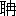
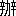

努力は一である。併し之を察すれば、おのづからにして二種あるを觀る。一は直接の努力で、他の一は間接の努力である。間接の努力は準備の努力で、基礎となり源泉となるものである。直接の努力は當面の努力で、盡心竭力の時のそれである。人はやゝもすれば努力の無效に終ることを訴へて嗟歎するもある。然れど努力は功の有と無とによつて、之を敢てすべきや否やを判ずべきでは無い。努力といふことが人の進んで止むことを知らぬ性の本然であるから努力す可きなのである。そして若干の努力が若干の果を生ずべき理は、おのづからにして存して居るのである。ただ時あつて努力の生ずる果が佳良ならざることもある。それは努力の方向が惡いからであるか、然らざれば間接の努力が缺けて、直接の努力のみが用ひらるゝ爲である。無理な
願望に努力するのは努力の方向の惡いので、無理ならぬ願望に努力して、そして甲斐の無いのは、間接の努力が缺けて居るからだらう。瓜の蔓に茄子を求むるが如きは、努力の方向が誤つて居るので、詩歌の美妙なものを得んとして、徒らに篇を連ね句を累ぬるが如きは、間接の努力が缺けて居るのである。誤つた方向の努力を爲すことは寧ろ少いが、間接の努力を缺くことは多い。詩歌の如きは當面の努力のみで佳なるものを得べくは無い。不勉強が佳なる詩歌を得る
因にはならぬが、たゞ當面の勉強のみに因つて佳なる詩歌が得らるゝものでは無い。朝より暮に至るまで、紙に臨み筆を執つたからとて、字や句の百千萬をば連ね得はするだらうが、それで詩歌の逸品は出來ぬ。此意に於て勉強努力は甚だ價が低い。で、努力を喜ばず、勉強を斥ける人もある。特に藝術の上に於ては自然の生成を尚び、努力を排する者も多い。それも有理の説である。努力萬能なりとは斷じ得ぬ。印度の古傳の如く、技藝天即ち藝術の神は六欲の圓滿を得た者の美睡の頭腦中よりおのづからにして
生り出づる者であるかも知れぬ。當面の努力のみで、必らず努力の好果が得らるゝならば、下手の横好といふ諺は世に存せぬであらう。併しそれにしても其は努力の排斥すべき所以にはならないで、卻つて間接の努力を要求する所以になつてゐる。努力無效果の事實は、藝術の源泉となり基礎となる準備の努力、即ち自性の醇化、世相の眞解、感興の旺溢、製作の自在、それ等のものを致すの道を講ずることが重要であるといふことを、徒らに紙に臨み筆を執るのみの直接努力を敢てしてゐるものに明示して居るのである。努力はよしや其の效果が無いにせよ、人の性の本然が、人の生命ある間は、おのづからにして人の敢へてせんとするものである。厭ふことは出來ぬものである。
併し努力を喜ばぬ傾の人に存することを否定することは出來ぬ。將に睡らんとする人と漸く死せんとする人とは、直接の努力をも間接の努力をも喜ばぬ。それは燃ゆべき石炭が無くなつて、火が

を擧げることを辭退して居るのである。
努力は好い。併し人が努力するといふことは、人としては猶不純である。自己に服せざるものが何處かに存するのを感じて居て、そして鐡鞭を以て之を威壓しながら事に從うて居るの景象がある。
努力して居る、若くは努力せんとして居る、といふことを忘れて居て、そして我が爲せることがおのづからなる努力であつて欲しい。さう有つたらそれは努力の眞諦であり、醍醐味である。
此の册の中、運命と人力と、自己革新論、幸福三説、修學の四標的、凡庸の資質と卓絶の事功と、接物宜從厚、四季と一身と、疾病説、以上數篇は明治四十三年より四十四年に於て成功雜誌の上に、着手の處、努力の堆積二篇は同じ頃の他の雜誌に、靜光動光は四十一年成功雜誌に、進潮退潮、説氣山下語は此の書の刊に際して草したのである。努力に關することが多いから、此の書を努力論と名づけた。
努力して努力する、それは眞のよいものでは無い。努力を忘れて努力する、それが眞の好いものである。併し其の
境に至るには愛か
捨かを體得せねばならぬ、然らざれば三
阿僧祗劫の間なりとも努力せねばならぬ。愛の道、捨の道を此の册には説いて居らぬ、よつて猶且努力論と題してゐる。
［＃改丁］
世に所謂運命といふが如きもの無ければ則ち已む、若し眞に所謂運命といふが如きこれ有りとすれば、必らずや個人、若くは團體、若くは國家、若くは世界、即ち運命の支配を受くべきものと、之を支配するところの運命との間に、何等かの關係の締結約束され居るものが無くてはならぬ。勿論古よりの英雄豪傑には、「我は運命に支配せらるゝを好まず、我自ら運命を支配すべきのみ」といふが如き、熱烈
鷙悍の感情意氣を有したものの存することは爭はれぬ事實で、彼の『天子は
命を造る、命を言ふ可からず』と喝破した言の如きも、「天子といふものは人間に於ける大權の所有者で、造物者の絶對權を有するが如くに命を造るべきものである、それが命の我に利せざるを歎じたりなんどするといふが如き薄弱なことの有る可きものでは無い」と英雄的に道ひ放したものである。如何にも面白い
言であつて、凡そ英雄的性格を有して居る人には、常に是の如き意氣感情が多少存在して居るものと云つても宜い位であつて、そして又是の如き激烈勇猛の意氣感情を抱いて居るものは、即ち英雄的性格の人物である一徴、と云つても差支ない位である。運命が善いの惡いのと云つて、女々しい泣事を列べつゝ、他人の同情を買はんとするが如き形迹を示す者は、庸劣
凡下の徒の事である。苟も英雄の氣象あり、豪傑の骨頭あるものは、『大丈夫命を造るべし、命を言ふべからず』と豪語して、自ら大斧を揮ひ、巨鑿を使つて、我が運命を刻み出して然る可きなのである。徒らに賣卜者、觀相者、推命者流の言の如き、『運命前定説』の捕虜となつて、そして好運の我に
與みせざるを歎ずるといふが如きことは爲すべからざる筈である。
およそ世の中に、運命が自己の生誕の日の十干十二支や、九宮二十八宿やなんぞによつて前定して居るものと信じたり、又は自己の有して居る骨格や血色やなんぞに因つて前定して居るものと信じて、そして自己の好運ならざるを歎ずる者ほど、悲しむ可き不幸の人は無い。何故となれば、其の如き薄弱貧小な意氣や感情や思想は、直に是れ否運を招き致し、好運を疎隔するに相當するところのもので有るからである。生れた年月や、おのづからなる面貌やが、眞に其人の運命に關するか關せぬかは別問題としても、
然樣いふことに頭を惱ましたり心を苦しめたりするといふことが、既に餘り感心せぬことである。
荀子に非相の篇が有つて、相貌と運命との關せざることを説いて居るのは二千餘年の昔である。論衡に
命虚の論があつて、生れた年月と運命との相關せざることを言つて居るのは漢の時である。よしや其等の論議が眞を得て居ないで、相貌は實に運命に關し、生年月日は實に運命に關するにしたところで、彼の因襲的從順的な支那人の間にさへ、
然樣いふところの、運命の前定といふが如き思想に屈服せぬ思想を抱いたものが、遠い古から存したことを思ふと、甚だ頼もしい氣がすると同時に、それだのに今の人にして猶且運命前定論に屈伏するが如き情無い思想を抱いて居るものも有るかと思つては、歎息せざるを得ない譯なのである。
實に荀子の言つた通り、相貌は肖て心志は肖ざるものもあり、王充の言つた通り、同時に埋殺された趙の降卒何十萬が、皆同じ生年月を有した譯でも無からうが、其等の事は姑らく論外として置いて、兎に角運命前定論などには屈伏し難いのが、人の本然の感情であるといふことは爭はれない。吾人は或は運命に支配されて居るもので有らう、併し運命に支配さるゝよりは運命を支配したいといふのが吾人の欺かざる欲望であり感情である。然らば則ち何を顧みて自ら卑うし自ら小にせんやである。直に進んで自ら運命を造る可きのみである。是の如き氣象を英雄的氣象といひ、是の如きの氣象を有して、終にこれを事實になし得るものを英雄といふのである。
若し運命といふものが無いならば、人の未來はすべて數學的に測知し得べきもので、三々が九となり、五々が二十五となるが如く、明白に今日の行爲をもつて明日の結果を知り得べきである。併し人事は複雜で、世相は紛糾して居るから、容易に同一行爲が同一結果に到達するとは云へぬ。そこで何人の頭にも運命といふやうなものが、朧氣に意識されて、そして其の運命なるものが、偉大の力を以て吾人を支配するかのやうに思はれるのである。
某は運命の寵兒であつて、某は運命の虐待を被つて居るやうに見えるといふことがある。自己一身にしても或時は運命の順潮に舟を
行つて快を得、或時は運命の逆風に帆を下して踟

するやうに見えるといふことがある。そこで『運命』『運命』といふ語は、容易ならぬ權威のある語として、吾人の耳に響き、胸に徹するのである。
但し聰明な觀察者となり得ぬまでも、注意深き觀察者となつて、世間の實際を見渡したならば、吾人は忽ちにして一の大なる急所を見出すことが出來るで有らう。それは世上の成功者は、皆自己の意志や、智慮や、勤勉や、仁徳の力によつて自己の好結果を收め得たことを信じて居り、そして失敗者は皆自己の罪では無いが、運命の然らしめたが爲に失敗の苦境に陷つたことを歎じて居るといふ事實である。即ち成功者は自己の力として運命を解釋し、失敗者は運命の力として自己を解釋して居るのである。
此の兩個の相反對して居る見解は、其の
何の一方が正しくて、何の一方が正しからざるかは知らぬが、互に自ら欺いて居る見解で無いには相違無い。成功者には自己の力が大に見え、失敗者には運命の力が大に見えるに相違無い。
是の如き事實は、抑

何を語つて居るので有らうか。蓋し此の兩樣の見解は、皆いづれも其の一半は眞なのであつて、兩樣の見解を併合する時は、全部の
眞となるのでは無からうか。即ち運命といふものも存在して居つて、そして人間を幸不幸にして居るに相違無いが、個人の力といふものも存在して居つて、そして又人間を幸不幸にして居るに相違無いといふことに歸着するのである。たゞ其の間に於て成功者は運命の側を忘れ、失敗者は個人の力の側を忘れ、各
一方に偏した觀察をなして居るのである。
川を挾んで同じ樣の農村がある。左岸の農夫も
菽を種ゑ、右岸の農夫も菽を作つた。然るに秋水大に漲つて左岸の堤防は決潰し、左岸の堤防の決潰した爲に右岸の堤防は決潰を免れたといふ事實が有る。此時に於て、左岸の農夫は運命の我に
與みせざるを歎じ、右岸の農夫は自己の熱汗の粒々辛苦の結果の收穫を得たことを悦んだとすれば、其の兩者はいづれも欺かざる、又誤まらざる、眞事實と眞感想とを語つて居るのである。其の相反して居るの故を以て左岸の者の言と、右岸の者の言との、
那の一方かが、虚僞で有り誤謬で有るといふことは言へぬのである。そして天運も實に有り、人力も實に有ることを否む譯には行かぬ。たゞ左岸の者は、人力を
遺れて運命を言ひ、右岸の者は運命を遺れて人力を言つて居るに過ぎずして、その人力や運命は、川の左右を以て扁行扁廢して居るのでは無いことも明白である。
扨既に運命といふものが有つて、冥々に流行するといふ以上は、運命流行の原則を知つて、そして好運を招致し、否運を拒斥したいと云ふのは、誰しもの抱くべき思念である。そこで此の至當な欲望に乘じて、推命者だの、觀相者だの、卜筮者だのが起つて、神祕的の言説を弄するのであるが、神祕的のことは姑らく擱いて論ずまい。吾人は飽までも理智の燭を執つて、冥々を照らす可きである。こゝに於て理智は吾人に何を教へるで有らう。
理智は吾人に教へて曰く、運命流行の原則は、運命其物のみ之を知る。たゞ運命と人力との關係に至つては我能く之を知ると。
運命とは何である。時計の針の進行が即ち運命である。一時の次に二時が來り、二時の次に三時が來り、四時五時六時となり、七時八時九時十時となり、是の如くにして一日去り、一日來り、一月去り、一月來り、春去り、夏來り、秋去り、冬來り、年去り、年來り、人生れ、人死し、地球成り、地球壞れる、其が即ち運命である。世界や國家や團體や個人に取つての好運否運といふが如きは、實は運命の一小斷片であつて、そしてそれに對して人間の私の評價を附したるに過ぎぬのである。併し既に好運と目すべきものを見、否運と目すべきものあるを覺ゆる以上は、其の好運を招き致し、否運を拒斥したいのは當然の欲望である。で、若し運命を牽き動かす可き線條があるならば、人力を以て其の幸運を牽き來り招き致しさへすれば宜いのである。即ち人力と好運とを結び付けたいので、人力と否運とを結び付けたくないのである。それが萬人の欺かざる欲望である。
注意深き觀察者となつて世上を見渡すことは、最良の教を得る道である。失敗者を觀、成功者を觀、幸福者を觀、不幸者を見、而して或者が如何なる線綫を手にして好運を牽き出し、或者が如何なる線綫を手にして否運を牽き出したかを觀る時は、吾人は明かに一大教訓を得る。これは即ち好運を牽き出し得べき線は、之を牽く者の
掌を流血淋漓たらしめ、否運を牽き出すべき線は、
滑膩油澤なる柔軟のものであるといふ事實である。即ち好運を牽き出す人は常に自己を責め、自己の掌より紅血を滴らし、而して堪へ難き痛楚を忍びて、其の線を牽き動かしつゝ、終に重大なる體躯の好運の神を招き致すのである。何事によらず自己を責むるの精神に富み、一切の過失や、齟齬や、不足や、不妙や、あらゆる拙なること、愚なること、好からぬことの原因を自己一個に歸して、決して部下を責めず、朋友を責めず、他人を咎めず、運命を咎め怨まず、たゞ／＼吾が掌の皮薄く、吾が腕の力足らずして、好運を招き致す能はずとなし、非常の痛楚を忍びつゝ、努力して事に從ふものは、世上の成功者に於て必らず認め得るの事例である。蓋し自ら責むるといふ事ほど、有力に自己の缺陷を補ひ行くことは無く、自己の缺陷を補ひ行くことほど、自己をして成功者の資格を得せしむるものの無いのは明白な道理である。又自ら責むるといふことほど、有力に他の同情を惹くことは無く、他の同情を惹くことほど、自己の事業を成功に近づけることは無いのも明白な道理である。
前に擧げた左岸の農夫が
菽を植ゑて收穫を得ざりし場合に、其の農夫にして運命を怨み咎むるよりも、自ら責むるの念が強く、是我が智足らず、豫想密ならずして是の如きに至れるのみ、來歳は菽をば高地に播種し、低地には
高黍を作るべきのみ、といふ樣に損害の痛楚を忍びて次年の計を善くしたならば、幸運は終に來らぬとは限るまい。すべて古來の偉人傑士の傳記を繙いて見たならば、何人も其の人々が必らず自ら責むるの人であつて、人を責め他を怨むやうな人で無い事を見出すで有らうし、それから又飜つて各種不祥の事を惹起した人の經歴を考へ
檢べたならば、必らず其の人々が自己を責むるの念に乏しくて、他を責め人を怨む心の強い人である事を見出すで有らう。否運を牽き出す人は常に自己を責めないで他人を責め怨むものである、そして柔順な手當りの好い線を手にして、自己の掌を痛むる程の事をもせず、容易に輕くして且つ醜なる否運の神を牽き出し來るのである。
自己の掌より紅血を滴らすか、滑澤柔軟のもののみを握るか、此の二つは、明らかに人力と運命との關係の好否を語る所の目安である。運命のいづれかを招致せんとするものは、思を致すべきである。
［＃改丁］
着手の處の不明な教は、如何に崇高な教でも、莊嚴な教でも、或は正大圓滿な教でも、教へらるゝ者に取つては、差當り困卻を免れぬ譯である。本來を云へば、教には着手の處の不明なものなぞが有る可き譯は無い。しかし吾人は實際其の旨意が甚だ高遠であることを感ずるが、それと同時に、漠として着手の處を見出し難いものに遭遇することが少く無い。それも歳月が立つて見ると、實は教其の物が漠として着手の處を認めしめないのではなくて、自分が或程度に達して居なかつた其の爲に、着手の處を見出し得なかつたのだと
悟るので有るが、それは兎に角に、やゝもすると着手の處を知り得ない教に遭遇する事のあるといふ事は、誰しも實驗する事實で有るらしい。戲談ならば、論理的遊戲とも云ふべき謎のやうな教も宜いが、實際の利益を得ようといふ意で教を請ふのに、さて着手の處の分らぬ教を得たのでは實に弱る譯である。そこで問ふ者は
籠耳になつて仕舞つて、教へは聞いたには違ひ無いが何らの益をも得ずに終るといふ事も少く無い。それは聞く人にも聞かせる人にも、不本意千萬なるに相違無い。教といふものも、兎もすれば一場の座談になる傾向が有りは仕ないか。そして又所謂「籠耳」で終る傾向が有りは仕まいかと危まれるけれども、若し
左樣で有つたならば、それは聽者にも談者にも、着手の處といふことが強く印記されて居なかつた爲として、省みなければならないので、教其の物に就て是非をす可きではないのであらう。
着手の處、着手の處と尋ねなければならぬ。
播種耕耘の事を學ぶとしても、經營建築の事を學ぶとしても、操舟航海の事を學ぶとしても、軍旅行陣の事を學ぶとしても、畫を學ぶとしても、書を學ぶとしても、着手の處、着手の處と
逼り詰めて學ぶので無くては、百日過ぎてもまだ講堂の内に入らぬので有る、一年經つても實踐の域に進まぬので有る。
何樣して
心會體得のなんのといふ境地に到り得るもので有らう。何でも彼でも着手の處を適切に知り得て、そしてそこに力を用ひ功を積んで、そしてそこから段々と進み得べきでは有るまいか。さて
其樣ならば着手の處は
何の樣なところで有らうか。それは蓋し學ぶところのもの如何によつて違ふで有らうから、今直に之を掲げ示す事は出來ぬが、一般の修養の上からならば、教ふる者に於ては敢て示せぬでは無からう。けれども着手の處、着手の處と
逼り詰めて、人々各自が其の志す所の道程に於て或點を認め出した方が妙味が有るで有らう。
※［＃「にんべん＋（人がしら／小）」、U+4F31、32-11］、
脚あり、※
［＃「にんべん＋（人がしら／小）」、U+4F31、32-11］、歩むべし、※
［＃「にんべん＋（人がしら／小）」、U+4F31、32-11］、手あり、※
［＃「にんべん＋（人がしら／小）」、U+4F31、32-11］、捉る可しである。
［＃改丁］
歳といふものは何處に首が有り尾が有るといふ可き筈の者では無いが、古俳人の所謂「定め無き世の定め哉」であつて、おのづからにして人間には大晦日も有れば元日も有り、終に大晦日は尾の如く、元日は
首の如く思はるゝに至つて居るので有る。扨そこで既に頭が有り尾が有るといふことになると、歳の尾たる大晦日には一年の總勘定を行つて見、歳の首には將來の計畫をも
行つて見たくなるのが人の常情で有る。歳末の感慨やら、年頭の希望やらは、此の人情からして生じて來るので、誰しも
然樣自分の思つたやうに物事の運べて居るものは
鮮いのであるから、歳末には日月の逝き易くして、流水奔馬の如くなるを今更ながら感歎し、そして又宿志の蹉

として所思の成就せざるを恨み歎くのが常で有り、それから又年首には、屠蘇の盃を手にし、雜

の膳に
對ふに及んで、今年こそはと自ら祝福して、前途に十二分の希望と計畫とを懸けて、奮然として振ふのが常で有るのである。歳に
首があり尾が有るべき理は無いなどと、愚にも付かぬ理窟などを考へて居るものは一人だつて有りは仕ない。大抵の人は歳末には感慨嗟歎し、年頭には奮起祝福するのが常で有る。實に人情自然、然樣有るべき理なので有る、當然なので有る。大人小人、俊傑平凡の別無く、蓋し皆然樣いふ感情を懷くので有るから、即ちそれは正當の感情なのである。
是の如き感情の發動が正當で有るとすれば、吾人は其の歳末の嗟歎をば本年度に於ては除き去り、そして其の年頭の希望をば本年度に於ては實現したいと考ふることが、第二に起つて來るところの意思であつて、其の意思は本より正當にして、且美なる意思なのである。
有體を云へば、誰しも皆毎年々々に是の如き感情を懷き、是の如き意思を起し、そして又毎年々々嗟歎したり、發憤したりして居るのである。で、脚の立場を動かして、暫らく自己といふものに同情せぬ自己になつて客觀して見れば、年々歳々假定的の歳末年頭に於て、
某甲なる一の拙き俳優が同じやうな筋書によつて、同じやうな思入れを、同じやうな舞臺の、同じやうな状態の、同じやうな機會に於て演じて居るのに過ぎぬのを認めない譯には行かないから、笑ひ出し度くもなり、馬鹿々々しいといふやうな考も起らずには居ない。が、併し此の考は自己に取つては決して良い考では無くつて、如何に達觀して
悟つたやうな事を思つたからとて、そんなら明日から世外の人となれるかと云ふに、
然樣はなれぬといふのなら、矢張り正直に筋書に從つて、同じ感慨、同じ希望、同じ思入れを
爲た方が宜いのである。すると、努力すべきは、たゞ來るべき歳末又は年頭に於ては、今迄とは些し違つた役廻りを受取つて、少しは氣

を吐き、溜飮を下げるやうなことを演ぜんとして、其の注文の通り貫けるやうにとすべき一事である。即ち
某甲といふ自己を『新』にすべきのみなのである。例に依つて例の如き某甲では
宜けないから、例の某甲よりは優れた某甲に自己を改造すべきよりほかに正當な道は無いのである。
けれども其は知れ切つた事である。誰も皆『新しい自己』を造りたい爲に腐心して居るので有るが、其の新しい自己が造れぬので、歳末年頭の嗟歎や祝福を繰返すのである。と、いふ
評言は其處此處から出るに相違無い。如何にも自他共に實際は
然樣で有らう。併し新しい自己が造れぬと定まつて居るのでは無いから、多くの人が新しい自己を造らんとして努力しても造れぬからと云つて、
都べての人が新しい自己を造り得ぬとは限らぬ。イヤ爲す有る人が隨分去年の自己と異なつた今年の自己を造り、或は一昨年の自己と違つた今年の自己を造つて、年末の嗟歎の代りに凱歌を擧げて、竊に歡呼の聲を洩して居るのも世の中には少からず有らう。して見れば若し新しい好い自己を造り得なかつたとあれば、其は新しい好い自己を造り得ない道理が有つてでは無くて、新しい好い自己を造るに適しない事を爲して歳月を送つたからだと云つて宜しいのである。即ち新しい自己を造るべき道を考へて之を實行することが粗漏で有つたために、新しい自己が造れなかつたといふ事は明らかなので有る。
同じ貨幣は同じ時に於ては同じ價値を有する道理で有る。若しも去年や一昨年と同一の自己で有るならば、自己が受取るべき運命も同一なるべき筈で有る。即ち新しい自己が造り成されぬ以上は、新しい運命が獲得される譯は無い。同一の自己は同一の状態を繰り返すだらう。そして其樣な事を幾度と無く繰り返す中に、時計のゼンマイは漸く弛んで、其の人の活力は漸く少くなり、終に幸福を得ざるのみならず、幸福を得べき豫想さへ爲し能はざるに至つて仕舞ふのであらう。で有るから大悟して幸不幸を雙忘して仕舞ひ得れば兎も角も、普通の處から立論すれば、在來年々に不滿足を感じて、嗟歎したり祝福したりして居るやうなものならば、是非共振ひ立つて自己を
新にして、そして新なる運命の下に新しい境遇を迎へねばならぬので有る。で、それなれば
何樣して自己を新にしようかといふのが、是當面の緊急問題である。
此の問題は一つ勘査して見たい問題で有る。第一何によつて自己を
新にしたもので有らうか、といふ事が先決せられねばならぬ。即ち自己によつて自己を新にするか、他によつて自己を新にするか、といふ事で有る。こゝに自然の一塊石が有ると假定する。此の一塊石は或形状或性質を有して長い年月の間同一の運命を繰返して居たものとする。此の石に新しい運命を得させようとするには、此の石を新にすれば自ら成立つので有る。即ち他力を以て、或は其の凸凹を有用的にし、或は其の表面を裝飾的にすれば、其の石は建築用、或は器財用として用ひらるゝに至るので有らう。此は他によつて自己を新にして、そして自ら新しい運命を致したのである。又こゝに一醫學生が有つて、數年開業試驗に應じて、數年間同一の運命を繰返して居たものとする。此の醫學生が一朝にして同じ貨幣は同じ價値を有するものだといふことを悟り、發憤勉勵して、研鑚甚だ力めた末に試驗及第して開業するを得たものとすれば、それは自己によつて自己を新にしたので有る。
此の例のやうに、自己を
新にするにも、他によるのと、自らするのとの二ツの道が有る。他力を仰いで、自己の運命をも、自己其物をも新にした人も、決して世に少くは無い。立派な人や、賢い人や、勢力者や、黽勉家や、それらの他人に身を寄せ心を託して、そして其の人の一部分のやうになつて、其の人の爲に働くのは、即ち自己のために働くのと同じで有ると感じて居て、其の人と共に發達し、進歩して行き、詰り其の人の運命の分前を取つて自己も前路を得て行くといふのも世間に在ることで有つて、決して慚づ可き事でも厭ふ可きことでも無い。
矢張一の立派な事なのである。往々世に見える例で有るが、
然程能力の有つた人とも見え無かつた人が、或他の人に隨身して數年を經たかと思ふ中に、意外に其の人が能力の有る人になつて頭角を出して來る、といふのが有る。で近づいて其の人を觀ると既に舊阿蒙では無くて、其の人物も實際に價値を増して居つて、目下の好運を負うて居るのも成程不思議は無い、と思はれるやうになつて居るのがある。其は即ち其の初め、或人に身を寄せた時からして、
他によつて新しい自己を造り出し始めたので、そして新しい自己が出來上つた頃、新しい運命を獲得したのである。此の他力によつて新しい自己を造るといふ道の最も重要な點は、自分は自分の身を寄せて居るところの人の一部分同樣であるといふ感じを常に存する事なので有つて、決して自己の
生賢しい智慧やなんぞを出したり、自己の爲に小利益を私しせんとする意を起したりなんぞしてはならぬのである。
他人によつて自己を
新になさうとしたらば、昨日の自己は捨てて仕舞はねばならぬのである。他人によつて新しい自己を造らうと思ひながら、矢張り自己は昨日の自己同樣の感情や習慣を保存して、内々一家の見識なぞを立てて居たいと思ふならば、それは當面の矛盾であるからして、何等の益を生じないばかりで無く、卻つて相互に無益の煩勞を起す基である。それほど自己に執着して居る位に、自己を好い物に思つて居るならば、他人に寄る事も要らないから自己で獨立して居て、そして在來の自己通りの状態や運命を持續して、自ら可なりとして居るが宜いのである。新しい自己を造る要も無いやうなものである。樹であるならば撓めることも出來るが、化石で有つては撓めることは出來ない。化石的自己を有して居る人も世には少く無い。若し化石的自己を有して居る人ならば、他力を頼んでも他力の益を蒙る事は蓋し少いで有らう。藤であるならば竹に交つても眞直にはなるまいが、蓬であるならば麻に交れば
直になる。世には
蓬的自己を有して居る人も少くは無い、若し蓬的自己を有して居る人ならば、自己を沒卻して仕舞つて、自己より卓絶した人、即ち自己が
然樣有り度いと望むやうな人に隨從して、其の人の立派な運命の圈中に於て自己の運命を見出すのも、見苦しい事では無いのみならず、合理的な賢良な事である。古來の良臣といふのには蓋し此の類の人が有るので有らう。これは他力によつて自己を
新にする方の
談である。
他力によつて自己を
新にするのには、何より先に自己を他力の中に沒卻しなければならぬのである。丁度淨土門の信者が他力本願に頼る以上は憖じ小才覺や、えせ
物識を棄てて仕舞はねばならぬやうなものである。併し世には又
何樣しても自己を沒卻することの出來ぬ人もある。
然樣いふ人は自ら新しい自己を造らんと努力せねばならぬのである。他力に頼るのは
易行道であつて、此は頗る
難行道である。何故難行道で有るかと云ふに、今までの自己が宜しくないから、新しい自己を造らうといふのであるのに、其造らうといふものが矢張り自己なので有るからである。之を罵り嘲つて見るならば、恰も自己の脚の力によつて自己を空中に騰らしめんとするが如きもので有つて、殆ど不可能であると云ひたい。であるから成程世間の多數の人が毎年々々嗟歎したり祝福したりして、新しい自己を造らうと思ひ

ちながら、新しい自己を造り得ないで、又年々歳々同じ事を繰り返す譯である。けれども一轉語を下して見ようならば、『自己ならずして抑
誰が
某甲を新にせんや』で有る。
眞實の事を云へば、我流で碁が強くなる事は甚だ望の少い事で、卓絶した棊客に頼つて學んだ方が速に上達すると同じく、世間で自力のみで新しい自己を造つて年々歳々に進歩して行く人は非常に少く、矢張り他力に頼つて、そして進歩して行く人の方が多いので有る。が、自ら新しい自己を造らんとすることは實に高尚偉大な事業で有つて、
假令其の結果は甚だ振はざるにせよ、男らしい立派な仕事たるを失はぬのである。況んや
百川海を學んで
海に至るであるからして、其の志さへ失はないで、一蹶しても二躓しても、三顛四倒しても、起上り／＼して敢て進んだならば、鈍駑も奮迅すれば豈寸進無からんやである。であるからして、必らずや一年は一年に、一月は一月に、好處に到達するに疑は無いのである。自ら新にするといふことは、換言すれば詰り個々の理想を實現せんとする努力であるから、豈其の人の爲とのみ云はんやで、
然樣いふ貴い努力が積累ねらるればこそ世が進歩するのであるから、實に世間全體に取つても甚だ尚ぶべく
嘉す可き事なのである。みづから新しくせんとする人が少くなれば、國は老境に入つたのである。現状に滿足するといふ事は、進歩の杜絶といふ事を意味する。現状に不滿で、未來に懸望して、そして自ら新にせんとするの意志が強烈で有れば、即ちそれが其の人の生命の存する所以なのである。他力に頼つて自己を
新にしようとするにしても、信といふものは自己に由つて存するのであるから、即ち他力に頼る中に、自力の働が有る。自力に依つて自己を新にせんとするにしても、自照の智慧は實に外圍からの賜物で有るから、自力に依る中に他力の働が有る。自力他力と云つて、強ひて嚴正には差別する事も難い位のものである。併し他力に頼る上は自己を沒卻するので有るから、舟に乘り車に乘つたやうなもので、大に易い氣味が有るが、自ら
新にせんとする以上は、自家の手脚を以て把握し歩行しなければならぬのだから、當面に直に考量作爲を要するので有るが、扨
何樣したらば自ら新にする事が出來よう。
假定するのでは無い、蓋し大抵の人の實際が斯樣なので有る。「
某甲當年何十何歳、自ら顧みるに從來の自己は自己の豫期したりし所に
負くこと大にして、而して今日に及べり、既往は是非に及ばず、今後は奮つて自ら新にし、自己をして善美のものたらしめ、從つて自己の目的希望をして遂げしめ、福徳圓滿、自己の理想境に到達するを期せん。」といふやうな事を思つて居るのが普通善良の人の懸直無しの所で、此より下つた人は自ら新にするの工夫も爲さず、運命だけが新規上等のものになつて現前せんことを望んで居る位のもので有らうから、其は論ずるに足らぬとして擱いて、其なら差當り何樣して自ら新しい自己を造らうとしたら宜いかが喫緊な研究問題なのである。そして其の着手着意の處を知り得て過たずに、實作實效の境に處し得て
錯まらざらんことを人も我も欲するのである。
自ら新にする第一の工夫は、新にせねばならぬと信ずるところの舊いものを一刀の下に斬つて捨てて、
餘を存せしめざることである。雜草が今まで茂つてのみ居た
圃を、これではならぬから新に良好な菜蔬を仕立てようとする場合であれば、それは即ち矢張り敢て新にするので有つて、若し其の地が新にされ了れば、多少はあれ菜蔬が出來る時が來て、即ち從來とは異つた運命が獲得される譯なのである。然れば其は雜草を棄てて菜蔬にせねばならぬと信ずるのであるから、第一に先づ新にせねばならぬ舊いもの、即ち雜草を根きり葉きり、
耘り去つて仕舞はねばならぬものである。舊いものは敵である。自分の地に生じて居たものでも、何でも古いものは敵である。雜草を耘り去つて仕舞はねば、新しく菜蔬は播き付けられぬのである。そこで此の道理に照らせば自然分明であるが、今までの自分の心術でも行爲でも、苟も自ら新にせんと思ふ以上は、其の新にせねばならぬと信ずるところの舊いものを、大刀一揮で、英斷を振つて斫り倒して仕舞はねばならぬものである。例へば今まで做し來つたところの事は、習慣でも思想でも何でも一寸棄て難いものであるが、今までの
何某で無い何某にならうといふ以上は、今までの習慣でも思想でも何でも惡い舊いものは總べて棄てなければならぬ。併し
然樣なると未練や何ぞが出て棄てられぬものである。妙な辯護説などを妙なところから考へ出して棄てぬものである。だが、古い齒を拔き去ることに於て遲疑しては、新しい齒の爲にならぬ、草莱を去らねば嘉禾は出來ぬのである。去年の自己は自己の敵であると位に考へねばならぬのである。何を斬つて棄てなければならぬかは人々によつて異なつて居るだらうが、人々皆自ら能く知つて居るだらう。
具象的に語れば斯樣で有る。從來不健康で有つた人ならば、不健康は一切の不妙の事の
因で有るから、自ら
新にして健康體にならねばならぬと思ふのである。さて
然樣思うたらば、自己の肉體に對する從來の自己の扱ひ方を一應糾して見て、先づ其の弊の顯著なる箇條を斬つて棄てて斥けて仕舞はねばならぬ。そして其の點に於て努力して新にせねばならぬ。例を擧げよう。從來貪食家で胃病勝であつたらば、貪食といふ事を斬つて棄てねばならぬ、節食せねばならぬ。貪食の爲に辯護して、貪食でも運動を多くしたら宜からうなぞと云ふのは宜く無い。雜草を拔かずとも肥料をさへ多く與へたら菜蔬が生長する餘地は有るだらう、といふやうな理窟は、理窟としては或を成立つで有らうけれども、要するに中正の説では無い。從來と同樣な身的行爲を保つて居れば、從來と同樣な身的状態を得るのは當然の事である。從來と異なつた身的状態を得度いとならば、從來做し來つた身的行爲を讎的のやうにして斬つて棄てて仕舞ふが宜い。從來と反對な結果が得たくば、從來と反對な原因を播くが宜い。貪食を爲しては胃病を患ひ、藥力を假りて病を癒しては、
復貪食して病みつゝ、永く自己の胃弱を歎じて恨むが如き人も世には甚だ少くは無い。昨日の自己をさへ斬つて棄てれば、明日の自己に胃病は無いのである。貪食と健胃劑とは雜草同士の搦み合なのである。二者共に
耘り去つて仕舞へば、健康體の精力は自然と得られるのである。胃病を歎じて居る人々を觀るに、多くは貪食家か、亂食家か、間食家か、大酒家か、異食家か、呆坐家で、そして自己の眞の病原たる惡習慣に對して賢く辯護することは、雜草を拔かずとも雜草が吸收するよりは猶多くの肥料を與へたら菜蔬の生育に差支は無からうと云ふやうな理論家に酷肖して居るのである。苟も自ら新にせんとするものは昨日の自己に媚びてはならぬのである。一刀の下に賊を斬つて仕舞はねばならぬのである。何をするにも差當つて健康は保ち得るやうにせねば、一切瓦解する虞が有るから、從來が不健康なら發憤して賊を
馘るのが何より大切だ。親讓りで體質の弱い人は實に氣の毒で有るが、それでもすべて從來做し來つた事で惡いと認めた事はずん／＼と斬り棄てて行つたら、終に或は從來に異なつた健康體となり得ぬとも限らぬのである。再び言ふ。新しくせねばならぬと思ふところの舊いものは、未練氣なく斥けて仕舞はねばならぬのである。
不健康の人が衞生に苦勞する餘り、アレコレ云つて下らないことに齷齪として居るのは抑
間違切つた
談で、齒磨、石鹸の瑣事まで神經を惱まして居たり、玩弄物のやうな、若くは間食が變形した樣な藥などを、嘗めたり噛つたりして居るが如き事に心を使つて居るのは、それが先づ第一に非衞生的の頂上で、それよりも酒を廢すとか、煙草を廢すとか、不規則生活を改めるとかした方が、何程早く健康を招き致すか知れたものでは無い。若し從來不健康の爲に甚だしく不利を蒙つて居ると思ふ人が有つたなら、是非共其の人は自ら新にして健康を招致せねばならぬのだが、扨眞誠に自ら新にしようと思つたなら、昨日までの自己の身體取扱方を斷然と改めねばならぬのである。今日以後も昨日以前同樣の取扱方を吾が身に加へて居て、而して明日からは往日と異なつた結果を得ようといふ
其樣な得手勝手な注文は成り立つ道理が無い。胃病に就いて云へば、若し間食家だつたなら間食を斬つて棄てるがよい。大酒家だつたなら徳利と絶交するがよい。亂食家だつたならムラ食を改めるがよい。異食家だつたなら奇異なものを食はぬがよい。呆坐家だつたら、座蒲團を棄てて仕舞つて、火鉢を打碎いて、戸外に運動する習慣を得るが宜い。湯茶を無暗に飮む習慣が有つたなら、急須や茶碗を抛り出して仕舞ふが好い。喫煙家だつたら煙草を棄てて仕舞ふが宜い。自己の生活状態を新にすれば自己の身體状態は必らず變易せずには居ない。激變を與へるのだから、身心共に樂では無いに相違無いが、これが出來ぬなら矢張永久に、昨年の如く、一昨年の如く、一昨々年の如く、同じ胃病に惱んで青い顏をして居るが宜いので、そして胃病宗の歸依者となつて、遂に胃病の爲めに獻身的生涯を送るが宜いのだから、歎息して不足などを云はぬが宜いのである。右が嫌なら左に行け、左が嫌なら右に行けである。良醫の判斷に從ひ、自己の生活状態を新にして、それで胃病が
治せぬなら、それは既に活力が消耗してゐる證據で有るから致方は無いが、大抵の人は活力消耗して病癒ゆる能はざる場合に立つて居るのでは無くて、自己の生活状態を新にせぬが爲に、即ち昨日までの自己身體取扱方に未練を殘して居る爲に、矢張り昨日通りの運命に付き纒はれて苦んで居るので有る。例に依つて例の如き舊い運命に生捕られたくないならば、舊い状態を改むるに若くは無いのである。
胃病のみでは無い。
 食
食を常にして諸病に犯され易い薄弱體を有して苦んで居る人も有る。刺激物を取り過ぎて、心
舍に安んぜざる悵

悸懼の状に捉へられて困つて居る人も有る。夜業を廢さないで眼を病んで弱つて居るものも有る。最も甚しい愚なのに至つては、
唐辛を嗜食して痔に苦んで居るなどと云ふ滑稽なのも有る。生活に逐はれて坐業をのみ執り居る爲に、運動不足で、筋肉弛緩を致し、所謂羸弱になつて悄然としてゐる、同情すべきものもある。父母の爲に惡體質を賦與されて、其が原因で常に藥餌と親む可き状を有してゐる、最も悲むべきものも有る。が、要するに從來の自己に不滿を感ずるならば、從來の自己状態を改めて仕舞ふのが宜いので有る。ところが昨日の自己も矢張り可愛いもので有つて、「酒は我が身體を惡くし居るな」とは知りつゝも「酒を棄てる事は出來無い」なんぞと云ふのが人の常で有る。兎角に理窟を付けて昨日の自己を保護辯護しつゝ、扨其の結果だけは昨日より好いものを得たいと望むのが人情で有るから、恕すべきでは有るが、それを恕するとすれば、數理上矢張り自己は新にならぬのであるから何にもならない。是非英斷を施さねばならぬのである、身體が弱くては一切不幸の根が斷れず、一切幸福の泉が涸れ勝であるから、苟も自ら新にしようと思つたならば、痛苦を忍んで不健康を致す昨日の自己の舊い惡習と戰つて之に克ち、之を滅し、之を
殲して仕舞はねばならぬのである。
併し身體が弱くても事が成せぬのでは無い。身が弱くても意が強ければ、一日の身あれば一日の事は成せるので有る。が若し身體を弱くする原因が何で有るかを知悉しながらも、之を改むることが出來ぬやうに意が弱くて、そして身が弱くては、氣の毒ながら其人は自ら新にする事が出來難いのであつて、從來通りの状態を超脱する事は出來ぬのである。それではならぬ。宜しく發憤して自ら新にすべしである。
［＃改丁］
船を出して風に遇ふのに何の不思議は無い。水上は廣闊、風はおのづからにして有るべき理である。併し其の風にして我が行かんと欲する方向に同じき時は、我は之を順風と稱して、其の福利を蒙るを得るを悦び、又我が方向に逆行して吹く時は、我は之を逆風と稱して、其の不利を蒙るを悲み、又全くの順風にもあらず、全くの逆風にもあらざる横風に遇ふ時は、帆を繰り舵を使ふの技術と、吾が舟の有せる形状との優劣善惡によつて、程度の差はあるが之を利用するを得るのである故に、餘り多くの風の利不利を口にせず、我が福無福をも
談らぬのが常である。
是の如き場合に於て風には本來福と定まり福ならずと定まつて居ることも無いのであるから、同一の南風が北行する舟には福となり南行する舟には福ならぬものとなるのである。順風を悦ぶ人の遇つて居る風は、即ち逆風を悲む人の遇つて居る風なのである。福ならずとせらるゝ風は即ち福なりとせらるゝ風なのである。して見れば福を享くるも福を享けぬも同じ風に遇つて居るのであるから、福を享けた舟が善い故福を享けたといふ事も無く、福を享けぬ舟が惡い故福を享けぬといふことも無く、所謂
運り合せといふもので有つて、福無福に就ては何等の校量計較によつて福を享け致すべきところも無いやうなものである。
併しながら福無福を偶然の
運り合せであるとするのは、風に本來福も無福も無いといふ理や、甲の福とする風は即ち乙の無福とする風と同一の風であるからといふ理が有ればとて、それは聊か速斷過ぎるのである。如何となれば風は豫測し難いものには相違無いが、又全く豫測することは出來ないものとも限られては居ないのであるから、舟を出さんとするに臨みて、十二分の思議測量して我に取つて福利なる風を得べき見込を得たる後、初めて海に出づるに於ては、十の七八は福を享け無福を避け得る筈である故に、福に遇ひ無福に遇ふを以て偶然の廻り合せのみに歸すといふことは、正當の解釋とは認められない理である。
人の社會に在つて遭遇する事象は百端千緒であるが、一般俗衆がやゝもすれば發する言語の『福』といふものは、社會の海上に於て、無形の風力によつて容易に好位置に達し、又は權勢を得、富を得たるが如き場合を指すので、彼は福を得たといふものは、即ち富貴利達、若くは富貴利達の斷片的なるものを得たといふのである。
福を得んとする希望は決して最も立派なる希望では無い。世には福を得んとする希望よりも猶幾層か上層に位する立派な希望がある。併し上乘の根器ならざるものに在つては、福を得んとするも決して無理ならぬことで、しかも亦敢て強ちに之を批難排撃すべき事でも無い。福を得んとするの極、所謂淫祠邪神に事ふるをも辭せずして、白蛇に媚び、妖狐に諂ふ如きに至つては、其の醜陋なること當り難きものであるが、滔々たる世上幾多の人が、或は心を苦め、或は身を苦め、營々孜々として勉め勤めてゐるのも、皆多くは福を得んが爲なのであると思へば、福に就て言を爲すも亦徒爾ではあるまい。
太上は徳を立て、其の次は功を立て、又其次は言を立つるとある。およそ此等の人々に在つては、禍福吉凶の如きは抑
末なるのみで、餘り深く立入つて論究思索する價も無いことで有らう。若し又單に福を得んことにのみ腐心して之を思ふに至らば、蓋し其の弊や救ひ難きものあらんで、論究思索も、單に、「如何にして福を得べきや」といふことのみに止まつたらば、或は人間の大道を離れて邪路曲徑に入るの虞が有らう。本來から言へば、事に處し物に接するに於て吾人は須らく『當不當』を思ふべきで、『福無福』の如きは論ぜずして可なる譯であるが、こゝに幸福の説をなすものは、愚意所謂落草の談をなして人をして道に進ましめんとするに他ならぬのである。甚しく正邪を語れば人をして狷介偏狹ならしむるの傾がある。多く禍福を
談れば人をして卑小ならしむるの傾がある。言をなすも實に難い哉であるが、讀む人予が意を會して言を忘れて可なりである。
幸福不幸福といふものも風の順逆と同樣に、
畢竟は主觀の判斷によるのであるから、定體は無い。併し先づ大概は世人の幸福とし不幸とするものも定まつて一致して居るのである。で、其の幸福に遇ふ人、及び幸福を得る人と然らざる人とを觀察して見ると、其の間に希微の妙消息が有るやうである。第一に幸福に遇ふ人を觀ると、多くは『惜福』の工夫のある人であつて、然らざる否運の人を觀ると、十の八九までは、少しも惜福の工夫の無い人である。福を惜む人が必らずしも福に遇ふとは限るまいが、
何樣も惜福の工夫と福との間には關係の除き去る可からざるものが有るに相違ない。
惜福とは
何樣いふものかといふと、福を使ひ盡し取り盡して
終はぬをいふのである。たとへば掌中に百金を有するとして、之を浪費に使ひ盡して半文錢も無きに至るがごときは、惜福の工夫の無いのである。正當に使用するほかには敢て使用せずして、之を妄擲浪費せざるは惜福である。吾が慈母よりして新たに贈られたる衣服ありと假定すれば、其の美麗にして輕暖なるを悦びて、舊衣猶ほ未だ
敝れざるに之を着用して、舊衣をば行李中に押まろめたるまゝ、黴と垢とに汚さしめ、新衣をば早くも着崩して、折目も見えざるに至らしむるが如きは、惜福の工夫の無いのである。慈母の厚恩を感謝して新衣をば
浪りに着用せず、舊衣猶未だ敝れざる間は、舊衣を平常の服とし、新衣を冠婚喪祭の如き式張りたる日に際して用ふるが如くする時は、舊衣も舊衣として其の功を終へ、新衣も新衣として其の功を爲し、他人に對しても清潔謹嚴にして敬意を失はず、自己も諺に所謂『
褻にも晴にも』たゞ一衣なる寒酸の態を免るゝを得るのである。是の如くするを福を惜むといふのである。
樹の實でも花でも、十二分に實らせ、十二分に花咲かす時は、收穫も多く美觀でもあるに相違無い。併しそれは福を惜まぬので、二十輪の花の蕾を、七八輪も十餘輪も摘み去つて終ひ、百顆の果實を未だ實らざるに先立つて數十顆を摘み去るが如きは惜福である。花實を十二分ならしむれば樹は疲れて終ふ。七八分ならしむれば花も大に實も豐に出來て、そして樹も疲れぬ故、來年も花が咲き實が成るのである。
『好運は七度人を訪ふ』といふ意の諺が有るが、如何なる人物でも周圍の事情が其の人を幸にすることに際會することは有るものである。其の時に當つて出來る限り好運の調子に乘つて終ふのは福を惜まぬのである。控へ目にして自ら抑制するのは惜福である。畢竟福を取り盡して終はぬが惜福であり、又使ひ盡して終はぬが惜福である。十萬圓の親の遺産を自己が長子たるの故を以て盡く取つて終つて、弟妹親戚にも分たぬのは、惜福の工夫に缺けて居るので、其の幾分をば弟妹親戚等に分ち與ふるとすれば、自己が享けて取るべき福を惜み
愛みて、之を存

して置く意味に當る。これを惜福の工夫といふ。即ち自己の福を取り盡さぬのである。他人が自己に對して大に信用を置いて呉れて、十萬圓位ならば無擔保無利息でも貸與して呉れようといふ時、悦んで其の十萬圓を借りるのに毫も不都合は無い。しかし其は惜福の工夫に於ては缺けて居るのであつて、十萬圓の幾分を借りるとか、乃至は或擔保を提供して借りるとか、正當の利子を拂ふとかするのが、自己の福をば惜む意味になる。即ち自在に十萬圓を使用し得るといふ自己の福を使ひ盡さずに、幾分を存
して置く、それを惜福の工夫といふものである。儉約や吝嗇を、惜福と解してはならぬ、すべて享受し得べきところの福佑を取り盡さず使ひ盡さずして、之を天と云はうか將來といはうか、いづれにしても冥々たり茫々たる運命に預け置き積み置くを福を惜むといふのである。
是の如きは當時の人の視て以て迂闊なり愚魯なりとすることでも有らうし、又自己を矯め飾り性情を僞はり瞞くことともするで有らうが、眞に迂闊なりや愚魯なりやは、人の言語判斷よりも世の實際が判斷するのに任せた方が宜しい。又聖賢の如き粹美の稟賦を以つて生れて來ぬものは、自然に任せ天成に委ねてはならぬ。曲竹は多く
括を施さねばならぬ。撓め正さずして宜いのは、唯眞直な竹のみである。粗木は多く
 漆塗染
漆塗染するによつて用をなす。其儘で好いのは、唯緻密堅美な良材のみである。馬鹿々々しい誇大妄想を抱いて居るもので無い以上は、自己をみづから矯め、みづから治めるのを誰か是ならずとするものが有らうか。
それらの論は姑らく之を他日に讓りて擱き、兎に角上述したる如き惜福の工夫を積んでゐる人が、不思議にまた福に遇ふものであり、惜福の工夫に缺けて居る人は不思議に福に遇はぬものであることは、面白い世間の實際の現象である。試みに世の福人と呼ばるゝ富豪等に就て、惜福の工夫を積んで居る人が多いか、惜福の工夫を積まぬ人が多いかと糾して見れば、何人も忽にして多數の富豪が惜福を解する人であることを認めるで有らう。飜つて又世の才幹力量はありながら、しかも猶一起一倒、世路に沈淪して薄幸無福の人たるを免れぬものを見たならば、其の人の多くは惜福の工夫に缺けて居るのを見出すで有らう。
同じ事例はまた之を古來の有名なる福人の傳記に於て容易に檢出することを得る。福分の大なることは平清盛の如きは少い。併し惜福の工夫には缺けて、病中に憤死し、家滅び族
夷げられたのは、人の知つてゐることである。木曾義仲は平氏を逐ひ落した大功が有つた。併し惜福の工夫には缺けて、旭將軍の光は忽ちに消え去つた。源義經もまた平氏討滅の大功が有つた。惜い哉、朝廷の御覺目出度きに乘じて、私に受領したために兄の忌むところとなつて終を全くしなかつた。頼朝の猜忌は到底避け難きところでは有つたらうが、義經に惜福の工夫の缺けたのも確に不幸の一因となつたのである。東照公は太閤秀吉に比して、器略に於ては或は一二段下つて居たかも知らぬが、併し惜福の工夫に於ては數段も優つて居た。腫物の膿を拭つた一片紙をも棄てなかつたのは公である。
聚樂の
第に榮華を誇つた太閤に比して、如何に福を惜まれたか知る可きである。而して又一片の故紙をも棄てざるところより、莫大の大金を子孫に殘し
めて、徳川氏初期數代を築き固むるの用とせられたに徴しても、如何に惜福に力められしかを知るべきである。當時の諸侯は皆馬上叱咤號呼の雄にして、
悍※［＃「敖／馬」、U+9A41、53-6］激烈の人であつたが、いづれも惜福の工夫などには疎くて、みな多くは勝手元の不如意を來し、
度支紊亂、自ら支ゆる能はざるに至つて、威衰へ家傾き、甚だしきは身を失ひ封を
褫はるゝに及び、然らざるも尾を
垂れ首を
俛れて制を受くるに至つたのが多いのである。三井家や住友家や、其の他の舊家、酒田の本間氏の如きも、連綿として永續せるものは、之を糾すに皆善く福を惜めるによつて福竭きず、福竭きざる間に、又
新に福に遇ひて之を得るに及べるのである。外國の富豪の如きも、其の確固なるものは、皆之を質すに惜福の工夫に富んでゐるのである。
梁肉を貪り喰ひ、酒緑燈紅の間に狂呼して、千金一擲、大醉淋漓せずんば已まざるが如きは、豪快といへば豪快に似たれども、實は監獄署より放免せられたる卑漢が、渇し切つたる娑婆の風味に遇ひたるが如く、十二分に歡を

せば歡を
すだけ、其の状寧ろ憫む可く悲しむ可くして、寒酸の氣こそ餘り有れ、重厚のところは更に無いのである。器小にして意急なるものは、餘裕有る能はざる道理であるから、福を惜むことの出來ないのは即ち器小意急の輩で、福を惜むことの出來るのは即ち器大に意寛なるものである。
新に監獄を出たるものが一醉飽を欲するは人の免れぬ情であらうが、名門鉅族の人は、美酒佳肴前に
陳なるも、
然のみ何とも思はざるが如くである。此の點より觀れば、能く福を惜み得るに於ては其の人既に福人なのであるから、再三再四福に遇ふに至るも、怪むべきでは無いのである。試に世上を觀るに、張三李四の輩、たま／＼福に遇ふことは無きにあらざるも、其一遭遇するや、新に監獄を出でし者の醉飽に急なるが如く、餓狗の肉に遇へるが如く、猛火の毛を
燎くが如く、直に其の福を取り盡し使ひ盡さずんば已まないのである。そこで土耳古人の過ぎたる後には地皆赤すといふが如く、福も亦一粒の種子だに無きやうにされ了るのであるから、急には再び福の生じ來らぬやうになるも、不思議は無いのである。
魚は數萬個の卵を産するものであるが、それでさへ惜魚の工夫が無くて酷漁すれば遠からずして滅し盡すものである。まして人一代に僅に七度來るといふ好運の齎らすところの福の如きが、惜福の工夫無くして、福神を酷待虐遇するが如き人に遇つて、何ぞ滅跡亡影せざらんやである。禽は禽を愛惜する家の庭に集り、草は草を除き殘す家の庭に茂るのである。福もまた之を取り盡さず使ひ盡さざる人の手に來るのである。世上滔々福を得んと欲するの人のみであるが、能く福を惜む者が若干人か有らう。福に遇へば皆是新出獄者の態をなす者のみである。たま／＼福を取り盡さざるものあれば、之を使ひ盡すの人であり、又福を使ひ盡さざるの人であれば、之を取り盡すの人であつて、眞に福を惜む者は殆ど少い。世に福者の少いのも無理の無いことである。
個人が惜福の工夫を缺いて不利を享くる理は、團體若くは國家に於ても同樣で無ければならぬ。水産業は
何樣である。貴重海獸の漁獲のみに力めて、保護に力めなかつた結果は、我が邦沿海に、
臘虎膃肭臍の乏少を來したでは無いか。即ち惜福の工夫無きために福を竭して終つたのである。蒸氣力トラウル漁獲に力めた結果、歐洲、特に英國に於ては海底魚の乏少を致して、終に該トラウル船を遙に日本などに賣卻するを利益とするに至つたのも、即ち福を竭して不利を招いたのである。山林も同樣である。山林濫伐を敢てして福を惜まなかつた結果は、禿山渇水を
到處に造り出して、土地の氣候を惡くし、天候を不調にし、一朝豪雨あるに至れば、山潰え水漲りて、不測の害を世間に
貽るに至るではないか。樹を伐れば利益は有るに相違無からうが、所謂惜福の工夫を國家が積んだならば、山林も永く榮茂するで有らう。魚を獲れば利益が有るには相違無からう、が、これも國家が福を惜んだならば、水産も永く繁殖することで有らう。山林に輪伐法あり、擢伐法あり、水産に劃地法あり、限季法あり、養殖法あり、漁法制度ありて、此等の事を遂行し、國福を惜めば、國は福國となる理なのである。
軍事も同樣である。將強く兵勇なるに誇つて、武を用ひる上に於て愛惜する所が無ければ、終には破敗を招くのである。軍隊の強勇なるは一大福である。併し此の福を惜む工夫が無ければ、武を
黷すに至る。武田勝頼は弱將や愚將ではなかつた。たゞ惜福の工夫に缺けて、福を竭し禍を致したのである。長篠の一戰は、實に福を惜まざるも亦甚しいものであつて、馬場山縣を
首とし、勇將忠士は皆其の戰に死した爲、武田氏の武威は其後
復振はなくなつたのである。將士忠勇にして武威烈々たるのは一大福であるが、之を惜まざれば、福の終に去ることは、黄金を惜まざれば、黄金の終に去ると同じ事である。
那破崙は曠世の英雄である。武略
天縱、實に當り難きの人であつたが、矢張り惜福の工夫には乏しかつたので、魯國への長驅に武運の福は盡き去つて終つた觀がある。我が邦は陸海軍の精鋭をもつて、宇内の強國を驚かして居る。併しこれとても惜福の工夫を缺いたならば、水産山林と同樣の状態に陷るべきは明瞭である。雄將忠卒も數限りは有り、金穀船馬も無限に生ずるものでは無い。まして軍隊の精神は
麪麭を
燔くやうに急造し得るものでは無い。陸海軍の精鋭は我が邦の大幸福であるが、之を愛惜するの工夫を缺いたならば寒心すべきものがある。福を使ひ盡し取り盡すといふことは忌む可きであつて、惜福の工夫は國家に取つても大切である。
何故に惜福者はまた福に遇ひ、不惜福者は漸くにして福に遇はざるに至るで有らうか。此はたゞ事實として吾人の世上に於て認むることで、其の眞理の鍵は吾人の掌中に所有されて居らぬ。併し強ひて試に之を解して見れば、惜福者は人に愛好され信憑さるべきもので有つて、不惜福者は人に憎惡され危惧さるべきものであるから、惜福者が
數福運の來訪を受け、不惜福者が終に漸く福運の來訪を受けざるに至るも、自ら然るべき道理である。前に擧げた慈母より新衣を贈られたる場合の如き、惜福者の擧動は慥に婦人の愛好を惹き、其の母をして、吾が兒の吾が與へしところのものを重んずる是の如きか、と怡悦滿足の情を動かさしむべきであるが、之に反して不惜福者の、亂暴に新衣を着崩し、舊衣を押丸めたるを見る時は、如何に慈愛深き母なればとて、慈愛こそは此が爲に減ずる如きことも無かるべけれども、嗚呼吾が與へしものを草率に取扱ふこと何ぞ甚しきやと、歎ずるに至るべきは明白である。人は感情の爲に動くものであるから、滿足怡悦すれば、再び
復新衣を造り與へんとするに至るべきも、聊かなりとも悦ばしからず感ずるに於ては、再び新衣を造り與へんとするに際しても、或は時遲く、或は物
粗なるに至るべき勢が幾分かある。慈母ならば而も甚しき差は無かるべけれど、繼母なんどならば、不惜福者に對しては厭惡の念を發して、或は故に再び之を與ふるに及ばざるやも知る可からずである。無擔保を以て資を借りるが如きも然りで、惜福者が利子を提供し、擔保を提供し、或は額面を減少して借りるが如きは、其の出資者の信憑を強くする所以の道であるから、其の後
復再び借用を申込むも、直に承諾さるべき事態で、融通の一路は優に存するのであるが、不惜福者の擧動は、たとひ當面の出資者に於ては何等の厭ふべき點無しと認むるにせよ、出資者の家眷、乃至友人、婢僕等よりは危惧の
眼を以て見らるべきものであるから、何時かは其等の人々の口より種々の言語が放たれて、そして終には出資者よりも危惧され、融通の一路は障礙物によつて埋めらるゝに至るのである。是の如き二の事例は實に瑣細の事であるが、萬事此の樣な道理が、暗々の中、冥々の間に行はれて、惜福者は
數々福運の來訪を受け、不惜福者は漸く終に福運の來訪を受けざるに至るのであらう。
［＃改丁］
福を惜むといふことの重んずべきと同樣に、福を分つといふことも亦甚だ重んずべきことである。惜福は自己一身にかゝることで、聊か消極的の傾があるが、分福は他人の
身上にもかゝることで、おのづから積極的の觀がある。正しく論じたらば、惜福が必らずしも消極的ならず、分福が必らずしも積極的では有るまいが、
自然と惜福と分福とは相對的に消極積極の觀をなして居る。惜福は既に前に説いた如くである。
分福とは
何樣いふことであるかといふに、自己の得るところの福を他人に分ち與ふるをいふのである。たとへば自己が大なる西瓜を得たとすると、其の全顆を食し盡すべくも無かつた時、其の幾分を殘し
むるのは惜福である。其の幾分を他人に分ち與へて自己と共に其の美を味はふの幸を得せしむるのは分福である。惜福の工夫を爲し得る場合と然らざる場合とに論無く、すべて自己の享受し得た幸福の幾分を
割いて、之を他人に頒ち與へ、他人をして自己と同樣の幸福をば、少分にもせよ享受するを得せしむるのは分福といふのである。惜福は自己の福を取り盡さず用ひ盡さざるをいひ、分福は自己の福を他人に分ち加ふるを言ふので、二者は實に相異なり、又互に表裏をなして居るのである。惜福は自ら抑損するので、分福は他に頒與するところあるのであるから、彼は消極的、此は積極的なのである。
若したゞ一時の論や眼前の觀から言へば、惜福は自己の幸福を十分に獲得捕捉せずして、其の幾分を冥々茫々として測る可からざるところの未來若くは運命といふが如きものに委ねて、預け置き積み置くを云ひ、分福は亦自己の幸福を十分に使用享受せずして、其の幾分を直に他人に頒ち與ふるをいふのであるから、自己の幸福を自己が十分に享受し使用せぬところは二者全く相同じであつて、そして雙方共に自己に取つては、差當り利益を減損し、不利益を受けて居るやうなものである。併し惜福といふことが間接に大利益をなして、能く福を惜むものをして福運の來訪に接せしむるが如く、分福といふことも亦間接に其の福を分つところの人をして福運の來訪に接すること多からしむるのは世の實例の示して居ることである。
世には大なる福分を有しながら
慳貪鄙吝の性癖のために、少しも分福の行爲に出でないで、憂は他人に分つとも、好い事は一人で占めようといふが如き人物もある。俚諺に所謂『
雪隱で饅頭を食ふ』やうな卑劣なる行爲を敢てして、而して心竊かに之を智なりとして居るものも隨分有るのである。如何にも單に現在のみより立言したらば、福を他人に頒つよりは、福を獨占した方が、自己の享受し得る福の量は多いに相違無い。併し福を自己一個のみにて享受しようといふ情意、即ち福を專らにしようといふ情意は、實に狹小で鄙吝で、何とも云へぬ情無い物淋しい情意では無いか。言を換ふれば「福らしくも無く福を享くる」といふことになるではないか。一瓶の佳酒が有ると假定する。之を自己一人にて飮み盡せば、醉を得るに足り、他人と共に之を飮めば、自他共に醉を得るに足らずといふ場合に際して、自己一人にて之を飮み盡して、同座又は同寓の人に頒ち與へざるのは、福を專らにするのである。自分の酒量には
些過ぐる程なるにも關らず、之を飮み盡して終ふのは、福を惜まぬのである。他人と共に之を飮めば、只僅に口に
麹香を
むるのみなるにも關らず、自己のみにて之を飮むには堪へずして、他人と共に之を飮むといふのは福を分つのである。福を惜まぬ者の卑しい事は既に説いた通りで、實に新に監獄署より放免されたるものの如き状は、寧ろ哀む可く愍む可きものである。
福を分たぬものの卑吝の情状は
抑何樣である。是亦餓狗の其の友に讓る能はざるが如くで有つて、實に『人類も亦一動物である』といふことを證據立てて居ると云へば其れ迄で有るところの情無い景色では無いか。餓狗の其の友に讓らざるのは、畜生の已むを得ざるところで有るが、苟も人として畜生と多く異ならざるの情状を做すのは、實に情無い
談である。よしや生物學者から言つたらば、人類もまた一動物であつて、脚走羽飛するところのものと多く異なる無きが實際で有るにせよ、少くとも動物中の最高級の者に屬する以上は、他の動物等の追隨企及し能はざる樣な、高尚都雅なる情状、即ち情を矯めて義に近づき、己を克して禮に復るやうな、崇美なところが無ければならぬのである。然らざれば人と他の動物とは何の區別するところも無くなるのである。己を抑へて人に讓る、是の如きは他の動物に殆ど無きところで、人にのみ有り得るところである。物に足らざるも心に足りて、慾に充たざるも情に充ちて甘んずる、是の如きは動物に無くして人にのみ有り得るところである。凡そ是の如きの情状を做し得てこそ、人も聊か
他の動物の上に立ち得るのであれ、
然なくば
那處に人の動物たらざるところを見んやである。
一瓶の酒、我を醉はしむるに足らざるも人に其の
味を分ち、半鼎の肉、我を飽かしむるに足らざるも人に其の
臠を薦むる、是の如き分福の擧動は、實に人の餓狗たらず、貪狼たらざるところを現はすのであつて、啻に幸福を得るの道として論ずべき一箇條と云はんよりは、人としての高貴の情懷の發現といふ可きである。此の類の高貴の情懷の發現が有つてこそ、吾人の社會が「野獸や山禽の社會」と

かに距つた上級のものとなるのであつて、かゝる情懷の發現が其の人に「超物的の高尚な幸福」を與ふるは言ふ迄も無く、そして亦他人には、物質的の幸福と、心靈的の幸福とを與ふるものなので有つて、即ち是の如き行爲は人類の社會を高尚にし、善良にし、愉快にするの重要な一原子たるのである。
一瓶の酒、半鼎の肉、之を頒つも頒たざるも、固より些細の事である。併し其の一瓶の酒を頒ち與へられ、半鼎の肉を頒ち與へられた人は、之によつて非常に甘美なる感情を
惹起されるのであつて、其の感情の衝動された結果として生ずる影響は、決して些細なものでは無い。甚大甚深のものなのである。古の名將の傳記を繙いたならば、士卒に福を分ち惠を贈らんが爲に、古名將等が如何に臨機の處置を取つたかが窺はれるのであるが、之に反して愚將弱卒等は
毎に分福の工夫に缺けた鄙吝の行爲を做すものである。酒少く人多き時に、酒を河水に投じて衆と共に飮んだ將があるが、是の如きは所謂分福の一事を極端に遂行したのであつて、流水に酒を委したとて、誰をも醉はすに足らないのは、知れ切つた事であるが、それでも猶且自己一人にて福を專にするに忍びないで、之を他人に頒たうとする情懷は、實に仁慈寛洪の徳に富んでゐるものである。されば其時に當つて、流水を掬して之を飮んだ者は、もとより酒には醉ふ可くもないのでは有るが、而も其の不可言の恩愛には醉はざるを得ないのである。是の如く下を愛する將に對しては、下も亦身を獻じて其用を爲さんとするのである。凡そ人の上となりて衆を
帥ゐるものは、必らず分福の工夫に於て徹底するところ有るもので無ければならぬ。禽は蔭深き枝に宿り、人は慈愛深きところに依るものである。慈愛深きものの發現は、たゞ二途あるのみで、其の一は人の爲に其の憂を分つて之を除くのであり、他の一は人の爲に我が福を分つて之を與ふるのである。憂を分つことは今姑らく擱いて言はず。福を分つの心は實に春風の和らぎ、春日の暖かなるが如きものであるから、人苟くも眞に福を分つの心を抱けば、其の分つところの福は、實際尠少にして言ふに足らざるにせよ、其の福を享受したる人は、非常に好感情を抱くものであることは、譬へば春風は和らぐと雖も、物を長ずるの力は南薫に如かず、春日は暖かなりと雖も、物を

るの能は夏日に如かざるが如きであるに關らず、猶春風春日は人をして無限の懷かしさを感ぜしむるやうなものである。故に分福の工夫に缺けて居るものは、おのづから寂寞蕭散の光景あるを免れざるに反し、分福の事を敢てするものは、自ら其の人の周圍に和氣祥光の
氤
搖曳するが如きを感じて、衆人が心を之に歸するに至るのである。
惜福の工夫と分福の工夫とを兼ね能くするに至つては、其の人實に既に福人たりと云ふ可きであるが、世の實際を觀るに、能く福を惜むの人は、多くは福を分たず、能く福を分つの人は、多くは能く福を惜まざるの傾があるのは、歎ず可く惜むべきである。福を惜むの工夫をも做さざるの人は、人の下として人に愛重さるべき人で無く、福を分つの工夫に乏しき人は人の
上として
歸依信頼さる可き人でない。人苟くも人の下として漸くに身を立てんとしたならば、必ず福を惜まねばならぬ。福を惜まざれば、福の積もり累なるところ無くして、其の人は長く無福の境界に居らねばならぬのである。福を分たざれば、其の人は長く唯自己一個の手脚を以て福を獲得するのみの小境界に止まり、他人の手脚よりは、何等の福祉をも得ざるに終るべき理が有るのである。
我能く人に福を分てば、人も亦我に福を與ふべく、たとひ人能く我に福を與へざるまでも、人皆心
私かに我をして福あらしめんことを祷るものである。こゝに一商店の主人ありと假定するに、其の主人の商利を得るや、必ずこれを使用人等に頒つとすれば、使用人等は、主人の福利を得るは、即ち自己等の福利を得ることとなるを以て、勉勵して業務に順ひ、力めて主人をして利を得せしめんとすべきは、論無きことである。之に反して、主人若し商利を得るも、唯自己の懷中をのみ膨大せしめて、使用人等に對して、何等分福の擧に出でずとすれば、其の使用人等は、勞力相當の報酬を得るの約あるを以て、何等不平不滿を抱かざるにせよ、主人の利不利は自己に痛痒少きをもつて、おのづからにして福利を得しめんとするの念淡く、終に主人をして福利を得るの事實と機會とを逸去せしむること多きに至るべき勢が生ずるのである。契約や、權利義務の觀念や、法律や、道徳や、種々の鎖鏈

釘が、此の人世に存在するものであるから、假令分福の缺けた人でも、急に不利益の境遇に陷るといふ事は無いが、要するに分福の缺けた人は、自己の手脚をのみ頼まねばならぬ情状を有して居ると云つても宜いから、從つて他人の力によつて福を得ることは少いとせねばならぬのが、世の實際の示して居る現證である。
抑
力は衆の力を併せた力より多い力は無く、智は人の智を使ふより大なる智は無いでは無いか。高山大澤の飛禽走獸は、一人の手脚の力、之を得るには足らぬのである。大事大業大功大利が、如何にして限り有る一人の心計
身作の力で能く成し得るもので有らうか。此故に大なる福を得んとするものは、必ず能く人に福を分つて、自ら獨り福を專にせず、衆人をして我が福を得んことを希はしむるのである。即ち我が福を分つて衆人に與へ、而して衆人の力に依つて得たる福を、我が福とするのである。分福の工夫の缺けたる人の如きは、いまだ大なる福を致すには足らざるものである。
惜福の工夫十分なる人が、福運の來訪を受くること多きは、實際の事實で有つて、遠く史上の古人に就て之を
檢覈するを
須ひず、近く吾人の目睹耳聞するところの今人に就て之を考査すれば、直に明瞭なることであるが、分福の工夫十分なる人が、好運の來訪を受くること多きも、亦明白なる事實である。殊に其の人未だ發達せざる中に、惜福の工夫さへあれば、其の人は漸次に福を積み得るものであるが、其の人漸く發達して、地平線上に出づるに及んでは、惜福の工夫のみでは大を成さぬ、必らずや分福の工夫を要するのである。商業者としては、店員や使用人や關係者や取引者に對して、常に自己の福分を頒ち與ふるの覺悟と行爲とを有する時は、自然と此等の人々は、其主人の爲に福運の來り到らんことを望むのであるから、人望の歸するところは天意これに傾く道理で、其の人は必らず福運の來到を受くるに至るのである。農業者としても其の如くで、小作人に對し、肥料商に對し、種苗供給者に對し、常に福を頒たんとするが如き温なる感情を有する時は、小作人の耕耘も、懇切精到になるから、其の農事も十分に出來、肥料商も粗惡な品質のものを供給せぬから、其の效果も十分に擧がり、種苗供給者も良好なる種子や苗を供給するから、收穫も多いやうになる道理である。
凡べて人世の事は時計の振子の如きもので有つて、右へ動かした丈は左へ動くものであり、左へ動いた丈は右に動くもので有る。天道は
復すことを好むといふが、實に其通りで、我より福を分ち與ふれば、人も亦我に福を分ち與ふるものである。工業でも政治でも何でも一切同じ事である。故に何によらず分福の工夫に疎にして人の上に立つことは甚だ難いのである。
東照公は惜福の工夫に於ては豐太閤に勝つて居られたが、分福の工夫に於いては太閤の方が勝れて居た。太閤の功を收むる事早くて、東照公の功を收むる事遲かつたのは、決してたゞ一二の理由に本づくのでは無いが、太閤の分福の工夫の甚だ到つて居た事も、慥に其の一理由である。東照公は自己の臣下に對しては、多く知行を與へられなかつた人である。徳川氏譜第恩顧の者は、多くは大録を與へられなかつた。之に反して、太閤は實に氣持好く其の臣下に大祿厚俸を與へた人である。此點に於て太閤は實に古今獨歩の觀がある。加藤や福島や前田や蒲生や、或は初より臣下であり、或は半途より旗下に屬したものにも、惜氣なく福を分ち惠を施したのは、太閤の一大美處であつて、一勇の夫も何十萬石を與へられたのであつた。則ち豐公が幸福を得さへすれば、臣下も亦必ず其の福の配分に與かるを得たのであり、主公をして一國を切取らしむれば、臣下も亦一郡或は一城を得るといふのであつた。臣下たり旗下たるもの如何んぞ主君の爲に鷹犬の勞を致して、血戰死鬪せざらんやである。是の如きは即ち太閤の早く天下を得た所以の一理由で無ければならぬ。
蒲生の如きは、大器雄畧ある士には相違無かつた。併し之を會津に封ずるに當つて、忽として百萬石を與へたのである。蒲生氏郷が、底の心の知れない伊達政宗と徳川家康との間に介在して、豐公の爲に大丈夫的苦慮健鬪を敢てしたのも、決して偶然では無いのである。北條氏を滅するや、豐公の徳川氏に與へたものは實に關八州であつた。徳川氏たるもの、焉んぞ豐臣氏に對して異圖を抱くを得んやである。太閤かつて宴安の席上にて、「天下の大小名、予に對して異志を抱くものあるべき筈無し、如何となれば、如何にしても予の如き好き主人は、世に二ツある可くも無ければなり。」と云つたといふことがある。實に太閤の其の言は、如何に當時に於て、太閤が福を分つて惜まざる天下第一の人で有つたかといふ事を語つて居るものである。
氏郷の傳を讀めば、當時の英雄等會合の席上に於て、太閤萬一の事あらば誰か天下の主たるもので有らう、と云ふ問に對して、蒲生氏郷が前田の
老父であると云つた。そこで前田殿を除いては、といふ再度の質問が起つて、それに答へては
乃公がと云つた。そこで又氏郷の眼中に徳川氏無きを訝つて、徳川殿はといふ質問が起つた。それに答へて彼の銀の鯰の

の主は笑ひながら、「徳川の如き人に物を呉れ惜むものが何を仕出かし得ようや。」と云つたといふ事が載つて居る。氏郷の心中には常に徳川公を何とか思つて居たらしいのであるから、此は一時の豪語でも有らうし、又其の事實も必らずしも信憑すべからざるものであるが、併しながら氏郷の語は、慥かに徳川公の短處に中つて居て、東照公の横ツ腹に
匕首を加へたものである。
實に其の言の如く、徳川公は其の臣下に大祿厚俸を與へなかつた人で、其の遺制は近代に及び、維新前に至つて、徳川氏の譜第大名が、皆小祿薄俸の徒であつたため、眞に徳川氏の爲に力を致さんとするものの力は微に勢は弱くして、終に關ヶ原の一戰の敗者たる毛利島津等の外樣大名の爲に壓迫されたのである。太閤は惜福の工夫に於て缺くる所があつた代りに、分福の工夫に於て十二分であり、東照公は惜福の工夫に於て勝れて居た代りに、分福の工夫に於ては、やゝ不十分であつた。
平清盛は隨分短處の多い人であつた。併し分福の工夫に於ては、實に十二分の人であつて、一族一門に福を分つて惜まないこと、清盛の如き人は、日本史上に少い。清盛に反して、頼朝は實に福を分たぬ人で有つて、佐々木の功を賞した時は、日本半國を與ふべしなどと云ひながら、其後之を與へなかつたので佐々木は佛門に入つたのである。弟の義經、範頼にも碌に福を分たぬのみならず、卻つて
禍を贈つたのである。頼朝の家の爲に死力を出す人は少く、平家に忠臣の多かつたのも、偶然では無い。
奈破崙も亦能く福を分つた人である。其の一族及び旗下臣下等の、奈翁の爲に巨福を得たものは何程あるか知れぬ。一敗の後、再び歐土に旗を樹てた時、殆んど復暴風浪を卷くの勢を爲したのも無理は無いのである。足利尊氏は缺點少からざる將軍であるが、其の福を分つに於て、天下の同情を得て、新田楠の如き智勇拔羣の人をも壓倒したのである。今の世に於て、千萬人中、誰か能く福を惜み、誰か能く福を分つものぞ。人試みに指を屈して之を數へて、其の功を成すことの大小を考へて見たならば興味が有らう。實に福は惜まざるべからずであつて、又福は分たざるべからずである。
［＃改丁］
人皆有福の羨む可きを知つて、更に大に羨む可きもののあるのを知らない。人皆惜福の敢てす可きを知つて、更に大に敢てす可きもののあるのを知らない。人皆分福の學ぶ可きを知つて、更に大に學ぶ可きもののあるのを知らない。有福は羨む可からざるにあらず、しかも福を有するといふのは、放たれたる箭の天に向つて上る間の状態の如きものであつて、力盡くる時は下り落つるを免れざると均しく、福を致したる所以の力が盡きる時は、直に福を失ふのである。惜福は敢てすべからざるにあらず、而も福を惜むといふは、爐中の炭火を
妄に暴露せざるが如きものであつて、たとひ之を惜むこと至極するにせよ、
新に炭を加ふる有るにあらざれば、別に其の火勢火力の増殖する次第でも無い。分福の學ぶ可からざる事でないのは勿論である。しかも福を分つといふのは、紅熟せる美果を人と共に食ふが如きもので、食ひ了れば即ち空しいのである。人悦び我悦べば、其の時に於て一應は加減乘除が行はれて仕舞つた譯なのであつて、要は人の悦びを得たところが、我のみの悦びを得たのに比して優つて居るに止まるのである。有福、惜福、分福、いづれも皆好い事であるが、其等に優つて卓越してゐる好い事は植福といふ事である。
植福とは何であるかといふに、我が力や情や智を以て、人世に吉慶幸福となるべき物質や、清趣や、智識を寄與する事をいふのである。即ち人世の慶福を増進長育するところの行爲を植福といふのである。かくの如き行爲の尊む可きものであることは、常識ある者のおのづからにして理解して居ることであるが、
遼豕の
謗を忘れて試みに之を説いて見よう。
予は單に植福と云つたが、植福の一の行爲は、自ら二重の意義を有し、二重の結果を生ずる。何を二重の意義、二重の結果といふかと云ふに、植福の一の行爲は、自己の福を植うることであると同時に、社會の福を植うることに當るから之を二重の意義を有するといひ、他日自己をして其の福を收穫せしむると同時に、社會をして同じく之を收穫せしむる事になるから、之を二重の結果を生ずると云ふのである。
今こゝに最も瑣細にして最も淺近な一例を示さうならば、人ありて其の庭上に一の大なる林檎の樹を有するとすれば、其の林檎が年々に花さき、年々に實りて、甘美清快なる味を供することは、慥に其の人をして幸福を感ぜしむるに相違無い。で、それは其の人が幸福を有するのであつて、即ち有福である。其の林檎の果實を
浪りに多産ならしめないで、樹の堅實と健全繁榮とを保たしむるのは、即ち惜福である。豐大甘美な果實の出來たところで、自己のみが之を專にしないで親近朋友に頒つのは分福である。有福といふことには善も惡も無く可も否も無いが、惜福分福は皆嘉尚す可きことである。
此等の事は既に説いたところであるが、扨植福といふのは
何樣いふことかと云ふと、新に林檎の
種子を播きて之を成木せしめんとするのが、植福である。同じ苗木を植付けて成木せしめんとするのが植福である。又惡木に良樹の穗を接ぎて、美果を實らしめんとするのも植福である。
 蠧
蠧の害に遇つて枯死に
垂んたる樹が有るとすれば、之を藥療して復活蘇生せしむるのも亦植福である。凡そ天地の生生化育の作用を
贊け、又は人畜の福利を増進するに適當するの事を爲すのが即ち植福である。
一株の林檎の樹といふ勿れ、一株の樹もまた數顆數十顆、乃至數百顆の實を結ぶのであつて、其の一顆よりは又數株乃至數十株の樹を生じ、果と樹は相交互循環しては、無量無邊の發生と産出とを爲すものである。故に一株の樹を植うる其事は甚だ微少瑣細であるけれども、其の事の中に包含されて居る將來は、甚だ久遠洪大なもので、其の久遠洪大の結果は、實に人の心念の機微に
繋つて居るものであつて、一心一念の善良なる働は、何程の福を將來に生ずるかも知れぬのである。一株の果樹は霜虐雪壓に堪へさへすれば、必ずや、或時間に於て無より有を生じ、地の水と天の光とを結んで、甘美芳香の果實を生じ出す。既に果實が生ずれば、必らずや之を味はふ人をして幸福を感ぜしむるので有つて、主人自ら之を味はふにせよ、主人の親近朋友が之を味はふにせよ、又は主人に賣卻せられて、或他の人が之を味はふにせよ、何人かが造物主の人間に贈るところの福惠を享受して、滿足
怡悦の情を湛ふるに相違無い。されば一株の樹を培養成長せしむるといふことは、瑣事には相違無いが、自己に取りても他人に取りても幸福利益の源頭となることである故に、之を福を植うると云つて誤は無いのである。
凡そ是の如く幸福利益の源頭となることを爲すをば植福といふのであるが、此の植福の精神や作業によつて世界は何程進歩するか知れず、又何程幸福となるかも知れないのである。若し人類にして植福の精神や作業が無いならば、人類は
假令勇猛なるも、數千年の古より、今猶獅子熊の如き野獸と相伍して居なければなるまい。假令智慧あるも、今猶猿猴猩々の類と林を分ちて相棲まねばなるまい。假令社會組織を爲すの性あるも今猶蜂や蟻と其の生活を同じうせねばなるまい。幸にして吾人は數千年の昔時の祖先よりして、植福の精神に富み、植福の作業に服し從つた爲、一時代は一時代より幸福が増進し、祖先以來の勇氣によつて建設せられたる人類の權利は、他動物に卓絶し、祖先以來の智識を堆積し得て生じたる人類の便利は、他動物の到底及ばざる者となり、祖先以來の社會組織の經驗を累ね來つて、他動物には到底見る能はざるの複雜にして巧妙なる社會組織を有するに至つたのである。
農業は植福の精神や作業を體現したかの觀あるものであるが、實に其の種を播き、
秧を

むの勞苦は、福神の
權に化して人と現はれて、其の福の道を傳へんが爲に勞作する、と云つても宜い程のものである。工業も商業も亦然りで、苟も眞に自己の將來の幸福、又は他人の幸福の源頭となるものである以上は、之に從事する人は皆福を植うるの人である。
世に福を有せんことを希ふ人は甚だ多い。しかし福を有する人は少い。福を得て福を惜むことを知る人は少い。福を惜むことを知つても福を分つことを知る人は少い。福を分つことを知つても福を植うることを知る人は少い。蓋し稻を得んとすれば、稻を植うるに若くは無い。葡萄を得んとすれば、葡萄を植うるに若くは無い。此の道理を以て、福を得んとすれば福を植うるに若くは無い。しかるに人多くは福を植うるを以て迂闊の事として顧みない傾があるのは甚だ遺憾の事である。
樹を植うるを例としたから、
復び其の例に就いて言はうならば、既に一度樹を植ゑたる以上、必ず其の樹は其の人又は他人乃至國家に對して與ふるところが無くて已むものでは無いから、此の位植福の事例として明白な好き説明を爲すものは無い。即ち植ゑられたる福は、時々刻々に生長し、分々寸々に伸展して、少しも止むこと無く、天運星移と共に進み／＼て、何時と無く増大し、何時と無く結果を擧ぐるものである。杉や松の大木は天を摩するものもある。併し其の
種子は二指を以て撮みて餘り有るものである。植福の結果は非常に大なるものである。併し其の植ゑられたる福は甚だ微細なるものでも、不思議は無いのである。
渇したる人に一杯の水を與ふる位の事は、如何なる微力の人でも爲すことを得ることである。飢ゑたる人に一飯を振舞ふ位の事は、貧者も亦之を能くするを得る事である。併し世には是の如き微細なる事は抑
又何を値せんやと思ひ做して、之を爲さぬ人がある。但し其は明らかに誤りであつて、
一撮に餘りある微少の
種子より、摩天の大樹の生ずることを解したならば、其の瑣細なことも亦必らずしも瑣細なことで終るとは限らぬことを解するに足るであらう。自己が幸福を得ようと思つて他人に福惠を與ふるのは、善美を盡したものでは無いけれども、福は植ゑざる可からず、と覺悟して、植福の事に從ふのは、福を植ゑざるに勝ること、萬々である。一盞の水、一碗の飯、渇者飢者に取つては、抑
何程か幸福を感ずることであらう。
此の如きは福を植うるに於て最も末端の事では有るが、しかも亦決して小事では無い。人の飢渇に忍びざるの心よりして人の飢渇を救ふのは、即ち人の禽獸と異なる所以のものを發揮したので、是の如き人類の情懷の積り累なりて、人類の社會は今日の如く成立つて居るのである。他の疲憊困苦に乘じて、之を
搏噬するが如きは、野獸の所爲で有つて、是の如きの心を有せる野獸は、今猶野獸の生活を續けて居るのである。故に人の飢渇に同情するとせぬとの如きは、其の事小なるが如くなれども、野獸の社會とは異なる人類の今日の社會の出現するとせぬとに關する、と言つても可なる程、大なる徑庭の生ずるところの「幾微」の樞機がこれに存して居るのである。思はざる可けんやである。
今日の吾人は古代に比し、若くは原人に比して大なる幸福を有して居る。これは皆前人の植福の結果である。即ち好き林檎の樹を有して居るものは、好き林檎の樹を植ゑた人の惠を荷うて居るのである。既に前人の植福の庇陰に依る、吾人も亦植福の事をなして子孫に貽らざる可からずである。眞の文明といふことは、凡て或人々が福を植ゑた結果なのである。災禍といふことは、凡て或人々が福を
 殘
殘した結果なのである。吾人は必ずしも自己の將來の福利に就いて判斷を下して、而して後に植福の工夫をなさずとも宜い。吾人は吾人が野獸たるを甘んぜざる、即ち野獸たる能はざる立場よりして福を植ゑたい。徳を積むのは人類の今日の幸福の源泉になつて居る。眞智識を積むのも亦人類の今日の幸福の源泉になつて居る。徳を積み智を積むことは、即ち大なる植福をうる所以であつて、樹を植ゑて福惠を來者に
貽る如き比では無い。植福なる哉、植福なる哉、植福の工夫を能くするに於て始めて人は價値ありと云ふ可しである。
有福は祖先の庇陰に寄るので、尊む可きところは無い。惜福の工夫あるに至つて、人やゝ尚ぶ可しである。分福の工夫を能くするに至つて、人愈
尚ぶ可しである。能く福を植うるに至つて、人眞に敬愛すべき人たりと云ふ可しである。福を有する人は或は福を失ふことあらん。福を惜む人は蓋し福を保つを得ん。能く福を分つ人は蓋し福を致すを得ん。福を植うる人に至つては即ち福を造るのである。植福なる哉。植福なる哉。
［＃改丁］
人間の所爲を種々に分類すれば、隨分多數に分類し得る。そして其の所爲の價値に幾干と無い階級も有らうが、努力といふことは確に其の高貴なる部分に屬するものである。
頃者世に行はれて居る言葉に奮鬪と云ふ言葉があつて、努力と稍や近似の意味を表はして居るが、これは假想の敵がある樣な場合に適當するもので、努力は我が敵の有無に拘らず、自己の最良を盡して而して或事に勉勵する意味で、奮鬪と云ふ言葉が有する感情意義よりは、高大で、中正で、明白で、人間の眞面目な意義を發揮して居る。元來一切の世界の文明は、此の努力の二字に根ざして其處から芽を發し、枝をつけ、葉を生じ、花を開くのであると云はねばならぬ。
併し努力に比して、丁度其の相手の如く見ゆるものがある。其れは好んで爲すことである。好んで爲すと云ふ事である。努力は厭な事をも忍んで爲し、苦しい思ひにも堪へて、而して勞に服し事に當ると云ふ意味である。が、嗜好と云ふ場合には、苦しい事も打ち忘れ、厭ふと云ふ感情も全く無くて、即ち意志と感情とが竝行線的、若しくは同一線的に働いて居る場合を云ふのである。努力は其れと稍や違つた意味を有し、意志と感情とが
相忤し戻つて居る場合でも、意識の火を燃え立たせて、感情の水に負けぬやうに爲し、そして熱して／＼已まぬのを云ふのである。
或人が或事に從來し、而して其の人が我知らず自己の全力を其處に沒して事に當ると云ふ場合、其れは努力と云ふよりは好んで爲すと云つた方が適當である。其處で、世界の文明は、努力から生じて居る歟、好んで之れを爲す處から生じて居る歟と云へば、努力から生じて居る如く見える場合も、嗜好から生じて居るが如く見える場合もある。例へば文明の恩人、即ち各時代の俊秀なる人物が、或事業の爲に働いて、其の徳澤を後世に遺した場合を考へて見るに、努力の結果の如く見ゆる場合もあり、又、好んで爲した結果の如く見ゆる場合もある。これは人々の觀察、解釋、批評の仕方に因つて
何方にも取れる。が正當に之れを解釋して見たならば、好んで爲す場合にも、努力が伴はぬ時は其の進行は廢絶せざるを得ない。然らずとするも其の結果の偉大を期する事は出來ない。パリツシーの陶器製造に於けるも、コロンブスの新地發見に於けるも、皆さうである。如何に好んで爲すと云つても、例へば有福の人が園藝に從事する場合に就いても或時は確に其れは苦痛を感ぜしめよう。則ち酷寒酷暑に於ける從事、或は蟲害其の他に就ての繁雜なる手數、緻密なる觀察、時間的不規律な勞働に服するなどの種々の場合に、努力によらなければ、中途にして歇むの状態に立ち至ることもまゝある道理で、換言すれば好んで爲すと云つても、其の間に好まざる事情が生ずるのは人生に有り勝な事實である。其の好ましからぬ場合が生じた時に、自己の感情に打ち克ち、其の目的の遂行を專らにするのが、即ち努力である。
人生の事と云ふものは、座敷で道中雙六をして、花の都に到達する如きものではない。
眞實の旅行にして見れば、旅行を好むにして見ても、尚且つ風雪の惱みあり、峻坂嶮路の艱あり、或時は磯路に阻まれ、或時は
九折の山逕に、白雲を分け、青苔に滑る等、種々なる艱苦を忍ばねばならぬ。即ち其處に明らかに努力を要する。若し一路坦々砥の如く、而も春風に吹かれ、良馬に跨つて旅行するならば、努力は無い樣なものの、全部の旅行がさうばかりは行かぬ。如何に財に富み、地位に於いて高くとも、天の時、地の状態等に因つて、相當の困苦艱難に遭遇するのは、旅行の免れない處である。
されば如何に之れを好む力が猛烈で、而して之を爲すの才能が卓越して居ても、徹頭徹尾、好適の感情を以て、或事業を遂行する事は、殆ど人生の實際にはあり得ない。種々なる障礙、或は蹉躓の伴ふ事は、已むを得ない事實である。而して其れを押し切つて進むのは其の人の努力に俟つより他はない。周公、孔子の如き聖人、ナポレオン、アレキサンドルの如き英雄、或はニユートン、コペルニカスの如き學者であらうとも、皆其の努力に因つて其の事業に光彩を添へ、
黽勉に因つて大成して居る事實は、爰に呶々する迄もないことである。まして才乏しく、徳低き者にありては、努力は唯一の味方であると斷言して可いのである。恰も財力乏しく、地位亦低きの旅行者が、馬にも乘れず、車にも乘れず、
只管雙脚の力を頼むより他に山河跋渉の道なきと同樣である。
併し、俊秀な人の仕業を見ると、時には此の努力なくして出來た如く見ゆる場合もあるが、其れは皮相の觀察で、馬に乘つても雪の日は寒く、車に乘つても荒れたる驛路では難儀をする。如何に大才厚徳の士であつても、矢張り必ず安逸好適の状態のみを以て終始する事は出來ない。況や千里の駿馬は自らにして駑馬よりは多くを行き、大才厚徳の士は常人よりは人世の旅行を多くして、常人の到達し得ざる處に到達せんとするもの故、其の遭遇する各種の不快、不安、障礙蹉躓は、隨つて多いのであるから、其努力が常人を越えて居るのは云ふ迄もない。文明の恩人の傳記を繙き見るに、誰か努力の痕を留めない者があらう。殊に各種の發明者、若くは新説の唱道者、眞理の發見者等は、皆此の努力に因つて其の一代の事業を築き上げて居ると云はねばならぬ。東洋流の傳記や歴史で見ると、英才頓悟、若くは生れながらに智勇兼ね備はつて居たと云つたやうなものがあつて、俊秀な人は何事も容易に爲し得たかの如く書いてあるが、其れは寧ろ事實の眞を得ないものだと云はねばならぬ。又、
縱しんば英才の人が容易に或事を爲し得たとするも、其の英才は何れから來たか。これは其の人の系統上の前代の人々の『努力の堆積』が其の人の血液の中に宿つて、而して其の人が英才たる事を得たのである。
天才と云ふ言葉は、動もすると努力に因らずして得たる智識才能を
指すが如く解釋されてゐるのが、世俗の常になつて居る。が、其れは皮相の見たるを免れない。所謂天才なるものは、其の系統上に於ける先人の努力の堆積が然らしめた結果と見るのが至當である。美しい斑紋を持ち若しくは稀有なる畸形をなした
萬年青が生ずると數寄者は非常なる價値を認めるが、併し其の萬年青なるものを
熟研究して見ると、決して偶然に生じたものではなく、矢張り其系統の中に其の高貴なる所以の原因を有つて居た事を發見する。草木にして然り、況や人間の稀有なる尊いものが忽然として生れる筈は無いのである。
盲人の指の感覺は其の文字を讀み得ざる紙幣に對しても、猶眞贋を辨別し得る程に鋭敏になつて居る。併し其の感覺力は偶然に得たものではなく、其の盲目の不便より生ずる缺陷を補はんとする努力の結果として、其の指頭の神經細胞の配布を緻密ならしめたので、換言すれば單に其の感覺が鋭敏なるのみではなく、解剖上に於ける神經分布の細密を來し、而して後に鋭敏なる感覺力を有するに至つたのである。則ち『機能』が卓越するといふばかりでなく、其の『器質』に變化を生じて、而して常人に卓越したものとなつたのである。是れ畢竟努力の絶えざる堆積は、
旋て物質上にも變化を與ふる例證として認識するに足るではないか。
此の理に據つて歸納すれば、俊秀なる人の如きも、偶然に發した天賦の才能の所有者と云はんよりは、俊秀なる器質の遺傳、即ち不斷の努力の堆積の相續者、若くは煥發者と云ふ方が適當である。
如斯の説は、或は英雄聖賢の人に對して、其の徳を減ずるが如くにも聞えるが、實は然うでない。努力は人生の最大最善なる尊いもので、英雄聖賢は、其の不斷に努めた堆積の結果だといふのだから、愈
英雄聖賢の光輝を揚ぐる所以だと思ふ。
野蠻人が算數に疎いと云ふのも、つまり算數に對する努力が、まだ堆積して居らぬからで、即ち代々の努力を基本として居らぬ者が、忽然として高等の數理を解釋し得よう道理がないから、そこで數學の高尚なる域に到達し難いと云ふ證例である。吾人は動もすると努力せずして或事を成さんとするが如き考へを持つが、其れは間違ひ切つた話で、努力より他に吾人の未來を善くするものはなく、努力より他に吾人の過去を美しくしたものはない。努力は即ち生活の充實である。努力は即ち各人自己の發展である。努力は即ち生の意義である。
［＃改丁］
射を學ぶには的が無くてはならぬ、舟を
行るにも的が無くてはならぬ。路を取るにも的が無くてはならぬ。人の學を修め身を治むるにも亦的が無くてはならぬ。隨つて普通教育、即ち人々個々の世に立ち功を成す所以の基礎を與ふるところの教育にも、亦的が無くてはならぬ。又隨つて其の教育を受くるものに在つても、亦的とするところが無くてはならぬ。的無くして射を學べば、射の藝は空しきものになる。的無くして舟を行れば、舟は漂蕩して其の達するところを知らざることとなる。的無くして路を取れば、日暮れて
驛を得ず、身飢ゑて食を得ざることとなる。人にして的とするもの無ければ、歸するところ造糞機たるに止まらんのみである。教育にして的無く、教育を受くるものにして的とすべきところを知らざれば、
讀書 畢
畢は、畢竟蚊虻の鼓翼に異ならず、雪案螢燈の苦學も、枉げて心を勞し身を疲らすに過ぎざるものであらう。然らば即ち基礎教育の的とすべきは、
何樣いふもので有らうか。又其の教育を受くるものの的として、
眼を着け心を注ぐべきは、何樣いふところで有る可きであらうか。
現今の教育は其の完全
周浹なることに於て、前代の比す可きでは無い程度に發達して居る。其の善美精細なることに於いても、往時の及ぶべきにあらざる程度に進歩して居る。必ずしも智育に偏しては居ない。必ずしも徳育を缺いては居ない。必ずしも體育を懈つては居ない。教育家が十二分に教育方針を研究して、十二分に教育設備を圓滿になさんとして、努力して居る結果、殆ど容喙すべき餘地の無いまでに、一切は整頓して居るのが、現今の状態であるから、其の點に就ては、猶缺陷も有らうけれども、多く言はざるも可なりである。たゞ教育の標的が、最簡最明に擧示されて居らぬ。教育を受けるものも、明白に其の標的を自意識に上せて居らぬ如く見ゆるのは遺憾である。で、今其の點に就て少しく語らんと欲するのである。
もつとも教育の標的と云つても教育の精神と云つても宜しい教育勅語は、炳焉として吾人の頭上に明示されて居る。之を熟讀し爛讀して服膺すれば、萬事おのづから足るのであつて、別に更に予の如きものの絮説を要せぬのである。しかし予が別に言をなすものは、予の一片の婆心、已む能はざるに出づるのみであつて、固より勅語の外に別主張をなし、異意見を立つるが如き狂妄なことを敢てするのでは無く、ひそかに自ら我が言の必ず勅語と其の歸を同じうして違はざらんことを信じて居るのである。
予が教育及び教育を受くるもの若くは獨學師無くして自ら教ふるものの爲に、其の標的とせんことを奬むるものは僅に四箇の義である。標的たゞ四、其の題を稱ふれば、一口氣にして餘りあり、しかも其の義理、其の意味、其の情趣、其の應用に於けるや、滾々として盡きず、汪々として溢れんと欲するものがある。願はくは予は天下爲すあらんとするの人と共に、之を口稱心念して
遺れざらんとするのである。
如何なるか是れ四箇の標的。一に曰く、正なり。二に曰く、大なり。三に曰く、精なり。四に曰く、深なり。此の四は是れ學を修め、身を立て、功を成し、徳に進まんとするものの、眼必ず之に注ぎ心必ず之を念ひ、身必ず之に
殉はねばならぬところのものである。之を標的として進まば、時に小蹉躓あらんも、終に必ず大に伸達するを得べきは疑ふべくも無い。
正、大、精、深。是の如きは陳套である。今更點出して指示されずとも、我既に之を知れりと云ふ人も有らう。如何にも陳套である。新奇のことでは無い。併し修學進徳の標的としては、是の如く適切なものは無い。陳の故を以て斥け、新の故を以て迎ふるは、輕薄の才子と、淫奔の女子との所爲である。日照月曜は其久しきを以て人これに頼り、山峙河流は其常あるを以て人これに依り、三三が九、二五十の理は其の恆なるを以て人之を爭はぬのである。所謂大道理なるものは、其の行はるゝこと變ぜず、其の存すること誣ひ難きを以て、人之に信頼し、人之に依歸するのである。即ち愈
久しくして、愈
信ずべきを見、愈
古くして、愈
依るべきを見るのである。彼の毒菌の
※［＃「さんずい＋（一／（幺＋幺）／土）」、U+6EBC、87-11］に生じ、冷
の
朽に燃ゆるが如き、

生忽滅して、常無きものは、其の愈
新にして愈
取るに足らず、愈
奇にして、
愈道ふに値せざるを見るのである。教育を受くるもの、若くは自ら教ふるもの等に對つて、新奇の題目を拈出し來つて其の視聽を驚かすが如きは、或は歡迎を受けるかも知れぬが其の實は事に益なきのみである。正、大、精、深の四標的、取り出し來つて奇無しと雖も、決して其の陳套の故を以て之を斥くべきでは無い。況んや又日月は舊しと雖も、實に朝暮に新しく、山河は老いたりと雖も、實に春秋に
鮮けく、三三が九、二五十の理は珍らしからずと雖も、實に算數の術日に新に開くるも、畢竟此の外に出でざるに於けるをや。之を思へば、此等皆愈
古くして
愈新に、愈
易にして愈
奇なのである。正、大、精、深の四箇の事の如き、之を味へば味ひて窮り無く、之を取れば取つて竭きざるの妙が有る。如何ぞ之を新奇ならずとせんやである。
正とは中である。邪僻偏頗、詭※
［＃「言＋皮」、U+8A56、88-4］傾側ならざるを言ふのである。學をなすに當つて、人に勝らんことを欲するの情の強きは、惡きことでは無い。しかし人に勝らんことを欲するの情強きものはやゝもすれば中正を失ふの傾きがある。人の知らざるを知り得、人の思はざるに思ひ到り、人の爲さざるを爲し了せんとする傾が生じて、知らず識らず中正公明のところを逸し、小徑邪路に落在せんとするの状をなすに至るものである。力めて之を避けて、自ら正しくせんとせざる時は、後に至つて非常の損失を招く。僻書を讀むのも、正を失つて居るのである。奇説に從はんとするのも、正を失つて居る。尋常普通の事は、都て之を面白しとせずして、怪詭稀有の事のみを面白しとするのも、正を失つて居るのである。たとへば飮食の事は、先づ善く其の飯を不硬不軟に作り得るを力むべきである。
燕窩鯊翅の珍は、其の後に至つて之を
烹※［＃「敖／火」、U+24385、88-12］すべきである。然るに只管珍饌異味を搜求して調理せんとし卻て日常の飯を
作すこと甚だ疎なるを致すが如きは、正しきを失つて居るのである。學をなすも亦然りで、學問の道もおのづから大門があり、正道があつて、師は之を教へ、世は之を示し、先づ坦々蕩々たる大道路を行かしめて、而して後人々の志すところに到らしめんとして居るのである。然るに好んで私見を立て、小智に任じ、傍門小徑を望んで走るのは、其の意蓋し惡むべからずと雖も、其の終や蓋し善からざるに至るのである。近來人皆勝つことを好むの心
亢り、好んで詭※
［＃「言＋皮」、U+8A56、89-1］の説を聽き、古往今來、萬人の行きて過たず、萬々人の行きて過たざるの大道路を迂なりとし、奮力向前して、荊棘滿眼、磊石填路の小徑を突破せんとするが如き傾がある。其の意氣は愛す可きも、其の中正を失へるは
嘉す可からざる事である。學やや成つて後に、
然樣いふ路を取るならば、或は其の人の考次第で宜いかも知らぬが、それですら正を失はざらんとするの心が其の人に無くてはならぬのである。況んや書を讀んで未だ萬卷に達せず、識いまだ古今を照らすに及ばざる程の力量分際を以て、正を失はざらんとするの心甚だ乏しく、奇を追はんとするの念
轉盛んにして、たま／＼片々たる新聞雜誌等の一時の論、矯激の言等に動かされ、好んで傍門小徑に走らんとするのは、甚だ危いことである。呉々も正を失はざらんとし、自ら正しくせんとするの念を抱いて學に從はねばならぬ。
大は人皆之を好む。多く言ふを須ひぬ。今の人殊に大を好む。愈
多く言ふを須ひぬ。然れども世或は時に自ら小にして得たりとするものあり。撼む可し善良謹直の青年の一派に、特に自ら小にするもの多きを。一二例を擧げんか、彼等の或者は曰く、予才拙學陋なり、たゞたま／＼俳諧を好み、闌更に私淑す、願はくは一生を犧牲にして、闌更を研究せんと。或者は曰く、予詩文算數法醫工技、皆之を能くせず、たゞ心ひそかに庶物を蒐集するを悦ぶ。マツチの
貼紙を集むる既に一年、約三五千枚を得たり。異日積集大成して、天下に誇らんと欲すと。是の如きの類、或は學者の如く、或は好事家の如く、或は畸人の如きものが甚だ少くない。別に又一派の青年が有つて、甚だ小さなことを思つて居る。或は曰く、予は大望無し、學成りて口を糊し、二萬圓を積むを得ば足れりと。或は曰く、予父祖の餘惠に依り、家に負郭の田數頃、公債若干圓あり、今學に從ふと雖も、學成るも用ひるところ無し、たゞ吾が好むところの書を讀み、畫を觀、費さず、得ず、一生を中人生活に送らんのみと。是の如きの類、或は卑陋の人の如く、或は達識の人の如きものも、亦甚だ少くない。此等は皆強て咎む可きでは無い。闌更を研究するも可、マツチのペーパを蒐むるも可、身を低くして財を積むも可、徒坐して徒死するも、犯罪をするに比して不可は無い。されども學を修むるの時に當つて、是の如くにして我が學ぶところを限り、毫も自ら大にせんとするの念無きは、甚だ不可である。苟も學に從ふ以上は常に自ら自己を大くしようと思はねばならぬ。浪りに大望野心を懷くべきを勸むるのでは無い。闌更の研究、マツチのペーパの蒐集を廢せよといふのでは無い。たゞ是の如きことは、學成り年やゝ
長けて後、之を爲すも可なりである。學に從つて居る中は、力めて限界を擴大し、心境を開拓し、智を廣くし、識を多くし、自ら自己を大になさんことを欲せなければならぬ。
七歳八歳の時に、努力して僅に
擡ぐるを得たる塊石も、年長じ身大なるに至つては、容易に之を擡ぐるを得るものである。七歳八歳の我が、十五歳二十歳の我に及ばざりしは、明白である。此故に青年修學時代の我が、他日壯歳にして、學やゝ成れる頃の我に及ばざるも亦明白である。然らば今の我を以て、後の我を律せんよりは、今はたゞ當面の事に勉め、學んで而して習はんのみで、何を苦んで自ら小にし、自ら卑しくし、自ら劃り、自ら狹くするを要せんやである。修學の道最も自ら小にするを忌む、自尊自大も、亦忌むべきこと勿論であるが、大ならんことを欲し、自ら大にすることを力めるは最も大切なことである。人學べば則ち漸く大、學ばざれば則ち永く小なのであるから、換言すれば學問は人をして大ならしむる所以だと云つても宜い位である。決して自ら劃つて小にしてはならぬ。自ら自己をば眞に大ならしめんとして力めねばならぬ。
大には廣の意味を含んで居る。今や世界の知識は、相混淆し相流注して、一大盤渦を成して居るのである。此時に當つて、學を修むるものは、特に廣大を期せねばならぬ。眼も大ならねばならぬ。膽も大ならねばならぬ。馬を萬仭の峯頭に立てて、眼に八荒を見渡すの氣概が無くてはならぬ。大千世界を見ること、掌中の
菴羅果の如くすといふ程の意氣が無くてはならぬ。一卷の
蠧書に眼睛を
瞎卻されて、白首皓髯、猶机を離れずといふやうではならぬ。これも亦須らく大の一字を念じて、
然樣な境界を脱し得なければならぬのである。
精の一語は之に反對する粗の一語に對照して、明らかに解し知るべきである。卑俗の語のゾンザイと云ふは精ならざるを指して言ふので、精は即ちゾンザイならざるものをいふのである。物の緻密を缺き、琢磨を缺き、選擇おろそかに、結構行き屆かざる類は、即ち粗である。米の精白ならず、良美ならず、食ひて味佳ならず、糟糠いたづらに多きが如きは、即ち粗である。之に反して物の實質の善く緻密にして、琢磨も十分に、選擇も非ならず、結構も行屆きて居る類は即ち精である。米の糟糠全く去り除かれ、良美にして精白、玉のごとく、水晶の如く、味ひて其の味も佳なるものは、即ち精である。精の一字を與へて之を評すべき机ありと假定すれば、其の机は必ずや之に對する人をして滿足を感ぜしむるのみならず、又必ずや長く保存され、長く使用に堪へ得るものたるに相違無い。如何となれば、其の材の選擇に、十分の注意が拂はれて居るならば、
乾※［＃「さんずい＋（一／（幺＋幺）／土）」、U+6EBC、92-2］に遇ひて、忽ち反つたり裂けたり歪んだり縮んだりするやうなことも無からうし、結構に十分の注意が拂はれて居るならば、少々位の撞突衝撃を受けても、忽ちにして脚が脱したり、前板や向板が
逸れて、バラ／＼に解體して仕舞ふやうな事も無からうし、又實質が緻密であるならば、鬆疎のもののやうに脆弱でも有るまいから、自然と傷つき損ずる事も少なかろうし、琢磨が十分ならば、外觀も人の愛好珍重を買ふに足りるだけの事は有らうから、乃ち長く使用さるゝに堪へ、長く保存さるゝに至り、そして人をして恆に滿足を感ぜしむる丈のことは、おのづからにして其處に存在するで有らう。米も亦然りで、若し精の一語を以て評すべきやうの米ならば、米としては十分なる價値を有して居るもので有らう。これに反して粗の一語を以て評すべきやうの机あらば、其の机は之に對する人をして、不滿足を感ぜしめ、不快を覺えしむるのみならず、幾日月の使用にも堪へずして、破損して廢物となるに至るであらう。如何となれば材料實質が惡くて、結構も親切ならず、琢磨も行屆かぬものならば、誰しも之を取扱ふに愛惜の情も薄らぐで有らうし、物それ自身も、少々の撞突衝撃にあつても直に損ずるで有らうから、さういふ運命を現ずるも必然の勢である。米もまた然りで、其の粗なるものは、卻つて他の賤しい穀物の精なるものには劣る位である。何によらず精粗の差たるや實に大なりである。學問の道にも、精粗の二つがある。勿論其の精を尚ぶのである。其の大ザツパで、ゾンザイであるのをば、斥けねばならぬのである。
併し机や米に對しては、誰しも精の一語を下して其の製作を評されたり、其の物を評されたりするやうなものを可とするが、學問に於ては時に異議あることを免れない。と云ふものは古からの大人や偉才が、時に精と云ふことには反するやうな學問の仕方を爲したかの如く見ゆることが有るので、後の疎懶の徒が、やゝもすれば之に藉口して、豪傑ぶつたことを敢て放言して憚らぬところより、おのづからにして精を尚ばぬ一流を生じて居るからである。併しながら其主張は、誤解から來て居るものが多い。
精を尚ぶことをせぬ徒の、やゝもすれば口にすることは、句讀訓詁の學なぞは、
乃公は敢てせぬといふのが一つである。成程句讀訓詁の學は、學問の最大要用なことでは無いに相違無いけれども、古の人が句讀訓詁の學をなすことを欲しなかつた點に就ては、其の志の高くして大なるところに倣ふべきで有つて、其の語があるから句讀訓詁なぞは
何樣でもよいと思ふのは間違ひである。句讀訓詁の學をなして、たゞ句讀訓詁に通ずるを以て足れりとし、句讀訓詁の師たるに甘んずるやうなる學問の仕方を爲したなら、其は非で有らう。併し句讀訓詁を全然顧みないでは、何を以て書を讀みて之を解し悟るを得んやである。句讀訓詁に沒頭して仕舞ふのは、勿論非である。句讀訓詁なぞは、と豪語してゾンザイな學風を身に浸みさせて仕舞ふのも決して宜しくはない。字以て文を載せ、文以て意を傳ふる以上は、全く句讀訓詁に通ぜずして、抑
亦何を學ぶを得んやである。文辭に通ぜざるは弊を受くる所以である。徂徠先生の如き豪傑の資を以て、猶且つ文辭に呶々するものは、實に已むを得ざるものが有るからである。
假に句讀訓詁を事とせざるは可なりとするも、書を讀んで句讀訓詁を顧みざるが如き習慣を身に帶ぶるに及んでは、何事を爲すにも、粗笨にして脱漏多く、違算失計、甚だ多きを致すを免れざるものである。事を做すに當つて、違算失計多きを惡まざるの人は、世に存せずと雖も、習癖既に成れば、之を脱するは甚だ難きものである。句讀訓詁を事とせざるは或は可なるも、事を做すに精緻を缺いて、而も之を意とせざるの習を身に積むは、百弊あつて一利無きことである。況んや學問日に精緻を加ふるは、今日の大勢である。似而非豪傑流の習慣は、決して身に積まざるやうにと心掛けねばならぬ。句讀訓詁を事とせよといふのでは無いが、學をなすには精を尚ばねばならぬといふのである。
學問精密なることを尚ばぬ徒の、やゝもすれば據りどころとするのに、諸葛孔明が讀書たゞ其の大畧を領した、といふことも亦其の一つである。陶淵明が讀書甚だ解するを求めずと云つたと云ふのも、亦其の一つである。淵明は名家の後であつて、そして如何とも爲し難き世に生れた人である。其の人一生を詩酒に終つて仕舞つたのである。情意甚だ高しと雖も、其の幽致は、直に取つて以て庸常の人の規矩とし難きものがある。まして不求甚解とは、粗漏空疎で可いと云つたのでは無い。甚解と云ふことが不妙なのである。それで甚解を求めざるのである。學問讀書、細心精緻を缺いて可なりとしたのでは無い。孔明の大畧を領すといふのも、領すといふところに妙味があるのである。
何樣して孔明の如き人が、
※※［＃「囗＜勿」、U+56EB、94-16］［＃「囗＜侖」、U+5707、94-16］※ ［＃「にんべん＋龍」、U+5131、94-16］
［＃「にんべん＋龍」、U+5131、94-16］の學をなすものでは無い。孔明といふ人は、身漸く衰へ、食大に減じた時に當つても、猶自ら吏事を執つた位の人で、盲判を捺すやうな宰相では無かつた。それで敵の司馬仲達をして、『事多く食少し、それ豈久しからんや』と其の死を豫想せしめた程に、事を做す精密周到で、勞苦を辭さなかつた英俊の士である。其の孔明が書を讀み學を治むるに當つて、ゾンザイな事などを敢てしたと思うては大なる誤謬である。庸人の書を讀むや、多くは枝葉瑣末の事を記得して、卻つて其の大處を
遺るゝのである。孔明に至つては、その大畧を領得したのである。淵明や孔明の傳に是の如きあるを引き來つて、學を爲す精ならざるも可なるかの如くに謂ふものは、すなはち其の人既に讀書不精の過に落在してゐるのである。精は修學の一大標的とせねばならぬ。
殊に近時は人の心甚だ忙しく、學を修むるにも事を做すにも、人たゞ其の速ならんことを力めて、其の精ならんことを期せぬ傾がある。これもまた世運時習の然らしむるところであつて、直ちに個人を責むることは出來ないのである。併し不精といふことは、事の如何にかゝはらず、甚だ好ましからぬことである。箭を造る精ならずんば、何ぞ能く中るを得んやである。源爲朝
養由基をして射らしむるも、

直からず、羽整はずんば、馬を射るもまた中らざらんとするのは、睹易き道理である。學問精ならざる時は、人をあやまるのみである。
『一事が萬事』といふ俗諺の教ふる如く、學を修むるものにして、苟も學の精なるを力めざるが如くんば、其の人萬事の觀察施設、皆精ならずして、世に立ち事に處するに當つても、自ら過を招き失を致すこと、蓋し多々ならんのみである。
之に反して、學問其の精ならんことを力むるに於ては、萬事に心を用ひる。また自ら精なるを得て知らず識らずの間に、多く智を得、多く事を解するに至り、世に立ち事に處するに當つても、おのづから過を招き失を致すこと、蓋し少かるを得べきである。フアラデーの電氣諸則を發見せるも、ニユートンの引力を發見せるも、世の
 々者流
々者流は、之を偶然に歸するが、實は精の功これをして然るを得せしめたので、學に精に、思に精に、何事にもゾンザイならず、
等閑ならざる習慣の、其の人の身に存し居りたればこそ、是の如き有益の大發見をもなし出したるなれ、と云ふのが適當である。ニユートンの如きは、現に自ら『不斷の精思の餘に之を得たり』と云つて居るでは無いか。およそ世界の文明史上の光輝は、皆精の一字の變形ならざるもの無し、と云つても宜い位である。
深は大とは其のおもむきが異なつて居るが、これもまた修學の標的とせねばならぬものである。たゞ大なるを努めて、深きを勉めなければ、淺薄となる嫌がある。たゞ精なるを勉めて、深きを勉めなければ、澁滯拘泥のおそれがある。たゞ正なるを努めて、深なるを勉めなければ、迂闊にして奇奧なるところ無きに至る。井を鑿る能く深ければ、水を得ざること無く、學を做す能く深ければ、功を得ざることは無い。學を做す偏狹固陋なるも病であるが、學を做す博大にして淺薄なるも、また病である。たゞ憾むべきは其の大を勉むる人は、多くは其の深きを得るに至らざることである。
しかし人力はもとより限有るものであり、學海は
 茫
茫として、廣闊無涯のものであるから、百般の學科、悉く能く深きに達するといふ譯に行かぬのは無論である。故に、深を標的とする場合は、自ら限られたる場合で無ければならぬ。一切の學科に於て、皆其の學の深からんことを欲すれば、萬能力を有せざる以上は、其の人の神疲れ精竭きて、困悶斃死を免れざらんとするのが數理である。深は此の故に其の專攻部面にのみ之を求むべきである。濫りに深を求むれば、狂を發し病を得るに至るのである。
たゞ人々天分に厚薄があり、資質に強弱は有るけれども、既に其の心を寄せ念を
繋くるところを定めた以上は、其の深きを勉めなければ、井を鑿して水を得るに至らず、いたづらに
空坎を爲す譯である。甚だ好ましからぬことであると云はなければならぬ。何處までも深く／＼力め學ばねばならぬのである。天分薄く、資質弱く、力能く巨井を鑿つに堪へざるものは、初めより巨井を鑿せんとせずして、小井を鑿せんことをおもふやうに、即ち初めより部面廣大なる學をなさずして、一小分科を收むるが可い。分薄く質弱しと雖も、一小科を收むれば、深を勉めて已まざるや、能く其の深きを致し得て、而して終に功あるを得べき數理である。たとへば純粹哲學を學得せんとするや、其の力を用ひる甚だ洪大ならざるを得ざるも、某哲學者を擇んで其の哲學を攻究せんとすれば、部面おのづからにして其の深きを致し易きが如き理である。美術史を
攻むるを一生の事とすれば、其の深きを致さんこと甚だ易からざるも、一探幽、一雪舟、一北齋を攻究せんとすれば、質弱く分薄きものも、亦或は能く他人の遽に企及し易からざる深度の研究を爲し得べきやうの數理である。此故に深の一標に對しては人々個々によりて豫め考へねばならぬ。が、要するに修學の道、其のやゝ普通學を了せんとするに際しては、深の一標に看到つて、そして豫め自ら選擇するところが無ければならぬ。而して學問世界、事業世界のいづれに從ふにしても、深の一字を眼中に置かねばならぬことは、苟も或事に從ふものの皆忘れてはならぬところである。
以上述べたところは何の奇も無いことであるが、眼に正、大、精、深、此の四標的を見て學に從はば、其の人蓋し大過無きを得んとは、予の確信して疑はぬところである。
［＃改丁］
何事に依らず、人の或る時間を埋めて行くには、心の中にせよ、或は
掌の上にせよ、何ものかを持つてゐなければ居られぬ。丸で空虚でゐることは、出來得るかも知れぬが、先づ普通の人々としては爲し得られない。さらば心の中、或は掌の上に、何物かを持つてゐる事が常住であるならば、其の持つてゐるものの善いものでありたいことは言ふまでもない。
所謂志を立つると云ふことは、或るものに向つて心の方向を確定する意味で、云ひ換ふれば、心の把持するところのものを定める譯なのだ。それであるから、心の執る處のものを最も善いものにしなければならぬのは、自然の道理である。隨つて志を立つるには固からんことを欲する前に、先づ高からんことを欲するのが必要で、扨志立つて後は其固からんことを必要とする。
然らば志を立つるに最高であればよいかと云ふに、固より
然樣である。併し萬人が萬人同一の志であるといふ事は有り得ない理だ。各人の性格に基づいて、其の人が善しとする處に、心を向けて行くべきなのである。政治上の最高地位を得て、最大功徳を世に立てようとか、或は宗教上道徳上の最上階級に到達して、最大恩惠を世に與へようとか、更に又文教美術の最靈の境涯に到達して、其の徳澤を世に與へようとか、それ等は何れも最高の階級に屬するもので方面は其れ／″＼變つても立派なことは同一であるが、方向を異にするのは各人の性格から根ざして來るのである。そこで或る性格の人は同じ最上最高のところに志を立つるにしても、或事には適當し、或事には適當せぬといふことがある。即ち性格が其の志に適應しなければ駄目である。
是等は最も卓絶した人に就て云ふので、普通の人は、又性格其者が最上最善には有り得ない。甲乙丙丁種々あるけれども、第一級性格の人もあれば、第二級性格の人もあり、又第三級の性格を持つてゐる人もある。元來人の性格はさう云ふやうに段階を區別することは出來ないものである。が、肉體にも或る人は五尺六寸のものもあり、或は五尺三寸のものもあり、又五尺のものも多くある。斯く肉體の
身長も、種々階級があるが如くに、性格といふものも、自らにして非常に高い人もある、中位の人もあり、更に低い人もある。そこで第一級の性格のものは、第二級の性格のものの志望するやうな事は自ら志望せず、第二級の性格のものは、第三級の性格の者の志望するやうな事は自然に望まぬ。其れは社會實際の状態であつて、各人の性格に基づくのだから致し方がない。譬へば
是に美術家があると假定して見ると、古往今來盡未來の第一位の人たらんとするものもあり、古の人に比して、誰位になり得れば、滿足と思ふものもあり、それよりも低き古人を眼中に置いて、それ位が滿足であると思ふものもある。又更に低きになると唯一時代に稱賛を博して、生活状態の不滿さへなければ、其れで滿足とするものもある。斯く人々の身長の高さに種々あるが如くに、人々の志望の度合も、性格に相應して自ら高低が現はれて來る。
中には又非常に謙遜の美徳を其の性質に具へて居るが爲めに、自己の志望よりも自己の實質の方が卓越して居る位の人もある。さう云ふ人は先づ稀有のことであつて、事實に例證して云つて見れば、南宋の岳飛は、歴史上の關羽、張飛と肩を竝べれば滿足であると信じた。併し岳飛の爲した事は、關羽張飛と肩を竝べるどころではない。寧ろ關張よりも偉い位である。又三國の時の孔明は、管仲樂毅などの人々を自分の心の標的としてゐた。けれども孔明の人品事業は、決して管仲樂毅の下には居ない。斯く二人の如き謙遜の美はしい性質を有した人は、暫く除外例として、多くの人々は尺を得んとして寸を得、寸を得んとして其の半ばにだも達せずして終る。それ故志は性格に應じて、出來得るだけ高からんことを欲する。大なる志望を懷いても、三十四十五十と、追々年を取るに隨つて遂には陋巷に朽ち果てて終るのが常であるから、人は假初にも高い志望を懷かねばならぬ。
一生を委ぬる事業は、暫くさし措いても、日常些細のことでも矢張同一である。娯樂でも何でも心の
中掌の上に持つてゐるものは、願くは最高最善のものでありたい。或る人は盆栽を買つても安いものを買ひ、鳥を飼つてもイヤなものを飼ひ、園藝をしても
拙劣ものを作り、其の他謠曲にしても、和歌にしても、又三味線にしても、種々の娯樂を取るに、いづれも最低最下のところで終る人がある。又或る性格の人は、種々の樂しみの中で、「盆栽は好むが他は好まぬ。盆栽でも草の類は澤山あるが、己れは草は措いて木を愛する。又木にも色々あるけれども、己は柘榴を愛玩する。其の代り柘榴に於ては、誰よりも深く玩賞し、且つ柘榴に關する智識と栽培經驗とを、誰よりも深く博く有して、而して誰よりも善いのを育てよう」とするものがある。些細のことであるが、柘榴に於ては天下一にならんことを欲して、最高級に志望を立てるものがある。さういふ人が若し他の娯樂に心を移したなら善い結果を得られぬが、是の如くにして變ぜざれば第一になることは出來ないまでも、其の人甚だしい鈍物ならざる以上、柘榴に於ては決して平凡の地位に終らない。柘榴の盆栽つくりに於ては他人をして比肩し得難きを感ぜしむるまでの高度の手腕を、其の人は持ち得られるに至る。それは最高に志望を置いた結果で、凡庸の人でも、最狹の範圍に最高の處を求むるならば、その人は蓋し比較的に成功し易い。
近頃或る人が蚯蚓の生殖作用を研究して、專門家に利益を與へたといふ事が新聞に見えて居た。是は誠に興味ある事例で、蚯蚓の如き詰らぬものにしても、其の小さい範圍に長年月の間心を費せば、其の人は別に卓越した動物學者でないにも拘はらず、卓越した學者にすら利益を與へ得ると云ふことに到達し、永い間の經驗の結果は世の學界に或るものを寄與貢獻したと云ふことになつたのである。實に面白いことでは無いか。
人々の
身長の高さは大凡定つてゐるのであるから、無暗に最大範圍に於ける最高級に達することを欲せず、比較的狹い範圍内に於て志を立てて最高位を得んことを欲したならば、平凡の人でも知らず識らず世に對して深大なる貢獻をなし得るであらう。何をしても人はよい。一生瓜を作つても馬の蹄鐵を造つても、又一生杉箸を削つて暮しても差支ない。何に依らず其のことが最善に到達したなら、その人も幸福であるし、又世にも幾干かの貢獻を殘す。徒らに第二第三級の性格であることをも顧みずして、第一級の志望を懷かうよりも、各自の性格に適應するものの最高級を志望したならば、其の人は必らず其の人としての最高才能を發揮して、大なり小なり世の中に貢獻し得るであらう。
［＃改丁］
物に接する宜しく厚きに從ふべしといふのは黄山谷の詩の句である。人は心を存する須らく温なるべきである。
人の性情も多種である。人の境遇も多樣である。其の多樣の性情が、多樣の境遇に會ふのであるから、人の一時の思想や言説や行爲も亦實に千態萬状であつて、本人と雖も豫想し逆賭する能はざるものが有るのは、聖賢にあらざるより以上は免れざるところである。それであるから人の一時の所思や所言や所爲を捉へて、其の人全體なるかの如くに論議し
評隲するのは、本より其の當を得たことでは無い。併し是を是とし非を非とすることを不當だとすべき理由は、
亦復更に之無かるべきところのことに屬する。故に是を是とし非を非とするのも亦實は閑事で、物言へば脣寒し秋の風であるといふ一見解は姑く擱きて取らずとして、差支は無いが、こゝに當面の是を是とせずして非とし、非を非とせずして是とするが如きが有つたならば如何であらう。其の人の性情境遇が然らしめたることにせよ、之を可なりとすることは斷じて出來ないのである。況んや其の性情拗戻辛辣にして、自ら轗軻蹉躓、百事不如意の境遇を招致し、而して不平鬱勃、渇虎餓狼の如き状に在るものの、詭激側仄の感情より生じたる論議評隲に於てをやである。其の齒牙にかくるに足らざるは勿論である。隨つて之を酷排峻斥せざる可からざるも亦勿論である。性癖は如何とも爲し難いにせよ、人は成るべく『やはらかみ』と『あたゝかみ』とを有したいものである。假にも助長の作用を爲して、剋殺の作用を爲したく無いものである。
近く
譬喩を設けて之を説かうか。人は皆容易に予の意を領得するで有らう。助長とは讀んで字の如しで助け長ずるのである。剋殺は剋し殺すのである。茲に一の
牽牛花の苗が地を抽いたと假定すると、之に適度の量の不寒不熱の水を與へ、或は淤泥、或は腐魚、或は糠秕、或は燐酸石灰等の肥料を與へ、其の蔓をして依つて以て纒繞せしむ可き竹條葭幹等を與へて之を扶殖して地に
偃すこと無からしめ、丁寧に其の
蠹を去るが如きは、即ち助長である。故無くして其の芽を摘み去り、其の葉を

り取り、其の幹莖を蹂躪して地に委せしめ、瓦礫を投與して傷夷せしむるが如きは、剋殺である。牛馬犬豚の如きものに對しても、之を愛育し長成せしむるは助長である。草木禽獸に對してのみならず、一机一碗一匣一劔に對しても、助長剋殺の作用は有るのであつて、之を撫摩愛玩すれば、桑の机なら、其の机は漸くにして桑の特質たる褐色の美澤を増進し來つて、最初のたゞ淡黄色たりし時よりは其の優麗を加ふるものであり、樂燒の碗ならば、其の碗は漸くにして粗鬆のところも手に觸れて不快の感を起さしめざるを致し、黒漆の匣ならば、其の匣は漸くにして漆の愛す可からざる異臭も亡せ浮光も去り、賞す可き古色を帶ぶるに至り、劔は又其の拂拭を懈らざれば、其の利を加へざるまでも、其の鋭を保つて、
 花
花の慘を受くるに至らざるものである。凡そ是の如きは皆助長の作用である。之に反して机をば汚して拭はず。或は刀

し錐穿して之を傷つけて顧みず、碗には
垢膩滓渣を附して洗はず、或は之を衝撃して、玉瑕氷裂の醜を與へ、匣をば毀損し、劔をば銹花滿面ならしむるが如きは、剋殺の作用である。古人の妙墨蹟好畫幅等に對しても亦然りで、片紙斷簡を將に廢せんとするに
拯ひて、之を新裝し再蘇せしむるが如きは助長であり、心無く塵埃堆裏に抛置し、
鼠牙※殘［＃「虫＋主」、U+86C0、107-3］の禍を蒙らしめ、雨淋火爛の難を受けしむるが如きは剋殺である。
上擧の例に照らせば、不言の裏に予が意は自ら明らかであるが、之はまさに一切の美なるもの用有るものに對しては助長の念を懷くべく、決して剋殺の事をなすべからざるものである。助長を意とする人の周圍には、花は美しく笑ふべく、鳥は高らかに歌ふべく、羊は肥え馬は逞しかるべく、器物什具は優麗雅潔の觀を呈すべき情勢が有るが、之に反して剋殺を忌まざる人の周圍には、花も萎み枯れ、鳥も來り啼かず、羊痩せ馬衰へ、鼎は脚を折りて倒れ、弓は膠を脱して裂け、缺脣の
罌、沒耳の
鐺、雜然紛然として亂堆歪列すべき情勢がある。
人の性情は多種であるからして、自ら無意識的に剋殺の作用を敢てして憚からざるもの有り、而して人未だ必らずしも狂妄放漫の人ならざるも有るのであるが、其は蓋し幼時の庭訓之をして然らしめたもので、其の習慣其の人を累するには足らざるにせよ、其の習慣が決して其の人を幸福にするとは云ふべからざるものである。世にはまた一種拗戻偏僻の性質よりして、好んで剋殺の作用をなし、朱を名畫に加へ、指を寶器に彈ずるが如きことを敢てして、而も意氣は昂々、眼角は稜々、以て自ら
傲るものも有るが、此等は眞に妄人癡物といふべきものである。何等の自ら益するところも無きのみならず、實に人を傷つけ世を害するものであつて、是の如き人に因つて吾人は如何に多大の損害を被つて居るか知れぬのである。雪舟は唯一人であり、乾山は只一人であるが、雪舟の畫を破り棄つる人乾山の皿を毀損する人は、何十人何百人何千人なりとも有り得る數理で有るから、剋殺を憚からぬ人ほど實に無價値なるものは世に無いのである。哲學的に論じたならば、剋殺も亦造化の一作用であるから、剋殺を敢てして憚からざる人も、亦造化の作用を助けて居るには相違無い。是の如きの人有つて、來者の爲に路を開くのであると論ずれば、論じ得られないのでは無いが、それは超人的の論議であつて、實際の社會とは懸絶して居るのである。美なるもの、用あるものを毀傷殘害するよりほかに能力無き人ほど憫むべく哀むべき人は復無いのである。人
應に助長を意とすべし、剋殺を憚からざる勿れである。
以上は動植器物に對しての言であるが、予の言はんとする本意は庶物に對してでは無い。實に人の惡しからざる思想や言語や行爲に對して、妄りに剋殺的の思想や言語や行爲をなさずして、助長を意とせざる可からずと思ふからである。
こゝに人ありて或一事を爲さんことを欲すと假定せんに、其の事にして若くは不良なり、若くは兇惡なり、若くは狂妄なりとすれば則ち已む、苟も然らざる以上は、之を助長して其の志を成し其の功を遂げしむるも亦可ならずやである。たとひ我之を助長するを好まざるまでも、何で傍より之を剋殺して、其の志の成らず其の功を遂げざるを望むが如き擧に出づるを要せんやである。然るに世おのづから矯激詭異の思想を懷き、言語を弄し、行爲を敢てする一種の人ありて、是を是とし非を非とする以上に、不是を是とし、不非を非とし、以て快を一事に縱にするが如き擧に出づるものがあるは悲しむべきことである。人或は是の如きものは世に存する無しと云ふで有らうが、實際は動植器物に對しても助長を意とせず、剋殺を憚からざる人の少くないやうに、人の善や人の美に對しても、之を助け、之を濟さうとするものは、比較的に少く、之を毀損し之を傷害しようとするものは決して少く無い。
過日の事であつたが、予は山の手の名を知らざる一小坂路に於いて、移居の荷物を運搬する一車の、積荷重くして人力足らず、加ふるに、道路澁惡にして上るを難んずるを目撃した。時に坂下より相伴なひ來りし二人の學生の、其の一人は之を見るに忍びずして、進んで車後より力を假して之を推したるが爲に、車は辛うじて上らんとして動いたのである。然るに他の一人は聲高く之を冷罵して、「止めい、陰徳家よ」と叫んだので、車を推した學生は手を離して駈け拔けて仕舞つて、既に車より前に進んで居た冷罵者に追ひ及んで、前の如く相竝んで坂を上つたのである。車夫は忽然として助力者を失つた爲に、急に後へ引戻され、事態甚だ危險の觀を呈したが、幸に後より來りし二人が有つて、突差に力を假した爲に事無きを得た。併し予は坂上より差掛つて此の状を見て、思はず膽を冷し心を寒うしたのであつた。
此の事は眞に一瑣事で語るを値しないので有るが、此に類した事情は世に甚だ少く無いのである。一青年が力を假し車を推したのは、所謂惻隱の心とでも云はうか、仁恕の心とでも云はうか、何にせよ或心の發動現象で有つて、儒家者流に之を賞美するには値せずとするも、其の行爲たるや決して不良でも無く、兇惡でも無い。予をして言はしむれば、他の一青年が其の心の發動に對して剋殺的の言語を出すには及ばぬことである。否、むしろ助長的の意義ある言語を出して其の心の發動を遂げしめても可であり、又其の學生も協力して勞を分ちて不可無きことと思ふ。然るに冷罵を加へて、
※［＃「にんべん＋（人がしら／小）」、U+4F31、110-3］何ぞ自ら欺くやと云はぬばかりに刺笑したるが爲に、一青年の心は
牽牛花の苗の只一足に蹂躪されたるが如く、忽然として其の力を失ひ、突如として車を捨てて走るに至つたのである。之を目にしたる予は、後に至りて之を思ひ之を味はひて、一種愴然たる感を得た。吾人も亦時に彼の冷罵を加へたる青年の如き擧動を無意識の間に爲すことが無いには限らぬ。そして其の爲に自他に取りて何等の幸福をも來さずして、卻つて幾干かの不幸福を自他に
貽りて居ることが無いには限らぬと思はずには居られ無かつた。
動植器物の愛すべく用ふべきに對して、毀損剋殺を敢てしてはならぬことは自明の道理である。人の善を成し美を
濟すことに於ても、亦助長的態度に出でねばならぬことも自明の道理である。他人の宗教を奉ぜんとするに會へば、之を嘲笑するは科學を悦ぶものの免れざるところであり、他人の科學を尊信するを見れば、之を罵詈するは宗教を悦ぶものの免れざるところである。併し人の性情は多種であり、人の境遇は多樣である。自己の是とするところのみを是とせば、天下は是ならざるものの多きに堪へざらんとするのである。故に苟も不良で無く、凶惡で無く、狂妄で無い限りは、人の思想や言説や行爲に對しては、苟も剋殺的で無く、助長的で有つて然る可きである。況んや多く剋殺的なるは、其の人の性情の拗戻偏僻なると、境遇の不滿なるとに基因する傾向の、實際世界に於て甚だ明白に認識せらるゝあるをや、と云ふも蓋し大なる誤謬では無いのである。
［＃改丁］
人は其の内よりして之をいふときは、天地をも籠蓋し、古今をも包括してゐるものである。天地は廣大であるが、人の心の中のものに過ぎぬ。古今は悠久であるが、やはり人の心の中に存するものである。人の心は一切を容れて餘りあるものである。人ほど大なるものは無いのである。
併し其の外よりして之をいふときは、人の天地の間に在るのは、大海の一滴の如く、大沙漠の一砂粒の如きものであり、又人の古今の間に在るのは、大空の一塵の如く、大河の一
浮
の如きものである。人は空間と時間との中の一の
幺微なるものに過ぎぬのである。
其の内よりしていふことは今姑らく擱くとして、其の外よりしていふ方に就いて言を爲さうならば、人既に空間及び時間中に包有せらるゝ一
幺微の物たる以上は、我を包有するところの空間、及び時間の、大なる威力、及び勢力の爲に支配さるゝを免るゝことは出來ないので、即ち其の測る可からざる大威力大勢力の左右するところとなつて居るのである。
日本に生れたものは、おのづからにして日本語を用ひ、日本人の性情を有し、日本人の習慣に從つて居るのが事實である。魯西亞に生れたものは、おのづからにして魯西亞語を用ひ、魯西亞人の性情を有し、魯西亞人の習慣に從つて居るのが事實である。此等は明らかに人の空間の威勢に左右されて居ることを語つて居るのである。
空間の人に對することは姑く擱いて談ぜぬとする。
時間の人に對して其の威勢を加へて居ることも甚だ大なるものである。鎌倉期の人は、おのづからにして鎌倉期の言語風俗習慣を有し、又同じ期の思想や感情を有して居り、奈良朝時代の人は、おのづからにして奈良朝時代の言語風俗習慣を有し、又同じ期の思想や感情を有して居たのである。人々個々の遺傳や特質によつて、差異あるは勿論であるが、時代の威力勢力が、あらゆる人々に或色を與へて居るといふことは、誰しも認め得る事實である。是の如くなる一時期一時代といふ稍長い時間の勢力威力が人に及ぼすことは、これも今説かんとする點では無い故に姑く擱くとして、こゝに言はんとするところは、一年四季の人に及ぼす威力と勢力と、且つ人の其の威力勢力に對して如何に答應し、如何に之を利用すべきかといふことである。
年の四季が人の一身に及ぼすところの有るのは、大なる空間や、長い時間が其の威力勢力を人に加被すると同じ道理である。一時代は一時代で、其の勢威を有して居り、十年二十年は十年二十年で、其の勢威を有して居る。それと同樣に一年は短い時間では有るけれども、猶且一年だけの勢威を有して、そして其の勢力を人の上に加へるのである。猶一層詳言すれば、春は春の勢威を有して、之を人の上に加へ、夏は夏の勢威を有して、之を人の上に加へ、秋は秋、冬は冬の勢力威力を有して、之を人に加へて居るのである。
人間と季節との關係は、古來の感覺鋭敏なる詩人歌客等の十二分に之を認めて居るところの事に屬する。予が一々例證を擧ぐる迄も無く、苟くも詩歌を解する能力を有して居るものは、若し春の詩歌を讀んだならば、明らかに其の春の詩歌の中に、春の勢力威力が、如何に人間に加被したかといふことを現はした辭句を、容易に見出し得るで有らう。秋の詩歌を味はつたならば、明らかに其の詩歌の中に、秋の勢力威力が、人間に加被したことを現はした辭句を、容易に見出し得るで有らう。古來の四季の詩歌は、換言して見れば、殆んど皆四季の勢力威力が人間に加被する状態を吟詠してあるのが、即ち四季の詩歌である、と云つても宜しい位である。
詩歌以外に於ても、遠い古よりして、四季の人間に及ぼすところのものを道破して居るものは決して少く無い。其の斷片零句を拾つて、此の事を證據立てるとしたならば、人文あるより以來の多くの文字は、皆取つて以て此の事の證左とすべきもので有らう。若しそれ比較して、詳密に且つ適切に、かゝる事を説いたものを求めたならば經書を外にした古いものには『
呂覽』などは最も詳しく説いて居るものとして認めることが出來るであらう。
古代の人の思想には、天時が人事に關係が有るばかりで無く、人事が天時にも關係影響するものとして、考へて居たのであることは、
呂覽が極めて明白にあらはして居る。いやそれどころでは無い。殷湯が自ら責めた語などを見ても、天と人とは甚だ緊密に相關して居るものと、古人の認めて居た事が窺はれる。此等の事を考證するのが本意では無いから、今は論ぜぬが、かゝる事例や證左は、苟も少しく古を知るものの之を引擧するを難しとせぬところである。
古は古である。多く言ふを値せぬとしても宜しい。直に今の吾人の上に就て、吾人の實際に感じ、眞箇に知るところを基として語らう。吾人の目が睹、心が知るところに就て言をなして見ようか。吾人は矢張り、四季の吾人に及ぼす影響の少からぬことを認めぬ譯にはならぬのである。
鑛物界には生理が有るか無いか知らぬが、先づ常識の考へ得るところでは、生理は無いやうで、其の在るところは物理のみのやうである。植物界には心理は有るか無いか不明であるが、其の存するところは生理と物理とで、常識の判斷によれば、心理は無いやうである。舍利が子を産むの、柘榴石が生長するの、黄玉が漸く老いて其の色を失ふのといふことは、事實が有るにしても、それは物理の然らしむるので、生理の所攝の事では無いやうである。阿迦佗樹が感覺があるの、フライトラツプが自ら食物を取るの、
含羞草が感情的に動くの、或植物は
漸々に自己の所在地を變更して、歩行するが如き觀をなすのと云つたところで、それは物理生理の然らしむるので、心理の然らしむるのでは無いやうである。人と動物とに至つては、物理生理心理を具有して居るのである。
で、鑛物界の物すら、四季の影響を受けて居る。即ち鑛物體の罅隙に在る水分は、冬の寒威に遇つて氷となつて膨張し、春の暖氣に會して融消して去るために、崩壞碎解の作用が行はれるのである。或は又夏の烈日や霖雨が、酸化作用を促して、秋の暴風や嚴霜が、力學的熱學的に働く爲に、斷えず變化が起されてゐるのである。それから又植物は、鑛物に比しては、愈
多く四季の影響を受けて居る。太陽の光線の量が異なり、熱が異なる、其等の事情の爲に、物理の作用を受けるは勿論の事、植物自身が生理作用を有して居るだけに、物理作用が生理作用に影響して、生理状態が季節と共に變化遷移し、そして其の繁榮、若くは衰枯の始終を遂げるのである。春に華さき、夏に茂り、秋に實り、冬に眠るのは、樹木の多數が現はすところの四季の影響である。春生じ、夏長じ、秋自ら後に傳はるの子を遺し、冬自ら生活の閉止を現はすのが、
穀の多數が示すところの、四季の影響である。かゝる自然の有樣は、一切の人の認め識つて居るところで、そして自然の情勢を利用して、春は播種して之を生ぜしめ、夏は耕耘糞培して、其の長育を助け、秋は刈穫して、其の功を收めるのである。
これが穀に對するの概しての道である。又春には華を求め、夏には葉を取り、秋には實を收め、幾春秋を經たる後には材を取るのである。これが樹木に對して無理の無い處理の大概の道である。人は植物と四季との關係を明白に知つて居る。そして其の智識により、巧みに其の關係を利用する。それと同樣に、家畜家禽其他の動物等に對しても、四季が家畜其の他動物等に及ぼす關係を明知して、そして其の關係を利用するに拙くない。蜂より蜜を收め、蠶より繭を收め、

より卵を收め、家畜より其の仔を收むるにも、皆季節によりて之を得ることを知つて居る。狂妄の人にあらざるよりは、季節が與へぬものを得ようとはせぬのである。
此等の道理に照らして考へたならば、内省の力を有して居る人類は、自己が四季の作用を如何に被つて居るかを觀察して、そして其の四季との關係を洞視し其の關係状態に順應して自ら處したが宜しい、といふことに心づかねばならぬ筈である。
たゞ人類は他の動物よりは確に卓絶した有力の心理を有して居る。其の心理が有力であるだけそれだけ、四季の支配を受くることが、他の動物ほど著明で無くて、心理の力でのみ動作して居るやうに見えるものである。動物は下等になれば下等になるだけそれだけ、心理の力が弱くて、そして心理の力が弱ければ弱いだけ著明に、四季の支配を受けて居ることを現はして居る。狗や馬の如き高等動物は隨分心理で行動する。
海鼠や
蛞蝓は、矢張り心理で行動することも有るのでは有らうが、殆んど生理でのみ行動して居るやうで、心理で行動して居るところは吾人の眼には上らぬと云つても可なる位である。心理で行動することの多いものの行動は、其の一點頭一投足も、亦皆其の動物自身の意志感情からして、點頭し投足するやうに見えて、自然が之をして然らしめたやうには見えぬのである。特に人類は自意識が旺盛であるから、自己の行動はすべて自己が之を爲すやうに感じて居て、自然が之を爲さしめて居るところが有るやうに、感ぜぬのが常である。そこで人類は四季が人類に及ぼす影響を的確に知つて、そして自ら之を利用するとか、之に順應するとかいふところまでには至つて居らぬやうに見える。若し植物や家畜に於て、四季の作用することが、甚大甚深であり、且つ其の作用に順應し、又は之を利用することが、有理で且つ有益であることを認めたならば、人類も亦天地の外に立ち、日月の照らさざるところに居るもので無い以上は、他の動物や植物と同じく、四季の作用を受けて居る道理で有るから、詳しく四季の我に作用する所以を考へて、之に順應し、或は之を利用するのが、有理の事であり、有益の事で有らうでは無いか。自意識の旺盛なる爲に、一切我より出づとなして居るのは、自己の
掌を以て自己の眼を掩うて居るが如き状が有りはせぬか。
人類の他物に比して優秀なるは、疑も無く其の自意識の旺盛なる點にも在るが、自意識の旺盛なるのみで一切の事が了してゐるのでは無い。太陽の熱は、自意識の旺盛なものにも、無意識のものにも、同樣に加被して居るのである。四季の循環は、一切の物の上に平等に行はれて居るのである。自意識の旺盛なるまゝに、自然が我に加ふる所以のものが存することを忘れて居るのは、觀察の智が不圓滿であるとせねばならぬ。試みに四季の循環が、吾人に及ぼすところのものを、觀察するに力めて見ようか。
春は草木の花を開かしめ芽を
抽かしめ、禽獸蟲魚をして、其の蟄伏の状態よりして、活動の状態に移らしめる。草木の花が開き芽が出るといふことは、明らかに草木の體内に於て生活の働きが、盛んになつて、其の營養分たる水氣の類が、根鬚より吸收されて、幹を上り枝に傳はり、そして外に發するのだ、とも云ひ得ることを示して居る。換言すれば又太陽の温熱が加はつたり、空氣の
※度［＃「さんずい＋（一／（幺＋幺）／土）」、U+6EBC、119-10］［＃ルビの「しつど」は底本では「しふど」］が異なつて來たりする爲に、末端が刺激されて、そして其の爲に水氣等のものが、促進されて上昇する、とも云ひ得ることを示して居る。
禽獸蟲魚等の春に遇つて漸く多く活動するやうになるのは、抑
何に因るので有らうか。專門學者にあらざれば、自説を詳述し、確信することは、困難であるが、要するに氣温氣※
［＃「さんずい＋（一／（幺＋幺）／土）」、U+6EBC、119-13］の變化と、地皮状態の變化とに本づくのが第一で、次に其の攝取する食物の性能の差異に本づくのが第二の原因で有らう。夏秋冬の三季に於ける植物動物の自然に受くるところのものも、亦猶春に於けるがごとくで、皆太陽熱より起る氣温氣※
［＃「さんずい＋（一／（幺＋幺）／土）」、U+6EBC、119-16］等の空氣状態、及び之によつて起る地皮の状態の差、食物の差等に本づくので有らう。
人類は四季の爲には何樣いふ影響を受くるであらうか。
春來り風和らげば、人も亦冬とは同じで無い。春になれば人の顏にも花は咲くのである。此事は古よりの人々も觀察し得て居ることである。黄ばみ黒ずんで居た人の顏は、紅色を帶びて來て、漸く鮮やかに美しくなり、
悴け萎びて、硬ばつたり龜裂したりして居た人の皮膚は、

らぎ潤ひて生氣を増し、瑞々しく若くなつて、
皹凍傷なども治り、筋肉は緊張し、血量は増加したるが如く見える。從つて心理状態も亦冬期とは異なつて、慥に發揚すること多く、退嬰すること少く、籠居を厭ひ、外出を喜ぶやうになり、器械がするやうな勞作には倦み易くなつて、動物がするやうな、意志あり、感情有る仕事を爲さうとする。着實な事よりは、
華麗な事に從ひたがる。温健な事よりは、矯激な事を悦ぶ。理性に殉ふよりは、感情に隨ひたがる。泣くよりは笑ひたがる。愁ふるよりは怡びたがる。勤むるよりは遊びたがる。青年壯年の士女に於ては、所謂春氣が發動する。是の如きは春が人に及ぼす大概である。
［＃改丁］
顏色悦澤、感情
怡和、人の春に於て是の如くなるに至るのは、自意識に基づくので有らうか。抑
自然が然らしむるので有らうか。疑も無く意識のみには基づかぬのである。春に於て人の顏色の美しくなるのは、血液の充實に基づくのである。血液は何故に冬は乏少し、春は充實するで有らう。此の事實は寒暖計の水銀が直に示して居る。護謨毬の中の空氣が明らかに教へて居る。水銀や空氣が熱に遇へば、膨張するが如く、同一重量の血液にせよ、温熱にあへば、其の容積は膨張し増加して、同一容器内に於ては充實の觀を生じて來る。春暖に際して、人の皮下體内に血液の充實して漲溢せんとする如き觀を生じて來る理由は、決して唯一の理由では無く、複雜なる理由から成立つてゐるには相違無いが、温熱に著しく感ずるものは、氣體及び液體であるから、血液が
暖暄の影響を受けて、人の體内に於て膨張することは確に有力の一原因に疑無い。そして血液容量の増加は、血壓力即ち血管内壁を壓する力の増加を致すに疑無い。腦の中に於ける血量の乏少と増加とは明らかに心理作用に影響する。肢體に於ける血量の増加と乏少とも、心理に影響する。飮酒、入浴、按摩等の心理に及ぼす影響は、何人も之を認むるところである。血液鬱滯は姑らく論ぜず、すべて適度の血量増加、即ち血壓増加は、心理に於ける陽性作用を致し、感情に於ては愉快怡和亢奮を現はし、理性に於ても同じく其の影響を被るに相違無いが、感情亢昇の爲に掩はれて、卻て聊か其の働が鈍らされるが如き觀を呈するに至る。春の人に及ぼす影響は、其の温暖といふ點のみより説いても是の如きものがある。
食物の變化が人に及ぼす影響もまた大なるもので、古の人すら養は體を移すとして認めて居る位である。春に當つて人が新鮮なる蔬菜海草、野生草木の嫩葉新芽、及び
幹等を取つて食とすること多きは、爭ふべからざる事實であるが、此等の食物中の或物は疑も無く其の特性の作用を人に及ぼすに相違無い。禽類獸類等が、春に於て著しく冬季に於けると其の動作を異にする原因の中の有力なる一件が、食物の變化に存するは、家禽家畜等に徴して明らかに知ることの出來ることで有る。緑色素を有する菜類、即ち
菘の類を與へざれば、家鷄は多く不活溌に陷る。これに反して之を與ふれば、其の肉冠は著しく鮮紅又は殷紅となり、其の擧動は活溌となるのである。人類も緑色素を有する蔬菜類を長く絶つ時は、憂悶に陷り、血液病に罹るを致すが、多く蔬菜を取るに至れば、血液は淨められ、憂悶は快活となり、顏色は蒼黄より淡紅となる。此等普通食物猶是の如しである。況んや、特異の性を有する植物に於てをやである。藥用草木として用ひらるゝのみの草木以外、即ち普通食物として用ひらるゝ草木でも、其の花を開き芽を抽く時、即ち多くは春の時に當つては、其の性能は、花又は嫩芽に存し勝のもので、例を擧ぐれば山椒や茶の如く、其の花や芽は其物の性能を全存して居るものである。芳香ある
花柚や、猛毒ある
烏頭は、春季には開花せぬものであるけれども、同じく花時に於て其の芳香をも猛毒をも其の花に存して居るがごとく、草木は其の開花抽芽の時に當つては、自體の性能精氣を花や芽に存して居るものである。そこで春の時に當つて吾人が取る植物性の食餌は、たとひ平凡のものでも、其の性能精氣をもつて、吾人に何等かの影響を與へることが少く無い。芥子菜であるとか、蕗の薹及び其の莖であるとか、茗荷であるとか、蕨であるとか、
紫蕨であるとか、
獨活、土筆、よめ菜、
濱防風であるとか、

の芽、山椒の芽であるとか、菜の莟であるとか、竹の子であるとか、
野蜀葵であるとか、
菠薐草であるとか、花でも芽でも無いが
春子香蕈であるとか、此等のものは、其の性質に、和平甘淡のものも有り、辛辣峻急のものもあるが、いづれも多少の影響を生理上に及ぼし、延いては心理上に及ぼすことで有らう。茶の精氣は、老葉には少い、其の嫩葉に在る。嫩葉でも葉軸よりは葉尖にある。烏頭は花ある時は、其の毒が根には乏しい位で、蝦夷人は花無く葉枯れた後に至つて、其の毒の根に歸するを待つて利用する。
薹菜は平淡のものであるが、其の莟を多く食へば人を興奮せしめる。
虎杖の生長したのは食ふべくも無いものだが、其の嫩莖を貪り囓めば、爽快を感ぜしめる。蕗の薹は其の
苦味を以ての故か知らぬが、慥に多少の藥餌的效能を有する。此等の零碎な事實を綜合して考ふる時は、草木の發花抽芽の季たる春に於ける植物性食餌の、吾人の生理上心理上に、比較的稍強い影響を與へることは看過し難いことである。
香氣が吾人を衝動する事も、決して些細なことでは無い。
沈、
白檀、松脂等が吾人に或感を起さしむるのも、決して因襲習慣より來る聯想によるのみでは有るまい。佛教の儀式には、沈白檀等が用ひられ、耶蘇舊教の儀式には、其の香爐より松脂の香が振り散らされる。此等の香氣は、明らかに動物の生殖慾の亢昂時に成り立つところの麝香や

香や、植物の交精時に發する薇薔花香、百合花香、
菫々菜［＃「菫々菜」は底本では「董々菜」］花香、ヘリオトロープ花香、
茉莉花香等とは異なつたものである。物性異なれば反應も亦異なる。吾人の感の、彼に對する時と此に對する時との異なるのも、勢おのづから然らざるを得ざるものが有るので有らう。春の世界は冬に比して、大に香の有る世界だ。花が香を發する。若芽や嫩葉が薫る、小溝の水垢も春は浮立つて流れて、隨つて其の異な香がする、防風の生えて居る砂地や、
土筆蒲公英の岡の邊や、街道の馬糞や、路傍の切れ草鞋から、陽炎の立つ柔らかな日の光の下で種々の香が蒸し出される。女は愈
女くさく、男は愈
男臭くなる。
狐臭のある女や男やは、愈
其の奇臭を發揮して空氣の純潔を
淆す。食物に供せらるゝものの中でも、植物性のものの多くは或は愛賞すべく、或は嗜好すべき個々の香氣を發するものが、冬季に於けるよりは比較して多い。
およそ此等の數件、即ち温暖が與へる物理的の働きや、食物が與へる生理的、又は藥物學的の働きや、香氣が與へる心理的の働きや、此等の事は皆春が吾人に及ぼす明らかな事象である。猶此他にも、研究すれば研究するに從つて、春が大なる季節の流行といふ力を
背後にして吾人に
薄るところのものは、決して少く無いことを見出し得るであらう。是の如きの諸種の力の衝動するところとなつて、そして吾人は春に於ては春らしい心になるのであることは爭はれない。たゞ單に吾人自身の心理的で、或氣持を有するに至るのでは無いのである。
春のみでは無い。夏も秋も冬も亦同じである。吾人は明らかに四季の影響を受けて居る事、たとへば猶草木の如く禽獸の如くなのである。
果して然らば吾人は四季の吾人に對して與ふるところのものに順應して、吾人自身を處理するのが至當で有り、且又至妙であるに相違無い。
是の如き道理で、吾人は春が吾人に
何樣いふことを爲さしむるべくあるか、又夏や秋冬が何樣いふことを爲さしむるべくあるかといふ事を考察して、そして之に順應して、自身を處理するに或る調攝を取つて行きたいと考へる。
扨春夏は吾人の肉體を發達長成せしむることが、秋冬に於けるよりも比較的に多く行はるゝやうである。秋冬は心靈を發達長成せしむることが、春夏よりは多く行はるゝやうである。春夏は四肢を多く働かす時は、目に見えて四肢が發達する。秋冬は腦を多く働かす時は、目に見えて腦が發達するやうである。そして春夏に於て體育を勤めた人は、秋冬に於て容易に腦を發達せしめ得るやうである。予は如しであると云つて居る。也とは云つて居らぬ。しかし
何樣も予の觀察の範圍では、前に言つた如くに思へる。で、春夏に當つて、自然に逆らつて、餘り肢體を働かさずに、餘り多く腦を働かすと、其の人は腦の機能器質に疾患を起すに至るやうである。これは自然に逆行するが爲に生ずるのでは有るまいか。春分以後夏至以前には、動もすれば漫りに腦を使つた人が、恰も其の時期に精神的疾患を發したり得たりするやうである。或は又甚だしい發作をなすやうである。其は季節の力の最も猛なる時に當つて、其の季節に逆らつたことを敢てした結果が現はれるのでは有るまいか。
此等の事は少い範圍の經驗で確論する事は甚だ無思慮の事に屬するが、各人は各人で内省的能力を有して居るものであるから、深く自ら考察したら宜からうと思ふ。予は各人が、人と天との關係を考察して、而して適應して戻らざるやうに、自己を處せんことを勸めるのを道理ある親切と思考するのである。
［＃改丁］
疾病は生物の無き能はざるところのものである。甚だ稀有の事としては、生に始まるより死に終るまで、疾病の現象を呈すること無くて、世に來り世を去るものも有らうけれど、そは其の事に就て思量考慮の費すことを要せぬ程に稀有である。植物と最下等動物とは姑らく措いて論ぜず、高等動物と目され居るもの、特に人類に在つては、男女を問はず疾病無しに終始するものは、甚だ少いと云はうよりは寧ろ絶無と云つても差支無い位である。されば疾病の爲に、大なり小なり、長い間なり短い間なり、人類が或る影響を受くるのが、通常有勝の事である以上は、疾病と云ふ事に就て多少の考量思慮を費すのは、疑心より生じたる暗鬼に就て、思慮考量を費すが如きことでは無い。いづれかと云へば至當の思慮考量の費し方である。物ずきでも無からう。不必要でも無からう。
疾病といふことは學者めかして其の定義を論ずる段になれば、隨分面倒なことで有らう。いづくよりいづくまでが平常状態で、いづくよりいづくまでが疾病状態であるか、專門の知識が相應に有つても、異論者の起るべき事を豫想して立論する時は、容易に言を立つる事は出來まい。併し生理學、病理學、健全學、解剖學等の精細な論議に立入ることを避けて、普通知識より立言して、疾病を論じた方が、醫療家、衞生學家、解剖學家、生理學家等が支配して居る精細な知識圈に立入つて居らぬ一般民人に取つては寧ろ實際に近くて卻つて利益も有らうし、正しき解釋にも近づかうといふものである。普通に疾病といふのは人の器質の異常を呈するに至り、器能の不全を呈するに至り、又換言すれば生理状態の缺陷を生じ、若くは示しつゝある場合を指すのである。
いづれにもせよ疾病ほど人世に取つて不幸を致すものは有るまい。自己の疾病、自己の近親朋友の疾病、乃至一面の知無き人の疾病も、皆直接間接に不幸を致すのである。自己が健康を失つたのは勿論不幸である。愛子が病むのも勿論不幸である。同じ町内に赤痢患者が出で、同じ市内に
黒死病患者が出でるのも、我が不幸なるは明白である。此の道理を推して觀ずれば、北極圈内の
蠢たる民や、亞弗利加内地や南洋の蠻民が、一人病を發しても、厚薄深淺の差こそあれ、吾人に取つて悲むべき不幸たることは爭ふべくも無い。小さな心の利己主義より言つても、優しい心の博愛主義より言つても、世の中に疾病といふものを無くしたいと思はぬ人も無からう。
然るに矛盾に滿ちて居る人の世は、如何なる時に於ても、人の望に
副つた無疾病の世といふものが現在した例を見せて居ない。歴史は常に疾病によつて幸福が毀損され、不幸が
惹起されたことを記して、其の全紙を埋めて居る、と云つても宜しい程である。疫癘流行の事實の如きは擱いても、智勇善良の人士の損耗は、斷えず疾病の爲に促されて、そして常に社會は大不幸を受けて居るのである。其の一點より論じても、何程疾病が人間に災して居るか分らぬ位で、
假令醫術が進歩したの、衞生設備が完全に近づいて來たのと云うても、今日猶吾人は、常に疾病の爲に直接間接に惱まされぬいて居るのである。
疾病の絶滅は不可能であるかも知れぬ。併し吾人はこれを可能なりと假定し、吾人の理想の充實さるゝ時は即ち疾病絶無なるに至るものとして、疾病の驅除に力めねばならぬ。これは能くす可からざるの事にせよ、欺く可からざるの願であるでは無いか。
疾病絶滅の道は、決して一端では無い。多端である。
試に之を説けば、一は社會的であり、一は個人的である。個人的の方は多く言ふを須ひない。社會的方法が具備しなければ、或一個人はよしや無病なるを得るとも、社會の不幸は繼續するのであり、そして一個人の幸福もまた破壞さるべき數理を有して居る。社會的の驅病法も多端である。最も簡單で而も有效な方法は、病者隔離法で、野蠻人さへ古より實行して居るが、それより進んで、強制種痘の如き、檢疫檢黴の如き、消毒方法の如き、下水排泄の完全を期する如き、飮料水の善良ならんを圖る如き、都市村落の自然及び人爲を健康的に建設配置するが如き、空氣の淨化作用を助け、温度
※度［＃「さんずい＋（一／（幺＋幺）／土）」、U+6EBC、129-11］［＃ルビの「しつど」は底本では「しふど」］の調節を圖るが如き、光線及び氣流に對して不健康的なるを善巧に處理するが如き、凡そ疾病の既發及び未發に對して取るべき萬般の手段を盡す等、一々枚擧するには堪へぬことである。此等の事の中、直接に疾病に關することは蓋し低級衞生法で、疾病絶滅には效が少い。直接に疾病に關せぬ部分の事、即ち水、空氣、光線、地物等に關する研究及び設備は蓋し高級衞生で、此等の事が十二分に至らないでは、疾病絶滅は實現さるゝに甚だ遠いのである。疾病は個人の所有の如くでもある。併し確に社會の共有である。故に疾病絶滅を希圖する上に於ては、社會が單に社會的、個人が單に個人的では成就せぬ。社會は個人を視ること全社會の如くにし、個人は社會を視ること自己の如くするに至らずば、病根は
那方かに存して、輪番芽をなして永久に絶滅すまい。社會が一賤人一兇人を其一賤人一兇人なるの故を以て冷視したならば、疾病は必らず其處より發芽して、そして
蒲公英の
種子の如く風に乘じて飛散傳播するで有らう。個人が自己の體躯以外には痛痒を感ずることなきの故を以て社會を冷視したならば、社會は其の人の爲に恐るべき害を被らう。病者は消毒藥を盛りたる壺中に
［＃「壺中に」は底本では「壼中に」］喀痰するも、路傍に喀痰するも、其の自體に關しては何等の差を生ぜずと雖も、社會の此が爲に受くる差は決して少くは無い。故に意識及び感情に於て、個人と社會との圓融せる一致を得るといふ事は、疾病絶滅の道に於ては甚だ大切の事であつて、此の事が成立たぬ限りは、疾病といふものは決して絶滅せぬ。個人は社會に對し、社會は個人に對し、相互に明確嚴正な意識と、温良仁愛の感情とを有して、必らず其の爲すべきことを爲し、必らず其の爲すべからざることを爲さざるに至らなければ、疾病は絶滅せぬ。南京蟲は物の
罅隙に其の生を保つ。疾病が個人と社會とのピツタリと相合して居らぬ罅隙に於て、其の生存と繁殖との地を占めて居ることは、蔽ふ可からざることである。
一個人の疾病に對する場合は、醫療を怠らぬ事と、健全學の指示に反かぬ事とで足りて居るやうである。併し疾病絶滅の道の個人的の部分を論ずれば、猶其の上に
種の善良なるものを傳ふる事を當然の義務として希望するの念を持續することを要する。劣惡な種を世に存せしめざるやうにすることを思ふのを、社會に對する個人の正しい感情として持續するの念あるを要する。
以上に説いた如く、第一に社會的、第二に個人對社會、及び社會對個人的、第三に個人的、此の三方面に於て疾病絶滅を希望するの念慮及び施設が十二分で有つたら、長い歳月の後に至り、十二分の學術及び經驗の效力によつて、或は人間に疾病を絶滅し得るかも知れぬ。が併し其は理想郷の事で、蓋し實現は難中の難でも有らう。
疾病の絶滅は實に希望するところであるけれども、そは洪大永遠の問題で、一朝夕にして之を論ずるも、一掬水を以て劫火に對するが如きものであるから姑く擱かう。たゞ吾人は此の疾病常有の世界に處して如何に疾病を觀ずべきであらうか、又如何に疾病に處すべきで有らうか。それを試に考へて見よう。
誰しも疾病を好むものは無い。併し冷靜に觀察すると、疾病にもおのづから二途の來路が有る。一は招かずして得た疾病、一は招いて得た疾病である。不行跡よりして痳疾を得、暴飮よりして心臟異常を來し、無法の擧動よりして筋骨を挫折するを致せるが如きは、招いて得た疾病である。知らざる間に空氣より結核菌を得、水又は菜蔬より十二指腸蟲卵を
［＃「十二指腸蟲卵を」は底本では「十二腸蟲卵を」］得、アノフエレスより瘧を得るが如きは招かずして得た疾病である。併し誰しも自ら意識して疾病を招致するものは無いから、嚴正に論じたら、一切の疾病は招かずして得たものでも有らう。又反對に論じたならば、避け得べき筈の病氣をば、之を避くることをなさざりしが故に受取つたのは、縱ひ之を好まざりしまでも自ら招いて得た疾病だと云つても宜からう。けれども其等の論はいづれも中心を失して居る。みづから病因をつくつたものを自ら招いた疾といひ、おのづからにして病を得たものを招かずして得た病といふに不思議は有るまい。
たゞこゝに注意すべきは世人の多くが招かずして得た疾病であると思つて居るのにも其の實は招いて得たも同樣な事情が甚だ多く伏在して居ることである。不學者の解釋には偶然といふ語が多いのと同じく、疾病に關する知識の少い者には、何の理由といふことを解知せずとも、知識ある者の眼より觀る時は、明らかに招き致したも同樣の事情で疾病を得て居るものの多いことは、爭ふ可からざることであるから、自ら招いた病であると認むる病者は少くても、みづから招き致して居る病氣は比較的に世に多い、と認めて可なるものである。瘴癘の氣の多い
卑※地［＃「さんずい＋（一／（幺＋幺）／土）」、U+6EBC、132-6］に入つて病を得、
沮洳の地に遊んで瘧を得たり、水邊に長坐してレウマチスを得たりするが如きは、公務ででもあらば是非も無いが、さも無ければ自ら招いたと云はれても是非が無い。攝州の住吉だの、茨城、埼玉の某地だのの如きは、十二指腸蟲の
［＃「十二指腸蟲の」は底本では「十二脂腸蟲の」］巣窟で、そこの蔬菜井水を飮食すれば、危險至極で、其の附近には同患者の多いのは爭ふ可からざることである。しかし知識が無ければ之を飮食して其の病を得よう。若し病を得たらそれは全く自ら招いたでは無からうが自ら招いたに近からう。獨逸の醫コツホは京都に在つた時、其のホテルの下を通る多くの車が何を積めるかと問うて、そして其の物の用途を知つた後は、日本の蔬菜を食はなかつたといふことである。避くべきを思うて之を避け、自ら病を招くことを爲さなかつたので有る。是の如き點より考察すると、吾人が知識の乏少なるより自ら招いて病を得て居ることは、決して少くは無いのである。飮食被服の不注意、これらからのみでも吾人は何程多く病を得て居る事であらう。勞作、休息、睡眠、空氣、光線、此等の事に關して無知なるためにのみでも、吾人は何程多く疾病を招き致して居るで有らう。未丁年者、被保護者、官公務に服するもの、此等の人々以外の者の疾病は、自ら招致せるも亦多いことで有らうと思はれる。
眞に自ら招かざる疾病を得て居るもののが部分は
［＃「居るもののが部分は」はママ］、不幸にして強健ならざる體質を享けて生れ來つた者である。提督ネルソンが兵學校の身體試驗に落第した孱弱者で有つたことと、其後強健なる好提督となつたこととは、やゝもすれば先天の缺陷を後天の工夫で補ひ得る事の例に引かるゝ談であるけれども、千百年に一人の人を例に取り來つて、百千萬人を論じようとするのは失當で且つ酷である。若し世に悲む可き人ありとすれば、不幸にして良からぬ體質を享けて生れ來つて、そして其の爲に疾病の因俘となつて居る人である。これは全く自ら招かずして病を得て居る人である。
［＃改丁］
自ら招くと、自ら招かざるとに約して論ずれば、自ら招いて病を得た者は、自ら省察を加へて同一事を繰返さぬやうにせねばならぬ。自ら病を招くは自己に對しては愚なり、自己の父母長上に對しては不幸なり不徳なり、子女や目下に對しては不慈なり、其の事情によりて輕重の差は甚だ大なるものが有るが、要するに社會に對して債務を負へる者の如き位地に立つて居るので、極言すれば一ツの罪である。酷論には相違無いが、一ツの罪である。
扨自ら招かずして疾病に惱むに至れる者は、本より罪は無い。併し實に不幸の頂點に在るものだ。父母はこれに對して悲み、目下はこれに對して憂ひ、社會はこれに對して債務を負へる者の如き地位に立つて居る。宿命説の如きものが眞理なるかの觀を呈するのも、實に是の如き人あつて世に存する以上は、亦已むを得ぬことである。自己が何等の原因を作爲したので無くて、たゞ單に父母の惡血を遺傳し、乃至は薄弱の體質を遺傳して、そして一年中藥餌に親しむといふが如き現果を受けて居るのは、實に同情に餘りあることである。本來の道理から云へば、社會は惡事をなしたものを監獄に收容するよりも前に、かゝる不幸の人を然るべき園囿に安んじて、そしてこれに十二分の療養を加へしめて宜い譯である。然るに惡人は直接に吾人に危險を及ぼすといふ道理からして、之を監獄裏に置き、衣食を給して居るのであつて、そして不幸なる病者には猶租税を課して、其の膏血を絞り取り、それを以て兇惡の人を養つて居るのである。奇と云はうか慘と云はうか、實に間違ひきつて居ることである。
先天的に悲むべき體質を受け來つて居る人は、社會から是の如き待遇を受けて居ても、今日までのところでは誰も熱心に其の誤謬を指摘するものの無かつたため、社會の重い／＼壓力の下に壓し潰されて、恰も丈の低い草が丈の高い草の爲に、太陽の光線や熱や、空氣の清さや、何も彼も奪はれて、殘念乍ら萎縮し枯死し腐つて仕舞ふやうに、悲慘な情状の下に廢滅して仕舞つて居るのである。
惡人を處刑するといふことが復讎の意味で無い以上、即ち社會の安靜を保つ爲といふ文明の精神から出でて、そして其の爲に多大の智慮と施設と費用とを消耗して完全なる監獄を立てて居る道理から推せば、先天的に病躯を有して居る人に對しては、同じく社會の安靜を保つ爲に其の病者を社會が扶持して、十分の智慮と施設とが盡されて、十分の費用の投ぜられた完全なる仁慈院の内に、其の健康が囘復さるゝ迄は收容して置いて然る可き理である。それが出來ぬまでも、少くとも租税を免じて、社會的負擔を輕くし、國家的社會的の重壓を、羸弱の身の上に加へないやうにするが、然るべき理である。然るに今日の社會組織では、盜賊にはお膳立をして飯を與へて、裁縫をして衣服を與へて、一坪何十圓といふ立派な居宅に住はせて、髮も刈つてやれば入浴もさせ、堂々たる役人の多數を其の看護者として附隨させ、醫師をして其の健康を保たせ、宗教家をして其の談敵たらしめ、其の人自個の生産力によつて自個を支ふるの勞苦を免れしめて、國家の供養、換言すれば良民の膏血を以て、これを供養して居るのである。而して先天的に不幸の體質を受けて、病魔の手裏に囚はれて居る病人に對しては、其の病人たるの故を以て與ふるところの斟酌といふものは一毫も無く、收税者は其の怠納の場合には鐵の定矩の決して枉ぐべからざるが如くに租税を嚴取するのは抑
何といふ事で有らう。醫を業とするもの、看護を業とするもの、神佛の靈驗を説くもの等は、人の爲に必らず報酬的に働き、飮食衣服其他の材料若くは便宜を供給するものは、さらぬだに疲弊せる病者の膏血と交換的に各般の事を了するのが、現社會の實相である。此等は是非も無い事ではあるが、無資力の不幸な人に取つては實に情無い事では無いか。社會が覺醒せぬ間は是非無い事であるが、先天的病弱者は慥に社會から誤つた待遇を受けて居る。
過去世の因果であるとか、宿命といふものが有るとかいふ思想の勢力が無くなつたらば、先天的病弱者は是の如き冷酷なる社會に對して怨嗟呪詛の聲を放つに至つても無理とのみは決して思はれぬでは無いか。
自ら招くと、自ら招かざるとに論無く、病は明らかに現在に於て其の人の好運で無いのみならず、又將來に於ける其の人の好運を
害する。人の希望を破り、陽性には自暴自棄の兇惡なる思想及び擧動を發せしめ、陰性には怠惰、萎靡、悲觀、絶望觀、欲死觀等を生ぜしめ、一切の不幸を連續的に招致する。特に青年期に於ける疾病は、甚だしく其の人をして蹉躓懊惱悲哀を
惹起さしむる傾がある。病者が是の如くなるに至るは、一毫も無理とすべき所は無い。希望の大なる者、功名心の強い者、聰明の者は、青年期に病を得る時は、愈
益
苦惱する。かゝる人々が病の爲に身を苦めらるゝのみならず、又病の爲に自から心を苦めて、二重の苦痛を負ふは、實に氣の毒のことで有り、且つ其の心を苦むることが病の爲に數
不利益を來すの因となり、治療すべき病も不治に陷り、輕かるべきも重きに陷るの基となる。併し病者に對して「君よ心を苦むる勿れ」と制止したところが其は無效に終るに過ぎぬ。たゞ病者に對して深厚なる同情を與ふるのが、病者の周圍に在るものの最善である。病者に對する同情は挫骨者に對するギフス繃帶の如きもので、藥劑や手術の如き働きはせぬけれども、しかも外に在つて不知不識の間に病者を利益する。病者に對して他人の爲すべきところは實に此のみで、干渉がましき事などは寧ろ避けねばならぬ。しかし病者自身に在りては、病の爲に悲觀に陷り、意氣の銷沈に陷るは萬々已むを得ぬことでは有るけれども、餘り多く自意識を使つて想像的に主觀的に苦惱するよりも、寛やかな心を有し、のび／＼とした考を懷き、天若くは神、佛、若くは運命といふが如きものを信じて委順して行くのが最も宜しいので、最勝者の存在を認めずとも安心を得る人はそれでも宜いのである。
疾病は人の免れぬもので有る以上、たま／＼疾病を得たとて、
然のみ急に驚くべくも愁ふべくも無い譯である。生命ある以上は寧ろ疾病を豫想すべきであつて、そして其の豫想に本づいて第一には病に罹らざるを力め、第二には病に罹つた時、如何にすべきか、を考へて置くべきことである。病に罹らざるを力むるには、第一に自己の健全ならんを力め、次いで自己の近親者、及び他人の病まざらんことを力むべきであるが、自己一個の力を以ては、自己をすら完全に保護することの出來ぬのが人間の眞相であり實際であるから、病に罹らざることを力むるにも、單獨的にするよりも相互的にせねば其の目的は達せられぬ。即ち夫婦間で云へば、夫も自己の病まざるやうに注意し努力するは勿論であるが、妻もまた其の夫の健康を保たしむる爲に十二分の注意と努力とを取らねばならぬ。妻も自ら病まざるやうにするのは勿論であるが、夫もまた妻の健康に關して十二分の注意を拂ひ、努力を敢てせねばならぬ。如何なる明眼の人も、我が眉を視ることは難い。拙技の棊客も傍觀者たるに於ては、時に好着手を見出すものである。正しき意味に於ての仲好き夫婦の互に健康なるものが多いことは、世上に多いところの例である。そして不幸にして其の一方が缺ける時は、遺された他の一方が健康を損じ易い例も世に多いことである。これは悲哀が人を弱くすることも實際では有らうが、眞の愛情より成立つて居る保護者が亡くなり、眞の親切よりの助言者監督者を亡せることが、病魔の侵入すべき隙を多く與ふることも其の一因である。世間に體質の良好なるが爲に健康を保ち得て幸福に生活して居る人も甚だ多からうが、良い妻、良い夫、有難い父母、優しい兄弟、孝行な子女の爲に健康の幸福を得て居る人も何程有るか知れない。長壽の人を觀るに孝子順孫を有して居る人が多い。其の反對に立派な體質を有しながら不健康な人を觀るに、多くは不良な妻や夫を有し、又は幸に善良な夫や妻を有しながら、之に聽かずして卻つて不良の朋友などに親むところのもので有る。此故に疾病は相互的に豫防せねばならぬ。一家は一家で申合せて、互に注意し合つて病魔の進入を防がねばならぬ。一兵卒の怠りも數
強敵の襲來を致す道理であるから、全軍が注意せねば堅守の功は收め難い。主人の勉學も、過ぎさせては睡眠不足より脱力を生じさせ、脱力より感冒を致させるから、細君は之を優しく制さねばならぬ。細君の自から奉ずることの薄いのは美徳だが、此も度に過ぎさせてはならぬ。暑熱や、寒冷や、雨雪や、飮酒や、日光直射や、異常の食物や、甚だしき
飢や
飽や、浴後の
薄衣や、皮膚の不潔や、すべて病因たることは、盡く自己の判斷と、他の批判と、即ち一個的及び相互的の注意によつて、之を避けねばならぬ。たゞこれは平生に於て健全學と衞生學との知識によるべきことで、如何に相互的であつても、若し既に病んで醫療を要する場合になつては、素人が醫師の領分を犯して治療上の指摘や干渉などをするのは卻て危險で不可である。
平常状態を維持せんとするも、病を退くるの大道であるが、守れば足らず攻むれば
餘有る道理であるから、病むまいとするよりは平常状態以上の健康を得んと力むるも甚だ有效の事である。體躯の
能力を普通人より卓越させようといふ希望を燃え立たせて生活することは慥に有益である。普通ならんことを願つて居ては、時には普通なることをすら能くし得ぬかも知れぬが、普通には卓越せんことを願つたなら或は普通位には有り得るであらう。毎朝一回齒を清め口を清むるは普通の人の爲す所であるが、毎食後に齒を清め口を清めたなら、其人は必らず普通人よりも、齲齒其他の口内の疾患との距離を多くし得るに疑ひ無い。胃の弱きことを悲める人は多く有れども、普通人より強き胃を有するに至らんことを望む人は少い。が、其は慥に不智で有らう。普通人よりも強い胃を得ようとして努力して然るべきでは有るまいか。一寸願つて五分を得、一尺を得んとして五寸を得るのが、人事の常である。運動することを力め、規則正しくすることを力め、力め／＼て已まなければ、胃は必らず強くならう。
普通人の自己の身體に對する注意が甚だ
疎であるのは實に愚な事である。胃弱を患ふる人がタカヂアスターゼを服し、
苦味丁幾を服し、ペプシンを服し、粥を
て吸ひ、フランス麪麭を
購ひて
喫ひ、壓し麥を喫ふのを見ることは多いが、咀嚼時間を長くして、丁寧に咀嚼することを敢てするのを見ることの少いなどは其の一例である。たゞ單に藥劑に依頼し、軟脆食物に依り縋るやうなことのみを爲さないで、合理的に胃弱を普通の胃に、普通の胃を強健な胃に、一歩は一歩より進むやうにと心掛けたならば、其の效は決して少く有るまい。藥物と醫療のみを尊んで、健全法と持心の道とを尊まぬのは今の人の弊である。物を尊んで心を尊ばず、外を重んじて内を重んぜぬのは、慥に今の人の弊である。
※［＃「にんべん＋（人がしら／小）」、U+4F31、141-9］の鍋で粥を造るのみよりは、※
［＃「にんべん＋（人がしら／小）」、U+4F31、141-9］の口腔で弼を造れ。※
［＃「にんべん＋（人がしら／小）」、U+4F31、141-9］の藥鋪よりのみ消化劑のヂアスターゼを得んよりは、※
［＃「にんべん＋（人がしら／小）」、U+4F31、141-10］の體内よりヂアスターゼを得よ。逃げ腰になつてゐて城の守れた
例は聞かない。造化の我に與へたる所以のものを考察して凡べての其を空しくせざるやうにしたならば、即ち自然に順應して、そして自然を遂ぐる譯で有る。飮食に就て例を取つた
因に猶一度飮食に就て言はうか。※
［＃「にんべん＋（人がしら／小）」、U+4F31、141-13］飮食する前に※
［＃「にんべん＋（人がしら／小）」、U+4F31、141-13］の眼を閉づる勿れ。※
［＃「にんべん＋（人がしら／小）」、U+4F31、141-13］の眼は忌むべき飮食物を視ば、※
［＃「にんべん＋（人がしら／小）」、U+4F31、141-13］に之を取る勿れと教へるであらう。又※
［＃「にんべん＋（人がしら／小）」、U+4F31、141-14］の鼻を塞ぐ勿れ。※
［＃「にんべん＋（人がしら／小）」、U+4F31、141-14］の鼻は忌むべき飮食物を嗅がば、※
［＃「にんべん＋（人がしら／小）」、U+4F31、141-14］に之を取る勿れと教へるで有らう。又※
［＃「にんべん＋（人がしら／小）」、U+4F31、141-15］の舌を欺罔する勿れ。※
［＃「にんべん＋（人がしら／小）」、U+4F31、141-15］の舌は忌むべき飮食物に會はば、※
［＃「にんべん＋（人がしら／小）」、U+4F31、141-15］に之を取る勿れと教へるで有らう。※
［＃「にんべん＋（人がしら／小）」、U+4F31、141-16］の齒牙を用ひざる勿れ。※
［＃「にんべん＋（人がしら／小）」、U+4F31、141-16］の齒牙は物を咬み囓み、之を破碎して、物の分子の間に、※
［＃「にんべん＋（人がしら／小）」、U+4F31、141-17］の唾液を混入せしめ浸潤せしめて、嚥下と消化とを容易ならしめるで有らう。※
［＃「にんべん＋（人がしら／小）」、U+4F31、142-1］の口腔を無意味のものとする勿れ。暫く食物をこゝに停めて、胃腸に於ける融消吸收の作用の準備をなさしむるの要あればこそ、喉頭以外に存するの空處なれである。※
［＃「にんべん＋（人がしら／小）」、U+4F31、142-2］の知識を閑卻する勿れ。※
［＃「にんべん＋（人がしら／小）」、U+4F31、142-3］の知識は、飮食に就て、他の諸機關が預かる能はざる最高有益の判斷をなすで有らう。胃膓は※
［＃「にんべん＋（人がしら／小）」、U+4F31、142-4］の隨意にのみは動かざるものであるが、猶分泌は感情に影響せらるゝものであるから、胃に取つて不適なる感情を有して胃を苦むる勿れ。然る時は胃は十二分に其の胃液を分泌して、其の作用を以て圓滿に消毒と消化とをなすで有らう。胃病患者が食物に就て恐怖する時は、胃液不供給となりて、愈
消化不良を起すのである。未だ病まざる人にして、造化が我に與へたる、凡べてのものを適當に用ひなば、胃を病むに至るまいでは有るまいか。他はこれに準じて知る可しである。我に筋肉あり、筋肉も用ふべしである。筋肉の運動を閑卻すれば、筋肉は日に衰へて體躯は薄弱になる。我に呼吸器あり、呼吸器も虐使せずして、適當に用ふべきである。呼吸の不整調は恐るべき病と關聯する。是の如く身體諸機關を偏頗無く用ひたらば、身體の調子が整つて蓋し健康なるを得るであらう。
疾病は實に忌むべきである。併し疾病の人に存するも、或は意義あるやうに見える。
 疾
疾の身に在るものは卻て其の志すところが成るといふ理は古の人も道破して居る。又病といふものが全く無かつたら、人は道を思ひ理を觀ずることも或は少いかも知れぬ。病が吾人を啓發することは決して少くない。是の如く觀ずれば自ら招かざるの病に苦むものも必ずしも不幸のみとは云へぬ。併しこれは道理は
然樣で有るにしても、病者に對しては言ふに忍びざることである。たとひ世の文明が呼吸器病者神經系病者に負ふところは、甚だ少からざるにせよ、願はくは一切の人が無病息災長壽幸福ならんことを祈らねばならぬ。
［＃改丁］
光に靜かな光と、動く光がとがある。靜かな光とは密室の中の
燈の光の如くなるものである。動く光とは風吹く野邊の焚火の光の如くなるものである。
光は同じ力であると假定する。併し靜かなる光と動く光とは、其の力は同じでも、其の働き工合は同じでは無い。
室中の燈の光は、細字の書をも讀ませて呉れる。風の裏の火の光は、可なりの大きな字の書をも讀み難からしむるでは無いか。アーク燈の光は強いけれど、それで新聞は讀みづらい。室内電燈の光は弱くても卻つて讀み宜い。靜かな光と動く光とは其の働き工合に大きな差がある。
同じ心の力だと假定する。併し靜かに定まつた心の働きと、動いた亂れた心の働きとは、大分に違ふのが事實である。丁度同じ力の光でも、靜かなのと動いて居るのとでは、其の働きに於て大分に違ふやうに。
散る心、即ち散亂心は、其の働きの面白くない心である。動き亂れた心は、喩へば風中の燈のやうなもので、之をして明らかならしむるとも、物を照らす働きの面白くないことは、大論にも説いてある通りだ。
散亂心とは
何樣いふ心だ。曰く、散亂心とは定まらぬ心で、詳しく論ずれば二種ある。其の一は有時性で、其の二は無時性のである。有時性の散亂心とは、今日法律を學ぶかと思へば、明日は醫學を學ぶ、今月文學を修めて居るかとおもへば、明月は兵學を修めて居るといふやうなのだ。無時性の散亂心とは、一時に二念も三念もあつて散亂するのだ。併し猶一層確論すると、本來一時は一念なものであるから、長期的散亂心と短期的散亂心と、唯聊か時間の長短の差のあるのみで、有時無時といふ事も無いのである。いづれにしても丁度風中の燈火のチラ／＼するやうに、心が凝然と靜かに定まつて居られぬのを云ふのだ。
たとへば今數學の問題を考へて居て、ａだのｂだの、ｍだのｎだの、ｘだのｙだのといふものを捏ね返して居るかと思ふと、眼の方向は猶其のａｂｍｎなどの文字を書いた紙上に對して居ながら、また手には其等の文字を書く爲の鉛筆を把つて居ながら、心は何時か昨日見た活動寫眞の映畫の樣を思ふやうになつて仕舞つて、そして其の映じ出された美人の舞態の婆娑婀娜たる
状などを思ふと同時にそれからそれへと其の一段の畫の變化して行く筋道を辿つて、終に其の美人に尾行して付けつ廻はしつする一癡漢が、小川の橋を渡り損じて水に落つる滑稽の結局に至つた時分、オヤ、自分は今
其樣な事を想つて居る筈では無かつた。數學を學んで居たのだつた。と心づいて、そして急に復びａプラスｂ括弧の三乘は、などと當面の問題に心を向ける。で、少し又ｘだのｙだのを捏ねて居る。どうも工合好く解決が出來ぬ。其の中に戸外で狗の吠える聲を聞くと、アゝ彼の狗は非常に上手に鴫狩りをする。
彼犬を連れて伯父の
鳥銃を持ち出して、今度の日曜は柏から手賀沼附近を渉獵して見たい。獵銃は
何樣もグリーナーが使ひ心地からして好い、などと紳士然たる事も門前の小僧の身分でありながらも思ふ。狗が尾を振つて
此方を一顧する、曳金に指をかける、狗は一躍する、鴫はパツと立つ、ドーンと撃ち放す、濛々たる白煙の消える時には、ハヤ狗が其の手柄の獲物を銜へて駈けて來る、といふ調子に行つたら實に愉快だナア、などと考へる。イヤ、こんな事を思つて居てはならなかつた。ルートのＰマイナスのＱは、などと復び數學をやり出す。すべて
斯樣いふ風に、心が向ふべきところにのみ向ふことが出來無くて、チラ／＼チラ／＼と餘事に走つて行くのを、氣が散ると俗にいふが、此の氣が散つて心の靜定の出來ぬのを、散亂心といふのである。
誰でも有る事である。で、どうも氣が散つて思ふやうに仕事が出來ない、といふ事は、やゝもすれば人の言ふ事である。畢竟多くの人の實驗に乏しくないところの事例なので、
然樣いふやうな言葉も有れば、又古くから、それではならぬなどといふ教もあるのである。實に大論に言つてある通り、此のチラ／＼チラ／＼する心は、恰も風の中の燈の如くで、たとへ聰明な資質を抱いて居る人にしてからが、さういふ心では、何に對つても十二分にうまく仕事は出來ぬ、物を照らして明らかなる能はずである。慶すべからざる心の状態である。イヤ、寧ろ願つても
然樣有り度く無い心の状態なのである。
今若し劔を執つて人と相鬪つて居るとすれば、一念の
逸れると同時に、斬り殺されて仕舞ふべきなのであるでは無いか。今若し此のチラ／＼チラ／＼する心で碁を圍むとする時は、必らず深謀遠慮の有る手段は案じ出し得ぬであらうでは有るまいか。イヤ、思はず識らずウツケ千萬な、ヌカリ切つて
拙た石を下しさうな事では有るまいか。數學の問題が解決出來ぬどころでは無い。算術の最も易い寄せ算をするにしても、散る氣でもつて運算して居たら、桁違をしたり、餘計な
珠を
彈き込んだり仕さうな事である。とても難解難悟の高遠な理を説いた書物などを讀んでも、散亂心では解る筈は無い。三十一音の和歌、二十八字の詩でも、散る氣で作つて佳いものが出來よう理は無い。まして偉大な事業や、錯綜した智計や、幽玄な藝術やが、氣の散るやうな淺薄な人の手で成し遂げられようか。
何樣であらう。おのづからにして明らかな事である。
氣の散るのは實に好ましからぬ事である。多くの學生の學業の成績宜しからぬものを觀れば、其人多くは聰明ならざるが故にはあらずして、其の人多くは散り亂るゝ氣の習癖が有る故である。世間の凡庸者失敗者といふ者を觀察すると、他の原因の故に凡庸者失敗者と成り了つて居るものも本より少く無いが、心氣散亂の惡癖あるが故に、一事成る無く、寸功擧がる無くして年を經て居るものが決して少く無い。氣の散る癖などは實に好ましからぬ事である。
氣の散る反對に氣の凝るといふ事がある。氣の凝るといふのも亦宜しく無いことである。併し場合により事態によつては、氣の凝る方はまだしも氣の散るに比して宜しい事がある。玉突といふ遊技に耽つて、氣の凝りを致した人などは、往來をあるいて居ながらも、矢張り玉突きの事を思つて、
道路の上を盤と見做し、道行く人の
頭顱を球と思ひ做して、此の男の頭顱の左の
端を撞いて、彼の男の頭顱の右の端に觸れさせると向う側の髮結牀の障子に當つてグルツと一轉して來て、そして
彼處を行く廂髮の頭と角帽の頭顱とへ一時に
衝突つて、慥に五點は屹度取れる、などと考へる。其の考へが高じて終には
洋杖で前の男の耳の後を
撞突くが如き奇な事を演じ出す人も折節は世にある。それ等は皆氣の凝りを致した結果で、これも隨分困つたものである。併し凝つた方は、惡いと云つても散る方より仕末が宜くて、そして藝術などの如き不善不惡のものに凝つたのは、決して最上乘とは行かぬのであるが、それでも何がしかの結果を
遺すから、散る氣に比してはまだしも佳い方である。其の代り賭博だの何だのといふ惡いものに氣の凝るといふ段になると、散亂心で居る人よりも惡い。いづれにしても氣の凝るといふのも、矢張り氣の散る同樣に、好ましく無い事なのである。
扨此の散ると凝るとは正反對であるが、恰も晝と夜とは正反對であつて、そして相呼應し、黒と白とは正反對であつて、そして白は日に黒に
之き、黒は日に白に之くやうに、又乾と坤とは正反對であつて、そして乾は坤の分子たる陰を招かざる能はず、坤は乾の當體たる陽を招き來さざるを得ざるが如くに、散る氣は凝る氣を致し、凝る氣は散る氣を致すものである。
凝る氣も宜しく無い、散る氣も宜しく無い。併し氣が凝つたり、氣が散つたりして、そして碌に何事も
得出來さずに五十年を終つて仕舞ふのが、所謂凡人である、恨む可き事である。
少年の時は誰しも純氣である。赤子の時は猶更純氣である。歳月を經て嗜欲の生ずるに連れて、是も自然の數といふものだから是非は無いが、純氣は其の正反對の駁氣を來して、自然々々に駁雜な氣になつて來る。少年の時は、鞠が有れば鞠投げ、
羽子が有れば羽子突き、駈けツ
競や、飛びツ競のやうな單純な事をしても、心が其の事イツパイ、其の事が心イツパイで、そして嬉々洋々として、遊技もすれば、學問もしたのが、誰しもの實際である。然るに漸く長ずるに連れて、誰しも何かに凝り出す。で、嗜欲中に生ずれば眞氣日に衰へて、氣は
復純なる能はざるに至るのである。内慾日に熾んにして、外物外境を追隨するに至るのである。物が目の前を去つても、心が其を逐つて居る。境が
背後になつて仕舞つても、心が其に付き隨つて居るやうになる。
譬へば目の前に鞠が無くつて、手の中には羽子板を持つて居ても、鞠が好きだと心が鞠を追つて居り、鞠の影が心の中に消えずに殘つて居るので、羽子板を持ちながら鞠を思つて居る。これを外物に追隨するといふのだ。又たとへば學校の一室に居りながら、昨日面白く遊んだ公園を思つて居る。これを外境に追隨するといふのだ。
鏡で云へば對ふところの物の影は善く映つて居ないで、何かの汚れが鏡面に粘りついて居るやうな
状になる。即ち此の鏡上に物のコビリ付いて居るところが氣の凝りなのである。又鏡の全部明らかで無いところが駁氣なのである。是の如くにして愈
歳月を經て愈
純氣の徳を失ひ、明處もあれば暗處もある駁雜不純のものとなつて行くのが凡庸の人の常なのである。其の有樣は、恰も鏡の上に墨をもつて種々の落書を爲たやうになつて居るのが普通人の心の状態で、其の落書は皆得意や失意や憤怒や迷や悶や悔恨や妄想や執着やの記念なのである。そして齡の漸く老いんとするに連れて、鏡の上は隙間も無く落書を以て滿たされ、其の物に應じ
象を宿す本來の虚靈の働を爲すところの明處は漸く少くなり、乃ち又
新に學問識見を吸收長育するの作用を爲す能はざるやうになるのが凡庸者の常なのである。此の鏡面が暗くなつて仕舞つて、對ふところのもの一切を鏡中に收めることが出來なくなり、即ち鏡イツパイに當面のものを映し取ることが出來なくなるところが即ち散亂心の有樣なのである。當面の物の影の外に、何かがチラ／＼映つて居るところが、即ち散亂心の有樣なのである。實に愍れな事なのである。
人若し事を爲し、若くは思を運らす時に當つて、おのれが胸裏の消息に注意して見て、苟くも氣が散ると知つたならば修治せねばならぬ。散る氣の習が付いて居ては、何事を爲しても善く出來ぬ筈で有るからである。よしんば其の人が天祐を受くることが多くて、高才多力である爲に善く事を爲し得たにしても、散る氣の習が付いて居れば、蓋し其の人も少からず苦しみ困しみて、そして後僅に其の事を成し得るに疑ひ無い。若し氣が散りさへせねば、其の人は猶其の事以上の事を爲し得るに相違無いのである。くれ／″＼も散る氣は宜しからぬ氣である。
［＃改丁］
散る氣の習の付いて居る人は、
何の樣な
象を現はすかといふに、先づ第一に瞳が其の
舍を守らない。眼の功徳は三百六十や三千六百ともゆかぬ。三百六十や三千六百ならば圓滿の數であるが、眼の功徳は百二十や千二百かである。二百四十若くは二千四百だけは缺けて居て、三分の二は見えぬ者である。此の數の喩は佛經に見えて居る。そこで眼には動くといふ事が有つて、どうやら四方八方が見えるのである。ところで此の動きは即ち心の指す方に動く譯になる。で、心の指向ふ方がチラ／＼チラ／＼として定まらねば、おのづからにして瞳は其の舍即ち居り處を守ることが出來無くて、矢張りチラ／＼チラ／＼と動き度くなる譯である。そこで散る氣の習のある人は眼がチラ／＼と動く。さも無ければ沈んで動きが鈍くなり、眼は氣に置去りにされて、氣のみ忙しく動いてゐる。
次に散る氣の習のある人は、耳が其の圓を保たぬのである。耳の功徳は圓滿なもので、四方八方
何方から話しかけられても、必らず之を聽くことの出來るものである。然るに散る氣の習のある人になると、人と對話して居ても、時々人の談話を聽き
逸す事が有つて、其の圓滿な功徳のある耳が、其の圓滿な功徳を保ちきらぬやうになるものである。是は暫時
耳聾になる譯でも何でも無い。耳に在つて聲を聞く所以のものが一寸
不在になつて居るからなのである。眼に在つて物を見る所以のものも、耳にあつて聲を聞く所以のものも、意に在つて情理を思ふ所以のものも、元來
種子はたゞ一つなのである。其の一ツしか無い種子が、例の散る氣の習によつて一寸何處やら異な處に入り込んで居るので、聽く所以の者が居ないのだから聞えよう譯はない。サアそこで耳其の圓滿を保たざるやうになるのである。人が談話を仕終つた時分に、へ、何でございます、と聞返すやうになるのである。で、其の談話を聞き逸して居た間は、何をして居たかと篤と糾して見ると、或は自分の商賣の駈引を考へたり、或は明日の米代の才覺をして居たり、或は昨日の酒宴に侍した藝妓が振撒いた空世辭を愚にもつかず悦んだり何ぞして居たのであるといふ事を調べ出し得るであらう。心こゝにあらざれば、聞いて聞えず、なのであるから、いつか人の談話を聞く氣になつて居られないで氣が外へ散る、其の爲に耳の働きが
不在になつて仕舞ふのである。で、聞いて居る話も、
蠧が物を
蝕つたやうに、ところ／″＼ウロ拔けがしたものになるのであるから、首尾貫通前後相應したものとなつて、明瞭に我が心頭に受取り終る事が出來ぬのである。是の如くであれば、釋迦に面晦して其の教を聞き、孔子に手を取つて貰つて道を學んだところで、何が滿足に會得されるであらう。眞に歎くべく憾むべきのことである。
次に陰性の人は蝉殼蛇蛻の相を現じ、陽性の人は飄葉驚魚の態をなし、中性の人は前の二相を共に交へ現はす。
陰性の人とは俗にいふ内氣の人であるが、其の人若し散る氣の習が付く時は、身體四肢を少しも動かさなくなつて、恰も蝉の拔け殼か、蛇の脱ぎ衣のやうに、机なら机の前に坐つたきり、火鉢なら火鉢に取り付いたきりになつて、手も餘り動かさず、足も餘り動かさず、活動が殆ど絶えたやうな
状をなして、そして心中には取り止め無くチラ／＼と種々に物を思つて居るやうになる。
陽性の人とは俗にいふマメ人、又は活溌な人であるが、此等の人に氣の散る習が付くと、恰も空中に飜る木の葉かなぞのやうに、ふら／＼と右へ行つたり、左へ行つたり、書籍を開いたり閉ぢたり、急に筆を取つたり鉛筆を取つたり、手の爪を
剔りかけると思ふと、半途で
戸外へ出たりなんどする。
然樣かと思ふと又物に驚いた魚のやうに一寸した物音に甚く驚いて度を失つたり、或は
然までをかしくも無いことに甚だしく笑ひ出したり、一寸した人の雜言に勃然として怒つたり、挨拶無しに人の家を辭したりなんどする。彼等は陽性の人のやゝもすれば演ずることで、一ト口に云へば、落付きのないソハ／＼した態度になるのである。
中性の人は前に擧げた二性の中間の人で、或は甚だしく尻くさらせになつたり、或は又ソハ／＼するやうになつたり、時によつて定まりは無いが、要するに陰性陽性の人の現はすところの
象を錯へ現はすのである。勿論陰性陽性中性の人に論無く、容儀擧動にまで氣の散る習の付いて居る事が發露するに至つては、病既に膏肓に入つて居る傾があつて、其の人に取つては悦ぶ可からざる事であるが、さりとてそれでは其の惡い習が脱し得られぬかといふに、決して
然樣は
定まつて居ぬのである。
容其の正を得ざるの次に現はるゝ
象は、血其の行く事を周くせぬのである。血の運行といふものは、氣と相附隨して居るものである。血は氣を率ゐもすれば、血は氣に隨ひもする。氣と血と相離れぬ中が生で、氣と血と相別るゝが死なのである位だから、氣と血とは實に相近接密着して居るのである。氣力の旺盛といふ事は、即ち血行の雄健といふことで、血行の萎靡は、即ち氣力の消衰といふことである。試みに察して見れば解る事である。汝の氣力を盛んにせんとならば、汝の血行を盛んにして見よ。汝は直に自己の氣力の盛んになつたことを自覺し得るであらう。手近い例を擧げようならば、人試みに直立して胸を張り拳を固め
頭を擡げ視を正しくして、横綱が土俵入りをして雄視するやうな姿勢を取り、そして兩手を動かすこと數分時、或は上下し、或は屈伸し、或は撃つが如くし、或は攫するが如くして、任意に力を用ふれば、忽にして身暖く筋張るを覺ゆるであらう。其の時は即ち血行盛んなる時である。して其の時自己の氣力は
何樣であるかと、運動を取らなかつた前に比較して見たらば、必らずや人の言を待たずして悟るところが有るであらう。猶一つ例を示さうならば、温浴又は冷浴などをした場合も然樣である。浴後の精神の爽快なるを致す原因は種々あるが、其の主なる原因は血行の増進する爲に氣の暢和を致すのである。血が動けば氣が動く、氣が動けば血が動く、血と氣とは生ある間は相離れぬものである。イヤ、一歩を進めて云へば、血が動いて居る間が即ち氣が有つて、氣の盡きぬ間が即ち生きて居るのである。で、血が動けば氣が動くから、血行が常時より疾くなれば、血が上り、
亢り、
長り、強まるし、血行が遲くなれば、氣が下り、沈み、
萎け、弱る。氣が動けば血が動くから、怒れば血行は疾くなる。憂ふれば血壓は低くなる。樂めば血行は水の地上を行くが如くに整ふ。驚き怖るれば血行は流水に土塊を投じた如くに亂れる。
是の如き道理で、氣の散る習の付いて居る人は、血行が宜しくない。
何樣いふやうに宜しくないと云ふに、多くは血の下降する癖が有り勝で、頭部の血が不足し、腹部などに澱もる。從つて顏面は若くは蒼白、若くは黝黄、若くは枯赭で、間々或は肺病徴候のやうに兩頬の美淡紅色を呈して居るのもあるが、先づ大抵は眼の結膜などの紅色も薄くて、腦の血量の乏しいことを現はして居る。時には之に全然反對して、結膜も殷紅色を呈し、腦も充血して、血液の亢上性習慣を有することを示して居るのも有るが、これは散る氣の正反對の凝る氣の働きの現はれて居るので、前にも云つた通りに反對は相引くものであるから、散る氣の習の強い人は又凝る氣の働きを有する人であるから、たま／＼人によつて其の凝る氣の働きの方の
象が現はれて居るのである。
元來心は氣を率ゐ、氣は血を率ゐ、血は身を率ゐるものである。たとへば今自分は脚力が弱くてならぬから、健脚の人とならんと希望する時は、一念の心が脚に向ふ。脚と自分と一氣相連なつて居ないのではダメだが、先づ普通の状態、即ち病態で無い以上は、心が脚を動かさんとすると同時に、氣が心に率ゐられて動く、そこで脚はおのづから動く。言ふ迄も無く脚と自分と一氣流通して居るからである。ところで健脚法の練習といふ段になると、たゞぶら／＼と歩いたのではいけぬ。一歩々々に心を入れるのである。すると心に從つて氣がそこに注ぎ入るのである。從つて血が氣に伴なつて脚部の筋肉に充ちるのである。そこで血管末端が膨脹して、神經末端を壓迫する樣になるから、
肚や
腿肚や
踝あたりが痛んで來て、手指で之を押せば大に疼痛を感ずるに至る。遠足した人が經驗する足の痛みも同じことである。それに辟易せずに毎日々々健脚を欲するところの猛勇なる心を以て氣を率ゐ、氣を以て功を積むと、毎日々々血の働きの爲に足は痛むのであるが、漸々に其の痛みが減じて、終に全く痛を覺えざるに至れば、血が既に身を率ゐて仕舞つて、何時の間にか常人には卓絶したところの強い脚になつて居るのである。即ち血が其の局部に餘分に供給されつ供給されつした結果、筋肉組織が緊密になつて、俗に所謂筋が鍛へられて、常人のやうな脆弱でないものになつたのである。それから今度は一貫目若くは二三貫目の重量を身に付けて、そして舊に從つて一心一氣を用ひて歩法を演習するのだ。すると又脚が痛む。痛むのは即ち血の所爲である。扨月日を經れば疼痛は無くなつて、脚は愈
強くなる。又重量を増す、又脚が疼む。終に疼まなくなる。脚は愈
強くなる。といふ順序を繰り返し、繰り返して、其の人の限度に至つて初めて止む。其の間に種々の形式の歩法を學び盡せば、健脚法の成就といふ事であるのだ。で、其の人の脚は、常人の脚とは、實際に物質の緊密の度が大に異なつたものとなつて仕舞ふので、從つて常人と大に懸隔した力を有するに何も不思議の無いことになるのである。所謂氣が血を率ゐ、血が身を率ゐて
然樣いふ結果に至るのである。
力士が常人に卓絶した體力を得るに至るのも、決して先天的の約束ばかりで然るを得るのでは無い。能く心を以て氣を率ゐ、氣を以て血を率ゐ、血を以て身を率ゐる男が、即ち卓絶した力士になるのである。無論先天的のもの、即ち稟賦といふものが有る事は爭へぬ事實である。併し後天的のもの、即ち修行といふもので、何の位に變化が起るかは、範疇の定まつて居らぬ事である。祐天顯譽上人の資質は愚鈍であつた。併し心を以て氣を率ゐ、氣を以て血を率ゐ、終に碩徳となつたのは人の知つて居る事である。清の閻百詩は一代の大儒である。併し幼時は愚鈍で、書を讀むこと千百遍、字々に意を着けても、それでも善く出來なかつた位の人であつた。しかも
吃で、多病で、まことに劣等な資質を抱いて生れて居たのである。で、母が其の憐れむべき兒の讀書の聲を聞くたびに、言ふべからざる悲哀の情に胸が逼つて、もう止して呉れ、止して呉れ、と云つては勉學を止めさせたといふ位である。しかるに百詩が年十五の時の或寒夜の事であつた。例の如く百詩が精苦して書を讀んでも猶通ぜぬので、發憤して
寢るを肯んぜず、夜は更け
寒氣は甚だしく、筆硯皆凍つたのであるが、燈下に堅坐して、凝然として沈思して敢て動かなかつた。其の時忽然として心が俄に開け朗かになつて、門

を開き屏障を撤するが如くになり、それから頴悟異常になつたと云ふでは無いか。自分の書齋の柱に題して、『一物を知らざれば、以て深き恥となす。人に遭うて問ふ、
寧き日有る少し。』と署したといふ位の、學問に就ては勇猛精進の人であつたことに照らし考へても、其の少年の時の精苦の有樣は思ひ遣られて涙の出るほどである。健脚法を學ぶものが漸くにして健脚になり、相撲の技を修むるものが漸くにして立派な身體になるのも、勉學するものが漸くにして透明敏慧な頭腦になつて行くのも、毫も怪み疑ふ可きところは無い。心が氣を率ゐ、氣が血を率ゐれば、血は遂に身を率ゐるのであるから、腦其物も、脚其物も身體其物も、皆變化し得るのであつて、そして何の位の程度まで變化するものであるといふ事は、小さな人間の智でもつて測度する事は出來ない、たゞ神が之を知つて居るばかりなのである。ネルソンは英國海軍兵學校の入學試驗に於て其の體格が惡いとて落第した人であるでは無いか。例外の事は例にはならぬが、是等の事を思ふと、無形と有形との關係に靈妙なる連鎖の有る事を心づいて、そして其の連鎖を捕捉したい
意は誰しもの胸にも湧かずには居るまい。
氣と血との結ばりは是の如くである。ソコデ散る氣の習の付いて居る人の血の運行は、おのづから其の習に相應した運行の習癖を有するであらうし、又血の運行の或る傾向は散る氣の習を生ずるであらう。氣が凝れば腦に充血し、氣が散れば腦は貧血する傾がある。若し又凝つてそして鬱血すれば鬱血したため氣は甚だしく散るが、其の散り方は寧ろ散ると云ふよりは亂るといふべきで、煩悶衝動すること、山猿が檻中に在るが如き状を做すに至るのである。普通は先づ氣の散る習のある人は、血の下降性習慣を有する人で、即ち腦が貧血状態になつて居勝なのである。ところで、氣の習として其の反對の氣の習を引くことは前に言つた通りであるから、散る氣の習を有して居る人は、或時には兎角腦充血をしたり、即ち逆上したり、或時は輕い腦鬱血をしたり、即ち頭痛を感じ迷蒙を覺えたりする傾のあるもので、其の交替推移する状は、恰も負債家は即ち濫費家であつて、或時は寒酸凄寥、或時は金衣玉食、定まり無きが如くである。
童子の美質のものの如きは
左樣では無い。純氣未だ毀れざるものは、晝間は極少々ばかり極めて適度に血が上昇して居る。即ち腦の方は少々餘計に血が上つて居る。暮れてから血が少し下降して、即ち腦は極
微しく貧血する。試みに夜間すや／＼と美睡せる健康の童子の額に手を觸れて見よ、必らず清涼である。そして身體は
温である。晝間嬉戲せる童子の額に手を觸れて見よ、夜間とは聊か相違して居るのを認むるであらう。天地和熙の時、晝は地氣の上昇し、夜は天氣の下降すると同じに、健全純氣の童子は、晝は氣が上り、夜は氣が下り、晝は陽動し、夜は陰靜し、そして平穩に靈妙に、腦力も發達し、體力も生長するのである。童子で無くても、教を受け道を得て、年やうやく老いるとも、駁氣にならぬ人は、矢張り童子と同じく晝は少し血が上へ上り、夜は少しく氣が
踵へ還つて、そして身體の調子が整ひ、そして日夜に發達するのである。
しかし、幼にしては長じ、長じては老い、老いては死するのが天數といふものであるから、誰も彼も生長するだけ生長して仕舞へば、純氣は漸く駁氣になつて仕舞ふ。駁氣になつて仕舞へば、氣は或は凝り、或は散る習が付くし、又は其の他の種々の惡習が付く。そこで氣の上り過ぎる習が付けば、聰明は少しく長ずるが、頭勝になつて仕舞つて、激し易く感じ易く、或は功名にあてられ、或は戀慕に墮ち入りて、夜も安らかには眠らぬやうになる。氣の下る習が付けば、心に定まりが無くチラ／＼として、物事取り
まらず、ウカリヒヨンとなつて、晝も亦睡つたりなんどするやうになる。借金をしては荒く金を使ふといふやうな状態で、或は凝り、或は散つて、そして氣の全體が衰へて行く。人のみでは無い。死に至るまで發達するといふ
 魚
魚を除いては、獅子でも豹虎でも一切の動物が皆或程度より以上は毫も發達せずして衰退する。それが自然である。天數である。それが常態である。普通である。平凡である。
是に於て順人逆仙の語が靈光を放つのである。順なれば人なのだ。公等碌々たる其の通りにして行けば、所謂雪は秦嶺に横たはり、雲は藍關を擁する時に至つて、一長歎して萬事休するのみなのである。汝生き居れりと云ふ乎、憐む可し汝の有する者は死のみ也である。造物の傀儡となり、蒭狗となつて、
倦きられた時投げ出されて死するのが凡人なのである。純氣が駁氣になり、血行が靈妙の作用を爲さなくなり、血行が晝も下降的になつたり、或は又上昇すれば上昇し過ぎたり、夜も上昇したり、或は又下降すれば下降し過ぎたりして、極々適度に晝夜醒睡を以て其の穩健な上下の靈妙作用を爲るやうな事がなくなり、そして終に發達が止み、やがて白髮痩顏の人となつて行くのが凡人の常態であるから、中年からは氣が凝り過ぎる習が付いたり、散り過ぎる習が附いたりするのも、寧ろ當然であつて、當人が自ら仕出來した事と云はうよりは、自然の數に支配されて、
而して氣が散つたり凝つたりするのだ、と云つた方が至當な位である。當人の心的状態よりして、散る氣の習を致すと云はうよりは、自然の支配によつて、散る氣の習を付けられて居ると云つた方が適切である位である。換言して見れば、人の成長するのも、衰死するのも、其の人自身の意より成ることでは無くて、自然の手が爲すことであるのだから、散る氣の習の付くのも何も皆自然の手が爲ることである。
しかしこゝに逆なれば仙なりといふ道家の密語が有る。人はたゞに自然に頤使されるばかりで無く、中に自然に逆らふことを許されて居る。禽獸蟲魚は造化の意志に參する權能を有して居ないが、人は太古の赤裸々的状態を永續しなくても宜いので、烏が必らず黒衣し鷺が必らず白衣するのとは違つて居る。たゞ單に自然の命に服從して居るならば、凡人即ち禽獸と相距る遠からざるものとなつて
醉生夢死するのみであるが、聖賢仙佛の教は、皆凡人の常態、即ち人と禽獸と
相距ること幾何もあらざる所以のものを超越して仕舞つて、そして禽獸ならず蟲魚ならず赤裸々の裸蟲ならざるものになることを指示して居るのである。そして造化の意志に參する大權能を有するものであることを示して居るのである。純粹に自然に順へば、人はたゞ野猿である、山羊である、人の尊き所以は何處にも無い。高野の大師が羝羊心と云はれたのは即ち其の心である。羝羊は淫欲食欲のほかに何が多く有らうぞやだ。
然るに人は決して羝羊となつて滿足するもので無い。淫欲にも克ち、食欲にも克ち、人の禽獸と同じき所以のものを超越して、そして人の禽獸と異なる所以のものを發輝しようと努めて居るのが、人類の血を以て描いた五六千年の歴史である。基督も此の爲に死し、瞿曇も此の爲に苦み、孔子も此の爲に痩せ、老も此の爲に饒舌を敢てして居るのである。人はたゞ單に黒鴉白鷺の如く、生れてそして死ぬことを肯んずるもので無い。無意識的又は意識的に一切動物に超越し、前代文明に超越し、且つ自己に超越し行くことを欲して居るものである。そして人々の其の希望が幾分かづゝ容れられるのである。即ち造化が自己の意志に參することを、人間に限りて許して居るのである。で、人間は小造化となり得るのである。喩へて説けば造化は立法者である。宇宙は其の法律に支配されて居るのである。禽獸はたゞ譯も無く其の法律に順つて、畫一的に生死して居るのである。人類も其の或者、否其の多數、即ち凡愚は、たゞ之に順つて醉生夢死して居るのである。然るにたゞ單に其の法律には盲從せずして、造化の其の法律の精神を體得し、其の法律の如何なるものであるかを知りて之を運用し、被治者の地位たる野猿山羊の羣より超越して仕舞つて、漸やくにして治者、即ち造化の分身たる地位に到達せんと欲して居るのが人類の情状で、古來の賢哲は皆幾分か其の望を達し得て居るのである。そして造化は造化が人類に與へた野猿山羊的の形骸及び機能等、即ち一般動物の有すると同一なる低級約束に對しては、或程度の自由を得て之を辭し之を脱するを得ることを許容して居るし、一方には又野猿山羊等の與かる能はざる高級權利、即ち造化の分身たり得る權利を人類に與へて居るのである。そこで、或人は動物と同一なる低級約束たる淫欲を辭し、或人は食味の嗜欲を辭し、或人は耳目の娯樂を辭し、或人は瞋恚爭鬪を辭し、或人は愚癡愛執を辭し、或人は身命を愛するの大慾をも辭して居る。此等の事實は古今賢哲の事實に於て發見するに難くない事である。皆いづれも普通には違つて居る。併し此等の人は多く野猿山羊及び凡人が與かる能はざる高級希望を、幾分か遂げて得るので、即ち逆なれば仙なりなのである。
仙といふは露を喫し葉を
衣るものを言ふのでは無い。道の至れるものを指して言ふので、儒に於て聖賢といひ、佛に於て佛菩薩といふと同じく、道に於て仙といふのである。で、此の逆なれば仙なる所より言ふと、普通の人は、成程年老いればおのづからにして氣が駁雜になり、散亂する習が付いて、復び童兒の時の如くはなり得ざる筈なのであるが、必らずしも
然樣ばかりにならずとも、氣を練り神を全くして、其の惡習を除く事が出來るのである。造化が野猿山羊には是の如き事を爲し得るを許して居ないが、人間には是の如き事を爲し得るを許して居るのである。抑
如何にして散亂の氣の習を除くことを得ようか。
［＃改丁］
扨てそれならば氣の散る習の付いて居るのを
何樣して改めようか癒さうかと云ふに、一旦の負傷でも其の癒ゆるまでに二日三日はかゝる、一旬の病も二旬三旬たたでは癒えぬ道理であるから、氣の散る習も昨日今日付いたのならば僅々の日數で癒えもしようが、斯樣な事は
何樣も人が打捨てて構はずに知らず識らず歳月を經て居るものであるから、扨之を改めよう癒さうと云つても、何樣も一朝一夕には行かぬ。相當の歳月を要すると思はねばならぬ。それでも年の若い人は何と云うても容易に癒るが、四十から後の人では先づむづかしい。餘程當人が發憤せねばならぬのである。植物にしても若い木は隨分甚だしい傷を負うても直に癒るが、老木が少し傷を負ふと、
動もすれば枯れたがる。それは全體に於て所謂生氣といふものが若いものには強い。それに反して老いたものは生氣が衰へ、所謂餘氣になつて、死氣が既に萌してゐるからである。動物は殊に植物と違つて、自己の氣を自己で調節し使用する權利を與へられて居る其の權利を濫用して、常に氣を洩らす事を悦び樂しみ、日々夜々に生氣を漏洩して仕舞つて、そして其を竭すので、餘計に早く生氣の枯渇して居るものが多い。欲界の諸天は氣を泄らして
樂となすといふ語が佛書にあるが、天部にも及ばぬ人間だの畜生だのは、氣と血とを併せ泄らして樂とするから堪らない。命は猶耗きずして氣は既に竭きて居るのが少くない。で、
然樣いふ人だと隨分難儀である。何故といふに散る氣の習を改めようにも何にも、既に其の氣が竭きかけて居るのでは、たとへば散財の習慣の付いて居るのを改めて遣らうと思つても、改めるにも改めぬにも、先づ既に其の財が竭きかけて居るのでは仕方が無いやうなものである。
年が若くても餘り頼みにもならぬ。三十歳にもならないで懷爐を借りたがる程に、生氣の乏しくなつて居る人なども隨分今日は多い。天賦の體質にも因るが、此等は氣を漏洩する方が多くて、

釀するのが間に合はぬからで、煩渇連飮、辛くも支へて居るのなぞは隨分困つたものだ。それでもまだ若い人の方は、少しく自ら顧みれば直に立直つて來るのであるから好いが、中年以上の者は、中々容易には癒りかぬるのである。併し中年以上の者でも失望してはならない。失望は非常に氣を傷つけるからである。
散る氣の習を癒すばかりでは無い、すべて氣の病癖を癒さんとする時は、たとへば偏氣の習を改めんとするのでも、弛む氣の習、逸る氣の習、
萎む氣の習等を癒さんとする等の時にも、年の老若に依らず、若し氣を過泄する癖があつたらば、先づ其を改めねばならぬ。牢藏玄關と云つて、嚴しく氣を惜嗇することは凡人には能はぬまでも、過泄しては本來
種子無しになつて仕舞ふのであるから甚だ宜しくない。氣を泄らさざるに過ぎると、怒り易くなる傾があるが、先づ／＼氣を
嗇みて嗇み得る人は幾干も無いものであるとても、能ふ限りは嗇んだが宜いのである。
元來人が二十歳前後までは日に發達する。それは生氣の爲る事である。扨發達して、殆んど成熟すると、生氣が漸くにして中に屯鬱して、終に外に洩るゝに至つて、又
新に生氣の一寓處を成すのである。是の如くにして天地の生氣は生々循環して已まぬのである。そこで一個に取つて言へば、自分の一身は、天地の生氣の
容器であつて、此の容器たる自分の身より生氣を漏洩するのは、即ち此の容器を不用に歸せしむる所以で、愈
多く漏洩するのは、愈
早く此の容器を無用の物にする譯なのである。勿論おのづからにして大なる容器に生れて來て、十二分に多く生氣を容れ得る約束を有つて居るものもあり、又小弱な容器に生れ來て、元來餘り多くの生氣を容れる事も無いやうに定つて居るものも有る。それは即ち稟賦とも天分ともいふものであるから、漏洩の多少が直ちに夭壽の分るゝ所以とは云へぬが、要するに生氣を耗損するのは宜しく無いこと言を待たぬ。であるから、人若し自己を損耗する惡習が強いと思つたらば、先づ漸々に其の習を矯めねばならぬ。併し急遽に之を矯めるに過ぎると氣が鬱屈旋轉して、焦燥悶亂し、やゝもすれば爆裂的状態をなして、怒り易く狂ひ易くなるから、漸を以て矯めねばならぬ。放肆淫蕩の青年や壯者が、忽然として自ら新にして、嚴正に身を持すると、其の擧句が異な調子の人になることは世に多い例で、甚だしきに至つては、急弦忽斷して、死亡して仕舞ふのもある。併し玄關牢藏などといふことは、爲さんとしても出來ぬ勝の事であるから、先づは寧ろ思ひ切つて嚴正に己に克ち、氣を洩すまいとした方が宜しい。
出來ない迄も兎に角に氣を過泄する癖を除かんと企つる其の次には、事理の相應といふ事を心掛けるので、散る氣の習を改めんとする第一着手の處は、之を措いて他には無いのである。
一體散る氣の習の付く所以の根源を考へると、天數から云へば、人の漸く發達し切つて、そして純氣より駁氣に移る其處から生じて來るのではあるが、其の當人の心象から云ふと、氣が散らねばならぬ道理が有るに關らず、強ひて眼前の事に從ふところから起つて來るのであつて、約言すれば氣の散る可き事を度々敢てするより氣の散る習が付くのである。極々淺近な例を取つて語らうならば、此處に一商人があつて碁を非常に好む人とする。其の人が碁を客と圍んで居る最中に、商業上の電報が來たとする。電報は元來至急を要するに因つて發信者が發したものに定まつて居るのは知れ切つて居るが、碁を打掛けて居るので、直に其を開封もせずに、左の手に握つた儘、二手三手と碁を打つ。其の中に先方が考へて居る間などに、一寸開封して見る。早速返辭の電報を打たねばならぬとは思ひながらも、打掛けた此の碁も今
少時にて勝負の付くことだから、一局濟んでから返事を出さうなどと矢張り續いて碁を打つて居る。
斯樣いふ場合は其の例の少くない事であるが、これが抑
散る氣の習の付く原因の最大有力な一箇條である。
斯樣な場合に當つて、其の人の氣合は、純一に碁なら碁に打對ふことが出來るかといふに、元來商業上の電報の價値の如何なものであるか、又之を取扱ふ態度は
何樣いふやうにす可きものであるか等を知らぬ筈の無い人で有つて見れば、如何に圍碁の興に心が魅せられて居るにしても、今や吾が手にして居る電報に氣の
注がぬといふ事は無い。さすれば一方には碁の方へ心を入れて居るが、一方には電報の方へも氣を注いで居る。さあそこで氣といふものが散らずには居られない。人といふものは、一時に二念は懷き得られないものであるから、此の一刹那は碁を思ふ、彼の一刹那は電報を思ふ、といふやうに刹那々々に氣が
彼方へ行つたり
此方へ來たりする、氣は靜かに一處へ注定する譯には行かぬのである。で、かゝる時は碁の方にも意外の見落しや、積り損ひが出來て、そして結局は負になつて仕舞つたり、商業の方は寸時の怠慢より飛んでも無い損耗を仕たりするもので、いづれにしても、餘り好い結果を齎らさぬ勝のものである。
無論それは散る氣といふやうな良くない氣でする事であつて見れば、面白からぬ結果に至るのは寧ろ當然の數であるから、それは姑らく措いて論ぜざる事として、たゞ此處に觀察すべき事は、散る氣の起る前後の状態である。前に言つた通り、氣が散らねばならぬ道理が有るに關はらず、強ひて眼前の事に從ふから、氣が散るといふのは此處の事で、電報を受取つたならば、直に之を開封し、讀了し、而して其の處置を做し了らねばならぬ、と思ひながらも、其を敢て仕ないで碁を打つて居れば、
何樣しても氣が電報に惹かれる、そこで氣が散らねばならぬ道理で有るのである。然れば、強ひて圍碁をして居れば、勢ひ氣が散らざるを得ぬのに、それに關せず碁の圍みたき儘に圍みつゞけて居るといふやうな事を、一度ならず二度ならず幾度と無く爲る時は、終に一つの癖になつて仕舞つて、電報を碁の中途で落手したといふが如き事情が無くても、碁を圍みながら商業上の駈引や事件の處理や何ぞを考へるやうになる。一轉しては、商業上の事務にたづさはつて居ながらも、碁の方の事を思ふ折もあるやうになる。再轉し三轉しては、甲の事を仕ながら乙丙の事を思ひ丁の事に當りながら戊己庚辛壬癸の事を思ふやうになり、終に全く散る氣の習の付くやうになるのである。こゝに能く合點すれば散る氣の習を除く道も、おのづから分明なのである。
それなら
何樣して氣の散る習を除くかといふに、元來散る氣は、爲す可きことを爲さず、思ふ可き事を思はずして、爲す可からざることを爲し、思ふ可からざる事を思ふところから生じて散亂するのであるから、先づ能く心を治め意を固くして、思ふ可きところを思ひ、爲す可きところを爲さんと決定し、決行するのが、第一着手のところである。前に擧げた例で云へば、碁を圍みかけて居るところへ電報が來たなら、其の電報に付いての處置をなすのが、即ち爲す可きところなので、
然樣いふ大切な用事が有るに關らず碁を圍んで居るのは、即ち爲す可からざる事を爲して居るのであるから、電報を落手する當下に、ズイと立つて碁盤の前を離れて仕舞つて、そして帳場格子の内なり、事務室の内なりへ入つて、其の電報を讀み、之を如何にせんと商量し、それから其の返電なり何なり、然る可き處置を爲し終つて、それから復び碁を打ちたくば碁盤の前に坐し、全幅の精神を以て碁を圍むが宜しいのである。
散る氣の習の既に付いて居る人には一寸
斯樣いふやうに萬般の事を爲て行く事は出來難いものであるが、先づ些細の事からでも宜い、第一着手のところは何でも、爲す可きを爲し、爲す可からざるを爲さぬ、思ふ可きを思ひ、思ふ可からざるを思はぬと、決意決行するのに在る。食事を爲しながら書を讀み、新聞を讀むなどいふ事などは、誰も爲る事であるが、實は宜しくないことで、それだから碌な書も讀めず、且又一生芋の
えたか
えずも知らずに終つて仕舞ふのである。食事の時は心靜かに食事をして、飯が硬いか軟らかいか、汁が鹹いか淡いか其の宜しきを得て居るか、
肴は何の魚であるか、新しいか陳いか腐りかゝつて居るか、それ等の事が都べて瞭然と心に映るやうに、全幅の心でもつて、食事するのが宜しいので、明智光秀が
粽の
茅を去らずに啖つたのなんぞは、正に光秀が長く天下を有するに堪へぬ事を語つてゐると評されても仕方の無い事である。俳諧連歌の催しを仕て居る商人が、俳諧連歌の最中に商用の生じたのに會つた時、古の宗匠が、商賣の御用を濟ませられて後また連歌をさるゝが
宜敷、と云つたのは實に面白い。流石に一夜庵の主人である。一短句一長句でも散る氣では出來ぬものであるから、用事を濟まさせて後に、句案に耽らせようとしたのは、正に人を教ふる所以の道を得、且つ佳吟を得べき所以の道を示して居るのである。粽は其の皮を取つて食べるが宜しい位の事を知らぬものは無いのであるが、粽を食べながら、氣が散つて心が
他所へ走つて居たので、たとへ三日にせよ天下を取つた程の者が愚人に等しい事をするに至る。光秀もえらいには相違ないが、定めし平生も、此の事に對ひながら彼の事を思ひ、甲の事を爲しながら乙の事を心に懷いて居るといふやうな、散る氣の習の付いて居た事らしい。本能寺の溝の深さを突然に傍の人に問うたといふのも、連歌をしながら氣が連歌にイツパイにはなつて居なかつた證である。是の如き調子だつたから光秀は敗れたといふのでは無いが、是の如き心の状態は蓋し光秀に取つて決して良好の状態では無かつたのである。其の胸中の悶々推測る可きである。不健全であつたのである。光秀の爲めに悲む可きであつたのである。併し前にも云つた通り、是も亦氣が散らねばならぬ理が有つて散つたので、光秀も信長の爲に忍び難き凌辱を加へられた其の爲に、心が其の事を秒時も離れる事が出來なくなつて居る。それだのに粽を食べたり、連歌を試みたりしたとて、
何樣して心が粽を食べることに一杯になつたり、連歌を試みる事に一杯になつたり爲し得るであらう。うつかりして粽の皮を剥かずに食べたり、連歌をしながらヒヨンな事を尋ね出すのも無理では無いのである。そこで是等の道理に本づいて考へれば、散る氣の習を治する所以は、おのづから分明だ。
先づ第一に、爲す可き事があらば、爲して仕舞ふのである。思ふ可き事があらば、思つて仕舞ふのである。爲す可くも思ふ可くも無い事であるならば
放下して仕舞ふのである。そして明鏡の上に落書だの
塵埃だのの痕を止め無いやうにした其の上で、いで爲さうといふ事、いで思はうといふ事に打對ふのである。然すれば鏡淨ければ影おのづから鮮やかなるの道理で、對ふところのものがおのづから明らかに映るのである。氣は散り亂れずに、全氣で事物に對する事が出來る譯である。
然樣いふやうに心掛けて、何事によらず一事一物をハキ／＼と片附けて仕舞ふのである。最初は非常に煩はしく思ふものであるが、馴れゝば然程でも無いもので、たとへば朝起きる、衣服を更へる、夜具を疊む、雨戸を繰り明ける、燈火を消す、室内を掃除する、手水を使ふ、といふやうに、着々と一事々々を拙な事の無いやうに取り行つて行く、譯も造作も無い事である。
だが、それがチヤンと出來るやうになる迄は少し修行が入る事で、口で云へば何でも無い事であり、
行つて見ても容易な事ではあるが、扨それならば皆出來るかと云ふと、誰もあんまり能くは出來ぬ事であつて、夜具を疊むにしても丸めるやうに疊んだり、室内を掃除するにしても、塵の遺るやうに掃除したり、手水を使ひながら、もう他の事を考へたり仕て居るものである。爲る事が一々徹底するやうに出來ぬ勝のものである。そこで一生四十歳五十歳になつても、箒の使ひやう一ツ知らずに過ごして仕舞ふのが誰しもの實際で、一室の掃除などは出來なくても、それならそれで、
陳蕃のやうに天下の掃除をするほどの
偉物ならば亦宜しいが、天下の事は偖置き、ヤツと腰辨位で終るのが、我々凡人の紋切形なのである。是皆何事をするにも一々徹底するやうに、と心掛けぬからの事で、全氣全念で事を爲さぬからなのであるが、若し全氣全念で事を爲せば、いくら凡愚庸劣の我々でも、部屋の掃除位は四十五十の年になる頃を待たずとも、二週間か三週間もする内には上手になる筈で、せめて塵戻りのするやうな箒の使ひ方はせぬ勘定である。
太閤が微賤であつた時、信長に仕へて
卑役を執つたのは、人の知つてゐる事であるが、其の太閤が如何に卑賤の事務を取り行つたかといふ事は考察せぬ人が多い。
如何な詰らぬ事でも全氣全念で太閤は之を取り行つたに相違ない。で、其點を信長が見て取つて段々に採用したに相違無い。我々が夜具を丸めて疊むやうな遣り口を仕たならば、信長は決して秀吉を拔擢しなかつたらうと思はれる。蓋し當時秀吉と共に賤役を執つて居た多くの平凡者流は、即ち今日我々が日々夜々に行つて居るやうな、所謂『宜い加減に遣ツつける』遣り方を仕て居たに違ひ無い。それらの人は、何事も一々徹底するやうにと心掛けるが如き心掛も持たずに、即ち四十五十の齡になつても箒の使ひ樣一ツ卒業せずに居るやうな日の送り方を仕て居たために、一生其の卑賤の地位を經過して仕舞ふ事も無く終つたものであらうと想像しても餘り甚だしい間違は無ささうである。
然あれば瑣事をするにも、瑣事だと思つて輕んずるのは、我が心を尊まぬ所以である。詰らないものは歪み曲つて映つても構はないといふのは、鏡に對して懷くべき正當の考では無いでは無いか。詰らないものでも、明鏡ならば善く映るのである。孔子さまは何を爲さつても能く御出來だつたといふ事實がある。太宰が「夫子は聖者か、何ぞ其の多能なるや」と云つたのは、全く孔子が何を爲すにも之を能くするところを認めて感じて言つたのか、ひそかに輕蔑して言つたか知らぬが、孔子がそれに答へて、「イヤ吾
少きときや賤しかりき、故に多く鄙事を能くするのみ、君子は多ならんや、多ならざるなり」と謙遜して言はれて居るが、鄙事即ち詰らん事を能くせられた事に徴して見て、孔子の如き聖人が、何事にも全氣全念全力を以て打對はれたことも明らかに察せらるゝでは無いか。
詰らんことなどは
何樣でも宜いと、詰らぬ事も出來ない癖に威張つて居るのは凡愚の常で、詰らぬ事まで能く出來て、而して謙遜して居らるゝのは聖賢の態である。飜つて思ふと、其の詰らぬことの能く出來るのは、全氣全念で打對はるゝからで、我々の分際でさへ、詰らぬ事なら少し全氣全念で打對へば、大抵出來るものなのであるから、聖賢の英資を以て之に臨むとすれば、譯も造作も無く出來る筈なのである。そして其の詰らぬ事にさへ全氣全念を以て打對はるゝ健全純善の氣の習は、やがて赫々たる功業徳澤を成さるゝ所以なのである。一方に凡愚の輩が、詰らぬ事さへ能く出來ぬのは、即ち何も出來ずに
卒る所以なのである。全氣全念を以て事に從ふのは、儒教に於ては『敬』といふのが即ち其で、全氣全念を保たんとするのが道家の『
錬
』の第一着なのである。であるから、譯も造作も無い日常の瑣事がチヤンと出來る迄には、少し修行がいると云ふのである。併し一度手に入れば忘れようとしても忘れられぬことは、丁度一度水に浮ぶ事を覺えると、水にさへ入ればおのづから浮くやうなもので、掃除なら掃除に一度徹底して仕舞ふところまで行けば、もう煩らはしい事は無くおのづから善く出來るのであるから、案外面倒な事では無いのである。朝起きるから夜半に寢るまで、
都べて踏み外し無く全氣で仕事が出來れば、それこそ實に大したものであるが、然樣は行かぬまでも、机の前に坐つたり、六ツかしい問題を考へる時ばかりを修行と思はずに、一擧手一投足、煙草一ツ吸ふところにも修行場は有ると思つて見ると、嘘でも何でも無い。何人と雖も六七日乃至、八九日にして必ず一進境を見得るであらう、イヤ少くとも瑣事の三ツや四ツは徹底することが出來よう。
手近い例を擧ぐれば、
黒闇に脱いだ吾が下駄は、黒闇で穿けるのが當然だが、全氣で脱がなかつた下駄ならば、急に智炬を燃やしても巧く穿けぬのである。併し下駄を脱ぐ事に徹底すれば、何時でも黒闇で穿ける、智炬を燃すには及ばないのである。坐り方に徹底すれば、衣服の褄や襟先を手で揃へずとも、チヤンと坐れるのである。机上の整理に徹底すれば、文房具の置合せの位置などは、
何樣變化しても、おのづから整頓するのである。室内の清楚で有り得るか有り得えぬかも僅々の日數で徹底し得るのである。藝術となれば碁や將棋の樣な微技でも、深奧測る可からざるものであるから、二週間や三週間では玄關丈も覗へぬけれども、日常の瑣事などは、誰しも直に徹底する事が出來る。そこで一ツでも二ツでも、何か突き貫いて徹底し得たと思つたらば、全氣で事に當ると
何の樣な光景で何の樣な結果に至るといふことを觀得て、そして刹那々々秒々分々、時々刻々に當面の事を全氣で遣りつけて行く習をつけると、何時の間にか散る氣の習は脱けて仕舞ふやうになるのである。
電報を握りながら碁を圍んだり、新聞を讀みながら飯を食べたり、小説を讀みながら人と應對したりするやうな事は、聰明の人の、やゝもすれば爲る事であるが、
何樣も宜敷無い、惡い習を氣に付ける傾がある。聖徳太子が數人の訴訟を一時に聽かれたなどといふ事は希有例外の談で、決して常規では出來ぬ。學んではならぬ。學べば必ず鵜の眞似の烏となるのである。爲さねばならぬこと、思はねばならぬ事が有つたらば、直に其に取り掛るが宜い。それは氣を
順當にするの道であるから、
然樣すればおのづから氣が順當に流れて派散することが無くなる。爲してはならぬこと、思つてはならぬ事が有つたらば、直に其を
放下するが宜い。それは氣を確固にするの道であるから、然樣すれば氣が確くなつて散渙することが無くなる。併し此の放下といふ方は難い傾きがあるから、先づ爲さねばならぬ事の方に取掛つて氣を
順當にするが宜しいのである。そして一着々々に全氣で事を爲す習を付けるのが肝要である。二ツも三ツも爲さねばならぬ事が有つたらば、其の中の最も早く爲し終り得べき、且つ最も早く爲さねばならぬ事を擇みて、自分は此の事を爲しながら死す可きなのである、と構へ込んで
悠々乎と從事するが宜いので、そして實際壽命が盡きたら其の事の半途で倒れても結構なのである。全氣で死ねば、即ち尸解の仙なのである。ところが全氣では、病氣などは中々出て來ぬ。人二氣あれば即ち病むとは、隋の王子の名言であつて、二氣になると病むけれども、一氣では病まぬ。戰爭に出て卻つて丈夫になつたものが、何程多くあるか知れぬし、得力の處の有る禪僧などは、風邪にも餘り犯されぬといふ面白い現象が有る。
散る氣の習を除く第二の着手の處は、趣味に隨順するのである。凡そ人といふものは各
其の因、縁、性、相、體、力があつて、そして後に其の作用を發するものであるから、云はば先天的の約束のやうなものが有ると云つても宜い。一飮一啄も亦前定であるといふ語が有るが、
然程に運命を信じ過ぎても困るけれど、先づ／＼
何樣しても好き、
何樣しても嫌ひなどと云ふ事も無いのでは無い。畫を描くのは、親が禁じても好きなものもある。病人いぢりをする醫者になるのは、親兄弟が勸めても、何樣しても嫌ひだといふものもある。僧侶になりたがるものも無いのでは無し、軍人をゑたより嫌ふものも無いのでは無い。それは各自の因縁性相體力なのであるから、傍より之を強ひる能はざるのみならず、當人自身にも之を強ひる能はざるところがある。年齡の若いものの一時の好惡などこそ餘り深く信ずるにも足らないけれども、趣味の相違といふことの存在する事は爭はれぬ事實である。
然れば今こゝに畫を描くのを非常に好むものが有つて、其の者が親兄弟の觀誘に從ひ、自ら勵みて、自分の好まぬ僧侶たらんと志して、厭々ながら三藏に眼を曝すとすると、
何樣しても其の氣が全幅を擧げて宗教の事には對はないで、おのづから繪畫の方へ赴きたがる傾が有るものである。斯樣なものを強ひて佛學なら佛學をさせると、表面は宜いやうでも、矢張り至極の好い處に至らぬものである。
何となれば其は繪を好む可き遺傳などがあり、繪に強烈な趣味を有するに至つた幼時の特殊の出來事などが有り、物品景色の象を寫し取るに巧みな慧性を有し、他の職業者たるには適せぬけれども、畫伯たるには適する體質や筋肉の組織を有し、手裏に整均妙巧な線を描く力や、
微幺な色彩を鑑別辨識し得る眼の力などを具備し、物象の急所を捉へる作用を會得し居るものとすれば、其の人はおのづからにして畫伯たるべき運命を有するやうなもので、換言すれば僧侶たるべからざる運命を有して居るやうなものであるからである。其の樣な人が強ひて宗教を修めるとすると、何樣しても氣は散るのであるが、
然樣いふのは散る氣の習が付いて居る人に甚だ
酷く肖て居るけれども、實は氣の散る習が付いて居るといふよりも、他の事に氣が凝つて居るのであると云つた方が適切なのである。で、然樣いふ人を強ひて、宗教なら宗教の方へ心を向けるやうに修行させれば、修行をするだけの功の顯はれぬといふ事は無いが、併し其は寧ろ愚な事で、若し然樣いふ場合で氣が散り亂れるならば、それは寧ろ趣味に隨順して、思ひきつて宗教の事を捨て、そして好むところの畫技ならば畫技に心を委ねて、仕舞ふ方が宜いのである。散る氣の習はおのづから除けるのである。
前に述べたやうな場合で無くても、義理の上から
何方を取つても宜い事ならば、すべて趣味に隨順して、不興不快の事を棄てるといふ事は、氣を順當にし、且つ之を養ふ上に於て非常な有力な事であり、間接に氣の散る習などを除く事に何程の功が有るか知れぬ事である。芝居の好きなものは芝居を觀、角力の好きな者は角力を觀、盆栽いぢりの好きなものは盆栽をいぢるが好いのである。趣味は氣を涵養して生氣を與へ、且つ順當に發動せしむるに於て大有力なものである。之を喩ふれば、硫黄の氣を好む茄子の如き植物に、硫黄の
少許を與へ、清冽の水を好む
山葵の如き植物に、清冽の水を與へるのは、即ち茄子や山葵を壯美ならしめて、其の本性を遂げしむる所以なのであつて、茄子は茄子の美味の氣、山葵は山葵の辛味の氣を、其の硫黄や清水から得來るのであるから、人の趣味に隨順する事は、氣の上からは非常に有力の事なのである。若し其を趣味に隨順せずして、茄子に清冽の水を與へ、山葵に硫黄を與へるやうな事をすれば、二者の氣は各
萎靡して、共に不妙の結果を現はさずには終らない。本來趣味なるものは本具の約束から生じて來るものなのであるから、之に隨順するのは非常に緊要なのである。山水に放浪するを好むもの、美術を鑑賞して悦ぶもの、銃獵馳驅を快とするもの、皆各
異つた事で、各
異つた作用をなすが、本具の約束に應ずる事なら何も隨順したが宜い。但し氣を
耗し氣を亂るものは宜敷ない。淫事、賭博等は、人の性質によりて殊に之を好むものもあるが、如何に本具の約束だと云つて、之を放縱にすれば氣は耗り氣は亂れるから、節制禁遏せなければならぬのは勿論である。
氣血の關係は前に略説したが、其の點からして生ずる道理で、散る氣の習を除く第三の道には、血行を整理する、といふ一箇條が有るが、是は今こゝに説破する事を姑らく擱くと仕よう。如何となれば
生中血行の事などを文字言語によりて知つて、之をいぢり廻しては惡果を來さぬとも限らぬからである。たゞこゝに擧げ置くは、酒類は之を用ひる事宜しきを得ざる時は血行を亂すものであるから成る可く用ひぬが宜しい事、呼吸機能を完全に遂行する事、唱歌吟詠によつて、血行を催進する靈妙の作用の大有力なる事等の數點に止める。
要するに血を以て氣を率ゐる勿れ、氣を以て血を率ゐよ、氣を以て心を率ゐる勿れ、心を以て氣を率ゐよ、心を以て神を率ゐる勿れ、神を以て心を率ゐよである。血を整へて氣に資し、氣を煉りて心に資し、心を澄まして神に資せよである。血即ち氣、氣即ち心、心即ち神で不二不三である。氣の惡習の中、散る氣の習は、先づ目前の刹那に就て其の因を除けといふのである。瑣事に實參體得して自ら氣の消息を知れといふのである。如法に修行せば二三週にして直に眞着手の處を知らんといふのである。
［＃改丁］
同一の江海である。しかも其の朝は朝の光景を現はし、其の暮は暮の光景を現はす。
曉の水煙が薄青く流れて、東の天が漸くに明るくなると、やがて半空の雲が燒け初めて、又紅に又紫に、美しく輝く。
爾の時一道の金光が漫々と
涯無き浪路の盡頭から、閃くが如く、迸るが如く、火箭の天を射るが如くに發する。
忽地にして其の金光の一道は二道となり、三道となり、四道五道となり、奕々灼々として、火龍舞ひ、朱蛇驚き、萬斛の黄金の
爐を溢れて光
熾盛、
烈々
々たる炎を揚ぐるが如くになると、紅玉熔け爛れんとする大日輪が滄波の間から
輾り出す。混沌忽ち拆けて、天地遽に開け、魑魅遁竄して、翔走皆欣ぶの勢が現はれるところの、所謂『
水門開』の有樣を示す。さうすると岸打つ波の音も、濱に寄つた貝の色も、默して居る磯の巖の顏も、死せるが如き藻鹽木の香も、皆盡く歡喜の美酒に醉ひ、吉慶の頌歌を唱へて、愉々快々の空氣に嘯くやうな相を現はすのである。朝の江海の
状は實に是の如くである。
其の同じ江海でも、若し日の既に虞淵に沒して後、西天の紅霞漸く色を失ひて、四邊蒼茫、將に夜に入らんとする時になると、刻一刻に加はりまさる黯淡たる雲の幕の幾重に、大空の嘉光は
薀み蔽はれて、陰鬱の氣は瀾一瀾に乘りて流れ來り、霧愁ひ、風悲んで、水と天とは憂苦に疲れ萎えたる體の自ら支ふる能はざる如くに、互に力無き身を寄せ合ひ
靠らせ合ひて、終に死の闇の中に消えて終ふが如き觀を呈する。其の時の有樣は實に哀れなものである。
江や海や、本來は無心である。其の朝に於けるも、其の暮に於けるも、全く異ならぬのである。しかも同一江海と雖も、其の朝に於けるや彼の如く、其の暮に於けるや此の如くである。同一の物と雖も常に同一では有り得ぬのである。
詳らかに精しく論ずる時は、世に『時間』といふものの存在する以上は、同一の物といふものは實は存在せぬのである。こゝに一本の松の樹が存すると假定する。其の松樹の
種子よりして苗となり、苗よりして稚松となり、稚松よりして今存するところの壯樹となりたるまでは、時々刻々に生長し居るので有つて、昨日の該松樹が昨年一昨年、乃至一昨々年の松樹と異なるが如く、昨日の該松樹と今日の該松樹とは、必らず異なつて居るのである。若し又其の松樹にして漸く老い、漸く衰へ、一半身は枯れ、終に全く枯るゝに至るとすれば、明日の松樹も亦今日の松樹と異なり、明年の松樹も亦今年の松樹と異なるのである。一切の物は皆一松樹の如きのみである。苟も『時間』無くして存在するものが世に無き以上は、一切の物は時間の支配を受けて居るのである。然る時は或時の或物は『或時間を以て除したる或物』である。其の物の始より終までは、『或時間を乘じたる或物』である。
黄玉は黄色を有する寶石である。併し甚だ長き時間を經る時は、漸々に其の黄色を失ふ。鷄血石は鷄血の如き殷紅の斑理を有する貴い石である。併し十餘年を經る時は、其の表面に存する斑理の紅色は、漸くにして黒暗色を帶びるに至るのである。此等の物は時間の影響を被ること、植物動物等の如く明白ならざるものであるが、而も猶長時間の後には、明らかに時間の影響の加被せざるにあらざることを示すのである。故に
諦觀する時は、百年前の黄玉や鷄血石と百年後の其の黄玉や鷄血石とが、其の色彩の濃度に於て異なるのみならず、昨日の黄玉や鷄血石と、今日の其の黄玉や鷄血石とも、亦
復相異なつた色彩の濃度を有して居るのである。
此理によつて同一松樹も、實は同一松樹では無い、日々夜々に異なつたものになつて居るのである。同一江海といふと雖も、江海其物は日々夜々時々刻々に異なりつゝあるのである。
一切の物自體が時々刻々に異なりつゝあるのである。まして其の自體以外の、日の炙り風の曝すことが之に加はるに於けるをやである。同一江海の朝と夕と相異なるが如きは、怪み訝るを要せぬことである。況やまた大觀すれば、日もまた光を失ひ、海もまた底を
見はすの時の來るべきをやである。畢竟するに世間一切の相は、無定を其の本相とし、有變を其の本相として居る。
併し無定の中に一定の常規が有り、有變の
裏に不變の通則が存するのも、亦是世間一切の相の眞歸である。
黄玉は或程度の率を以て漸くに其の黄色を失ふのである。鷄血石は或程度の率を以て漸くに黝變するのである。松樹は或時に花を飛ばし、或時に葉を換へ、而して漸く長じ、漸く老い、漸く枯るゝのである。江海は朝々に其の陽發快活の光景を示し、暮々に其の陰鬱凄凉の光景を示して居るのである。
一切の物皆然る以上は、人々豈獨り能く理範數疇を脱せんやである。人もまた黄玉の如く、鷄血石の如く、松樹の如く、江海の如くである。特に人は黄玉鷄血石に比しては生命あり、松樹に比しては、感情あり意志あり、江海に比しては、萬象に應酬し、三世に交錯するの關係あり、其の自體より他體に及ぼし、他體より自體に及ぼし、自心より他心に及ぼし、他心より自心に及ぼし、自體より他心に及ぼし、他心より自體に及ぼし、自心より自體に及ぼし、自體より自心に及ぼし、自心より他體に及ぼし、他體より自心に及ぼし、自體より自體に及ぼし、自心より自心に及ぼす、其の影響の紛糾錯落して多樣多状なる、殆ど百千萬億張の密羅繁網を縱横に交錯し、上下に鋪陳したるが如くなれば、其の日に變じ、月に變じ、年に變じて而して生より死に
之くの間、同一人と雖も其の變化も亦急に、亦劇しく、亦大に、亦多き譯である。
扨變ずる有りて定まる無きは、人の固より免れぬことである。無機物有機物皆然るので有る。併し變の中にも不變あり、無定の中にも定がある。江海の朝は朝の光景を呈し、暮は暮の光景を呈するが如く、人もまた生より死に之くまでの間に或規道を廻りて、そして漸く長じ、漸く老い、漸く衰ふるのである。
個人の事情は姑く擱いて論ぜず、又人間の心理や生理の全部に亙る
談は姑らく措いて語らないで、今は人の『氣の張弛』に就て語らうとおもふ。
誰しもが經驗して記憶して居ることで有らう、人には氣の張ると云ふことと、氣の弛むといふこととが有る。氣の張つた時の光景、氣の弛んだ時の光景、其の兩者の間には著しい差が有る。
張る氣とは
抑何樣いふもので有らう。弛む氣とは抑
何樣いふもので有らう。何かは知らず、人の氣分が張つてのみも居らず、弛んでのみも居らず、一張一弛して、そして張つた後は弛み、弛みたる後は張りて、循環すること譬へば猶晝夜の如く、朝夕の如く、相互に終始して行くことは誰しも知つて居ることである。
試みに人の氣の張つた場合を觀よう。張るとは内にある者の外に向つて擴がり發し伸び長ぜんとする場合を指して云ふが、普通の語釋である通りに、其の人の内に在る或者が、外に向つて伸長擴張せんとする
状を呈したる時に、之を氣が張りたりといふのである。努力して事に從ふといふ場合には、なほ一分の苦を忍び痛に堪へるの光景を帶びて居る。譬へば女子の夜に入りて人少き路を行くに、其の心に恐怖を抱きながらも強ひて歩を進むるやうな場合をば、努力して事に從つて居るといふのである。
又人あつて流に溯つて船を
行るに水勢の我に利あらずして、腕力既に萎えんとしたる如き時、猶強ひて

を操り

を張るを廢せず、流汗淋漓として勞に服する場合などをも、努力して事に從ふといふのである。努力して事に從ふのは素より立派な事では有るが、猶其の中に一縷の厭惡の情や苦痛の感の存するのを認め得べきである。然るに同じ女子の同じ寂寥の路を行くにも、若し其の女子が病母の危急に際して醫を聘せんが爲に、孝思甚だ深き餘り、たゞ速かに母の苦を救はんとするの念慮熾んにして走り、路次の寂寥をも意とする無くして行くとすれば、其のごとき場合を指して『氣が張つた』と人は言ふのである。又同じ流に溯りて同じ人の船を
行るにも、某々の處に多大の魚羣を認めたりといふの報に接して、漁利を思ふこと切なる餘り、一刻を爭つて溯り、又流の強きと腕の疲れとを問ふ暇無くして勞に服すとすれば、其の如き場合を指して『氣が張つた』と言ふのである。勿論努力にも氣の張りは含まれて居る。氣の張つたにも努力は含まれて居る。併し努力といふのには些少にせよ苦痛を忍ぶところが含まれて居る氣味が有るが、氣の張つて事を做す場合には苦痛を忍ぶといふことは含まれて居ないで、苦痛を忘れるとか、乃至は之を物の數とも仕ないといふやうな光景が含まれて居るのである。微細に觀察すると、相似て居る中に相異なつたところが有る。
深夜に書を讀み學に從ふ場合の如き、更闌け時移つて、漸く睡を催して來るに際して、意を奮ひ志を勵まして肯て睡らぬのは努力である。學を好んでおのづからに睡を思はざるのは、氣の張りである。努力は『力めて氣を張る』のであり、氣の張りは『おのづからにして努力する』のである。二者の間に相通ずるところの存するのは勿論で有るが、不自然と自然との差が有り、結果を求めるのと原因となるとの差が有る。努力も好い事には相違無いが、氣の張りは努力にも増して好ましいことである。此の氣の張りといふことが存する以上は、願はくは張る氣を保つて日を送り事に從ひたいものである。併し人は一切の物と同じく常に同一では有り得ぬのである。で、或時はおのづから張る氣になり、或時はおのづから弛む氣になつてゐるのである。一張一弛して、そして次第に或は生長し或は老衰するのである。張る氣を保つてゐることは中々困難である。
同一人でも、其の氣の張つた時は、平常に比して優越した人ででも有るやうな觀を呈し、且又實際に於て平常の時の其人よりは卓越した人になるのである。
前に擧げた女子の村路を行くの例、漁夫の流に溯るの例、學生の燈下研學の例の如きも
然樣で有るが、孱弱な婦人が近鄰の火を失するに會ひて、意外に重量の家財を運搬したりなんぞするのも、亦氣の張つた時には人が平時の自己を超越するの證例として數ふ可きことで、其例と同じやうな例は世上多數の人の實に
數遭遇して居る事である。然らば學問をするにも、事務を執るにも、勞働に服するにも、張る氣を以て之に當つたならば、所謂其の人の最高能力を出した譯で、非常に其の結果は宜しかるべきである。
假令張る氣をして常に存せしむることは甚だ難いにもせよ、少くとも事に當り務を執る時は、張る氣を以て之に臨みたいものだ。一氣大に張る時は、女子にしても猶且怯ならざるを得るのである。重量あるものを搬出し得るのである。況んや堂々たる男子が、張る氣を以て事に當り務を執るに於ては、天下また難事有るを見ざらんとするのである。
琴絃は其の張らるゝに於て唯音を發するのである。弛めば即ち音低く、愈
弛めば則ち音無きに至るのである。
弓弦は其の張らるゝに於て
箭を飛ばすのである。弛めば則ち箭の飛ぶや力無く、愈
弛めば則ち弓箭の功倶に廢するのである。人も亦然りで、其の氣の張るは則ち其の人をして功を立て事を成さしむる所以で、其の氣の弛むや、功廢し事敗るゝのである。氣の張弛の人に於けるは、關係實に重大なりといふ可しである。
張る氣の景象は、夜漸く明けて、一寸々々づゝ明るくなると共に一刻々々に陽氣の増し行く時の如くである。草木の
種子の土膏水潤を得て、漸くに膨らみ充ち、將に芽を抽かんとするが如くである。男兒の十五六歳になりて漸く雄威を生じ、おのづと大望をも起しかける氣象や、押し太鼓の初めは緩く、中は緩からず、終りに急になりて、打逼り／＼撃ち込む調子も、皆張る氣のすがたである。最も善く張る氣のすがたを示すものは進潮である。朔望の潮のむく／＼と押し進み來り、汪々とさし進み來り、言はず語らずの間に、
洲を呑み
渚を犯し、見渡す沖の方は中高に張り膨らみて、禦ぎ止む可からざるの勢を以て寄せ來る状の如きは、實に張る氣のすがたである。種子の如く、弓弦の如く、曉天の如く、少男の如く、進潮の勢の如く、進軍の鼓聲の如く、凡そ内より外に對ひて發舒展開せんとするの
象は、皆張る氣の相にして、人に就て之を言へば、吾が打對ふところに吾が心の一ぱいになる氣合である。空氣の充ちた護謨球のやうに、其の内なるものが乏少の氣味無くして、能く一ぱいになり得て、そして外に對つて其處に存して居るのが張る氣の象である。書を讀めば其の書と我が全幅の精神とが過不及無く相應じ相對して居り、算盤を取れば算盤の上に我が全幅の精神が打向つて居るのが張る氣の氣合である。
書を讀みながら其の書の上を我が心が一寸離れて、昨夜聽きたる音樂の調節を思ひ浮めるなどといふのは、氣の張つて居らぬので、散る氣である。書を讀みながら、他の事を思ふといふのでも無くて、たゞ淺々と書を讀み、弱々と書を味はひ、精彩無く、氣力無く、たゞ一巧妙なる
木偶の書卷に對し居るが如くなるは、此亦氣の張つて居らぬので、則ち氣の弛んで居るのである。氣の散るのは譬へば燈火の動き瞬いて物を照らして明らかなる能はざるが如く、氣の弛んだのは譬へば護謨球の中の空氣の稀薄乏少で彈撥跳躍の作用の衰へて居るやうなものである。算盤に對して加減乘除を事とするとしても、氣が散れば必らずや過失を生じ勝である。又氣が弛めば必らずや算を做す敏明なる能はぬ勝である。若し夫れ氣が張つて居れば、又確に、又敏に、少くとも其の人の技倆の最高最頂だけの事は做し得るのである。
同じ蝋燭が燃えて居るのでも、其の一本の蝋燭の火に氣の張弛があつて、從つて光の明暗が有り、功の多少が有る。蝋燭の火に氣の張弛が有ると云へば可笑しく聞えるが、少しく其の心を
剔らずに、心の燼餘を其の儘にして置けば蝋燭の火の氣は弛んで、其の光は暗くなり、其の功は少くなる。若し其の心を剪れば、火の氣は張つて來る、そして其の光は明らかになり、其の功は多くなる。一本の蝋燭にも一盞の燈火にも、
諦觀すれば其の氣の張弛は有る。同じ護謨球でも、其の護謨球の冷えた場合には、其の中の氣は萎縮して弛む。之を暖むれば其の中の氣は膨張して張る。氣が張れば彈撥反跳の力は加はり、氣が弛めば其の力は衰へる。蝋燭の俄に太くもなり細くもなるでは無く、護謨球の中の空氣の俄に或は増し或は減ずるのでは無いが、一張一弛は慥に其處に存在し、一張一弛其處に存在すれば、其の結果は明らかに差異を生ずる。其の二つの
譬喩の示すが如く、人もまた張る氣で事を做し務を執るのと、弛んだ氣で事を做し務を執るのとでは、大なる差異を其の結果に生ずる。同じくは張る氣を以て事を做し務を執りたいものである。
我が全幅の精神を以て事に當り務を執るといふことは、正直にさへ有つたならば、何人にも容易に出來さうなことであるが、併し
然樣容易に出來るものでは無い、或人には散る氣の習癖が附いて居り、或る人には即ち弛む氣の生ずる習癖が附いて居る。其の他逸る氣の癖であるとか、戻る氣の癖であるとか、暴ぶ氣の癖であるとか、
空ける氣の習であるとか、亢ぶる氣の習であるとか、種々の惡い氣の習が有るものであるから、中々以て張る氣をのみ保つて居ることは難いのである。蝋燭の心を剪つてより暫時は漸く明らかになる、其は張る氣で有るが、又やがて暗くなるのは火の氣が餘燼に妨げられて弛み弱るからである。護謨球のやゝ古びたのは既に氣が足らなくなつて居るから、一時は温暖の作用によつて張つても、又頓て弛んで彈撥反跳の力は衰へるのである。
張る氣の反對の氣は弛む氣で有る。氣といふものは元來『二氣を合せて一元となり、一元が剖れて二氣となる』ものであるから、必らず其の反對の氣を引きあひ生じ合ひ招き合ひ隨へ合ふものである。そこでたま／＼張る氣を以て事に當り務を執つて居ること少時であれば、直に又反對の弛む氣が引き出されて來て、漸くにして張る氣は衰へ、弛む氣は長じて來ること、譬へば進潮の長く進潮たり得ずして、やがて退潮を生ずるが如くである。で、折角張る氣を以て事に處し物に接して居ても、反對の弛む氣が頓て生じて來る。これが一難である。
それから又『母氣は子氣を生ずる』のが常である。張る氣を母氣とすれば、
逸［＃ルビの「はや」は底本では「けや」］る氣は子氣である。逸る氣は直上して功を急ぐ氣で、枯草
乾柴の火の續かず、飆風の朝を
卒へざるが如き者である。『駒の朝勇み』といふ俗諺が有るが、駒の未だ馬と成らざる者は、甚だしく逸り勇むもので、朝は好んで馳奔

躍するけれども、夕に及んでは萎頓して復其の勇無きが常である。逸る氣で事を做す者は、書を讀めば流るゝ如く、字を作せば飛ぶが如く、一日にして數十卷の書を讀み、千萬字を筆にせんとするが如き勢を做し、路を行けば忽にして山河丘陵をも飛び過ぎんとするが如き意氣を示す。併し逸る氣を以て事を做すものの常として必らず疲勞と蹶躓とを得て、勇氣一頓、萎靡
復振はざるに至るのである。張る氣は甚だ善い不惡の氣であるが、張る氣が一轉して逸る氣となると、善惡は別として、多凶少吉の氣となる。書を讀めば速解して武斷して終ふ氣味が有る。字を寫せば落字錯畫の失をなす氣味がある。算を做せば桁違や
撥込などをする氣味がある。路を行けば或は旁徑に入り、或は轉折の處を誤る氣味が有る。
左樣いふ過失や蹉躓に幸にして陷らぬとしても、一氣疾く盡きて、餘氣死せんと欲するやうになつて終ふから、書を讀んで居たのなら書を讀んで居ることも出來ず、字を寫して居たのなら、遂げても字を寫しては居り得ず、算數の事を做して居たのなら、算數の事をも遂げては做し得ず、路を行きつゝ有つたのなら、半途にして退屈するやうになつて終ふものである。折角張る氣で有つても、流れて逸る氣となつて終ふ。これも一難である。
亢る氣もまた張る氣の子氣として生ずる。幸にして張る氣よりして
逸［＃ルビの「はや」は底本では「けや」］る氣を生ぜずに、暫らく張る氣を保ちて幾干時を經ると、張る氣の結果として幾干かの功徳を生ずる。其の時其の人の器が小さいとか氣質の偏が有るとかすると、おのづからにして亢る氣を生ずる。亢る氣の象は、人の上、天の下に横流して暴溢し、自を張つて他を壓するのである。一卷の書を讀むこととすれば、其の三四分を讀みて、一卷の説くところ知る可きのみとするが如きは亢る氣の所爲である。人の言を聽くに、其の言を盡さしめずして、既に之を是非するは、亢る氣の習のある人の常である。十萬二十萬の富を致し得て百千萬の富致す可きのみと謂ふは亢る氣の習のある人の常である。世上多少の半英雄、市井幾多の半聰明の徒は、皆此の亢る氣の習を有して居て、其の爲に功を遂げず、業敗れて終に邪曲欹側の氣の習を抱くに至るものである。此の亢る氣一たび生ずれば、張る氣の働は張る氣の正を得ないで、良い張る氣の働をなすことは日に／＼無いやうになり行くのである。たま／＼其の人が張る氣になつても、早くも亢る氣の乘ずるところとなつて、後には殆んど、純正の張る氣の働は無いやうになるものである。譬へば南海の潮のさす時に、強い南風が之に乘ずれば、『潮ぐるひ』になつて所謂『潮信』といふものを失つて終ふに至るが如しである。眞の潮の進む時に潮の進むといふことは、其の場合には無くなつて終ふが如く、眞に妙作用ある張る氣といふものは、卻つて見えなくなつて終ふのである。張る氣の後に亢る氣の生じ易き、此も一難である。
凝る氣は張る氣の『鄰氣』である。其の
象は張る氣に似て、甚だ近いものである。併し張る氣とは大に差がある。張る氣は吾が向ふ所に對して、吾が心が一ぱいに充ちて居るのであるが、凝る氣は向ふところに吾が氣が注潜埋沒して終ふのである。吾が心既に吾が心にあらざるが如くなつて、たゞ一向になるのが凝る氣である。譬へば路を行く旅客の、行きかけたる路なればと云つて、右も左も見ずに一向に進むが如きものである。其の取りたる路にして過らざる時は宜けれども、若し正路を失して居る時は、非常の悔恨を招く。碁を圍むに當りて、敵と相爭へる一局部の處に於てのみ勝を制せんとして、他の處をば打忘るゝが如きは即ち凝りである。全盤を見渡して、好き手／＼をと心掛けて勇みを含み居るのは張る氣の働である。今相爭へる一局處のほかには、爭ふ可き處も、石を下す可き處も無きやうに思つて、如何にもして敵を屈せんと思ふことは、即ち凝るといふものである。凝るのは死定である。高山の湖水の凝然として澄めるが如きは凝る氣の
象である。大不自在、大不自由の象で、扨又恐ろしい嚴しいところの有るものである。張る氣は善惡を論ずれば善である。大小を論ずれば大である。吉凶を言へば不凶不吉である。凝る氣は善惡を言へば不善不惡である。大小を言へば小である。吉凶を言へば、多凶少吉である。英雄にも俊傑にも凝る氣の習の多い人は有る。信玄謙信も晩年までは凝る氣が脱せずして、川中島四郡に半生の心血を費したのである。秀忠も凝る氣の働に任せて關ヶ原の戰の間に合はなかつた。東照公と戰つて負けた豐太閤は、口惜くも思つたらうが、小牧山の追目にかゝつて戰爭沙汰をせずに、自分の母をさへ質にして家康を上洛させ、そして天下の整理を早めたところは、流石に凝る氣の弊を受けずに、張る氣の功を用ひた秀吉の大人物たるところである。勇士、學者、軍師、藝術の士などといふものは、剛勇でも聰明でも、多く凝る氣の弊を受け勝のものである。武田勝頼の長篠の無理戰の如きは、如何に凝りたる氣合の恐ろしきもので有るかを見る可きである。出もせず入りもせず、其の一塊物の其處に居るのみで、
後へも
前へも右へも左へも行かず、是非に凱歌を奏せずんば退かじと、吾が向へるところに一念凝り詰めて、惡戰苦鬪して辭さなかつたのは勝頼である。若し勝頼をして一部將たらしめて、秀吉如き人をして之を用ひしめたならば實に勝頼は偉勳大功をも立つ可き猛勇の將であるが、凝る氣を以て恐ろしい敗を招いたのである。勇者といふのは凡べて張る氣の強い人をいふので、勝頼の如きも勇者には相違無い。が、惜むべし其の恐ろしい強い張る氣が、鄰氣の凝る氣になつて終つたので、事を敗り功を失つたのである。秀吉は小牧の一戰に敗れたとて、氣は屈しは爲ない、勇氣は十二分に張つて居たのである。併し其の張る氣をのみ用ひて、凝る氣には落ちなかつたので、機略縱横、終に家康をして沓を取らしめて、徳川殿に沓を取らせたる事よと、謙遜の中に豪快の趣を寓したる語をすら放つを得たのである。死生より論ずれば、凝る氣は死氣である。張る氣は生氣である。凝る氣は一處不動の氣である。張る氣は融通無礙の氣である。凝る氣は惡氣では無い、併し凝る氣にはならずに張る氣を保ちたい。氣の張ること旺んに強きものは、
動もすれば凝る氣になる。此も亦實に一難である。
上に擧げた以外に、猶多く子氣も有れば、鄰氣も有るから、張る氣を張る氣として保つて、そして事に當り物に接するといふことは、中々容易では無いのである。扨それでは如何にして張る氣を保たさうといふことに就て語りたいが、之に先だつて張る氣の生滅起伏の終始に就て語らう。人事は悟り難いやうであるが、實は曉り易いところもある。天數は知り易いやうであるが、詳らかには解し難い。但し人の事は畢竟天の數の中に含まれて居る。天の數を以て、人の事を推して知ることは出來るけれども、人の事を以て天の數を蓋ひ盡す譯には行かぬ。人は天地の間の一塵であるから、其の大處より論ずれば、天地の則に從ふほかは無い。併し人事は我に親しく、天數は情に遠いから、其の密接切實の處より論ずれば、人事を觀ずるに越した事は無い。
張る氣の起つて來るところを、人事から考へると、おのづから種々ある。
第一には『我と我が信との一致の自覺』より起る。これは最も正大崇高のものである。
假令其の所謂我が信なるものが誤つて居ても、猶其の立派なることを失はぬと云ひ度い。佛教であれ、儒教であれ、基督教であれ、回教であれ、道教であれ、乃至は自己が發見し、若くは證悟し、若くは認識肯定したる信條にせよ、凡そ眞實なり公明なり中正なりと信ずるところのものと、自己との間に相反無くして、一致有りと自覺したならば、人は此位勇氣の渾身に滿ち張ることは有るまい。
古の傳道者や殉教者や立教者や奉道者が、世俗より云へば堪ふ可からざる困難や凌辱や痛楚や悲哀やに堪へて、そして屈せず撓まず、一氣緊張して、鋼鐡の軌條の如き立派な生涯を遂げた所以のものは、多く實に我と我が信との一致の自覺に因るのである。人間の道こゝに在り、天神の教こゝに在り、枉ぐべからざる眞理こゝに在り、最勝妙諦こゝに在り、信ぜざるを得ざるものこゝに在り、と確信して居る其の至大至神至眞至聖のものと我と一致して居ると自覺するに於ては、おのづからにして我が氣は張らざるを得ない道理である。道義宗教の上のみでは無い、數學天學地學、乃至理學化學其の他の學科に就いて、我が信ずるところと我との一致の自覺は、明らかに其の人をして十二分に其の氣を張らしむるに疑無い。そして氣が張れば愈
其の道や其の教や其の學やに、精進奮勵せしむるから、益
其の自覺の核心を鞏固にし、長養する。自覺の核心が愈
鞏固になりて長養するに至れば、愈
氣が張り得るに至るから、遂に一氣徹定して至偉至大の事を做し得るに及ぶのである。
孟子の所謂浩然の氣の説の如きは、此の間の消息を語つて居るものと解し得る。至大至正至公至明の道と我とを一致せしむるのが、即ち浩然の氣を養ふ所以である。古今偉大の人、賢聖の流、誰か浩然の氣を養はざるもの有らん、皆善く浩然の氣を養ひ得て居る人である。日蓮でも、法然でも、
保羅でも、
彼得でも、氣の萎えた人などは、一人も無いのである。若し夫れ徳愈
進み道愈
高ければ、其の氣は所謂凡常の徒の所謂氣といふものとは自ら異なつて來るには相違無いから、聖賢の分際の事は今姑らく避けて言はずとするが、要するに『我と我が信との一致の自覺』は、最も良い意味に於ての張る氣の因つて起るところとなる。
信は意と情と智との融和の上に立つの信を上品とする。しかし多數人の上に就て言へば、
然樣いふ上乘の信のみは有り得ない。智不足の信もある、情不足の信も有る、意不足の信もある、情智不足の信も有る、智意不足の信もある、意情不足の信も有る。三因具備の信は寧ろ稀少である。併し因不足の信でも何でも、信は信である。智が返逆を企てて居る信もある、意が反して居る信も有る、情が反して居る信もある。此等は不可思議に感ぜらるゝ矛盾で有るが、而も實際に於ては存在して居るものである。智情が反して居る信もある、情意が反して居る信も有る、智意が反して居る信も有る。此等も奇な事では有るが世に存在して居る。凡そ信の力は、因の不足、及び反因の存在に因つて甚だしく高低大小を生ずるが、それでも信は信である。其等の各等級の力の信と自己との一致は、信力の差違によつて、差違の状を現はし、從つて又張る氣の状を異にするは勿論であるが、それでも我と我が信との一致の自覺は、或は多、或は少であるにせよ、張る氣に影響することは勿論である。
第二には『意の料簡』によつて張る氣を生ずる。譬へば幼き兒を有せる商家の婦の、忽として夫を亡ひたる場合の如くである。悲哀泣涕のほかは無き折なれども、こゝは大切の時である。徒らに泣き崩折れ居る場合にはあらず、
如何にかして亡夫の遺子を育て上げ、夫の跡目も見苦しからぬやうになさでは叶はず、と女ながらも店肆をも閉ぢずして、出來ぬまでもと甲斐々々しく働くが如きは、意の料簡より張る氣の生じたのである。
人は境界の變轉に因つて、意の一大轉回を爲すことが有り、一大發作を爲すことが有るものである。
然樣いふ場合には甚だしい氣の變化が起る。
逸［＃ルビの「はや」は底本では「けや」］る氣になるのもある、散る氣になるのもある、弛む氣の生ずるのもある、
亢る氣の生ずるのもある、凝る氣の生ずるのもある、
縮む氣の生ずるのも有り、舒びる氣の生ずるのも有る。上に擧げた寡婦の場合の如きに當つては、先づ普通の婦人であれば、縮み萎える氣が生じて、身體も衰へ、才能も鈍り、祥星頭上を照らさざる限りは、次第に悲境に陷るので有る。又或は凝る氣を生じて、神とか佛とか基督とか、或は其より下つて牛鬼蛇神の類の如きもの、
巫覡卜筮方鑑の道、其の樣なことに心を委ぬるやうになるのもある。併し又張る氣を生じて、今までは夫の存在に因つて我知らず弛みきつて居た氣を張り、衣服裝飾より飮食の末までを改め更め、必死になつて家を保ち、兒を養はんとするものも有るのである。
然樣いふ場合には一婦人の身を以ても、中々侮り難い事を做し出すもので、所謂『氣の張り』は才智をも發展させ、擧手投足をも敏活にさせるもので有るから、「其の人の天より稟けただけのものを十分に使用し盡す」情状になる。氣が張つて事を做したからとて、必らずしも功を成し果を收むるとは限らぬが、人の天より稟けただけのものを十分に使用し盡すに於ては、天豈無祿の人を生ぜんやであるから、其の人の分限相應だけには勞作の報を受けて、案外に張る氣といふ善氣の結果を現出し得て、
然まで吉祥といふでも無い代りには然まで大凶といふにも至らぬ勝のものである。背水の陣卒、必らずしも勇士のみでは有るまいが、之をして意の料簡より、張る氣を生ぜしめたのは、韓將軍の兵機を觀得て卓絶なるところである。斯樣いふ場合のみならず、種々の場合に於て、人は意の料簡よりして張る氣を生ずるものである。
第三には『情の感激』よりして張る氣を生ずる。前に擧げた孝女の醫を聘せんとして寂寥の路を夜行くが如きは即ち是である。嫉妬の念、感恩の情、憤怨、恨怒、憎疾、喜悦、誠忠、其他諸種の情の感激は、時にやゝもすれば人をして張る氣を生ぜしむる。併し醜惡の情感は張る氣の如き善氣を發せしむるよりは、或は戻る氣、或は暴ぶ氣、或は逸る氣の如き惡氣を生ぜしむる場合が多く、歡喜の情の如きは醜惡といふにはあらざれど、張る氣を生ぜしむるよりは弛む氣を生ぜしむる場合が多い。美にして正しき情の感激は、張る氣を生ぜしむる場合が多い。女王イサベラの幇助は、蓋しコロンブスをして十分に張る氣を生ぜしめたで有らう。巣林子は其の戲曲に於て、美人の温情が、難與兵衞をして奮つて氣を張らしめたことを描いて、一場の佳景を作り爲して居る。實際に於ては情の感激より張る氣の如き善氣を生ずる場合は、寧ろ少き方に屬するが、歴史や傳記や戲曲や小説に於ける佳話は、多く情の感激より善にして正しき氣の緊張の終に良果を結ぶことに傾いて居るといつても宜い位である。
第四に智の光輝よりして張る氣を生ずる場合を擧げたい。併し此も亦寧ろ稀少の事實に屬する。但し多くの發見者發明者等の傳記を繙けば、智の燭光よりして或事象の一端一隅を知り得て、而して忽地に張る氣を生じ、少からざる時日の困厄苦痛を意とせずして終に氣を成したるの例を見出すことは難くは無い。張る氣は人の學才能智慮を擴大すること、猶膂力意氣を擴大するがごとくで有るから、智光愈
輝けば、氣は愈
張り、氣愈
張れば智慮學才は愈
擴大されて、其の人は自ら意識せずに、自己の最高能力を發揮する。其の光景は蓋し經驗無き者の窺知し難きところでは有るが、たとへば勇士の敵を望んで愈
意氣の軒昂たるを致す如きものが有るのを疑はない。
元來智識の威力は恰も燭火の如きものである。燭火は外界の暗黒なるに從つて其の威力を増し、闇黒の度を減じて明らかなるに從つて其の威力を減じ、光明清白なる晝間に於ては殆ど全く其の威力を失ふ。それと同じく智識は社會の智識を缺いて居る度の強いのに從つて、甚だ微少の智識にもせよ、一歩進んだ智識の其處に生ずる時は、其の智識は燦然たる光輝を放つて無智識の黒闇世界に美しい威力を振ふものである。一點の星火も猶漆黒の闇裏には大威力をなすが如く、微弱稀少の智識でも、其處に一點の光明ありて社會の黒闇を破れるを覺ゆる時は、之を見出したる人をして、何程の勇氣を生ぜしむるで有らうか。ニープスやダゲールが、光線の他物に及ぼす力の差等あることを知つて、捕影の術の遂に成る可きを思つた最初の時の智識は、今日の吾人が有する寫眞術の智識に比しては如何にも微弱稀少のもので有つたに相違無い。併し出來難きものの
譬喩に、影を捉へるといふことを以てした程の當時の無智識の闇の裏に在つて、一歩進んだ智識を有した二人が、其の自己の手の裏に有する智識の一枝燭の燦然たる光輝が黒闇世界を照破しつゝある景色を認めた時は、如何に其の大威力を讃歎し、感賞して、其の爲に言ふ可からざるの靈光神威を授けられた思がしたことで有らう。そして又其の靈光神威に勵まされたことは、
御伽談の魔力ある寶物を掌裏にした人が、一切の困苦や厄難を物の數ともせざるが如く、如何に二人に無限の希望と怡悦と勇氣とを與へて、四圍の慘苦の光景に堪へ、一身の氣分を緊張せしめた事で有らう。凡そ智能が世に先だちて羣を拔くの人は、蓋し多く如是の光景に遭遇して、箇中の滋味を知れるより、他人の視て以て難しとなすところを敢てし得たのである。
第五に美術及び音樂等に寓存された他人の強大なる張る氣より張る氣は生ずる。此は特に張る氣のみ然るのでは無い、人はすべて共鳴作用の如き心理を有するのであるから、甲人の萎えた氣は乙人の萎えた氣を誘起し、丙人の散る氣は丁人の散る氣を誘起する。其他すべて多少によらず或人の或氣は他の或人に或氣を起さしむるものである。狂氣は散る氣、凝る氣、戻る氣、暴ぶ氣、沈む氣、浮く氣等あらゆる惡氣の錯雜、
釀して、時、境の二圈の輪郭の破碎を致すに及びて發するものであるが、其の氣は一切惡氣の最たるものであるから、甚だ稀少の事實では有るが、やゝ傳染感染の作用をなす場合が有る。狂氣までには至らずとも、惡氣は總べて善氣よりも、共鳴作用を起すに有力である。其は世おのづからにして平生善良の資質を抱けるものよりも、駁雜不純の資質を有せるものが多いからの事で、愚劣なる事が賢良なる事よりも卻て俗衆に歡迎されると同じ理である。
多人數の集會といふことは、換言すれば優良なる資質を有せる人よりも、優良ならざる資質を有せる人の多數なることで有るから、動もすれば甚だしき氣の偏を有して居る二三人が其の中に在つて突飛な狂妄な言動を演ずると、其の氣の偏の威力に動かされて、共鳴作用に類したる心海の波動を起し、そして各人が有して居る同じ氣が發現し浮動しはじめる、やがて其の同氣の發現浮動が五人より十人、十人より二十人と云ふやうに、漸々多數の人々の上に及ぶと、之を音響にたとふれば、漸々に洪大な音響を發して來たやうな譯に當るから、其の大音響に衝動されて、又々他の人々が氣の
絃の共鳴作用を起し、終には比較的健全平正な人々、即ち少量しか同じ其の氣を有せぬ人々までも、強ひて共鳴を餘儀無くせられて騷ぎ立つに至り、一惡氣一凶氣が場を蓋うて、他の善氣吉氣が潜沒して終ふの極は、隨分狂妄愚陋を極めた事をも演出するものである。
これ皆氣の共鳴作用とも云ふ可きもので、特に暴ぶ氣の如きは他の種々の惡氣の
之いて歸するところのもので有るから、容易に共鳴作用を各種の氣に對して發し易い。凝る氣も一變すれば暴ぶ氣になる。猛勇の將士の惡氣羅刹の如くになる事實を考へると了解し得ることである。凝る反對の氣の散る氣も暴ぶ氣になる。街頭で些細の事より毆打格鬪などをして、警吏の手を煩はすに至る人には、散る氣の習の有るものが多い。逸る氣もまた暴ぶ氣になる。輕擧妄動して事を敗るものは、多く逸る氣の一轉である。戻る氣は本より暴ぶ氣の陰性に念入りなので、恰も
鉤の
の如く、薔薇の刺の如く、人をして右せんとすれば右する能はざらしめ、左せんとすれば左する能はざらしむるものであるが、此が一回轉して暴ぶ氣になれば、狠毒苛辣を極めて、人を殺しては其の肉を啖ひ、邦を
夷げては其の
陵を發くに至るのである。亢る氣も一屈再屈三屈すれば、終に轉じて暴ぶ氣になる。百千萬人を殺して笑つて下酒の料とせんとするのはそれである。其の他暴ぶ氣と脈絡相通じ、調諧相應ずるものは、甚だ多いから、凡庸の多人數の集會の如きも、やゝもすれば愚擧を生ずる。況んや或意味の存し、或一氣の流行の見ゆる時に於てをやである。此故に古より奸雄の如きは毎々此の氣の共鳴作用を利して事を做す位である。此の如くに氣の共鳴作用の存するが中に、善氣の共鳴作用は多く有り得ない。而も耶蘇教徒のリバイバルの如くに『氣の伸び』を欲して、直に一切の利害を
擺脱して、正しきに合せんとすることも起る。
美術音樂は天地の自然の做し出した者では無い。人の自然が做し出したものである。人は何等かの氣無き能はざるものである。で、人の做し出した美術音樂には、粉本の綴合、古譜の剪裁で無い限りは、其の作者の氣の寓在せぬことは無い。されば或作者の或氣の寓在した美術音樂は、其の中に存して居る氣の作用によつて、觀者や聽者の氣に共鳴作用を起さしめる。前に擧げた多人數集會の場合に於ける共鳴的作用は、普通の人の氣の働が他の人に及ぼして起るので有るが、それですら猶偉大なる傳播を生ずるのである。況んや美術や音樂は、特異な才能を有せる人の、特異な興奮状態より結晶して成り立つたもので有るから、其作用は普通の人の氣の作用より何程強いか知れぬ。そこで若し其の美術や音樂の作者が、或る氣より生じた或製作品或樂曲を社會に提供するに際しては其の製作品又は樂曲に接するところの人はおのづからにして、其の中に寓存するところの氣の作用をば、意識的に若くは無意識的に感受して、そして其の氣によつて衝動刺激さるゝ結果、共鳴的作用を起して、自己も亦其の氣を誘發されるのを免れぬ。即ち頽廢の意趣感情を含めるものを目睹耳聞する場合には、同じく頽廢的になり、奮激緊張の意趣感情を含めるものを睹聞する場合には、同じく奮激緊張せんとするのであり、幽玄の作品や樂曲に接しては、又同じく幽玄の心緒を動かされ、輕佻淫靡の作品や樂曲に接しては、又同じく輕佻淫靡の心を唆り立てられるのである。換言すれば授者と受者との間に共鳴的作用の成立した時が、即ち藝術の功の成り力の行はれたのであると云つて宜い位なのである。吾人が卓絶した美術家作曲家等の作品音樂等に接して、或は美しく、或は悦ばしく、或は悲壯、或は清怨等の感を生ずるのは、畢竟ずるに作者の藝術に臨める時の心象の反映に過ぎぬのである。
此の理に因つて藝術家の擇んだ題目、若くは手法、若くは内容がたま／＼吾人の張る氣を誘發するに足る者で有つた時には、吾人の氣は此が爲に共鳴的作用を起して、そして張らしめらるゝのであるし、弛む氣を誘發するに足る者である時は、必らず弛ましめらるゝのである。特に張る氣に限つて美術音樂によつて起さるゝといふのでは無い、何の氣でも起さるゝ。併し其の中でも、藥は效が薄いが、毒は能く利く道理で、弛む氣であるとか、
殺げる氣であるとか、浮く氣であるとかの惡い氣は容易に誘發されて共鳴的作用をなすものである。褻畫淫曲は、拙なるも猶人を動かすが、之に反して高尚な畫や
雍雅の曲は、巧なるも猶俗眼俚耳の賞するところとはならぬ。これには種々の理が有るが、多數の凡下の人には善い氣を有して居る者が少くて、隨つて共鳴的作用を起さぬ勝であることも大なる原因である。
一幅の畫、一

の曲、意に懸くるに足らずと云ふこと勿れで、冶容嬌態をなせる美人の、
倩眄の媚趣滴らんと欲するばかりな畫を觀る時は、確に人の氣は強猛には存し得ぬのであり、綣の情、纒綿の意、憐香惜玉の念、
 紅倚翠
紅倚翠の趣を傳ふる靡々曼々の曲を聽いては、確に人の氣は氷冽石貞では有り得ぬのである。同じ美人を描いた畫にせよ、聖母や仙女を描いたものに對しては、若し其の畫家が畫題に適應した精神と其の表現法とを以て描いたものならば、吾人は冶容をなした美人の圖を觀るとは大に異なつた氣を誘發されるで有らうし、同じ人情を傳へた曲にせよ、或は貞女征夫を思ひ、或は勇士家園を辭するが如き場合の情を示した曲を聽いたならば、吾人は靡々の曲を聽くとは大に異なつた氣を誘發されるで有らう。されば張る氣の如き善氣を保たんとするには弛む氣を生ぜしむる傾ある美術音樂等は力めて之を遠ざくるを要する。彫像は運慶以上、書は魯公以上、李杜の詩、韓蘇の文、畫にしても音樂にしても、謹嚴にして法度あるもの、豪宕にして力量あるもの、
雍雅にして卑俗ならざるもの、醇正にして邪侈ならざるものは、其の中に存するところの者の堂々凛々として汪溢し儼在する有る以上は、皆以て吾が張る氣を誘發して共鳴的作用を起し、若くは吾が氣の
絃をして協音的に鳴り響き振ひ起さしむるものである。
新境の現前もまた張る氣を起さしむるものである。昨日まで陋室内の處士たりし人が、今朝官署の一椅に坐するとか、昨月まで官吏となつて長官の頤使するところとなり居し人が、今月より自ら店鋪を開きて、自己の身心を自己の情意に任せて使ふとか、或は僻遠の地方に居りし人の、
出幽遷喬の希望を遂げて都門に寓するを得るに至つたとか、或は又虚榮空華の都會の粉塵裏を脱して山高水長の清境に嘯傲するとか、或は金門玉堂の人の、忽ちにして
蜑煙蠻雨の荒郷に身を投ずるとか、貧人の
暴に富むとか、貴人の忽ちに
簪纓を抛つとか、寡婦の夫を得るとか、
桀黠の士の亂の起るに會ふとか、凡そ是の如き境遇際會の變易よりして、新しき状況の現前するに遇ふ時は、人の氣は自らにして張る者で有る。これ新境の現前によつて、自ら意識して大に其の氣を張るにも本づくが、而も亦無意識にして張る場合もあるので、凡そ土地、氣候、天候、空氣、風俗、習慣、言語、此等のものに於て昨日と今日と大に異なるところへ臨めば、昨日と今日との我が受くるところのものが大に相違する爲に、之に對して身の状態及び心の状態が、自然の數理として昨日と同状態には存在し得ないといふことになり、自己に取つて利益状態で有るにせよ不利益状態で有るにせよ、其の人の活力にして存する以上、即ち生氣の存する以上は、其の氣の大に張らるゝのは必定の事である。
境遇の變化は何が故に氣の張りを致すかといふに、此の問に對しては一條の答のみを與へて足れりとする事は不能で、數條の答を與ふ可き地が有るのである。第一に境遇が善變した場合、第二に境遇が惡變した場合、第三に甚だしく善變も惡變もせぬながら、兎に角に新境の現前した場合、此等場合の種々の差に因つて、人の受くるところのものも相違し、隨つて之に對して生ずる身心状態も相違するから、一樣一率には説過する事が出來ぬ。境遇の善變する第一の場合には、身體状態が精神状態と共に善變して、而して張る氣を生ずる。溷濁した空氣中に生活したものが清淨の空氣中に生活する時は、空氣其物より受くるのみの影響でも、決して少く無い。咽喉、氣管、肺臟が好適を得るのみならず、肺に於ける酸素の供給が十分で、血液の淨化作用が完全に行はるゝ結果として、衞營は概して良好となり、腦及び各器官は其の消費に對する代償を得易くなり、胃腸の作用は強まりたるが如き状を呈し、攝取と排泄とは相關的に善く行はれ、新陳代謝の遂行爽利を得るが爲に、身體の靖康、精神の調整を致す。若し之に加ふるに自然的に時々オーゾンを發生するところの波濤激蘯する海岸とか、又は自然的に氣温を調理して激變無からしむる大洋附近とか、又は大氣の
※溽［＃「さんずい＋（一／（幺＋幺）／土）」、U+6EBC、206-7］鬱熱を除く高燥の地、乃至は鬆疎質土壤の地とかで有るならば、愈
以て其の人に物質的利益を供給する。若又清鮮なる蔬菜、魚肉、鳥獸肉、
果等を潤澤に得可き地であるとすれば、其等の事情は愈
以て其の人の身體を良好にし、隨つて其の精神状態をも良好にする。若し又僻地寒村より都會に出でて、美饌嘉肴を得るに至つたと云ふが如き場合にも、其の失つた良状態が得た所よりも少い時は、同じく其の人の身體状態が良好になる事は、但馬の牛が神戸附近に出でて、美食を得る爲に、俄に毛色も美しくなり、
肉置も十分に發達するが如くで有らう。其の他事情は種々樣々あれ、凡そ此等境遇の善變中、形而下状態の善變は、先づ身體状態を善變して、而して精神状態を善變する。そこで營養の十分な樹はおのづからにして生々の力が充實するが如くに、身體状態の善變より及ぼして精神状態も善變するに至れば、おのづからにして氣の張るに至るは不可思議では無い。
營養不良にして身體日に衰ふる場合には、昨日は十五貫の物を
扛げ得たるに、今日は十四貫しか扛げ得ず、今日十四貫を扛げ得ても、明日は十三貫五百匁しか扛げ得ぬやうになる。これは身體の衰弱より力の減少し行くのである。これと反對に營養良好にして身體日に強健を増し行く場合には力は漸くに強まり行くものである。膂力は筋腱のみによつて存するものでは無い。又意志のみによつて存するものでも無い。意志と筋腱との互成因縁によつて成立つものであるが、筋腱のおのづからに發達して實質の増加を致す場合には、力もまたおのづからにして増加する。日々に意志の注加を懈らなければ力の増加を致すのは事實で有るが、是の如く意志によつて力の増加するのは、畢竟意志の爲に催進されて筋腱の發達に必要なる物質の日に／＼提供さるゝ其の結果として、漸く實質の増加を致して、而して後に力の増加を致すのである。故に意志の注加によつて力量の増進するのも、形而下に約して論ずれば、筋腱の太まり強まつた爲である。今力量を増加せんとする何等の意志無しとするも、小兒の漸くにして長大するが如く、又病餘の人の漸くにして回復するが如く、實質にして漸く増加する場合には、力量は漸くにして増加するのである。從來に比して營養良好にして身體日に強健を増し行く場合にもまた力量は多少こそ有れ
不知不識の間に増加して行くのである。恰も此の身體の力量の増加の例と同じく、精神の力量もまた營養良好にして身體日に強健を増すが如き場合には日に／＼増加し行くものである。扨潮の刻々に進み滿つるが如く、春の温度の日に進み高まるが如く、精神の力量が身體状態の爲に漸々増加する場合には、氣もおのづからにして張るものである。張るとは漸々に無よりして有に
之き、少よりして多に之く場合を言ふのであるから、
假令微少づゝにせよ、精神の力の増加し行く場合は即ち張る氣の現ずるのである。境遇善變の際には、境遇の善變が直に精神状態を快適にするといふことも、正しく張る氣を致す一因で有ると同時に、身體状態の變化が精神機關の實質、即ち腦、神經等其物の改善に及ぼす結果として、精神力量の漸々増加を致す其の現象がおのづからにして張る氣を生ぜしむるといふことも存するのである。
されば境遇善變の場合には、直接と間接との二の理由よりして張る氣が生ずるのであるが、猶其の他に、善變、惡變、不善不惡變の三の場合を通じて、すべて新境の現前といふことは張る氣を生ずる理がある。それは凡べて新しき刺激は心海に新しい衝動を與へて波浪を扇るものであつて、そして其の波浪の活動衝激は心海の死靜を破り、腐氣を掃蕩し、元氣を振策するが爲に、自ら氣の張るを致すと云ふのに本づいて居るので、新境の現前は言ふまでも無く新しい刺激を與へるからである。詳しく言へば一切の生物には、其の活力の存する限りは、變に應じ新に對して自己を防衞保存せしむる爲に外境に對抗する作用が先天的に與へられて居るので、其の對抗作用が振興される場合には、他の一面に於て今まで長く或任務に服して疲憊して居た精神の一部分が休養を得ると同時に、今まで長く閑地に在つて髀肉の感を有して居た部分が猛然として起つて其の力を伸べるといふが如き情態を現はし、恰も政局一新して、老吏は歸田し、新才は登用されたる時、廟廊の上活氣横溢するもの有るに髣髴たる状をなす氣味が有るより、身心全體の沈衰若くは平靜が破られて、そして興奮若くは發展が惹起される。人類に限らず他の動物でも植物でも、長く同一状態に在る時は、衰斃枯凋を來す道理が有る。動物が同一状態を繰返す時は、身體及び精神の同一器質及び機能のみが使用されるから、或る程度までは進歩するが、其から後は倦怠疲弊を致すを免れない。植物は常に其の根幹莖葉を張つて、自然に同一状態に在ることを避けて居るが、若し盆栽の如く常に同一範圍内に在らしむれば、其の葉を剪り枝を除き、或は肥料を與ふる等の處置が巧妙で、そして努めて其の單調を破るにあらざる時は、或る程度に至つて枯死する。一年生植物でも荳科茄子科植物の如きが連作を忌むのは、明らかに同一系統の者の永く同一状態を繰返すの不利を證して居ると云つても宜い。人も此の理の攝する處たるを漏れない。境遇變轉して、南船北馬日も足らずといふやうな困難流離の生活をする者が、意氣銷沈するかと思へば、卻つて然も無くて、美妾左右に侍り、膳夫廚に候するといふやうな安逸の生活を續けるものが、勇往の氣永く存するかと思へば卻つて

弱で、やゝもすれば腸胃病乃至神經衰弱やなんぞに罹つてゐるものが多い。境遇の固定は慥に或度までは幸福であるが、或度を過ぐれば發達進歩を停止し、次に萎靡不振を來し、張る氣を保つを得ざらしむるのである。
草木は動物と違つて、或る地點に植ゑらるれば、
復自ら移動する能はざるものであるが、斷えず努力して新しい土へ／＼と其の根を伸張させて居る者である。で、土中に於て或障害に遭遇して復根を新土に
入する能はざるに至れば、其の發達は停止するの傾を爲すが、幸にして障害物の罅隙等を穿つて復び新しい土地に其の根を伸張するを得れば、俄然として活氣は増加し、發達は復び遂げらるゝのである。庭上の松柏の類の生長發達に間歇があつて、俗にいふ『節』の有る育ち方をするのも此の理である。盆栽の如きは最小範圍に固定せられて生を保つものであり、新しき土地に根を伸張せんにも其の途を得ざるが故に、自然に放置すれば、幾年ならずして枯死するを免れぬのであるが、巧に之を保つて老蒼の態を生ぜしむるの技を有する人の爲す所を見れば、常に抑損法を施して居るので有つて、或は枝を剪り、或は芽を摘み、或は花葉を芟り去つて居る。自然に放任すれば伸びるだけ伸びて、即ち或極度の發達を遂げるから、その後は復發達する能はざるに至り、終に漸々凋枯衰死に赴くので有るが、未だ十分に其の極度に至らざるに先だつて、抑損せらるゝ時は、猶幾分の發達の餘地が存せらるゝ。そこで其鉢裏の植物は復努力して發達する。復未だ發達の極度に至らざるに先だつて抑損せらるゝ。復發達する。畢竟するところ鉢裏に於ては發達の極度は甚だ低微であるが、其の低微なる極度に達せざるに先だつて抑損法を施して常に發達の餘地あらしむる時は、其の植物の先天的命數の存する限りは時間に於て永く發達の餘地を存して居る理に當る。そこで其の發達の餘地に向つて其の植物は絶えず發達しつゝ行くところの生を遂ぐるの道は人爲に因つて處理されて循環的に行はるゝから急速の枯死を免れて、年月と共に老蒼の態を爲し得るのである。上に擧げた庭前の松柏は自ら新境を求めるのであるが、此の盆栽の植物は人爲によりて與へらるゝ自體の新状によつて生を保つのである。又或宿根草は舊根の一方に偏しては新根を下して、そして舊根は漸く朽腐するが爲に、恰も歩行するが如く移動するものもある。此も亦新境の現前を欲して、新土の中より自己の生を遂ぐるに適した養分を吸收せんが爲に然るのであらう。
人も一定の職業、土地、營養、宗教、習慣、智識等に繩縛釘着せらるゝ時は、或度までは慥に發達し、且つ幸福なるも、其後は自然に其の繩を脱し釘を去らんことを欲するに至る傾が有る。此は人類の生を遂ぐる所以の大法の然るよりして來る
歟否
耶は姑らく論ぜずとして、世上に多く見るの事實である。稀には科學上に所謂安定性の物質のやうに、十年一日の如くして晏如たる人も有るが、多くは新を追ひ舊を棄てんとするの傾が有る。此の大なる事實をば、單に其の人の操守の不確や意志の不固や性質の輕浮に歸して解釋しても解釋は出來るのであるが、それよりは寧ろ人々の内部に潜んでゐる自然の要求が然らしめるのであると解釋した方が、正鵠に中つては居ないで有らうか。菽科植物が連作を忌むのは、其の土壤の養分を吸收し盡すからであるか、或は該植物の發育の有力原因たる一種のバクテリヤ類の乏少に本づくのであるか知らぬが、いづれにしても内的要求が存在して、そして新地に身を置きたがるのである。人と
菽とを同一に論ずることは出來ぬが、三代以上純粹の倫敦人は漸く羸弱に傾くといふ説の生じたるが如き事實は、たゞに都會生活の不良なる事を語るのみでは無く、人が或る状態に繩縛釘着せらるゝことを幸とせずして、新に就き舊を去るを幸とする内的要求に左右さるゝところの有ることを語つて居るのでは有るまい歟。土地のみではない、實に一切の事物の舊きが厭かれ新しきが好まるゝは、蓋し生物の内的要求あるが爲に然るので有らう。
併し生物には安定を喜び因縁を戀ふの情も有る。草木は
數移動せしめらるゝを喜ばぬものである。魚族は多くは其の孵化地に囘り來るものである。地磁氣が然らしむるか、記性が然らしむるか、他の何が然らしむるかは不明であるが、魚族の如き單純なる智能を有せるものが、故地に囘り來るは奇蹟とも云ふ可きである。狐の首丘の
談や、胡馬越鳥の喩の如きは、しばらく信ず可からずとするも、燕、雁、狗、猫の類の舊を
記し故を忘れざるは、又異とすべきである。此等と同じく人もまた故郷を忘れぬもので、郷を懷ふが爲に病をさへ生ずるに至るものである。されば新境の現前は人を利し、人をして張る氣を生ぜしむるとは云へ、時に又人をして張る氣を生ぜしめざる時も有るのみか、卻つて散る氣や萎む氣等の好ましからぬ氣をさへ生ぜしむることも有る。新境の現前が必らず張る氣を致すものであると思つてはならない。張る氣の生ずる原因が幾個も有る中に、其の一個は新境の現前で有るといふ迄である。
新境の現前が張る氣を生ぜしむる原因となることの有るは上に述べた通りである。さて張る氣は他の惡氣を逐ふものであるから、一氣大に張るに當つては、種々の惡氣は掃蕩せられて、おのづからに精神状態及び身體状態を一新する。轉地、湯治、海水浴等は、其の土地状態、温泉成分、海潮刺激等が有效なるのみならず、新境の現前といふことが、直ちに人の外境に對する對抗應變の自然の作用を開始せしめて、そして其の爲に張る氣を致さしめ、其の張る氣の生ずると同時に疾病や疲憊をして吾が身心より去るを致さしむるのである。神經衰弱症のごときは多くは氣の死定もしくは氣の失調より生ずるもので、同一のことに長時日の間吾が氣を死定せしめて使用したり、氣の調節を、あるひは心理上、或は生理上より缺くやうにしたりすると起るのであるが、之を氣の作用より説けば、或は
萎む氣、或は
亢る氣、或は散る氣、或は凝る氣等の爲さしむることである。で、新境の現前によつて、幸に張る氣を致すを得れば、直に其の病を忘れて終ふ。すべて疾病は不覺に生じて、自覺に成るものが多い。自覺せざるときは、病既に身に生じて居ても猶未だ病を知らず、一たび病あるを自覺するに及んで、病は大に其の勢を張る。換言すれば若し自覺せざれば病は有るも猶無きが如くで、又自覺すれば病は無きも猶有るが如きである。神經衰弱の如きは其の病の性質が殆んど自覺病たるの觀有るもので、古い支那の諺に、『病を忘るれば病おのづから逃る』と云ふのが有るが、實に近代の此の病の爲に言つてあるかと思はれる程で、新境の現前によつて張る氣が致さるれば、おのづからにして病を忘れ、そして其の病は既に治したるが如き觀を呈するものである。併し數日若くは一二週間にして、昨日の新境も今日の熟境となり了るに至れば、一旦張る氣になつたのも昨日の夢となつて、卻つて一旦張る氣を生じたため其の反對の弛む氣を生じたり、其の他の惡氣を生じて、
復其の病を自覺することが強くなるものである。此の故に轉地療養其他の新境現前によつて張る氣を生ぜしむることを利用する治療法を無效の如く説き做す人も有るが、而も全然無效として排斥せんよりは、幾分にせよ有效なりとして利用した方が不智ならざる事である。而して世人の多くが此等の病症に對して、新境現前を有效なりとして採用して居る事の多いといふ事實は、事實其物が新境現前によりて張る氣の生ぜらるゝ場合の多いといふことを明白に語つて居るのである。
第二に境遇惡變の場合も亦張る氣を生ぜしむるといふのは、一寸矛盾の如く聞える。併し其の理由は、此も亦新境現前が張る氣を生ぜしむる傾の有るのと同一で、しかも從來に比して不快不良不適の状態に陷るといふことが、より多く應變對抗の作用を做し出さしむるといふに本づくので有るから、少しも疑ふを
須ひない。是の如き場合に際しては、勿論多くの人は萎縮退卻して、才能も勇氣も衰へるのであるが、或は又卻つて事情の吾に不利なるだけそれだけ多く反抗興奮の作用を起して、決然凛然として張る氣を生ずるも有る。幼兒を有せる婦人が夫の死に會ひて奮發する前に擧げた例の如きも是である。忠臣孝子が國運家運の非なるに會して、卻つて愈
奮ふ如きもそれである。官吏が職を褫はれて、卻つて勢を發し、才を揮ふに至る者有るが如きもそれで有る。戰爭が苦境に陷つて、將卒の意氣卻つて旺なる如きも是である。凡そ是の如きの例は決して少くない。皆其の境遇の惡變によつて張る氣の生ぜしめらるゝのである。
但し境遇の善變によつて張る氣の生ずるのは元動で有り、惡變によつて張る氣の生ずるは反動である。一は單なる自然であり、一は複なる自然である。一は天數であり、一は人情である。されば善變によつて生ずる張る氣は持續性であり、惡變によつて生ずる張る氣は一時性である。明の大軍が我が朝鮮駐屯軍を襲うた時、辟易萎靡せぬ將士の一團は大に張る氣を生じたのである。しかし其の張る氣は一時性で有つて持續性では有り得ぬのであつた。頭腦明敏の小早川隆景が、「我が將卒は土を

つて而して戰ふ能はず」と云つたのは、持續性ならざる張る氣の恃むに足らざるを喝破した言とも聞き做し得る。たゞ逆境に生じたる張る氣の一時性なるのみならず、張る氣と云はず何の氣でも彼の氣でも、氣は實は皆一時性で、持續性のものは無いが、こゝに一時性と云ふのは、其の中でも急速に消散し變化し了るのを云ふのである。譬へば潮の如きは、毎日夜に二囘づゝ進潮になり退潮になる。進潮を張る氣に比すれば其の
象は殆ど似て居る。さて其の進潮は、進潮になつた初から終まで、五時間ほどの間を刻々分々に進み滿ちるのであるが、滿ち盡せば則ち、潮止りとなつて、それから引反して退潮となるのであるから、畢竟五時間だけを持續するに過ぎぬのである。一日夜の間に就て論ずればかくの如きのみである。人の張る氣も一日夜に就て論ずれば、十六時間内外の時間だけは、極端の例では有るが、張る氣で有り得るとしても、張る氣は終に或時に至つて衰へ竭きて、弛む氣は漸く生じて來るのである。甚だしい極端の例を擧ぐれば、二十時間乃至二十二時間、或は全一晝夜を通じて張る氣で有り得ることもあり、
然樣いふ人も有るが、多數人の實際は其の氣たるや駁雜で、決して純粹では有り得ぬもので有るから、一日夜中に二三時間も張る氣を保ち得るものが有れば、それは上等の事業家であり學者であると云つて宜い位である。兎に角或時間だけで張る氣は竭きる。實に是の如きのみである。併し一月に就て論ずれば、月齡の第七第八頃より潮の高まる度は日々夜々に長じて、第十五第十六に至るまでは、次第に増大する。其の増大の極度に至るには七日間程あるが、極に至れば又漸次に減少して、七日間程を經て減少の極度に至る。此の月齡の第七八より第十五第十六に至る間の潮は、此れを氣に比すば、即ち張る氣の
象である。其の後、漸々に低くなつて行く潮は、
比へば弛む氣である。即ち一月の中七日餘は張り、七日餘は弛み、
復七日餘は張り、七日餘は弛むので、一月に約して論ずれば、二回づゝ潮は張るが、其の持續するのは七日餘だけなのである。これと同樣に人の張る氣も自然に其の持續し易い間は凡そ限度が有る。若し其の
徴を求むれば、男子に於ては不明であるが、女子に於ては明らかに潮信同樣の作用が月々に行はれてゐる。而して其の月信の來去する時に於ては、身體状態に盈虚が有り、精神状態にも消長が生ずる。精神よりして身體の此の状態も變化するが、身體の此の状態よりして精神も亦影響せられるところの此の事實の存在は、即ち海潮の張るのにも自ら持續期限の有るのと同じく、人の氣の張るのも亦自ら持續期限が有ることを示してゐる。是の如く女子の身體に於て一月にして小なる一更始が行はれて居ることは、自然が人を支配して居る其の法律の定案に、人まさに自らにして盈虚消長すべしといふことの存して居ることを明示してゐるので、仔細に生理及び心理の觀察を爲すものの首肯せざる能はざるところである。男子には女子の如く身體に行はるゝ小更始の状の明徴が無いけれども、蓋し循環更始の法律は行はれてゐるに疑ひ無い。たゞ劫初より以來、自意識の強大なる爲と、内省の疎漫なる爲とに、女子の如く明著の徴無きによりて之を覺知せずにゐるので、生理及び心理の研究が進んだならば、恐らくは男子にも亦女子の如く自然の或るリズムが心身に跨つて存してゐる事を唱ふる者が生ずるで有らう。日あり夜ありて、覺あり睡あり、月逝き年移つて、漸く長じ漸く老い、終に死することは、男子も女子も同じリズムを辿つてゐるのである。之を一日の小にし、之を一生の大にして相同じきである。其の中に於て男子のみに限りてリズムの支配を脱して居る理は無い。季の循環、月の盈虚、時の終始は、一定のリズムをなして、一切の生物に加被して居る以上、生物もまた一定のリズムをなして或時は發揚し、或時は沈衰し、或時は睡り、或時は覺めて居るのである。苟もリズムといふものの存在を認めなければ已む、然らざる以上は、人の身心も
律調運動を爲すことを認めなければならぬ。されば何等の他の原因が無ければ、一日に於ては幾時間にして張る氣の漸く弛む氣となるが如く、一月に於ても幾日にして張る氣は漸く弛む氣となるのが、自然の數である。自然の數は是の如くなるのみである。
順境に自らにして生じた張る氣でさへも上説の如くである。まして逆境に生じた張る氣が如何で持續し得べきや。何等の他の原因無しには、幾時日をも持續し得ぬ理である。譬へば退潮時に當つて、たま／＼風壓や地變によつて生じたる進潮の如きものである。また譬へば
長潮や
小潮たらんとする時に當つて、たま／＼生じたる
高潮の如きものである。其の根基に於て相副ひ相協はざるものがあるのであるから、持續し得る間は甚だ短い。瘠土に樹を移しても、其の小枝繁葉を除去すること夥しければ、樹はなほ葱色を保つて、しかも新に葉を出し枝を生じ、勢少しく張るが如き觀を呈する。しかも幾干時ならずして漸く張らざるに至る。
舊の地より肥沃の地に移して其の勢の張るのは自然であるが、磽瘠の地に移して勢少しく張るのは人爲の然らしむるのみであるから、其の樹の中に蓄有したる養分の發し竭さるゝに及んでは、之に繼ぐところのもの足らずして、終に勢弛み威衰ふるに至るのである。境遇惡變して生ずる張る氣は、其の未だ惡變せざるに先だつて其の人の有して居た潜勢力の發現で、其の潜勢力にして費し盡さるれば漸くに弛むに至るを免れぬ。土を
つても戰ふといふ意氣は、大に張つたのには相違無いが、
幺蟲殘骸が形成したところの食土といふ稀有な土ならば知らぬこと、普通の土などは
へる譯のものでは無いから、必定幾日を支ふることも出來るものでは無い。體衰ふれば氣衰へ、筋弛めば氣弛んで、一日々々に支ふる能はざるに至る理である。人はやゝもすれば境遇の惡變に際しては張る氣を生ずるもので、勝つことを好む者などに在つては特に然るけれども、能く其の張る氣を持續し得るは少い。おのづからにして張る氣を持續し得る理の有る原因が附加するにあらざる以上は、忽ちにして弛む氣其の他の氣に變じて終ふ。前に擧げた婦人の夫を失ひて偏孤を擁せる場合の如き、若し其の婦人にして特殊の技能や經驗を有するとすれば、其の技能や經驗の力の支ふるに依つて、張る氣を持續することも能くし得るだらうが、然らざる時は一旦は張つても忽ちにして弛漫し萎靡するを免れない。
境遇の惡變より張る氣を生じて、而して能く持續するが如く見ゆるものには、大に似て非なるものが有る。例へば貧を厭へる妻が一富翁の許に
奔れるを怒つて、其の遺されたる夫が富を欲する非常なる勤勉家となるが如き、又例へば家庭に伏在せる波瀾に苦むに至れる人の、或藝術や或事業に熱心して、常人の企及す可からざる精勵をなすが如き、かゝる事例は世に稀ならぬことであるが、此等の中には眞に張る氣を生ずるに至れるも有れど、多くは
似而非なる氣の働で、張る氣では無い勝である。即ち前の場合には、怒る氣が一轉して、凝る氣になつて、そして
然樣いふ擧動をするやうになるものが多い。稀に眞の張る氣を生ずる者も有らうが、寧ろ凝る氣になつて理も非も關はず、富を爲すに汲々たるに至る方が多い。其の張る氣と凝る氣との異は、凝る氣の方は陰性で、收縮的で、張る氣の方は陽性で、擴充的である。俗に所謂無茶苦茶になつて、非理非道をも、敢てして蓄財をこれ事とする如きは、凝る氣の所爲である。又或藝術や或事業に熱心して、常人の企及す可からざる勵精をなすが如きも、張る氣で爲すのと凝る氣で爲すのとでは大なる差がある。眞に張る氣で爲す場合には、事業ならば、其の事業は其の人の周圍状態に比例して、經營もされ、發達もするで有らうが、凝る氣で爲さるゝ場合には、事業其の物は十分に經營もされ、發達もするで有らうが、周圍状態には不均衡な、跛者的状態を呈するを免れぬ。藝術の如きは、張る氣を以てこれに當りこれに當りする時は、終に一氣兩拆して、『澄む氣』を生じて、『濁る氣』を離れるに至り、全く塵俗の毀譽褒貶などを超脱し、又浮世の得失利害などを忘卻しきつた境界に立到るに及び、明らかに一進境を現ずるに至るのである。藝術に身心を委するものにあつては、本より人に褒められ度い、人に勝り度い、世に喜ばれ度い、善報厚酬を得度いなどと思ふべきでは無いが、然樣いふ俗氣俗意を何人でも無くし得て居るかと云ふに中々然樣では無い。眞面目な藝術家でも、張る氣の境界で藝術に從事する程度の間は、人にも褒められ度い、人に勝り度い、世にも喜ばれ度い、善報厚酬をも得度いといふ念が一毫も無いといふ譯には行かぬ。少くとも然樣いふ種々の念が、張る氣の隨伴者となつたり、後押や、
前牽を爲したりして居る光景が有らう。しかし其の人が張る氣で眞面目に藝術に從事する以上は、少くも其の張る氣の健在してゐる間だけは、鳥なら鳥、花なら花を描かんとして筆を執り絹に臨んで居る其の當下には、人に褒められ度いことも無くなり、人に勝り度い思も無くなり、世に喜ばれ度い念も無く、善報厚酬を得度い心も無く、某君の胸の底、腦の奧より兩眼十指の末々に至るまで、たゞ鳥が滿ち花が滿ちて居て、殆ど他の物は無くなつて居るであらう。技の巧拙と力の強弱とは別として、執筆臨絹の場合にも猶種々の他の者が働いて居るならば、それは張る氣の状態では無く、兎に角に純氣で無い。駁氣で事に從つて居るのである。技は巧に、力は強くても、俗氣匠氣の多い作品といふのは、畢竟は駁氣で事に當つてゐる人、即ち執筆臨絹の時に當つても、猶俗意が口を出して何か囁く其の聲に聽くところの人の作品である。技は未だ巧ならず、力は未だ強からざるも、下手は下手なりに、吾が身の
何處を截つても其の畫題たる花なり鳥なりが咲き出し啼き出して、直ちに其の香を放ち其の聲を出しさうな位になつて、其の畫題のほかに別の物も無くなるか、吾と畫題と融合するか、我が畫題中に沒入するか、境界は種々で有らうが、何にせよ張る氣で畫に從事する場合には、少くとも其の人の其の時の最高能力は其處に
瀝盡され發揮されて、夾雜物が無いだけそれだけ其の人の精神全幅が其處に出て居るのである。で、藝術は其處から進み上るのである。然れども張る氣の事に從ふ境界では、それだけである。筆を抛ち絹に背けば、また褒められたい、勝りたい、喜ばれたい、酬はれたいのである。ところが今日も張る氣を以て事に從ひ、明日も明後日も張る氣を以て事に從ひ、一月二月、乃至十數月、一年、二年、乃至十數年、數十年も張る氣を以て事に從うて已まざる時は、自然に泥水分離の境が現じて來る。
不知不識の間に修行が積んで、技が進み術が長けると云ふのみでは無い。日々月々張る氣を湛へて、純氣となり得、駁氣にならざる習の付く結果として、次第々々に人に褒められたいのも何時か忘れるやうになり、人に勝りたい、世に喜ばれたい、厚く酬はれたいといふ念も漸々に薄くなつて來て、たゞ我が或物の命のまゝに描くやうになる。譬へば潮滿ちて海おのづから淨きが如く、又泥水日久しうして泥は沈み水は澄むが如きである。これを『澄む氣』の生じたところといふ。この泥水分離の境に到り得たにしても、有つて生れた天分の大小は如何ともすることは出來無いから、矢張り小者は小、狹者は狹、偏者は偏、淺者は淺で有るが、それでも各必らず其の妙を呈する。芍藥培ひ得て全きも牡丹とならず、龍眼甚だ美なるも
枝の味をなさずであるが、併し芍藥は芍藥の清艶、龍眼は龍眼の甘美をなすのである。藝術の人も終に『澄む氣』の境に到り得れば、實に尚ぶべきものである。人を描いて鼻無く、象を描いて牙を遺れても、また咎め難き境地に達して居るので、漸く佳處に入らんとして居るのである。張る氣を積んで此に至れば、一技脩め徹して即ち仙を得たのである。世評人言の役使するところとなつて、風裏の飄葉、空中の游塵たるが如き、何の甲斐も無い境界を脱し了つて、雨
淋げども竹愈
翠に、天寒けれども鴨水に親しむ面白い境に到り得たのであるが、
何樣して容易に其處に到り得よう。而も眞面目に張る氣を積み／＼して、終に澄む氣を保つに至れば、拙くても偏つても、其の人だけの本來を空しくせぬところに到達するので、古來より一分半分なりとも做し得たる有る人は、誰か此の境に脚を投ぜざるものあらんやである。
『澄む氣』を養ひ得て已まざれば、終に『冴ゆる氣』に至る。冴ゆる氣に至れば氣漸く化して神ならんとするのである。冴ゆる氣になれば、氣象玄妙、神理幽微、予輩たゞ教を外に受けて證を内に全うせざる者は、
兌を塞ぎ坤に居る可きのみであるから姑く擱きて言はぬ。たゞ張る氣を以て藝術に從事する者は、時に澄む氣の閃光を示し、而して其の藝術の進境を示すが、凝る氣で藝術に從事するものは決して澄む氣の
象を
視さぬといふことだけをこゝに言へば足りる。張る氣で藝術に從事すれば、
假令其の人が鈍根なるにせよ、時日を經るに隨ひて遲々ながらも進歩する。又或は一進一止するにせよ、時に進境あるを思はしむるの痕を示す。併し凝る氣で從事するものは、其の絹紙筆墨を費すや甚大甚夥なるも、畢に繋がれたる馬の一つの柱を
遶り、籠められたる猿の六つの窗に忙しげなると同樣に、何の進境をも示さぬものである。七年碁を弄び、九年俳諧を嗜んで、千局二千局を圍み、一萬句二萬句を吐いても、たゞ熟するといふ事が有つて、更に進むといふ事の無いのが有る。境遇の惡變から張る氣を生じて而して持續するが如く見えて居るもの、例へば家庭に伏在せる波瀾に苦める人の、非常に勵精して碁に耽るといふが如きは、其の勵精して倦まずといふ點より言へば、張る氣の働に類して居るが、多くは凝る氣などの働である。張る氣の如き善氣の働ならば、さほど持續する間には、澄む氣にさへなる可き理が有る。よしや常住澄む氣にはなり得ぬまでも、少くとも其の心を寄せ身を委ねた藝術に於ては著しい進境を現出せでは叶はぬ道理である。全幅の精神を以て長き時日を一藝一術に對して居て、そして進境無きといふ道理は無いのである。而も凝る氣を以て之に對して居るならば、不出不入、停滯一處の死氣、即ち刻々に進んで已まず念々に長じて止まらざる生氣の張る氣とは大に違ふところの氣を以て對して居るのだから、其の結果もまた不出不入、停滯一處で不思議は無いのである。凝る氣を以て事に從ふは、譬へば氷を以て物と共に

くが如しで、其の物能く幾干か變ぜん
［＃「變ぜん」は底本では「變せん」］である。張る氣を以て事に從ふは、流水を以て物を
涵すが如しで、物漸くに長大生育する。俳優の舞臺上に於て
駛走を演ずるが如く、其の脚動かざるにあらざるも終に長く一處に在る状態に、凝る氣を以て事に從つて居る人の情状は實に酷似して居る。七年八年碁に耽つて、一切を忘るゝが如くで、而も其の技進まぬ人の如きは、其の對局下子の時の
状を觀るに、たゞ局に對するのみ、子を下すのみで、其の對局下子の時、此の一着の果して好手なりや否やといふに就いてわが全幅の精神を以て對して居るのでは無い。勝を欲するの意は燃ゆるが如くで有つても、たゞ徒らに其の意のみ高く燃えて居て、一着の可否に就ては、交渉商量甚だ疎なのである。勝を欲するの意の燃ゆるをば火の燃ゆるに喩ふれば、一下子の可否を商量するところは、物を鍋上に置いて之を
るが如くで無ければならぬのである。張る氣を以て事に從ふ情状は即ちそれであり、全部の火氣一鍋に對して居るので、一鍋中の熱氣おのづからに鍋中の物に作用して、そこで
熟の功を遂げ妙を現ずるのである。碁ならば、其の一下子の可否の商量の熟したところは即ち鍋中の物の
熟されたところである。そこで物は
熟されて後、はじめて食さる可きが如く、一着の可否の商量計較が、其の人力量の及ぶ限りを盡されて後、はじめて石が下さるゝならば其は本來の道であつて、一石一石が
然樣いふ次第を經て局に下さるゝなら、其の人
假令鈍根なりとも、幾十局幾百局を圍むの後に於ては必らずや棊技漸く進むことで有らう。然るに凝る氣で事に從ふの象は、譬へば燃ゆる火が鍋の上に置かれたり、又は鍋の傍に置かれたりして、徒らに烈炎熾光を揚げて燃えて居るやうなものである。其の火の力と鍋中の物との交渉は甚だ疎であつて、火は火のみで燃えて居る、鍋中の物は鍋中の物で依然として居る、そして其の鍋中の物は漫然として口にさるゝといふやうなのが、凝る氣で事に從ふの象である。勝を欲するの心は烈々として獨り燃えて居る。而も其の心が一下子の可否の計較商量に對つて
烹爛熟の作用をば少しも爲しては居らぬ。そして漫然として石を下し局を了するのが凝る氣で碁を圍むの状である。是の如くにして如何で能く技の進むを得んやである。或事情に由つて凝る氣になつて居る人の爲す所は、張る氣で事に從ふとは異なるのであるから、たゞ其の打對つたところに意が
まるばかりで、氣は眞實には働かず、不出不入、停滯一處で、碁なら碁にへばり着いて居るのみで有つて、そして其の眞の流通活溌であるべき氣の作用が凝然として死定されて妨げられて居るだけそれだけ、水には
稜無けれども氷には稜ある道理で、恐ろしい鋭さと固さとを以て、或點に對しては嚴しくもまた
苛酷く強く働くものである。即ち碁ならたゞ無暗に勝つことに向つて鐵石も衝き貫かんが如き無比の猛勢を爲して居るものである。張る氣で事に從つて居る場合は、勝つ勝たぬは局を終る時のことで、現前の案では無いから、それには寧ろ意は着いて居ないで、或は之を忘れたるにも近い状態を做し、たゞ現在の一着の可否如何に就いて、心は千條萬條の路を歩み盡し往き還り、千頭萬頭の
計を索め竭し考へ究めて、そして海涸れ底現はるゝ的の光景に至つて初めて一石を下すに及ぶのである。張る氣の作用は、刻々分々、刹那々々に於て、流動滾沸、活々溌々の生氣を以て、恰も
那 太子
太子の六臂の、用に應じて即ちずるが如く、江を截るの長網の、千萬億目、目々皆張つて、魚來れば便ち執ふるが如くである。凝る氣の作用は然樣いふ生動飛躍のところは無い。凝る氣と張る氣との差は非常なものである。
張る氣は或は澄む氣に之き、或は澄む氣に之かずして已みもするが、凝る氣は『戻る氣』なんぞに
之く。これが常數である。併し時に或は張る氣から凝る氣に之くこともある。張る氣で局に對し碁を圍んでも、たま／＼二敗三敗數敗する時は、一意たゞ勝を欲するに至つて、遂に凝る氣に墮する。又凝る氣になつてゐる人も、天分優秀で、因縁佳良なる場合には、時にたま／＼張る氣になることも無いでは無い。併し皆それは稀少の例である。境遇惡變の如き場合には、中々張る氣になり得る人は多くあるものでは無い。大抵は凝る氣に墮して終ふものである。ところが其の凝る氣と張る氣とは、朱紫相近似して居るから、人の或は凝る氣の作用を認めて張る氣の作用とせんことを恐れて、是の如くに多く言を費したのである。張る氣の持續する場合には、藝術の如きは日々に向上する。自己状態の不妙なるより生じた凝る氣の持續が張る氣の如く見ゆる場合には、藝術にたづさはつて其の外觀如何ばかり勵精倦まずして一意他念無きが如くに見えても、
假令日々に局に對し碁を圍むとも、日々に絹紙に對し筆墨に親むとも、日々に幾篇の文を作り詩歌を作つて、連篇累牘山積車載するに至るとも、實に價値の低い、進歩の路の無い、惡達者なものを
めて、舞臺の駈足の如きことを繰返すに過ぎない。其の爲すところを見て判ずれば、張る氣と凝る氣との差は何人にも明瞭に辨知し得るのである。
境遇が善變したといふ程でも無く、また惡變したといふ程でも無く、不善不惡、善惡中間に變じた場合にも氣は變移して、時に或は張る氣を生ずることも有る。併し其はたゞ新境の現前といふ個條の中に攝取して説き盡し得るので、既に上に説いたところの屋上に屋を架するにも及ぶまいから擱く。
人事の上に於て張る氣の由つて生ずるところは其の大概を説いたが、猶微密に渉つて論ずれば、言ふ可きところの事は甚だ少く無い。併し人事は、其の人に切なる上に於ては天數にも過ぎて居るが、畢竟天の數は人の事を包含して餘が有る。人事は天數の中に於ける一波一瀾に過ぎぬ。天數の中に於て、極めて小さい、極めて短い、極めて弱い、極めて薄い地位を有して居るのが人事の全體である。扨又其の人事の全體の中で、極小、極短、極弱、極薄の地位を有して居るのが個人の状態である。それから又個人の状態の全體の中で、短小薄弱の地位を有して居るのが、個人の一時の状態である。人間の何事も自然に比すれば、甚だ短小薄弱なもので、如何に自然が長く大きく厚く強くて、そして人間が
幺微なものであるといふ事は、何人と雖も少しく思索に耽つたことの有るものの心づくところであるが、特に吾人が假に所有して居るものの如き觀のあるを免れぬ吾人の氣といふものの上に就て一たび思を致す時は、一層其の感を深くするのである。
人事から生ずる張る氣の事を言つた以上、自然の天の數から生ずる張る氣のことを言はぬ時は、其の小を説いて其の大を
遺るゝことになるから、試に之を概説しよう。
天の數。あゝ何といふ威嚴のある犯す可からざる語だらう。一日に日の晝夜あり、一月に月の盈虚あり、一年に季の春夏秋冬ある、皆是所謂天の數である。夏が來ぬやうにと思つたところで、春が去れば自らにして夏は來る、夜にならぬやうにと思つたところで、日傾けば夜おのづから來るのである。是の如きものは是天の數であつて、人力の如何ともす可からざるものである。人の嬰兒より漸く長じて、少に至り、壯に至り、老に至る。皆是天の數であつて、無限に生きて居たくても、必らずや死に至るのも天の數である。生を欲するの餘りに長生といふことを考へ出しても、乃公は千年生きるとも云ひ兼ねるので、天の數の前には些し遠慮して、精一杯の注文を百二十五歳位にして置かねばならぬのは、如何に口惜くても仕方が無い、人間の微力さの已むを得ぬところである。扨此の偉大な天の數に就て氣の張弛を觀察して見よう。
無始……一、一、一、一、一、一、一、……無終。これが天の數である。一を一日と解しても宜い、一時間と解しても、乃至一月、一季、一年と解しても宜い。無始は知らぬ。無終も想ひ得ぬ。たゞ吾人は、一、一、一、一、一の場合と状態とを知つて居る。これを
換畫して、無始……一、一の次の一＝第二、一の次の次の一＝第三、第四、第五、第六……無終としても同じことである。又無始……甲、乙、丙、丁……無終としても同じことである。無始は姑らく擱いて論ぜず、假定の人類發生の年を第一として、吾人の存して居る今が第幾萬幾千幾百幾十幾年だか知らぬが、兎に角に吾人は其の第幾萬幾千幾百幾十幾年より通例概算によれば五十年ほどの間を一人分だけ填めるのである。此の間の吾人は天の數の支配を受けて居るので、天の數を支配しては居らぬのである。人壽五十年とすれば、五十年間、二百季間、六百月間、一萬八千二百六十餘日間、四十三萬八千七百餘時間を經る間は、曉ならざらんことを望んでも夜には明けられ、暮れざらんことを欲しても日には暮れられ、冬ならざらんことを欲しても秋に去られ、夏ならざらんことを欲しても春に逝かれ、風や雨や雪や霜や
旱や地震や洪水や噴火や雷霆や、種々樣々のものの支配を受けて居るのが吾人の實際である。
で、其の最も近きところより論ずれば、先づ第一に晝夜の支配を受けて居る。燈を用ひることを知つてから何千年になるか知らぬが、獸や鳥の如くに燈を用ひることを知らなかつた吾人の祖先は、日出でて作し、日入つて休息することを餘儀無くされたらう。此の習慣は吾人の靈性を
熏染して、熏染又熏染、遺傳又遺傳、先祖代々同一情状を重複した結果、電燈もあれば瓦斯燈もある今日に於ても猶且吾人は、日出でて起き、日入つて睡るといふ周期作用に服從して居る。たゞ習慣のみならず、實に又太陽が與ふる光明、温熱、夜が與ふる黒暗、寒冷、晝夜によつて變ずる空氣の成分の搖錘的運動推移それ等の爲に支配されてで有らう、吾人はおのづからにして
旦に起き出で、暮に歸り休みたいのである。此の一日間の著明なる事實は何を語つて居るか。吾人の精神力は強大なるには相違無いが、過大視してはならぬ。確實に精神が色界即ち物質の世界の法律に支配されて居て、治外法權の如きものは、或許されたる小範圍だけにしか存して居らぬ事を語つて居るのである。身心の相交渉するところの人の氣は、上下の相交渉するところの天地の氣と應和協諧して居る。人の氣は天地の氣の支配を受けて居るのである。試みに秋の夜の長き寂寞さを、人間と關係殆ど絶えたる江心一艇の闇に守り明かして、何を
何樣したいと云ふ意念も餘り動かすこと無きまゝ曉天日出づる時にまで至つて見るが宜い。吾が體内へ飮料食物を吸收するといふでも無く、意念の火の手を特に擧げるといふでも無いのに、午前一時より二時半頃までの氣合に比して、天明らかに
曦昇る頃の氣合は、大に相違するで有らう。掌中の紋理の『て』の字が見え初むる時より、寸々に明るく分々に明るくなつて、拇指の
腸處の細紋が見え、指の
木賊條の縱の
纎いのが見え、漸く指頭の渦卷や流れ
紋の見ゆるに至るまで、次第次第に夜が明け放るゝに及び、やがて日がさし昇るに及ぶ、其の間に天地の氣が人の氣に及ぼすもの無しとは誰か言ひ得よう。朝の氣と暮の氣との差は、二千餘年前の孫子さへ道破して居る。
旦の氣のことは孟子も説いてゐる。人の朝の氣は實に張つてゐるのである。天地の陽性の氣に影響されて然るのである。
朝に於ける人の氣の張つてゐるのは、之を生理的にも解し得る。先づ第一には疲勞の回復の出來て居ることである。則ち體内の廢殘物の處置は睡眠中に整へられて終つて、排泄機に附さるゝばかりになつて居るのであり、新しい活動の起さるゝに適した状態になつて居る。疲勞の原因たるものは、疲勞を起すべき位置に在らずして、殆ど除去されんとして居るのである。第二には胃が空虚になつて、胃部附近に血液の充實することが無くなつて居るのに反し、腦には腦の作用を活溌に營むに堪ふる血液が注がれて居るために、精神機能は十分に其の能力を揮ふを得るのである。毀傷によつて腦蓋骨の剥離した人が實驗に供されて、腦の働く場合には血液の潮上の要さるゝことが明白になつてから、捕捉して證明し難きものになつて居た精神の勞作も、また筋肉の勞作と同樣に解知さるゝに至つたのであるが、精神勞作も實に血液を要するのである。腸胃中に物有る時は、腸胃は運動して、而して腸胃部に血液は潮し集まるのであると同時に腦部は微少ながら貧血を惹起して、精神勞作は弛緩遲鈍となるの傾をなす。食後に眠を催すに徴して此の事知るべしである。貪食の睡の因をなすことは、何人も知ることで、睡ることを欲せざる時に食を少くするが利あるのは、
跋伽林外道の爲たやうな事を暫時にせよ試みた者などの知つて居ることである。
佛法の僧侶は元來睡眠を取る可きものでは無いので、離睡經の睡眠を呵して居るのを見ても、
阿那律失明の談に照らしてみても、明白なことであるが、其の教條と其の僧侶の日に三度などは食せざるのが釋迦在世の時の行儀であつたこととを合せ考へて見ると、すべて形式を輕視する傾のある今日の僧等の卻つて淺薄なることを思はずには居られない。扨腦が血液を消費した場合には、勢として其の消費の餘の廢殘物が堆積する。廢殘物はすべて毒威を有するもので有るから、精神勞作より生じた廢殘物は、精神勞作を弛緩ならしめ遲鈍ならしめる。其の極は睡眠を致し、若くは不快の頭痛を惹起するに至るのであるが、或時間の休息中には、此等廢殘物は體内機關によりて漸く搬出されるのである。廢殘物の搬出せられて、新鮮なる血液の腦に潮するに及んでは、腦は
復漸くにして爽快に働き出す。是の如くにして勞作と休息とが、交互に行はるゝのは吾人の普通状態である。
心と身とを全く區別して考へるのも非であるが、又全く同一なりと考へて、心即身、身即心とするも非である。二者は是一にして即二、是二にして即一なのである。吾人が睡りつ
寤めつするのは、睡らんと欲して睡る時も有り、寤めんと欲して寤むる時も有るが、又睡らんと欲するにあらずして、おのづからに睡り、寤めんと欲するにあらずして、おのづからにして寤むる時もある。吾人が寤めて而して精神作用を起し出し做し出すに當つて、仔細に觀察する時は、或事を思ひ、或業を執らんが爲に寤めたのでは無くて、寤めたるが爲に或事を思ひ或業を執るに至る場合も本より少く無い。即ちおのづからにして寤めたるが爲に、精神勞作を開始することも有るのである。前夜就眠の時に當つて、明朝五時に於て覺めて、而して獵に赴かんと思ひ、或は六時に覺めて直に文を草せんと思ひて、そして五時或は六時に起き出づることも本より少くは無いが、
然樣いふ精神の命令有るにあらずして、而もおのづからにして寤むることも亦少く無い。若し夫れおのづからにして寤むる場合は、之を其の人の精神、詳言すれば自意識よりして、身體に於て精神作用が開始されたのであると云はんよりは、之を其の人の身體、詳言すれば血液の運行状態よりして、睡眠境が攪破されて、そして精神作用が開始さる可くされたのだと云つた方が適當である。
猶一歩進めて説かうか。『夢』は最も明らかに心身兩者の關係状態を示せる適切な事例である。夢は言ふまでも無く精神上の過程である、受、想、感情、記憶、智慮、意識等が不完全では有るが働いて居る事を否定する譯にはゆかぬ。此の夢といふものは、是の如く是の如きの夢を夢みんと欲して、而して後に夢みるものでは無い。精神上の過程で有ることは爭はれぬ事實で有るけれども、吾人が前夜に於て、是の如き精神勞作を爲さんと欲して、そして夢みるので無いことは明瞭で有る。即ち期せずして來るところのものである。吾が精神内に起るところの事では有るが、おのづからにして或夜は夢みるのである。此の夢の生ずる所以を心理的に解釋すれば、何等かの解釋を索め出し得ぬことは無い。併し其は夢の中の或物件又は或事態が何故に其人の心海に湧出して夢となつたかといふことを解釋し得るに過ぎないで、全體に夢の起る所以を解釋し得はせぬのである。たとへば鳩が文筥を銜み來つた夢の、其の鳩、其の文筥、文使ひ、といふ諸件に就ては、其の夢みた人の心理に立入つて推測する時は、不明白ながらも幾分の解釋を得よう。併し其は夢の中の事態物件の由つて來れる所以を解釋し得たので、夢其物の由つて來れる所以を解釋し得たのでは無い。如何となれば、夢みつゝある時と、未だ夢みざる時との、其の人の事情が境遇や心理は殆ど同樣であるのに、一二時間前は夢みず、一二時間後は夢みる、其の所以如何といふことは、心理の上では解釋に及び難い理で有るから、是非も無いのである。
殆ど同一の事情、境遇、心理を有せる人が、一二時間前には夢みず、一二時間後には夢みるの理は如何。其の人の意識の自由が用ひられて、そして或時に當つては夢み、或時に當つては夢みずに居たので無いことは分明である。然らば則ち期せず招かざるの夢といふものは、其人の心の方面より生ぜざることは明らかである。夢になつたものは、心から出て來たで有らうが、夢みさせた所以の者は他から出て來たのを疑はない。物質道理から言へば、一切事物の發生、存在及び變化、運動はすべて力を要する。力は力の因あるを要する。夢は秤量し度測することの出來るものでは無いけれど、明らかに精神過程の一たる以上は、精神を支持する所以の或力によつて生ぜられて、そして其の存在を爲すに疑無い。精神の勞作は血液の消費によつて起され、血液の供給は精神の勞作を爲すに堪へしむる。此の理によつて考察する時は、夢みるといふ精神勞作は、假令輕微の勞作にせよ、また血液と相待つて起さるゝものに相違無い。飜つて夢みる時の血行状態を考察すれば、腦に向つて血液の漸く多く流注さるゝ曉、即ちこれより將に完全なる精神勞作の行はるゝ範圍に入らんとする醒覺の前に當つて、其の準備たるの觀をなして、自然の律調により、血液の腦に注ぎ入る場合に、所謂夢といふものは生ずることが多い。又之に反して將に睡に入らんとする時、即ち腦は輕微なる貧血状態をなして、其の完全なる精神勞作をなすに堪ふべき良き血液の不足を告げ、精神勞作の休息を取らざるを得ざる場合に立到りながら、猶幾分の餘力を存して全くの睡眠には陷らざるに際して夢の生ずる場合も多い。此の醒覺前、及び睡眠前は、完全なる精神勞作を爲すには、其の力及び力の因たる資料不足にして又精神勞作の完全なる休息若くは閉止をなすには、其の力、力の因たる資料の存在する有りて、休息と活動との
那方にも屬する能はざる事情の時である。夢は多く是の如き場合に生ずる。夢其の物も亦實に醒覺と睡眠との中間に位して居るもので、不完全なる精神勞作、若くは不完全なる精神休息の状態であると云ひ得るものである。
此の故に夢の體の成立原因、即ち夢の當體を組織するところのものは、明らかに心理より來るが、夢を結ぶ所以のものは、生理が然らしむるによつて來ると云ひ得る。即ち腦に血液の多からんとする或時、及び腦より血液の漸減する或時に於て、夢みる人の意識より起らざる血液の運行によつて、起さるゝのである。此の生理的なる血液運行の初期若くは末期に、心理的の或記憶、感情、豫想、追念其の他の或物が結ぶ時は、夢は初めて完全に成り立つのである。生理的の血行に心理的の想念等の加はつて夢の成るは、比へて見れば
潮頭といふ
進潮の初、又は
退潮の初に當つて、やゝもすれば風の之に加はるのに甚だ酷く似て居る。潮が風を誘ひもすまいが、潮頭には風が加はり勝であるし、時には雨も亦添うて來る。此の風を
潮風と云ひ、潮風と共に來る雨を、潮風の雨といひ、又略しては單に潮風とも云ふ。恰も此の潮の初に當つて風雨の加はると同じ樣な
光景に、生理的の血行に心理的の種々のものが加はるのは、其の那方が那方を誘ひ起すのか知らぬが、觀察に値する事實である。若し十二分に觀察して徹底したらば、將に睡眠より醒覺せんとするに際しては、血行が因となつて、生理的が心理的を誘ひ、そして夢を成すのであり、又將に醒覺より睡眠に入らんとするに際しては、心理の方が因となつて、漸くにして腦より流れ減ぜんとする血行が縁となり、そして其の腦の血量不足が十分ならざる心理状態即ち夢を成すのであると云ひ得るかも知れない。
夢の研究をするのが本意では無いから、夢の事はこれに止めて、姑く措いて論ぜぬが、半醒半睡、若くは不醒不睡の夢といふものの由つて起るところを考察したならば人の身心の動作が、人よりのみ來らずして天の數より來ることの存するを明確に認めるを得るであらう。即ち一日夜に於ては、曉に於て氣が漸く張り、暮に及んで漸く弛み、夜に至つて大に弛み、
復曉に至つて復張るといふのが天の數である。是の如きが一日夜の自然の數である。故に一日夜に就て論ずれば、朝に於ては人の氣はおのづからにして張る可き數なのであり、血行の道理がおのづからにして是の如きを致して居るのである。今一歩進めて論ずれば、人の一日に於ける氣の張弛の状が是の如くであると云はうよりは、自然の一日に於ける氣の張弛の中に包まれて居る人の
状が是の如くであると云つた方が宜いのである。日沒頃よりして天氣は下降する。日出頃よりして地氣は上昇する。水分の蒸發及び隕落は晝夜によつて行はれてゐる。日光の光波及び熱量の加被し作用するのも、晝夜によつて交替的に行はれてゐる。草木は明らかに日光と日温との作用によつて、大氣を分解し吸收し、氣温と氣壓との作用によつて燥氣を排し水氣を取つてゐる。草木の花若くは葉を
諦觀する時は、リンナウスならざるも今の何時に相當するやを知り得るほど、正確に且つ明白に、其の草木の一日の間の氣の張弛を知り得る。殊に朝顏の花の如く一張一弛して即ち休んで了ふもので無いところの花、たとへば木芙蓉の花の如きに就て諦觀する時は、朝の何時より晝の何時までに至るまでは其の氣張り、それより後に至つては其の氣弛みて、また次の日に至つて如何に且つ張り且つ弛むかといふことを仔細に知り得る。草木稟性の差によつて朝顏の花の如く、曉に於て其の氣の張るものもある、
鼓子花の如く、日中に於て張るものもある。また夜會草や月見草の如く暮に及んで張るものもあるが、要するに朝より晝に及んで氣の張るものは多い。草木は人間の如くに高級にして且つ自由なる意識機關を有して居らぬため、明白に自然が加被するところの光景を反射的に彰はし、宇宙に於ける一氣流行の消息を洩らし示して居る。一枝頭上の妙色香、等閑に看る勿れ
毘盧の身である。宇宙の氣の昇降伸屈盤旋交錯によつて孕育生長せられて居るのが、一切庶物の状なのであるから、怪むところも訝るところも無いが、草木を觀ると如何にも面白い。草木は正直に無私に一氣の流行を示し、其の起伏消長の情状を見せて居る。酸素を出す樹の葉、窒素を蒐むる荳の根、炭素を收めて莖幹をつくる夏日の經營、玄機を一塊球に祕して再來の春風を待つ冬の沈默、
含羞草の情あるが如き、蓮花の雨を知るの智あるが如き、
蜀葵の日を悦ぶが如き、貝殼草や木芙蓉や其の他の多くの草花が、自ら調節して開閉するが如き、氣の
寓處たる草木各自の體に於て天地の氣の流行運移する状は、明々白々に示されて居る。人若し能く草木に於て諦觀したならば、花開き花落つるも、葉の翠に葉の黄ばむも、一切の現象はたゞ天地の氣の動の姿たるに止まるを知つて、一切庶物に於て氣が働いて居るといふよりは、氣の中に於て一切庶物が存して居ると云つた方が適切なのを感ずるであらう。
草木以上のもの、即ち禽獸蟲魚の類に就て觀察するも、明らかに一日の氣の張弛によつて、此等の生物が
種々力、
種々相を以て、
種々作をなし、
種々報を取るを觀得る。禽は曉に於て大に勇み、翔り、飛び、啼き、餌を求め、雌雄相喚ぶものである。
朝禽の語が日本歌人によつて如何に取扱はれたるかを考察しても解し得る。獸も朝に於て勇むのは、駒のみでは無い。狗も牛も皆勇むのである。蟲は卻つて暮夜に勇むのが多いが、朝より晝にかけて勇むものは亦甚だ多い。魚の中に於て、海魚は潮汐によつて其の氣が張弛するが、河魚は
朝間詰夕間詰に於て著しく活溌になることは、老漁の看取して十二分に信じて居ることである。凡そ一切の物は、それ／＼の氣の
寓處となつて居るのであるから、衆花は晝に開くのに、暮に及んで開くものもあり、衆鳥は曉に勇むのに、夜に入つて勇む梟や
杜鵑の類も有り、羣獸は晝に出で夜に伏すのに、夜騷ぎ晝
蟄する鼠の如きも有り、晝に當つて飛翔營作する蟲が多いのに、夜に當つて遊行する螢の如く蚯蚓の如く
牀蟲の如きも有り、天和らぎ水清きを悦ぶ魚は多いのに、黒夜濁水を悦ぶ
 魚
魚の如きも有る道理で、氣の特處偏處を稟けたものは普通のものとは異なつた
状をも現はすが、要するに旦より午に至るの氣は張り、暮に至つては弛む。自然の大法は先づ是の如くである。
此故に人は此の自然の力が人をして自らに氣を張らしむる拂曉より暮までの間に、自己の分内からも氣を張つて何事にも從ふが宜い。吾が氣さへ張れば夜に當つて事に從ひ務に服しても宜いには相違無いが、それは自己分内の消息に於ては可であるが、自然圈内の消息に於ては不可である。自然に順應して、自然と自己とが協和諧調して張る氣になつた方が宜しい譯である。風に逆つても舟を
行り得るものでは有るが、風に順つて舟を行つた方が功は多い。自然に逆らつて吾が分内の氣をのみ張るのは、たとへば北風の吹いて居る中に、強ひて舟を北行せしむるが如きである。陽にして善、明らかにして正しき氣は朝に於て張る。陰にして惡、闇くして邪なる事に從ふならば、いざ知らず、苟も然らざる限りは朝の張る氣の中に
涵つて而して自己の張る氣を保つて事に從ひ務に服するを可とする。是の如く内外相應ずる、之を二重の張る氣といふ。
一月は二節である、一節は上り潮と下り潮との一回環を爲し、
一潮は恰も七日餘である。而して潮は節々月々に少しづゝ遞減遞増して、春に於て晝間の大高潮大低潮を爲し、秋に於て夜間の大高潮大低潮を爲し、春秋晝夜を以て一年の一大回環を爲し遂ぐるのである。潮や節や月の盈昃や、此等の點から觀察して、或潮の或時は
何樣であるとか、或節の或場合は何樣であるとか、或月齡の時は何樣であるとか云ふことを、氣の張弛の上に就て説きたくは思ふが、胸裏の祕として予の懷いて居るものは有つても、敢て人前に提示するまでには内證が足らぬから言はぬ。併し一日に於て自らに張る氣の時の存するが如く、或節、或潮、或は又月の或時に於て自らにして張る氣の時の有ることを信ぜぬ譯には行かぬ。蟹の肉は月によつて増減し、イトメの生殖は潮によつて催さるゝ如く、一切庶物が自然から或支配を受けて居ることは爭ふ可からざるものが有る。たゞ壯歳の婦人のみが月々に其の身體に影響を受けてゐるのでは無い。
一年に於ての氣の伸縮往來消長の
状は、一月に於けるよりは稍明瞭に古來より人の意に上つて居る。冬は冷ゆるの意で、其の語は直に物皆凝凍收縮の象をあらはして居る。冬の凝る氣や
萎む氣の
状は多言を要せずして明らかである。秋の
語は明らかなること、空疎清朗なることを語つてゐるので、林空しく天明らかに、氣象清澄の状と、物皆歸するところへ歸せんとするの勢とを示して居るのである。夏は生り出づる、若くは成り立つの義より名を得て居るので、夏の時に當つて生々の氣の宇宙に充溢し、百草萬木、皆各勢を發し生を遂げ、生り熟ること著しきは何人も認むるところである。扨又春は即ち張るで有つて、木の芽も草の芽も皆張り膨らみて、萬物盡く内より外に
發り、水も四澤に滿つる程である。故に一年の中、春はおのづからにして人の氣も張るのである。三冬の嚴寒に屈ませられた生物は、來復の時に遇つて皆爭つて萌え出で動き出で、草木より
蟲豸に至るまで盡く活氣に充ちる。日光、空氣、温熱、風位、
※潤［＃「さんずい＋（一／（幺＋幺）／土）」、U+6EBC、238-11］、およそ此等の作用によつて起さるゝ變化で有らうが、實際地下の水までが土工の所謂『木の芽水』で、其の量が冬よりは多くなつて膨れて居る、樹木の根より上る水壓は水壓計が示す如く著しく冬よりは増加して居る。人類の生理及び心理は慥に冬と異なつて興奮的發揚的になる。植物の體内の衞營の状態さへ變ずるのであるから、人の體内の状態の變ずるのは不思議は無い。そして其の變易の状如何といふと、人體の事であるから、植物學者が植物の根を截つて水壓の力を計るやうな試驗は出來ぬけれども、吾人の内省及び内證によつて、又他人の上の觀察及び校量によつて、明らかに春はおのづからにして人の氣をして張らしめること猶草木をして張らしめるが如きであることを知り得るのである。春はこれ即ち自然の張る氣の時季であつて、而して偶然に其の季に對して『はる』といふ語の命ぜられて居るのも、おのづからにして天地の機を語つて居るがごとく思へる。
四季に於ては春は慥に張る氣の季であるが、自然の張る氣の時はこれのみかと云ふに
然樣では無い。算數的に詳しく論ずることは甚だ困難であるが、一國は一國、一世界は一世界、一星系は一星系で、張る氣の時期も有れば、漸くにして弛む氣になる時期も有るを疑は無い。我が地球の年壽は今論定し易く無い。十二萬八千載であるなどと妄測するのは甚だ非である。併し我が地球が漸々に寒冷に趣きつゝある事實は認めない譯には行かぬ。そして今日より後數千年乃至數萬年數十萬年を經るに於ては、今の勢にして變ぜざる以上は、終に吾人人類の生息に適せざるに至るは豫測し得べきである。又飜つて今日より數千年乃至數萬年數十萬年以前を考ふるに、古は我が地球が甚しく高温度であつて、今日の寒帶も猶熱帶の如くであつた事は、所在に發見さるゝ石炭の如き植物の化生物や、象、マンモス等の古生物の遺骸によつて明らかに推測さるゝものであり、猶數歩を進めて考ふる時は、愈
遡つて太古に到れば、吾人人類の生息に適せざる程の高温度の時期の存した事を推測し得べきである。
然れば單に温度のみより推測しても、此の地球に始が有り終が有り、漸くにして生長し、漸くにして老衰し行きて、終に死滅に歸す可きは明らかである。既に始終あり盛衰あるものとすれば、假に子丑寅等の十二運に之を分つ時は、子より巳に至るの間は張る氣の時期で、午より亥に至るの間は衰弛の時期である。歐米の人はすべて古代を侮り、未來を夢想的に賞美して居つて、時間さへ經過すれば世は必らず文明光耀の黄金期に入るもののやうに感じて居る傾が多いが、大空間の地球も掌上の
獨樂も同じ事であつて、其の能く自ら保ち支へて廻轉して立つて居る間は幾干も無いのである。運來つて起つて舞ひ、時至つて偃して休するのである。世界の生物の生々の力が衰へないで、繁茂し孳息する間は、張る氣の運の世界なのである。若し夫れ陰陽漸く調はず、動植漸く衰萎するもの多きに至れば、それは氣漸く弛み衰へんとするものである。石炭になつてゐる彼の羊齒類植物を、今日の地球の力では温帶地などには生じ得ぬのである。欅や柏や樫や、此等の植物を繁榮せしむるだけの力無き時も蓋し終に必らず來るのであらう。個種個族個體の内部より愍む可き小さな智慧の炬火で照らして觀察し解釋し批判すれば、生物の生滅は生存の競爭の結果だなどとも道ひ得るのであるが、大處より觀れば手を拍つて笑ふ可き人間の私から造り出した棘刺刻猴の淺論であるに過ぎぬ。巧は是巧なるも、またたゞ棘刺に沐猴を彫る、棘刺と沐猴とを併せ失つて居るのみである。劫運浩蕩として、太陽漸く冷え、地球既に老いて、石炭空しく遺つて居るのが、今日の世界である。劫初より今日に至つて、太陽の熱は兎に角に、地球上の温度が、次第次第に變化増減して來て居ることは、推算の理が信ず可からざるもので無い以上は、確に吾人をして非認せしむる能はざる事實である。此の地球上の温度の漸く減じて、長大鬱茂の植物を生育するに堪へず、また巨躯偉體の動物を繁殖せしむるにも堪へなくなつて、そして其の植物や動物が亡滅して終つた事は、其の個物の側より觀れば、個物の性質や能力が自己の存在を支持する能はざるに至つたからであるが、眞誠の原因を根本的に考ふれば、疑も無く太陽及び地球の力量の變化より生じた事で、地上の一切の個物は本來宇宙の或力量より
發遣され、若くは現出せしめられ、若くは生育され、若くは保持され、而して其の力量の若くは消え去るか、若くは遷り移るかによつて、
蛇蛻蝉殼となつて、終に萎枯し廢滅し、嘗て存在したといふ痕跡のみを
め、又終に其の痕跡をも
めざるに至り、死の後の後は生の前の前に還るのである。
諦觀すれば個物は本これ唯々現象のみで、現象は本これ唯々力の移動の相なのである。個物――現象――力の移動の状態を察し、數學的の推測を地質學礦物學動植物學上の事實に本づきて下す時は、子より亥に至る十二運の説は措きて論ぜざるも、此の地球の氣にも張弛あり長消ある事は明らかである。力不滅論は圈内の論としては實に妙であるが、盆地の小魚拳石を廻つて、水の長さ終に究まる無きを信じて居るのである。太陽漸く冷えて其の熱
那處かに存せる。試みに
※［＃「にんべん＋（人がしら／小）」、U+4F31、241-10］が一句を道ひ來れ。※
［＃「にんべん＋（人がしら／小）」、U+4F31、241-11］は道はん、熱は熱として存せざるも、或物として存すれば、是即ち存するなりと。然らば則ち※
［＃「にんべん＋（人がしら／小）」、U+4F31、241-12］に問はん。力不滅なる時は、力の量不増不減ならん、力の量不増不減なる時は力の相を變ぜしむるものは是力か非耶。それ眼の視るところ、指の觸るゝところ、何物か力の變じて而して生れる相ならざらんや、※
［＃「にんべん＋（人がしら／小）」、U+4F31、241-14］道ふ、太陽の熱日々に加被して而して後に樹生る、樹を焚けば則ち熱を得と。これ説き得て甚だ善し、たゞ※
［＃「にんべん＋（人がしら／小）」、U+4F31、241-15］に問はん、太陽の熱をして寓在して松樹柏樹の枝幹莖葉を成さしむる所以のものは是
力歟非耶、若し是力ならずんば何物の之をして然らしむるぞや、又若し是力ならんには、此の力は如何にして生じ、如何にして終るぞや、
那處より起り那處にか滅するぞや、抑
又何の力の之をして然らしめて太陽系を生じ、乃至他の星辰を生じ、乃至
彗孛や銀河や星雲を生ぜるぞや、抑
又宇宙の大動力は何に由つて生ぜられたるぞや、乃至此の大動力は何の力によつて分岐に分岐を累ねて、而して東奔西走南向北進せしめられて、松柏を爲し、梅櫻をなし、飛禽奔獸をなし、千萬億兆の差別の個々相を生滅せしむるぞや、問ひてこゝに至れば※
［＃「にんべん＋（人がしら／小）」、U+4F31、242-4］は必らず問を以て答と爲すの窮途に墮在するのみならん。只一つの直線といふものだに存在してゐない。直線といふものはたゞ「想」の世界にのみ存在してゐるのである。分子といひ原子といひ、電子といひ、ラヂウムといひ、ウラニウムといひ、ヘリウムといふも、またたゞ「※
［＃「にんべん＋（人がしら／小）」、U+4F31、242-7］の智の圈内のＸ／Ａ、Ｘ／Ｂ、Ｘ／Ｃ、若くはＹ
n、Ｚ
nの名」たるに過ぎずや如何に。三角の内角の和は二直角なりといふも、是先づ※
［＃「にんべん＋（人がしら／小）」、U+4F31、242-9］の『想の所立の平面』の存在を成就して而して後に成るの計較に過ぎずや如何に。俯して下を瞰る時は、球上に立てるなり、三角内角の和は二直角より大ならざる能はずである。仰いで上に對する時は無限大の卵殼内に在るなり、三角内角の和は二直角より小ならざる能はずである。シヨウスキーやレーマンが
否宥克立幾何學を唱ふるも、唱へ得て畢竟不可得なるにあらずやである。宇宙は※
［＃「にんべん＋（人がしら／小）」、U+4F31、242-13］の智の圈内で盡きて居るのでは無い。宇宙は※
［＃「にんべん＋（人がしら／小）」、U+4F31、242-13］の想の所立の學術内に
籠罩され終つて居るものでは無い。※
［＃「にんべん＋（人がしら／小）」、U+4F31、242-14］の智の圈の内で、※
［＃「にんべん＋（人がしら／小）」、U+4F31、242-14］の想の所立の學術を頼んで論ずれば、今日の天文學も眞實で、物理學も化學も眞實で、幾何學も力學も皆眞實である、其代り古人の圈の内で、古人の想の所立の學術を以て古人が論じて居たことも其の古に在つては眞實だつたのであり、又將來に於て來者の智の圈内で、來者の想所立の學術を以て論ずるのも其の時に當つては眞實となつて、而して今日の吾人の所論の空疎だつたことが指摘されて笑はるゝことは、猶今日の吾人が古人の所説を指摘して其の空疎なるを笑ふが如くであらう。是の如き言をなすのは、今の科學を輕んじ、若くは疑ふ意では無い、たゞ科學は圈内の談であつて、其の絶對權の有るもので無いといふことを言ふに止まるのである。力不滅論の如きも圈内の談としては點頭す可きであること、譬へば日本國の民が日本の法律習慣に點頭す可きが如くである。併し時代や國家を超越してまでも今の法律習慣に點頭することが出來るや否やは圈外の談である。力不滅の論の如きも、吾人が知り得る天體關係（甚だ狹隘なる）の中の太陽系（甚だ小なる）の中の地球（又甚だ小なる）の中の吾人の知り得る年代範圍（甚だ短き）の中の現時（愈
短小なる）に於て吾人の解得せる現象關係の中で眞實と見ゆるのである。地球の
生住壞空、太陽系の生住壞空の論などになれば、それでも力不滅の論を立てれば立て得るが、それは小に據つて大を掩ひ、短を以て長を律せんとするので、餘り信ずるには足らぬのである。地球や太陽が冷えて、地球は頑石の如くなり、太陽は光
大に衰へた後、太陽や地球が不斷に發揮した力は何かになつて存在して居るでも有らうが、其の太陽當體地球當體は甚だ力の無い者となる譯である。第一自體の熱量を出し盡した太陽は何となる、又地熱も冷え盡き、太陽より受くる熱も少くなつた曉の地球は何となる。太陽や地球から發した熱は何處かに變形して存在するにしても、天王星の世界ならばまだしもの事、それよりも遠い／＼他星系の世界なんぞに流注加被して終つたり攝取沒收されて終ふといふのでは、吾人は其の有無の二端の言を以て之を判ずるのをさへ懶しとするほどまで交渉も無ければ空漠にも落ちた事で、殆ど意料思議の外に逸した次第である。況んやまた本來天體の存立といふものは、不測の出來事、たとへば大彗星と他星との衝突といふが如きことの到來するまでの間を限つて、吾人の測度と思議とが成立ち得る状態を保つて居るので、其の出來事は何日到來して、太陽系や地球の位置も質量も回轉も那樣に變化して終つて、吾人の智識及び智識を堆積し組織した學問も根柢から改められなければならぬかも知れぬのである。是の如く説いたらば
然樣いふことは稀有に屬す、杞憂で有るといふ人も有らうが、決して稀有では無い。現に吾人の住居して居る地球全體の質量や位置や回轉も刻々時々規則的及び不規則的に變化して居るのである。其の規則的の部分は精密なる學者の計量に上つて居るし、其の不規則的の部分は如何なる學者も未だ計量する能はざるのである。然樣いふ事は無いと云ふならば、※
［＃「にんべん＋（人がしら／小）」、U+4F31、244-9］に一例を示さう。彼の隕石や天降鐡は
那處から來つたのである歟。隕石や天降鐡は疑も無く他世界から來つたもので、既に地球にそれだけの物が來つた以上は、地球の全體の質量は鐡及び他の鑛物の増加によつて變化させられて居ることを否定する譯にはゆかぬのである。また其だけの物が増加さるれば、太陽にも同時に其の隕石に比例するだけの或物が増加されぬ以上は、遠心力は若干だけ求心力に超過した譯になつて、運行軌道に變化を起す數理である。隕石は稀有の例でも、地球が始まつてから受取つた隕石の總量は決して尠少だと考ふることは出來ない。況んやまたノルデンスキヨルドが歐洲より西比利亞北海を過ぎて日本に航した時の同氏の觀察によれば、地球の受取つて居る微小隕石、即ち吾人の注意を脱して居る隕石の總量は實に驚歎す可き洪量のもので、隕石によつて地球は生成せられ、若くは増大せられて居ると云つても然る可き程であると云ふでは無いか。ノルデンスキヨルドの隕石説は、全部是認する能はざるまでも、吾人をして吃驚し確認し注意せしめた隕石のみでも、太古より今日に至るまでは、何程で有らうぞ。天變を重大視した古の史籍に見ゆる記事や、野蠻人をして初めて鐡の用を知らしめた西大陸の事實や、禪僧をして詩を賦せしめた落星灣の口碑、凡そ此等の事の載籍に見ゆるものは少くないにしても、實際は何程多かつたことか知れぬ。其の度毎に蓋し何處かの世界に異動の有つたことは爭はれぬし、我が地球もまた同じく大なる異動を起してゐるので、其の測ること難き異動が連續する間の或短い時間が、吾人の天文學や物理學や化學や其の他の科學やの寓居なのである。故に精密に論ずれば、時々刻々に吾人の世界は、太陽熱及び地熱の冷卻といふが如き自體の發作力の耗散によつて變化しつゝあるのであるのが其の一、隕石等の如きものによつて他世界の力の加被を受けて變化しつゝあるのが其の二、又粗大に論ずれば、吾人の世界に取つては未逢着で有るが、宇宙に於ては稀有でも何でも無く、殆ど不斷に生じて行はれて居るところの『隕石の起る原因』と同じ大變動の爲に變化すべきのが其の三、此等の事情の爲に吾人の住し居る世界は、其の質は畢に空とならざるまでも、變化即ち
現在相、
現在性、
現在體、
現在力、
現在作等の壞れ行くべきことを否認する譯には行かぬ。
科學の力不滅論が眞理で有らうと有るまいとに論無く、此の世界が吾人人類及び一切生物に對しての働く力は、不増不減とは行かない。印度思想の
生住壞空の説、支那思想の易理の説、百年毎に人壽一年を減ずる時もあれば、また一年を増すこともあつて、人壽八萬歳より十歳に至り、又十歳より八萬歳に至るといふ
倶舍其他の説や、此の世界は衆生の
業力で成立つて居るといふ
楞嚴其他の説や、創世記、默示録の言や、其等の説の
那方の説を信ずるといふでも無いが、此の世界が人類の生活に適するやうに、又は人類を生活せしむる事の負擔に堪へ得るやうに存在して居るのには、必らず時間の制限が有る、決して無際限では無い、といふことを否認する譯には行かぬ。扨そこで既に人類と世界との關係に命數が有つて、始が有り終が有る以上は、中間も有り、壯期もあり、老期も有る理である。勿論壯老は人類の私から名づけるに過ぎぬのであるが、人類及び人類に必要あるものの繁殖生育が容易である時は即ち人類と世界との關係の壯期であり、人類及び人類に必要なるものの生育繁殖の困難となつた時は即ち老期である。始期及び壯期は即ち世界の張る氣の時であり、老期及び終期は即ち弛む氣の時である。中期は恰も其の間に當る。佛教や基督教や道教の所説では、人類は其の始期が最幸福で、文明史家や政治史家や科學者の所説に照らして今人が想像すれば將來が幸福に思へるから、過去が眞に幸福であつたとすれば、今は既に老期に入つて居るが如く、將來が愈
幸福だとすれば、今は猶壯期に屬するが如く考へられる。併し必ずしも其の那方の説が眞を得て居るといふを決定するにも及ばないで、世界人類が猶未だ衰殘減少に傾かざるに徴して、世界が今張る氣を有して居ることは明らかである。若し夫れ世界が生々の氣漸く衰へて、秋夕凄凉たるが如きに至れば、吾人に必要なる植物は、漸く矮小となつて、結實も少く、根幹莖葉を吾人に供することも不足になり、動物は繁殖力を減じ、吾人の身體精神も漸く
弱を致すに至るであらう事は、譬へば猶荳科植物を生育繁茂せしむるに堪へなくなつた土地に播かれた荳科植物の状態の如くになるで有らう。世界が永遠に同一状態で有り得ず、同一の力や相や體や性を有し得ざる可き事は、前に言つた如くである。吾人の世界が時々刻々に變化し居るに照らして、此の事は實に確信す可きである。併し人類は手を束ねて死滅を待ち得るほど賢い者では無い。佛陀や菩薩の如き賢過ぎるほど賢くのみは有り得ぬものである。人類亡滅の運に向つて居ることを覺る時になつたらば、其の掘鑿し難い智慧の井を深く／＼掘鑿せんと、恐ろしい猛烈鋭利な意識の錐や鶴嘴を振り廻して、そして燃ゆるやうな生存慾の渇を止めんが爲に生命の水を汲まうとするで有らうか。
たゞし午前十一時が過ぎれば、やがて十二時となり、零時が過ぎれば、やがて午後一時になり、二時になり、三時になるのは如何とも爲し難いから、日暮の恨を呑みながら、終に石炭やマンモスの仲間入を爲るで有らう。が、幸ひにして今日はまだ人類繁昌期である、而して此の繁昌が猶幾百年幾千年幾萬年續くか、吾人の比量智の判斷は下し得ぬほどである。虚僞の文明と卑陋甚だしき私慾との爲に、天地生々の氣を強ひて
害して竊に其の分別あることを誇つて居る似而非怜悧の刻薄無情の人民の國の人員が増加して行かぬといふ事情は有つても、世界全體の人類は慥に繁昌しつゝあるのである。氣は世界を包んで居るのである。吾人は張る氣の中に包容されて居るのである。生存の競爭の苦痛は存在するにしても、それは個體若くは團體の接觸の密度に比例して居るので、滋く播かれた菜の種子が互に根を張り合つて居るが如きものである。密度の高く無い場合には非常に減殺されるのである。地力の竭きかけた地へ播かれた荳科植物とは大に異なつて居るのである。實に張る氣の中に包まれて居るのである。
自然の大處より言をなせば、實に是の如くである。吾人は先づ第一に天地の張る氣の中に包まれて居ぬやうになつたらば知らぬ事、今は慥に張る氣の中に包まれて居る。次に一年の中では春は最も張る氣の強い時であるが、生々の氣未だ衰へぬ期に在るのだから、それは比較的の事で、夏も秋も冬もまた張る氣の働の絶えぬ中に居るのである。又次に一日の中で言を爲せば、朝より晝迄は最も強い張る氣に包まれて居るのだが、これも比較的の
談で、生々の氣未だ衰へぬ世に在つては同じ理で一日を通して張る氣の働の絶えぬ中に包まれて居るのである。天の數實に是の如しである。
人事と天數との間に在るが如き人壽といふものは、勿論重要の位置に在るものである。此の人壽より論ずれば、人の生れてより壯に及び、壯より老に及び、老より死に及ぶ間に於て、其の半生は明らかに張る氣の働が強いのである。壯より老、老より死に至るまで、苟も一綫の氣息の存する間は、勿論張る氣が存するのであるが、漸くにして張る氣は少く、漸くにして他の氣は多くなるのである。既に張る氣の事を説くも、再三に亙つて居るから、人少しく自ら省察すれば、おのづから其の消息を悟り得よう。よつて復こゝには多言せずに擱く。
昧爽より午に至るまでの氣象、人須らく其の氣象を體得して生を遂ぐべしである。世界は生々の氣に張られて居るのである。天數、人事、人壽、此の三者を考察して、張る氣を持續せよ。たゞ夫れ能く日に於て張り得よ、夜に於て善く弛まん。たゞ夫れ生に於て張り得よ、死に於て善く弛まん。進潮、退潮、潮よく動いて海長へに清く、春季秋季、よく移つて年永く豐ならんである。
［＃改丁］
天下を通じて一氣のみとは南華經の言である。其の大處よりして説けば、萬象皆一氣で、一氣百變して百花開き、一氣千轉して千草萌えるのみで、山峙水流、雲屯雨下、春
秋冷、清白濁黒、正と邪と、賢と愚と、通と塞と、伸と屈と、人と禽と、神と鬼と、又皆一氣の剖判し旋回し曲折し摩蘯し衝突し交錯して生ずるのである。たゞ其の小處よりして論ずれば、氣も亦多端だ、蘭竹梅菊にも各
其の氣あり、
梨柚橘にも各
其の氣あるのである。よつて之を總べて談ずれば蕩々浩々たる一氣であるが、之を
拆いて語れば、方處性相名目差別無き能はずである。
試みに之を説かう。氣の言たるや、本は物より發するところのものの幾微にして知る可からず捉ふ可からざるものを謂つたのである。蓋し其の物の氣は即ち其の物の本體と同一にして、恰も本體の微分子なるが如く、一にして而して二、二にして而も一、氣あれば必らず物あり、物あれば必らず氣あり、氣と物と相離るれば則ち物既に物たらず、物と氣と相失へば則ち氣既に氣たらず、氣は即ち物より生ずるの物にして、物は即ち氣の本づくところの氣である。靜なるに就て之を謂へば物といひ、動くところに就て之を謂へば氣といひ、本に着して之を謂へば物といひ、末に着して之を謂へば氣といふのである。譬へば水は是物、水上の※
［＃「さんずい＋（一／（幺＋幺）／土）」、U+6EBC、251-14］潤は是水の氣、火は是物、火邊の燥熱は是火の氣である。水あればおのづからにして
※潤［＃「さんずい＋（一／（幺＋幺）／土）」、U+6EBC、251-15］、此の※
［＃「さんずい＋（一／（幺＋幺）／土）」、U+6EBC、251-15］潤は正に水より發し來る、火あればおのづからにして燥熱、此の燥熱は正に火より發し來る。※
［＃「さんずい＋（一／（幺＋幺）／土）」、U+6EBC、252-1］潤や燥熱や、幾微にして知る可からず捉ふ可からずと雖も、水氣火氣の本體の水火に於けるは、二にして一、一にして二、氣は恰も本體の微分子たるが如き觀あり。若し水氣竭き、※
［＃「さんずい＋（一／（幺＋幺）／土）」、U+6EBC、252-3］潤の作用乏しきに至れば、水もまた既に涸渇して居るので、火氣盡き、燥熱の威力作用衰耗するに及べば、火もまた既に餘燼となつて居るのであつて、水火の體が無ければ※
［＃「さんずい＋（一／（幺＋幺）／土）」、U+6EBC、252-5］燥の氣も亦無いのである。
で、物には物の氣が有る。蘭には蘭の氣が有る。蘭氣新酌に添ひ、花香別衣を染むといへる蘭氣はそれである。菊には菊の氣がある。荷香晩夏に銷し、菊氣新秋に入るといへる菊氣はそれである。神を祭る
鬱鬯の氣は即ち鬯氣である。梅には梅氣、竹には竹氣がある、松に松氣、茶に茗氣、藥の氣は藥氣、酒の氣は酒氣、毒氣があり、蟒氣があり、霜氣があり、雪氣があり、一切種々の物に一切種々の氣が有る。邦語に「にほひ」といふのは殆ど此等の氣といふのに當つてゐる。「にほひ」の語は、香臭を稱するのが今の常になつて居るが、それのみでは無い、色の
澤、聲の韻、劔の光、人の容、すべてこれを「にほひ」と云ふのである。香臭ある物の氣は即ち香臭であるから、蘭氣茗氣酒氣藥氣といへば、恰も蘭の香茶の香酒の香藥の香といふのに當つて、氣を「にほひ」と解して實に相當るのである。又劔の光や、人の容は即ち劔の氣、人の氣であるから、これを「にほひ」と云つても、「にほひ」の古い用語例に於て通ず可きのみならず、氣の意味を明かした語としても妙に相當つて居るのである。竹氣、霜氣、雪氣の如きは、竹の香、霜の香、雪の香、とも云ひ難けれど、これを竹、霜、雪の「にほひ」とするも、「にほひ」の語の本の意に照らせば、不可なる無く、「にほひ」の語は實に克く氣の字に當つて居るのである。
水の熱を得て蒸發さるゝに當つては、所謂「ゆげ」の騰るを見る。ゆげは湯の氣である。甑上の氣といふものは即ち是ゆげである。およそ是の如く其の物より立騰り、若くは
横迸り、若くは游離するものにして、有るが如く無きが如く、見る可きが如く、見る可からざるが如きものをも、名づけて氣といふ。海潮の氣を潮氣といひ、山岳の氣を山氣といふやうに、河氣といひ、澤氣といひ、野氣といひ、泉氣といひ、虹氣といひ、暈氣といひ、塵氣といひ、雲氣といひ、日輪の兩傍に現はるゝものを
珥氣といふ類は、實に數限りも無いことであるが、此等も亦皆其の物より發する其の微分子の如きものを稱すると解して差支無い。山澤河海の微分子と云へば、甚だ不明なことであるが、畢竟山澤河海の影の如く香の如くにして、譬へば人のエアーの如き山澤河海の氣象、即ち樣子の如きをも氣といふのである。
支那には古より『望氣の術』といふことがある。戰鬪の道は兩陣相對し相爭ふのであるが、酒には酒の氣、茶には茶の氣の有るが如くに、軍陣には軍陣の氣が有る可き理であるとすれば、軍陣の上には其の軍陣の内質に相應した外氣の發露騰上す可き譯である。そこで軍氣を考へ、察し、其の甲兵を見ずして、既に其の意氣、即ち軍陣の内質本體の如何なるものなるかを知り、而して我と彼とを比較して勝敗利鈍の數を
籌らうとするところから其の術を生じたのである。たとへば決死の覺悟の軍隊の上には如何なる氣が立つ、驕り
慢つて居る軍隊の上には如何なる氣が立つといふやうなことを、一々觀察し得て誤らざるやうにとするのが望氣の術で、古く別成子の望軍氣の書六篇圖三卷の存したことは古史がこれを記して居る。其の書の説くところ如何をば詳らかにせずと雖も、蓋し望氣の術を傳へて、而して氣の形象を圖し、是の如く是の如きの氣を現ずるの軍は是の如く是の如しと指示したもので有らう。後に至つて有名の雄將
李光弼の九天察氣訣などいふものも、疑僞か假託かは明らかならぬが、又其の書名を傳へて居る。歴史及び稗史に軍氣を望んで其の勝敗を豫想した例も、絶無では無い。日本に於ける望軍氣の術は支那よりの傳來であるか、邦人の發明であるか知らぬが、所謂兵法家者流の祕奧として珍重されたもので、いづれも板本では無いが、其の稀有奇怪なる氣の象を描いた着色圖、及び其の講説を録したものを目にした人は少くは有るまい。そして又各種の戰記野乘にも軍氣に關する記事の散見するのを認める。勇奮猛烈の軍隊の氣は黒み、薄弱にして敗退せんとする軍隊の氣は白けるといふが如きことは、今遽に某の書の某の章に出づといふことを擧ぐる能はずと雖も、蓋し何人も記憶して居ることであらう。
鑛山の如きは特殊の鑛物を包有せるもので、おのづから平々凡々の尋常一樣の山とは異なるのであるから、氣もまたおのづからにして各
相異なる可き理である。そこで紅氣あれば
瓊あり、
※氣［＃「赤＋色」、U+8D69、254-13］あれば銅ありなどといふことを記して居るといふ望氣經もあれば、採鑛
取璞の事をも記した天工開物の如き書にも些少ながら望氣の事が載つて居たと記憶して居る。日本にも佐藤氏の山相祕録の如き書あつて、鑛山を鑑定するに望氣の法を以てすることを説きたるもあり、又實驗を重んじて學説を輕んずる實際家者流の鑛山師等は、今猶望氣の祕に憑つて山を相して居るのである。單に望氣の法のみによつて鑛山の有望無望を考定するは迂陋なること勿論であるが、既に何等かの物あれば又おのづからにして何等かの氣有るべき道理であるから、氣を望んで山を相するのも一理無きにあらずである。
天象と人事と密着せる關係ありとする思想は、支那に於ては古より存して居た。大旱に際して聖王湯が自ら責めた事實は史上に著明であり、
竇娥が冤に死して暑月に霜を飛ばした事は戲曲の好題となつて居る。是の如き思想の餘流に出でたりと考へらるゝ時序と人事との關係は載籍に於ては禮や
呂覽に就て窺ひ知る可く、實に印度や歐羅巴の如き宗教らしき宗教を有せざりし常識一點張りの國民の中にも、宇宙を人格化して、宇宙の根本は神威靈力を有するものにして、しかも情理を解知し、これに反應するの作用を具するものとするの思想の存在したるを知る。凡そ此等の思想と關係してか、或は又關聯せずして、或は又正當に關聯せずして斜歪に關聯してかは明らかならぬが、星氣を侯したり雲氣を望んだりするの道は、早く支那に於て行はれた。星及び星座近傍の氣、日、及天の氣を觀るの術は、
那の邦にも古より存して、アストロロジーがアストロノミーの先驅となつたことは、煉金術が化學の先驅となつた如くである。支那の占星の術は蓋し星の位置と、他星との交渉と、光威と、其の附近に
氤する霞氣の類との状態に照らして、人事世運の吉凶を考判するのであつて、星氣を侯するといふ語と共に數
支那の書に於て遭遇するところである。戰陣のことに關してのみならず、單に氣を望んで、よつて以て禍福旺衰百端千般のことを考ふるの術、即ち廣義の望氣の術もまた早く支那に行はれて居た。從つて古史の天官書には種々の氣に就てのテクニツクが見えて居る。冠氣、履氣、少室氣、營頭氣、車氣、騎氣、烏氣なんどと云ふのは、其の形象によつて名があるので、白氣は其の色、善氣喜氣等は其の結果によつて存する名であらう。軍兵は國の大事であるから、望氣の道も、此等の語も、十の九は軍陣の事に關して居るが、氣を以て事の應とするの思想は單に軍陣の事のみに局限せられてゐるのでも無い。聖人偉人帝王豪傑は、星辰之に符し、雲氣之に應ずるものとして信ぜられて居たことは、歴史や雜書が吾人に語るところであるから、望氣の術が軍陣以外の事を包含して居たことも自ら明らかである。譬へば猶支那の占卜の道の書たる易が軍旅の事を説くこと甚だ多しと雖も、戀愛婚媾の事をも説かざるに非ざるが如しで有らう。扨凡そ此等の氣といふものは、煙の如く、雲の如く、陽
の如く、遠く望む可くして、近づき視るべからざるものを謂ふので、そこで望氣の望の字が下されて居るので有らうが、また全く見えざるものを謂ふので無いことは、形や色や方處が記されて居るに徴して分明で、覇氣や秀氣や才氣などといふところの氣とは異なつて居るのである。老子が關を出でんとするに先だつて關尹喜が望んで之を知つた氣は紫氣である。范増が望氣の術を善くするものに問うて劉季の大成せんことを知つた其の氣は龍虎五采を爲して居たとある。呂后の微なる時、高祖の芒山に隱れたのを見出したのは、高祖の居る所の上に雲氣あるを認めてだとある。呂后は人を相することを能くした者の
女である。光武皇帝の未だ龍騰せざるに、南陽から其の居處春陵を望んで、佳なるかな氣や、鬱々葱々然たりと評したとあるから、其の氣の象たる秀茂せる森林の如くで有つたのだらう。そこに蘇伯阿といふ望氣の術を能くするものの名が見えて居るが、これは漢末であり、水に沒した周鼎の在る處を望氣の術によつて考へた新垣平は漢初の人である。紫氣を望んで寶劔を識つた張華は晉の人である。而して同じ晉の世の仙人
葛稚川は其の自敍傳に望氣の術を學んだことを記して居る。此等によつて考ふれば、支那には古より前漢後漢晉に及び、唐宋より近時に至るまで、望氣の術の傳はつて居て、そして其が歴史の莊飾と天命の符瑞となり、幽祕の學を爲すものの一科たるが如き觀をなして居たことが徴知される。で、天命の革まる時などに氣の談の無い事は殆ど無い位である。事は荒唐無稽に近いけれども、蓋し一理無きにあらずである。大坂の戰の起る前に當つて氣の騰つたのは、餘程著しかつたと見えて、望氣の術を知つて居た人が指摘したのでは無いが、大に驚異して、そして卜するに焦氏の易林を以てしたといふ記事は我が史上に見えて居る。平安朝前後の史には稀に異氣の記事を見る。俗間に火柱などといふも氣の事である。酉の祭の夜、吉原の天などを見れば、望氣の術も何も知らぬ者でも盛んなる哉氣や、勃々騰々たり、其の下必らずや火坑あらんと笑つても間違は無いのである。吾人の眼に親しい龍宮城の圖なども、史記の天官書にある蜃氣の釋に本づいて出て來て居るので、氣の事も可なり普通的になつてゐる。凡そ此の條に説ける氣といふものは、皆彼の蜃氣の如くに、描畫すべく望見すべきものである。
氣といふ語は其等に用ひらるゝばかりで無い。望見す可からずして、たゞ思量す可き或作用を有するものをも氣というた場合がある。例へば山氣多男、澤氣多女と
准南子に記してある山氣澤氣の氣の如きが、其である。此の山氣男多しといへる山氣は、山氣日夕佳なりとある有名の陶詩の句の中の山氣とは、やゝ異なつて居る。又澤氣女多しとある澤氣は
鮑照の詩の句の澤氣晝體に薫ずとある澤氣とも、同中に異がある。准南子のは山澤の精神髓氣の力といふやうな意で、其の氣たる無形無臭のものを指して居る。陶鮑の詩の句のは、或は望む可く、或は感知す可きもので、山澤より放散する
氤溟漠たる氣を指して居る。もとより同語であるから、其の間に一綫の意の相通ずるものが有るは無論であるが、仔細に玩味すれば、自ら寸毫半釐の差がある。なほ准南子には、障氣は暗多く、嵐氣は聾多く、林氣
※［＃「やまいだれ＋（ふゆがしら／一／生）」、U+24E07、258-6］多く、木氣
傴多く、岸下の氣
腫多く、石氣力多く、嶮岨の氣
多く、谷氣
痺多く、丘氣狂多く、陵氣
貪多く、衍氣仁多く、暑氣
夭多く、寒氣壽多くなどと説いて居る。此の中、寒暑とあるは寒冷の地暑熱の地を指すので、すべて皆地方の特状と人の身心との關係に就ての觀察を語つたのである。中には觀得て中つて居るのもあり、中らずと思はるゝもあるが、大體に於て地方の特状に基づくところの其の土地の氣が住民の心身に影響を與ふるあることは必然の道理で、彼の俊才偉人の傳を立つるに當つて、山水秀麗の氣、是の如きの人を生ずなどと、庸常の傳記家が陳套の語をなすのは、其の人の特異な努力や苦心を沒卻した愚説で、甚だ忌む可く嫌ふ可きものであるが、
雋異の士よりは寧ろ平凡の民が土地の氣を被つて、而して他地方の民とは自らにして異なつた性情才能體質持病を有するに至ることを認めぬ譯にはゆかぬ。最明寺時頼に假託されてゐる人國記の如きも、地氣と民風士氣との關係の觀察を語つてゐるのである。此等の地の氣の或は※
［＃「さんずい＋（一／（幺＋幺）／土）」、U+6EBC、258-16］潤、或は乾燥などといふことは、望氣の事を説いた條の氣の如くに目に觸るゝものでは無いが、たしかに人に對して作用するもので、其の※
［＃「さんずい＋（一／（幺＋幺）／土）」、U+6EBC、258-17］氣が水邊に親しむ釣客をして
僂麻質斯に惱み勝ならしむることは外國の
釣經に明記され、燥氣強き地が或病者に快癒を與ふることなどは實驗者によつて誇説さるゝを致すところである。海濤衝激するところにオゾーンの自らにして發し、又松林密なるところに雷大に下る時オゾーンの發生するが如きは、單に地の氣とは云ひ難いが、此等の如きは最も著しく人の心身に影響するもので、地の理の招き致すところであるから、地の氣といふ中に含まれよう。輕井澤の如く氣流の
懸瀑を爲して居る地や、駿相海岸の如く北方に高山の屏障を有して南方大洋に臨んで居る爲に氣温の平和を得て居る地も、地氣清爽とか平和とか云ひ得るで有らう。泥沼氣が立つ地や、瘴氣の多い地も、亦
復地状の之をして然らしむるのであるから、古ならば地の氣が何々であると云ふのであらう。凡そ此等の氣といふのは、指すところ漠然として空に墮ちて居る嫌は有るが、望見す可からずして而も或作用を爲す有るものの當體を氣と云つたのである。
時に關しても其の時の作用を爲す當體を氣と云うて居る。春氣夏氣秋氣冬氣といふのは、各季の氣で、春氣は愛、夏氣は樂、秋氣は嚴、冬氣は哀といふが如きは、四季の作用上から考へて、四季の氣の性質を抽象的に語つたのである。孫子の朝氣暮氣晝氣の言や、孟子の平旦之氣の言は人の上に係つた言で、直接に朝や暮、若くは平旦の上に係つた言では無いから擱くとしても、また一日には一日の氣あるを認めて居るのである。十二ヶ月は十二ヶ月の氣、二十四節は二十四節の氣、六十年は六十年の氣ありとして居るのは古の説である。天元紀大論や、五運行大論や六微旨大論や、皆畢竟するに時にかゝる氣の論を説いて居るのである。六微旨大論に天の氣は
甲に始まり、地の氣は
子に始まる、子甲相合するを、
命けて
歳立といふ、謹んで其の時を候すれば、氣與に期す可し、と説けるものや、甲子の歳は、初の氣、天の數水の下る一刻に始まつて、八十七刻半に終り、二の氣、八十七刻六分に始まつて七十五刻に終ると説き、三の氣、四の氣、五の氣、六の氣に至るまでを説けるものや、六元正紀大論に、
甲子より
癸亥に至る六十年の氣を序して論じて居るものや、凡そかくの如き所謂運氣論といふものは、皆其時に某氣行はるゝとして信じたる世の論である。天地の始終を觀ること、掌上の
菴摩羅菓を視るが如くなるにあらずんば、是の如き説の當否を判ずること能はざる譯であるが、餘りに格套的に某の歳は某の氣行はるゝといふのは、信じ難くもあり、事實にも符し難い。それも聖王が治を爲して、小人が屏息し、三才相應じ、四境清平なること、儒家の理想のごとくなるの世であつたら、いざ知らず、人を以て天を擾ることの多い世に、何として格套的に運氣が行はれよう。儒家者流に言をなしたところで、理は自ら是の如しである。黄帝の氣を談ずる言さへ、至つて至ることあり、至つて至らざることあり、至つて太過なることありとある。五運六氣必ずしも規則通りには行はれまい。
鬼臾區の言に、天は六を以て節を爲し、地は五を以て制を爲す。天氣を周するもの、六期を一備となし、地紀を終るもの、五歳を一周と爲す、君火は明を以てし、相火は位を以てす、五と六と
相合して、七百二十氣を一紀となす、凡べて三十歳なり、千四百四十氣、凡べて六十歳なり、而して
不及太過斯に皆
見はる、と云つて居る。成程一甲子六十歳の間には、陰陽の太過不及も皆備はらうが、其の六十歳の中の某の歳は是の如くなるべしと想定されて居るところの、たとへば
丙寅の歳は、上は少陽相火で、火化は二、寒化は六、風化は三なぞと定められて居ても、それが次年の陽明金が早く逼つたり、前年の太陰土が後れて遺つたり、火化、寒化、風化の數が狂つたり、※
［＃「さんずい＋（一／（幺＋幺）／土）」、U+6EBC、261-2］化や燥化や熱化が有つたりしさうなことで、
然樣いふ過不足が生じさうに思はれる。
然無ければ洪水も噴火も疫癘も、印判で捺したやうに三十年目六十年目に屹度來るやうになる次第で無ければならぬが、實際は蓋し其の通りでは無い。今更古の人の鬼臾區やなんぞを捉へて運氣論をする好奇心は無いから、それは擱くが、陰陽の交和の状を時に係けて論じて氣を説いた其の所謂氣なるものが、望氣の事を説いた前の條に擧げた紫氣や龍虎五采の氣やなぞの氣とは異なつたものであるといふことを説けば足りるのである。
人の氣、即ち老子や漢の高祖や後漢の光武帝なぞの事を説いた條に擧げた氣は、人より立つて外に現はるゝ氣であるが、人より立つ氣で無くて、人其の人に現はるゝ氣といふものがある。二者は相同じきやうでも、亦實に異なつて居るので、彼が雲や煙の如くならば、此は色や光の如きものである。
 通
通が韓信に説く
條に、骨と肉と氣との事を談じて居るが、人の骨組
肉置の外に氣といふものが見える。氣といふは喩へば猶色といふが如く、又光といふが如きもので、相書には實に疊見累出するものである。一二例を擧ぐれば、印堂に黒氣ある者は不幸であるとか、臥蠶に黄氣あるものは慶事有りとか云ふ類である。此等は詳しく言へば黒色黄色と云つても少し相違するし、黒光黄光と云つても少し相違するから、甚だ語り難いが、要するに人の面上の一部又は全部に何と無く見ゆる或ものを云ふのである。黒氣蒼氣青氣黄氣紫氣赤氣紅氣等は其の色から云ふ名で、明、暗、浮、沈、滑、嗇、蒙、爽等は其の光から云ひ、殺氣、死氣、病氣、憂氣、驕氣、憤氣、爭氣等は其の氣の有する意味から名づけた名である。凡そ風鑑人相の事を説いた書で、氣を説かぬ者は無いので、其の術を學ぶ者、骨肉の形象を論ずるのみで、氣を察する事が出來ぬなら、未だ至らざるもので、
琴柱に
膠して音を求むるの陋を免れぬのである。此の故に麻衣相法にせよ、柳莊相法にせよ、又我が邦の南北相法の如き特色無き書より、朝睛堂相法の如き支那傳來以外に實驗體得を基礎として他人の
廡下に依らぬ書に至るまで、いづれも氣を説かぬものは無いのである。朝睛堂に至つては面上のみならず人の頭を裹んで氣が有ることを説いて、そして其の氣によつて、豐滿の相、破敗の相の見ゆることを云つて居るが、朝睛堂の如きは相書の氣といふものを進一歩した解釋に爲たものだと云へる。佛菩薩の像を描くものが圓光を其の頭に添へたり、或は所謂佛
を描いたり、基督教の聖像及び聖人像に輪光が描いて有つたりするのは、其の徳を表するのでも有らうが、相書の所謂氣といふものを朝睛堂が扱つた如くに扱つて超人的に形に現はしたやうで面白い。老子や漢高の氣は高く升りて天にあらはれ、遠く望んで之を知る可きほどであつたと云ふのに、佛陀なぞのは土星の鉢卷や袋蛛蜘の袋のやうに、僅に其の體に貼して小光圈をなして居るに過ぎぬのは、自由の力の大なる畫家が、束縛を被ること大なる彫刻家に降伏して居る結果でも有らうか知らぬが、をかしく思はれる。其は
擱き、相家の所謂氣といふものは、望氣者流の所謂氣といふものとも異なつて、前に述べた如くである。元來支那の相術は、呂后の父や、許負やの談でも傳へられ、これに關した議論は早く荀卿や王充によつて試みられた程で、其の淵源は甚だ遠いが、其の成書あるは何時頃よりのこと歟、恐らくは麻衣畫灰の事あつての後でも有らうか。たゞ其のテクニツクが古い醫書に見えて居り、醫の道に貌を望み、色を視、氣を察するの事あるを思へば、或は醫の道より岐分派出して別に一道を爲すに至つたかとも疑はれる。人中の語は師傅篇に見え、明堂の語も靈樞中の何處かに見えたと記憶する。猶搜り索めたらば、相家の術語の多く岐黄に出づるを見出し得るで有らう。況や古醫書中に太陰の人、太陽の人等を論ずるは殆んど相家の言に近きものあるに於てをやである。併し相家の所謂氣といふものは、醫家の所謂氣といふものと一致してのみは居ない。
醫家ほど多く氣といふ語を用ひたものは有るまい。從つて氣に關する至言もまた少くは無い。醫家の書に見ゆる氣は、其の指す所のもの一ならず、從つて其の意義甚だ多く、一概に談じ去ることは難い。
太始天元册に見えて居るといふ丹天の氣、
※天［＃「（廣−广）＋今」、U+9EC5、263-10］の氣、蒼天の氣、素天の氣、玄天の氣などといふのは、天の四方及び中央に五色を配した空言なるが如く、何の特別意義も無きかと見ゆる。
然樣いふ價値無きに近き言も有るが、決氣篇に見えた精、氣、津、液、血、脈の六者の一たる氣は、
上焦開發して、五穀の味を宣し、膚に薫し身に充ち毛を澤す、霧露の漑ぐが如し、是を氣といふと説いてある。これ猶今の所謂神經といふものを無形物と見做して而して其の作用を氣と名づけたるが如くに見える。氣府論や氣穴論に見ゆる氣の義の如きは、今の語を以つて的解を下すに
難む。衞氣篇に見ゆる營氣衞氣は、浮氣の經を
循らざるものを衞氣と爲し、精氣の經を行く者を營氣と爲すとある。衞氣行篇を見れば衞氣の行くことを説き、日の行くこと一舍にして、人の氣の行くこと一周と十分身の八と説いて居る。
營衞の氣のことは、古の醫道に在つては太だ重要のことに屬し、其の言は猶解すべきも、肝氣肺氣腎氣などと、氣の一語を濫發多用すること機關砲より彈丸を飛ばすが如く、風氣、寒氣、熱氣、燥氣、※
［＃「さんずい＋（一／（幺＋幺）／土）」、U+6EBC、264-4］氣等を説き、陰氣陽氣を説き、天氣地氣を説き、金氣土氣木氣等を説き、天運の浩々たるより神經の微々たるまで、其の間には氣象の事、臟器の事、氣息の事、何も彼も氣の一語に攝し盡して、而して之に宗氣だの、元氣だの、邪氣だの、といふことをさへ加へらるゝに至つて、衆語を綜べて一解を下さんことは到底不可能であつて、古醫書に見ゆるところの氣の一語は多義多方にわたつて居て概言す可きにあらずと云ふを正當とする。之を詳言して、或は
柝ち或は合して、某々の氣の義は何、某々の氣の意は何とせんことは、煩瑣をだに厭はずば爲し能はざるにあらずと雖も、強ひて之を力むるも蓋し勞多く功少からんのみである。
氣に氣息の義、即ち「いき」の義あるは普通の事である。前の條に擧げた「にほひ」の義の如きも之に通ずる事で、物の香は即ち物の吐くところの「いき」である。呼氣、吸氣、出氣、入氣は即ち「いき」で仙人の
餐芝服氣といひ、道家の導氣養性といひ、
亢倉子の氣を嚥み神を
谷ひ、思を宰し慮を損し、逍遙輕擧すといへるのも、
抱朴子にいへる儉が
空冢中に墮ちて、大龜の口を張りて氣を呑むを見て之を學んだ事や、（史記龜策傳、早く人の龜の氣を引くを學ぶことを書し、蘇東坡の雜著、晩れて同樣の事を記して居る）氣を吸して以て精を養ふと關尹子の言へるや、彭祖は閉氣して内息するといへるも、氣を食ふといへるも、氣を呑むといへるも、皆是氣を「いき」とのみ
解しては妙味を殺ぐが、而も大畧「いき」と解して差支無い。人の氣を存するのは即ち人の生の存する所以で、氣絶ゆれば即ち生絶ゆるのである。此の點に於ては邦語は
言靈の
幸はふ國の語だけに甚だ面白く成立つて居るので、氣の「いき」は直に是生の「いき」であり、生命の「いのち」は「いきのうち」である。氣息の古邦語は「い」で、「いぶき」は
氣噴であり、病癒ゆの「いゆ」は
氣延ゆの約、休憩の「いこふ」は
氣生ふである。言説する義の「いふ」は
氣經であり、鼾聲の「いびき」は、
氣響きの約である。萎頓困敝の「いきつく」は
氣盡くで、奮發努力せんとするの「いきごむ」は
氣籠むである。現に「生き」は「いき」にして「
生命」は
氣の内なれば、氣の「いき」の義は一轉して人の精神情意と其の威
光彩の義となる。人の氣の盛んに騰るを「いきる」といひ、物の氣の騰るをも

るといふ。「いきり立つ」は即ち人の意氣壯烈なるので、「いきまく」は即ち人の氣の風動火燃せんとするを云ひ、「いきざし」は心の向ひ指す所あるを心ざしと云ふに同じく、人の意氣の向ふところあるを云ふ。「いきほひ」は
氣暢若くは
氣榮の義、「いかる」は
氣上るの義にして、古書の擧痛論に、怒るときは則ち氣上るとあるに吻合して居るのを見ても、地に彼此の別ありて人に東西の差無きを思はずに居られぬ。憂悒の義の「いぶせし」は
氣噴狹しの意にして、憂ふる者の
氣噴は暢達寛大なる能はざるの實に副うて居る。之も悲む時は則ち心系急に、肺布き葉擧つて上焦通ぜずと擧痛論に説けるに應じて居る。「いきどほり」は怒りて發する能はず、氣の
屯蹇して
徘徊りて已まざる「いきもとほり」の約ででも有らう。
嚴し、嚴つし、嚴めし、
啀※［＃「口＋柴」、U+558D、265-17］の類の語も、深く本づくところを考ふれば、皆
氣息に關して居るかも知れぬ。此等の語は氣の「いき」の義なることを表はすと同時に、氣息に係けて人身状態を表はして居るので、實に氣息は人の心理や身状と離れぬ關係があるからである。氣有るは則ち生あるので、氣を失へば則ち死するといふことは、韓嬰の傳を待たずして自ら明らかなることである。で、人の心身にかゝる或意味を表はすことに於て、漢字の氣の字も、邦語の「いき」といふ語も、氣息の義より一轉再轉三轉して、甚だ包含量の多い字となり語となるに至つて居る。色、酒、財、氣と連ねて言ふときは、氣一字でも氣息の義では無く、威張つたり怒つたりすることの方になつて居る。「いきの荒い」といふときは、氣息の荒いといふよりは威
の烈しいといふことになつてゐる。醉うて凶暴になるを古い語に「さかがり」といふも、
酒氣騰の約である。神氣、血氣、才氣、眞氣などといふ語は姑らく擱きても、老子の氣を專らにして柔を致すと云ひ、萬物陰を負ひて陽を抱く、沖氣以て和を爲すといひ、孫子の氣を併せ力を積むといひ、張耳の客等が生平氣を爲すといひ、關尹子の
豆の中に鬼を攝し、杯の中に魚を釣り、畫門開く可く、土鬼語る可し、皆純氣の爲す所なりと云ひ、莊氏の座を安くし氣を定むといひ、靜ならんを欲すれば則ち氣を平らかにし、神ならんを欲すれば則ち心を順にすといひ、管仲の人足らざれば則ち逆氣生ず、逆氣生じて而して令行はれずといひたる類は、皆氣息の義より出でたるにせよ、氣息の義即ち氣なりとしては意を失ふので、それらの氣の義は、人の心の或
作用を爲すものと見、包含量の甚だ多い語として見るが至當である。併し此の條では氣息以上に及んでゐる氣の事を説きたくないから其等は姑らく措きて、猶少し氣息に關した事を語らうなら、道者は氣を足に引くといひ、猿は壽八百、好く其の氣を引くといへる類は、大體氣息の氣と解釋して宜いやうだが、猶且氣息の義のみではない。
踵に於てする眞人の氣息のことは南華其の他の道經に見えてゐるが、それも氣息の義のみと解しては通じない。「おきなが」の術は道家から出たものか、日本古傳であるか明らかならぬが、「おき」は
氣息で、養性全命の道であるとせられてゐるもので、道家の胎息内息、佛者の調息數息の道に似て居る。之も心理と氣息とを連ねて處理するところに其の術の核心は存すると思はれる。所謂「おきなが」は單に
氣息長のみとしては面白味は幾分かを失ふ。此頃行はるゝ腹式呼吸等の説は、突然として新出したものでは無い。それに類した事は二三千年の古から行はれて居り、醫家道家佛家の間には歴々とした存在の跡を認め得る。「いくむすび」「たるむすび」「いくたま」「たるたま」の教は、日本の神傳であらう。併し其の教に連なつて氣息に關する事の存して居るのも蓋し神傳で有らう。いきが單に鼓肺運血の事をなすのみならずして、猶其の上に
靈作妙用あることは、古より傳はつてゐることで、延喜式に數
見えたる

の字や、江次第に「
人形をもて
けさしめ給ふ」と見えたる
の字は、老子に早く見えた字であるが、
嘘祓禊の道は、必らずしも支那傳來で無く、日本神傳に自ら然るもの有つて存して居たと思はれる。氣息の道を以て、正を存し邪を驅り、病を厭し壽を全うするの事は、佛家にもまた存して居たことで、吹氣、呼氣、嘘氣、
呵氣、
※氣［＃「口＋煕」、U+21071、267-15］、
※氣［＃「口＋詩」、U+21017、267-15］の六氣は天台の智者大師が示した六氣である。吹氣は吹いて冷やかならしむる氣、呼氣は
※氣［＃「火＋（而／大）」、U+7157、267-16］、嘘氣は出氣、呵※
［＃「口＋煕」、U+21071、267-16］※
［＃「口＋詩」、U+21017、267-16］三氣は科解にも全く此の字體無しとあり、全く字の體を以て義と爲さずとあるから、たゞ其の帶ぶる聲を取るので、呵氣は「かー」又は「ハー」といふ聲を帶びた氣、※
［＃「口＋煕」、U+21071、268-1］氣は「きー」又は「ヒー」といふ聲、※
［＃「口＋詩」、U+21017、268-1］は「しー」といふ聲を帶びた氣をいふのである。而して其の調子は、呵は商、
吹呼は羽、嘘は
徴、※
［＃「口＋煕」、U+21071、268-2］は宮、※
［＃「口＋詩」、U+21017、268-2］は角であると傳へられて居る。此等の六氣を以て治病保身の法を説いて居のであるが、此の氣が「いき」の義であるのは疑ふまでも無い。凡そ此の條に擧げたるところは、氣の「いき」として解す可きものあることを言つたのである。
以上に擧げたる以外に、百姓怨氣無しといへる怨氣の如き、爭氣ある者は與に辯ずる勿れと云へる爭氣の如き、憤氣の如き、怒氣の如き、喜氣の如き、妬氣の如き人の感情として解す可きやうなのも有れば、老子が孔子を評して驕氣ありと云つた驕氣の如き、
陳元龍は湖海の士、豪氣除かずと許

が評した豪氣の如き、老氣の如き、高氣の如き、福氣の如き、邦語の「やうす」といふが如くに解して當るやうなのも有り、村氣、工氣、匠氣、乳氣の如く、田舍くさい、職人くさい、乳くさいと解して恰當なるもある。氣の語の用ひかたは區分し綜合して説けば、幾樣にも分ち得て、中々際限が無い。併し氣の根本の義及び用語例の例擧や分類は此の位に止めて、人の氣分氣合の上にかゝる氣に就て語らう。
人には器と非器とがある。人の器と非器とを併せて、一の人が成立つのである。臟腑より腦髓骨骸筋肉血液神經髮膚爪牙等に至るまで、眼見る可く手觸る可くして、空間を填塞せるもの、即ち世の呼んで身となすところのものは、是器である。其の人の器の破壞せられざる存在は即ち其の人の存在である。又眼見る可からず、手觸る可からず、空間を填塞せずして存する名づけ難く捉へ難きものがある。世は漠然と之を呼んで心となすのであるが、是即ち非器である。非器の損傷せられざる存在は即ち其の人の存在である。此の器分と非器分とを併せて呼んで人といふのである。
眞實をいへば、器も非器も假の名である、身も心も便宜上の稱である。人といふものをＸとすれば、身はＸより、料簡、感思、命令等をなすものを除き去つたものを假に名づけて身といふのである。數式にすれば、
といふに止まる。心はまた所謂身をば人から減じ去つたものをいふに過ぎぬ。之を數式にすれば、
といふに過ぎぬ。そして兩者を併せて、
Ｘ＝Ｘ−（Ａ＋Ｂ＋Ｃ＋……………）＋Ｘ−｛Ｘ−（Ａ＋Ｂ＋Ｃ＋……………）｝
と云ふに過ぎぬ。數の誤謬は無いが、表示式が長くなるばかりで、Ｘが
何樣處理解決されたといふのでも無い。從つて心も身も、猶且Ｘを脱し得ぬ數式で表はされて居るに過ぎぬ。
假令Ａ、Ｂ、Ｃより進んで、Ｄ、Ｅ、Ｆ、Ｇ、と既知數を多く増し得たにしても同じ事である。併し便宜上から器と非器とを別ち、身と心とを分つて、指呼表示に便にして居るのが自然の勢なのである。
器分を離れて人は存在せぬ。非器分無しにも人は存在せぬ。否、器分を離れたり、非器分を離れたりして、人の存在するといふことは、詩境以外には、想像することさへ甚だ難いのである。基督教の靈魂や小乘佛教の我體は、器分と分離して後、猶審判を待つたり、六道に
輪囘したりして居ること、提燈から脱け出して蝋燭が猶光つて居るが如く、又ランプが壞れて終つて、心も油壺も
［＃「油壺も」は底本では「油壼も」］別々になつてから、猶光明が存して居るが如く、又電球が碎けて終つてから、猶光明が存するが如くである。それは實に玄妙でもあり、又
然樣いふ道理も存在して居る。が、それは圈外の玄談である。世人の間にも、死したる人に幽靈があり、生きて居る人に
生靈があると言はれて居る。それも實に
然樣で、幽靈も無くは無い。生靈も有ることである。が、それも圈内の談にあらずである。有ると思つて居るものが實は無いものだと云ふ理を談ぜねば、無いと思つて居るものが實は有るものだといふことを示すことは難い。神の道を棄てて動物の道を眞とし、卓絶した智見を排して普通智識を以て一切を律せんとする多數本位の今日の世の中に在つては、身を離れて人の存するなどといふことを思ひ得るものも無い。心が無くて人といふものが成立つなどと思ふものの無いのは知れきつた事である。
器分は非器分を離れて存し得るであらうか。又非器分は器分を離れて存し得るであらうか。器分即ち非器分で、身即心ではあるまいか。非器即器で、心即身では有るまいか。古の人は或は身を外にして心あることを思ひ、或は心を外にして身あることを思ひ、身心を分離し得るやうに考へたものもある。其の思想の由つて來ることを尋ぬるに、蓋し人死して身猶存し、而して其の感思し料簡し命令する所以のものの存せざるに至れるを見たるより發したので有らう。又身少しも動變せずして、而して其の感思し料簡し命令する所以のものの活動するに似たる夢といふものを認むるより發したのでも有らう。又身の欲する所と心の欲する所と牴牾するが如き場合、即ち慾と道義心との相爭ふ場合などを省察したるより發したのでも有らう。併し死の場合には、身猶存して心の游離するのでは無い。死する時には身もまた破壞せられずに存して居るのでは無い。或は心臟鼓動の力盡き、若くは障害あるにより、或は腦血管の破るゝにより、或は不時の失血多量により、或は呼吸器障害、若くは缺損により、或は腦の血液供給を得ざるにより、或は體温の昂騰により、其の他種々の器分の破壞の生ずるにより、其の死を致すに足る破壞缺損の生ずると同時に死するのである。稀には非器分の大打撃を被るによりて死を致すのも有るが、而も其の死と同時に器分の或物が破壞缺損せらるゝは疑ふ可からざることである。
死の因、死の縁は種々無量であるが、器分の破壞缺損無くして死するといふことは無い。たゞ其の外の皮膚形骸の破壞缺損せられずして、身猶生けるが如くなるに、心鼓休み、
肺鞴動かざるに至るを以て、神既に去るを見て、非器分と器分とを分離し得べきやうに考へたのであらう。而して稀に見るところの蘇生者の談話は非器分の游離を思はしめ、又他世界の存在をも思はしめるに與かつて力が有つたらう。但し蘇生者が多く他世界の談を爲すこと、たとへば智光の古談の如きは、即ち其の人猶眞に死せずして、不完全ながら腦作用を繼續し居たるを證するものであり、又微量ながら腦に向つて血液の供給されて居たことを語るものである。夢は心理及び生理の併合作用である。若くは生理より惹起さるゝ心理作用であるとして差支無い。身の欲するところと心の欲する所と牴牾する場合も、詳しく省察すれば碁の爭ひの如きもので、交替爭鬪である、同時爭鬪では無い、一室一主である、一室二主では無い。猶詳しく省察すれば輾轉して休まざる一の
骰子の或は一を示し或は六を示して居るやうなもので、本是一個物である。最小時間に於ては二者相對して居ないのである。是の如く看來るに、身心は分つ可からざるが如くである。
併し吾が身を觀るに吾が所攝で無き如きものが有り、吾が所知で無き如き運動が行はれて居るのを覺える。肺臟の如き、心臟の如き、胃の如き、腸の如きものが、吾が命を得て後に運動して居るので無い事は明らかである。爪の如き、髮の如きものが、吾に屬して居るものでは有るが、我が料簡し、感思し、命令する所以のものとは甚だ遠き距離を有して居ることも明らかである。髮の如きは
某甲既に死して後猶其の生長を續けるのである。此等の物は我の部分なるが如く、又外物なるが如く、庭前の松柏、路傍の
石礫と同視することは出來ぬけれども、しかも亦我と相遠きを覺える。蓋し是の如きは亦古の人をして身心を分離して考へるに至らしめた一端で有らう。肺臟心臟の如きものが吾人に近きことは、髮や爪とは大に異なつて居る。併し吾人は吾人の肺臟や心臟が何の状を爲して居るかをも解剖學の圖畫、若くは模型、又は他人の實物を目にするより以外には知らぬのである。盲腸の如き、生活状態の變化したる今日の吾人には何の用をもなさずして、卻て病患を
貽すほかには作用無き物の體内に存在して居るのは、吾人が料簡し感思し命令する所以のものから言へば、摘出し驅除したくも覺ゆ可きものである。此は我の中の矛盾である。腸の無用の長さの如きも、吾人が爪を剪るが如く容易に短く爲し得るならば、或は之を短縮せんことを敢てするであらう。此も我の中の矛盾に近い。是の如くに我の中に我の所攝ならざるが如きものあり、又矛盾をさへ認むべきものがある位であるから、假に我を分つて二とし、身とし心とし、器とし非器とするに至るも無理は無い。是の如く看來るに、身心は分つ可きが如くである。
身心は分つ可きが如くである。たゞ仔細に校量するに、一分の器を減ずる時は一分の非器を減じ、三分の身を減ずる時は三分の心を減じ、全分の器を滅すれば全分の非器を滅するに當る。乃ち身心の終に分つ可からざるを思はずには居られぬ。兩臂を
栽り落し、兩脚を斷り去つても、生命の存する以上、
某甲の心は缺くる無く存して居るやうである。併し臂脚の失はれたる上に、某甲の心の中から、臂脚の用たる把握歩行等の事に就ての心作用、即ち命令其他の權力は失はれて居るのである。譬へば一國の主の或郡縣を失ひて、其の國の小さくなつたやうなものである。又某甲若し眼を失つたと假定すれば、視界は滅し、鼓膜を破つたとすれば、聽界は亡び、

神經の障害を得れば
香の世界は滅する。こゝに若し人あつて、臂脚無く
眼無く、鼓膜無く、
神經無く、而して又生殖能力を除去されたとしても、生命の存續だけは或は保ち得るのである。併し其の人の心は、心の傳達の器、及び心の接受の器の大部分を失つて居るのであるから、假に身心を二つの異なつたものとしても、其の心の作用、及び作用を惹起さしむるの因を缺いて居て、畢竟普通人の心の二分の一、乃至三分の一、乃至四分の一しか力も無ければ質も無いことになる。若し極端に想像して頭蓋骨内の物のみで生存して居る人が有り得たとした時、扨其の人の心は
何樣で有らう。自意識は猶存在するでも有らうが、外界を認むることも、外界に認めしむることも不可能になつては、有るも猶無きが如くであらう。記憶は心内のものの如くに普通の人は考へて居る。しかし記憶もまた或器分、即ち腦の某部分に鏤刻印染された如くになつて存して居るもので有ることは、負傷によつて腦を缺損した人の記憶を失することによつて明らかである。淫念をも心内のものの如く普通の人は考へて居る。併し淫念もまた或器分、即ち生殖系器の發達に伴なつて萌し來るものであり、造精器の摘出によつては殆ど亡滅するものである。フレノロジストの主張の如くに、腦の某部分が某才能某情感の根基若くは寓居であるや否やは猶未確定に屬すると雖も、要するに器分と非器分との間には脱し難き連鎖があり、器分が一を減ずれば非器分が一を減じ、器分が一を増せば非器分が一を増すことは爭ふ可からざる事である。勿論吾人の生存を便宜にする爲として、複雜靈妙なる應酬作用や代償作用が行はるゝものであるから、器分非器分の増減關係は必ずしも正比例的にのみは發現せぬ場合がある。併し大體に於て、假に器分非器分の二を立つれば、器分と非器分とは相應交和して居るものである。例へばこゝに一空瓶ありとするに、其の瓶内の空虚の立方積は、即ち其の瓶内に充てる空氣の立方積と同じきが如くである。二者即一、一者即二、身心と分ち、器分非器分と別つも、畢竟假の名までのことである。今猶饑に備ふる
食積をするエスキモー人乃至他の蠻人以外の人類の盲腸は年々に縮小し行くのである。裁ち去るを要せずして長い間には消滅するであらう。双生子をなすことが減じて、婦人の複乳は其の痕跡をすら稀に見るやうになつて居るでは無いか。吾人の膂力は原始時代には驚く可く大なるものであつたに疑無いが、文明の進歩と共に衰へて今の如くなつたので、稀に見る怪力の所有者は、發達の新現象では無くて、むしろ舊現象の殘存といふ可きものであらう。假に分ち名づけたる心が身に先だてば、身は心に隨つて後を追うて漸く一となり、身が左の方へ進めば、心も左の方へ伴なつて行き、心身一即二、二即一、の妙趣を不斷に繰返すのである。佛教渡來以後、邦人の身體は必らず其の思想と共に變じたのを疑はない。
葷羶を食ふことを忌むに至つた後、邦人の思想は身體と共に變じたのを疑はない。現代の青年の思想が舊に依らぬのを驚くに先んじて、其の父母等は、古は牛肉丸といふ丸藥によつて稀に牛肉を味はひ、
家猪、
野猪、野獸を甚だ稀に且つ竊に食ひ、しやも、かしはの鍋屋さへ甚だ少かりしほど肉食をなすこと稀なりしに引替へて、魯文の
安愚樂鍋時代より漸く盛んに前代人の卑み嫌へる所謂二足四足を食うて、而して後に生み出した子である事を思はねばならぬ。身心は二即一である。身が既に異なつて來てゐるのであるから、思想が異つて來るも當然である。豈ひとり西洋思想の傳播の故のみならんやである。
牽牛花の色は土壤のアルカリ分酸分の多少によつて異つて來る。人の思想の傾向は、食物によつて體が變り、體が變ると同時に變つて來る。養は體を移すとは、古賢の説けるところであるが、體移れば思想の移らぬといふことは難い。佛陀は葷羶を禁じてゐる。葷を喫すれば惡魔其の脣を舐むるとまで説いてゐる。
戒律煩苛、
鐡鎖木枷の粉々たるも、畢竟身心不二なるがゆゑに、身をして如法たらしむるは心をして如法ならしめ、身をして不如法ならしむる時は、心をして如法ならしむる能はざるを致すが爲である。形式と精神とを分離して考ふるは、形式を破卻するに好都合であるが、口に精を取り
を舍き、内を尊びて外を遺るゝに藉りて、先づ律儀を壞るのは、大坂城の外濠を埋むるのである。明治以前の舊思想舊感情の外濠は既に埋められて居る。現代青年を如何に咎めても、眞田幸村や後藤基次は餘命幾干も無くなつて居り、いろ／＼の立派な由緒ある古いものは
高冢となつて新時代に遺るであらう。餘談に渉つたが、心、身、器分、非器分の別は實に假の名である。
假の名ではあるが、東といひ西といふ名目のあるは便宜である。器分と非器分とを假に立てて置くも甚だ便宜である。扨既に器と非器とを分てば、器はひとり器なる能はず、非器はひとり非器なる能はず、或は器が非器を率ゐ、或は非器が器を將ゐ、或は器と非器と一にして分つ可からざるの状を爲し、或は器と非器と二にして相對するが如き状を爲し、或は器が非器を超越し、或は非器が器を超越し、其他千樣萬態の觀を生ずる。此の器と非器との交渉のところを氣と名づくるのである。其の氣の象を某の氣某々の氣といふのである。體に體格があり、性に性格があると假定すれば、體格と性格との交渉のところを氣といふのである。體格はもと假定である、體は時々刻々に變ずる。性格はまた本來假定である。性は時々分々秒々に變じ行くものである。器も刹那々々に變じ行き、非器も念々に變じ行き、
※啼［＃「囗＜力」、U+361E、276-13］一聲地に落つるより、心鼓響を絶つて元に還るまで、遷り移り變り易つて止まざるが人である。此の人の未だ死せざるを氣存するとなし、此の氣の痕無きに至るを死となすのである。將に爲すあらんとするを生氣とし、爲す無からんとするを死氣とし、爲すあらんとして爲す能はず、爲す無からんとして未だ爲す無き能はざるを餘氣といふ。一氣存すれば氣の象無き能はず、氣の象あれば、善と惡と正と偏と吉と凶と純と駁と生と死と陰と陽と、種々般々の差別無き能はず。普通生理と普通心理との會、異常心理と異常生理との會、普通生理と異常心理との會、異常生理と普通心理との會、皆之を氣といふ。氣或は心を帥ゐ、心或は氣を帥ゐ、身或は氣を帥ゐ、氣或は身を帥ゐ、外物或は氣を帥ゐ、氣或は外物を帥ゐ、他氣或は氣を帥ゐ、氣或は他氣を帥ゐる。内に省ると、外に對すると、學を爲すと、事に從ふと、情を御すると、智を役すると、藝に遊ぶと、神に事ふると、道に殉ずると、惡に墮すると、人間一切の事象皆氣の攝するところである。此の氣をして漸く佳ならしむる、之を氣を錬るといふ、錬り錬つて
復錬るを須ひざるに至る、之を氣を化するといふのである。（關尹子に行氣煉氣化氣の説あるもこれには關せず）人の氣に就ての言はこれに止めて擱く。
人に器非器を假に別つが如く天地宇宙に器と非器とを別つことは奇に過ぎる。併し人も本器非器二即一である。或は器のみとも觀じ得、或は非器のみとも觀じ得る。唯物論も唯心論も、其の通處を既徹となし、其の塞處を未究となせば、皆成立ち得る。否、其の如き説を立せずとも本自即一である。それを假に分つて、身心の二、器非器の二にするのである。天地宇宙に其の心とか非器分とかいふものの存するを認めること、吾人の心より非器とかいふものを認むるが如くには、吾人に近證親覺が無い。併し基督教の神の思想は、天地宇宙を人格化して、そして
所有見る可く觸る可き所謂物質を身とし、神を心として居るに近い。基督教以外の思想でも、宇宙に不可知の大主宰者ありとする思想は、皆不知不識の間に、宇宙を器とし、而して非器のものあつて之を綜理統會するとなすもので、おのづからに吾人の思議の及ぶ限りの範圍を吾人の身の如くに取扱ひ、そして其の中心を冥想
盲模して、之に主宰者造物主等の名を負はせて居るに近い。換言すれば宇宙全部を吾人其物を擴大したるが如くに取扱つて居るので、人の免る可からざる「人中心論」の最大發展を遂げたものである。正直な思索及び直覺の最大輪郭が是の如くなるを致すのは、人が爲ることだから不思議は無い。此の宇宙の主宰者、若くは宇宙の心というが如きものが有るか無いかは姑く論ぜずして、宇宙が是の如く生々活動して居るにつけて、宇宙を器分と非器分とに假に別てば、日月水陸等は器分で、一切の運行活動の由つて生ずる所以のものは非器分で、二者の交渉の存する間が此の宇宙の存續で、其の關係の破壞が此の宇宙の死滅である。そこで此の宇宙の存在生息する間は、又そこに氣といふべきものの存することを認めて、地に地の氣あり、天に天の氣あり、水に水の氣あり、草木に草木の氣あり、一切萬物に一切萬物の氣ありとする。北に北の氣あり、南に南の氣あり、高山に高山の氣あり、深谷に深谷の氣があるとする。時季は手も捉へ難く、眼も見難きものである。併し時季といふものの存して、而して運移流行する以上何物が之をして運移流行せしむるかは知らぬが、時季にも時季の氣ありとする。すべて運動し作用するものを、其の當體と本因とに分てば、其の當體と本因との相交渉する所を氣と名づけ、運動あり作用ある所は、氣有りとする。
氣と氣との親和、協應、交錯、背反、
※搏［＃「てへん＋倍のつくり」、U+638A、278-15］、相殺、
相生、
忤逆、掩蔽等の種々の状、一氣の生、少、壯、老、衰、死等の種々の態、一日の人の氣、一日の時の氣、一節乃至一年、十年、百年、千年、萬年、萬々年の氣、一人の氣、一交友團の氣、一階級間の氣、一職業團の氣、一國の氣、一人種の氣、一世の氣、此等の或は短、或は長、或は小、或は大なる氣の種々状態を觀察し、批判し、導引し、廻轉し、洗滌し、鍛冶し、淨濾し、精錬し、而して其の微なるは一瞬の懷を快くし、一事の功を成し、一心の安を得るより、其の大なるは天下萬々年億兆の氣をして一團の嘉氣たらしむるに至る。之を氣の道といふのである。
［＃改丁］
此書は今を距る三十餘年前に於て、其前半は村上氏の需に應じ、其後半は伊東氏の請に因つて起草したものであつた。主意は當時の人
の功を立て業を成さんと欲するあまりに、不如意のこと常に七八分なる世に在りて、徒らに自ら惱み苦みて、朗らかに爽やかなる能はざる多きを悲み、心の取りかた次第にて、然樣に陰慘なる思のみを持たずとも、陽舒の態を有して、のび／＼と勢よく日を送り、樂しく生を遂げ得べきものをと、聊か筆墨を鼓して、苦を轉じて樂と爲し、勇健の意氣を以て懊惱焦燥の態度を拂拭せんことを勸めたまでゝあつた。爾るに微著にいくらかの手答があつて、小册の世の需むるところとなつたのは鉅大の數に上つた。其後村上氏は逝き、伊東氏は轉業して今に至つたが、猶より／＼此書を得んと欲する人が絶えぬので、今復岩波氏の文庫に採入されて、再び新刊さるゝことになつた。三十餘年の長い歳月の間に、世の學藝は驚くべき進歩を爲し、人の思想も幾變轉した。されば新刊に臨みては、改正し増補すべき點ももとより多
であるが、瓷壺既に成る、苦を如何ともする無きところも有るので、其儘にした。元來詩の類といふのでも無いが、又科學の書といふのでも無いから、舊態を存して新需に應じたのである。少しでも人に勇健の氣を振起さすることに於て此書が役立たば、初念今願、本より異なるところ無く、吾が滿足するところである。